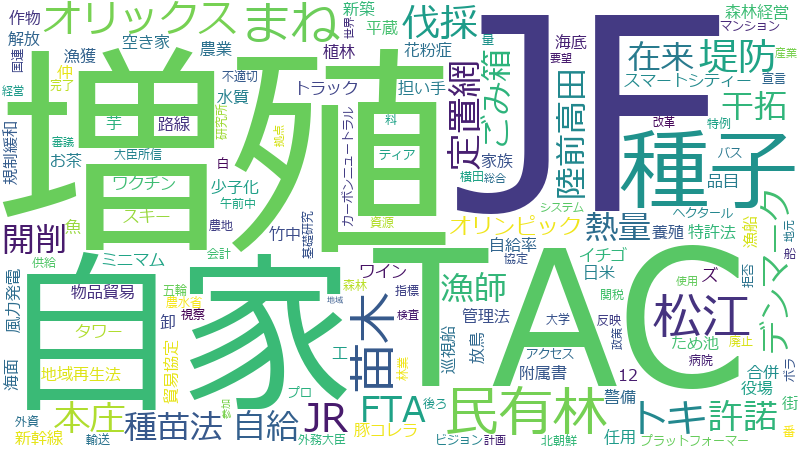

亀井亜紀子

増殖、自家、オリンピック、種子、堤防、伐採、民有林、JF、家族、まね、苗木、農業、量、TAC、トラック、新幹線、日米、許諾、ワクチン、合併、デンマーク、品目、在来、大学、担い手、種苗法、貿易協定、風力発電、オリックス、作物、卸、廃止、松江、漁師、自給、養殖、魚、スマートシティー、トキ、バス、定置網、少子化、巡視船、政策、森林経営、植林、漁獲、管理法、資源、路線、輸送、附属書、スキー、使用、反映、干拓、拒否、本庄、熱量、竹中、規制緩和、計画、警備、農地、陸前高田、JR、お茶、ごみ箱、ため池、アクセス、イチゴ、カーボンニュートラル、システム、タワー、マンション、ミニマム、ワイン、世界、任用、会計、供給、午前中、協定、地元、地域再生法、宣言、平蔵、役場、指標、改革、料、新築、林業、森林、海底、漁船、物品貿易、特例、産業、病院
JF、増殖、TAC、自家、種子、民有林、苗木、松江、まね、オリックス、JR、トキ、堤防、伐採、定置網、本庄、FTA、許諾、干拓、種苗法、陸前高田、漁師、在来、デンマーク、開削、熱量、ごみ箱、自給、オリンピック、スマートシティー、放鳥、植林、新幹線、卸、巡視船、附属書、風力発電、養殖、森林経営、トラック、竹中、貿易協定、スキー、地域再生法、平蔵、物品貿易、漁獲、合併、作物、ズ、ワイン、ミニマム、魚、管理法、タワー、イチゴ、品目、お茶、芋、日米、特許法、花粉症、12、ため池、農業、新築、海底、豚コレラ、路線、役場、海面、水質、規制緩和、少子化、街、ワクチン、仲、解放、担い手、漁船、空き家、任用、自給率、警備、工、家族、プラットフォーマー、マンション、林業、横田、農地、バス、基礎研究、外資、カーボンニュートラル、五輪、輸送、白、森林、大臣所信
JF
2020-03-05 account_balance
…質問なんですが、きょう、資料をお配りいたしました。私の地元島根県は、漁協数が三なんですけれども、実質的にはＪＦしまね一つだけです。全国でどの程度漁協が合併されているのかと思って見て、これは私は驚いたんですけれども、物す…
…では、ここからは、私の地元の島根の話になります。ＪＦしまねというのは、会長が全漁連の会長ですので、率先して、国策に合わせてといいますか、合併を進めた県です。その結果として、今何が起きているかといいますと、漁協の中が大変…
…いるかといいますと、漁協の中が大変な騒ぎになっております。きょうお配りした資料の二枚目ですけれども、まず、ＪＦしまねに統一されてから、一段目ですけれども、「二〇〇六年の発足後、職員を当初の約四百人から半数以下に削減。」…
…申請しても、いつ手続が始まるんだか全くわからなくて、船をつくるのを諦めたというような声が非常に多くて、それもＪＦしまねの中が混乱する一つの原因になっておりますので、それをお伝えいたしましたし、全国でどこが活発に活用してい…
…に活用しているのかというのは、きょう知りたいと思いました。次の質問ですけれども、これもこの新聞記事ですが、ＪＦしまねの監査体制、検査が非常におかしいということで、これも記事にあるとおり、准組合員を含めて約五百人が、有志…
…監査体制、検査が非常におかしいということで、これも記事にあるとおり、准組合員を含めて約五百人が、有志でつくるＪＦしまね正常化協議会というのに入っておりまして、県に検査強化の要望をするほどの事態に今なっております。この記…
…ので、第三者が、一体何が起きているのか、検査していただくのがやはり私は一番いいと思うんですけれども、国の官房検査官を派遣して、何とかＪＦしまねの中が落ちつくようにしていただけないでしょうか。これは大臣にお伺いいたします。…
ありがとうございます。知事とも話してまいりますので、知事も新しくかわったところなんですけれども、ＪＦしまねの正常化に私も取り組んでいきたいと思いますので、国が協力できる場面になりましたら、ぜひよろしくお願いいたします。
…卸売市場法の改正を行いました。その影響が早速地元に出ておりまして、きょうのお配りした資料の最後の二枚です。ＪＦしまねが、境港市場で、仲卸と兼業をしようとしている。ＪＦしまねというのは、大卸三社の一角を占めています。この…
…りまして、きょうのお配りした資料の最後の二枚です。ＪＦしまねが、境港市場で、仲卸と兼業をしようとしている。ＪＦしまねというのは、大卸三社の一角を占めています。この記事にありますように、境港魚市場、鳥取県漁協と並んで、大…
…で、大卸と仲卸を兼業するという方向に動いております。これがもし通ってしまうと、地元の仲卸がみんな潰れます。ＪＦしまねの資本力には対抗ができない。もし、これが起きたときには、今、ＪＦしまねというのは、網ごと買いますと言っ…
…しまうと、地元の仲卸がみんな潰れます。ＪＦしまねの資本力には対抗ができない。もし、これが起きたときには、今、ＪＦしまねというのは、網ごと買いますと言って網ごと魚を買って、イオンに直接に出しているんですね。それを大分前から…
…イオンに直接に出しているんですね。それを大分前から始めているんですけれども、もしかすると、地元の魚がごそっとＪＦに買い付けられてイオンに全部行ってしまうんじゃないだろうか、そういう不安の声がもう既に起きてきておりまして、…
…目ききだし、必要なシステムなんだというふうに、この場でも何度もいろいろな議員が発言いたしましたけれども、このＪＦしまねが大卸、仲卸を兼ねるというようなことはやめていただきたい。大臣としてもしっかり監督していただきたいんで…
増殖
2020-11-12 account_balance
…ね。それで伺いたいんですが、今回、優良な種子の海外流出をとめるために種苗法の改正があり、では、果たして自家増殖を禁止することが海外流出をとめることになるのだろうかという質問はほかの議員もされたわけですけれども、そもそも…
…いうのを入れているのはそういう理由からです。それでは、次の質問に移りますが、これは、果たして登録品種を自家増殖して栽培している農家が今回の改正によってどういうことになるのか、非常に不安を持っている農家が多いので、ちょっ…
…二百五十円としましょう。二百五十円を四百苗買ってくる、そうすると十万円ですね。この四百苗を大体一万苗ぐらいに増殖をして販売するんですね。それで、この二百五十円の中に、今は自家増殖は禁止じゃないですし、契約によっては種苗代…
…万円ですね。この四百苗を大体一万苗ぐらいに増殖をして販売するんですね。それで、この二百五十円の中に、今は自家増殖は禁止じゃないですし、契約によっては種苗代に自家増殖をする権利も含まれての値段なわけです。今、農家にいろい…
…販売するんですね。それで、この二百五十円の中に、今は自家増殖は禁止じゃないですし、契約によっては種苗代に自家増殖をする権利も含まれての値段なわけです。今、農家にいろいろ誤解が広がっているというふうな指摘が与党側からもあ…
…では、イチゴというのは増殖を前提に栽培し販売をするものなので、この法改正後も変わらないというふうに理解をいたしましたが、ただ、値段は変わるのではないかという懸念はありまして、今度はこの部分を伺いたいと思います。お配りし…
…では、今現在も、登録品種を他県で自家増殖するわけですから、その権利を農協が百万円程度支払って買っていて、そういうところであれば、もう既に支払って今までもやってきているのだから状況は変わらない、そういう御答弁ですね。農家側…
…ども、その権利が先ほど申し上げたように民間の企業に移ってしまったときというのは、やはり、今までのように安価に増殖できるようなことにはならないんじゃないだろうか、許諾料が上がっていくんじゃないだろうかという不安はどうしても…
…利を所有する種子がふえるのではないだろうかという不安が拭えないということだと私は思っております。次に、自家増殖禁止といっても、例外品目をなぜ設けなかったのかというのが大きな疑問です。先ほど、有機栽培の例も出ました。有…
…人気が出てきていて、日本もその分野に力を入れましょうと言っているときに、有機作物のところも例外にしないで自家増殖は一律禁止ですよとすることの意味がよくわからないんですけれども、矛盾していないでしょうか。お伺いいたします。…
…有機栽培、やはり、変な種を増殖しても意味がないので、優良な登録品種を自家増殖して栽培している農家というのは普通にあるわけでして、国がこれから有機栽培に力を入れましょうというのであれば、私は、有機作物というのは、自家増殖を…
…有機栽培、やはり、変な種を増殖しても意味がないので、優良な登録品種を自家増殖して栽培している農家というのは普通にあるわけでして、国がこれから有機栽培に力を入れましょうというのであれば、私は、有機作物というのは、自家増殖を…
…普通にあるわけでして、国がこれから有機栽培に力を入れましょうというのであれば、私は、有機作物というのは、自家増殖を許諾制にして原則禁止という、そこから例外として外すべきだと考えます。もう一つ、きょうお配りした資料二枚目…
…一つ、きょうお配りした資料二枚目に、これは農水省からいただいた資料ですが、「主要先進国における登録品種の自家増殖の扱い」で、どこの国も例外を設けております。例外作物のところをごらんいただきたいんですが、飼料作物、穀類、…
…、私は、やはり、農水省の説明というのはすごく不誠実だと思います。米国のところを見ますと、上の植物特許は自家増殖を認めていないですが、下の品種保護法は自家増殖を認めています。この中身について、私は調べてみました。それが、…
…誠実だと思います。米国のところを見ますと、上の植物特許は自家増殖を認めていないですが、下の品種保護法は自家増殖を認めています。この中身について、私は調べてみました。それが、お配りした三枚目の資料です。三枚目の資料の右…
…塊茎植物というのは芋とか根菜とか、そういうものは植物品種保護法の管理のもとにあるので、この法律に基づくと自家増殖は今でもできます。それで、その右、植物特許法の下には無性繁殖植物というのがあって、これは自家増殖が禁止され…
…づくと自家増殖は今でもできます。それで、その右、植物特許法の下には無性繁殖植物というのがあって、これは自家増殖が禁止されているんですけれども、実はここからバレイショとキクイモだけは例外品目として外されています。それで…
…からバレイショとキクイモだけは例外品目として外されています。それで、一番右、一般特許。これは、もちろん自家増殖は禁止でして、一九八〇年の米国の判決で初めて生物体の一般特許が認められました。ですので、一般特許で出願をされ…
…て左二つの植物品種保護法と植物特許法のもとに入りまして、そして、植物品種保護法の方で主要農作物などは全て自家増殖は認められておりますので、二枚目にお示しした農水省の資料で例外がないかのように見せているというのは、非常に私…
…いうのは、非常に私は不誠実だと思います。つまり、何にも例外品目をつくっていない、有機農作物も例外でない自家増殖の禁止という法律というのはかなり異例だと思いますけれども、どうして一切の例外品目をつくらないのでしょうか。こ…
…。」と資料にもありましたが、まさに、きょう午前中、この種苗法について審議入りをしたんですけれども、農家が自家増殖をするということと種苗が海外に持ち出されるということが一体どう直接的に関係があるのかということが論点になりま…
…しているところです。そこで、農家である横田参考人に伺いたいんですけれども、自分たちが真面目に、経営上、自家増殖して栽培していることに対して何か海外流出と結びつけられて言われる、もともと歴史的に自家採種することは農民の権…
…られて言われる、もともと歴史的に自家採種することは農民の権利だと思いますけれども、そこに踏み込んできて、自家増殖は原則禁止である、登録品種に関してですけれども、そう言われることに、何かちょっと違和感ですとか、心外だと思わ…
…りがとうございます。もう一つ、じゃ、横田参考人に伺いたいんですけれども、午前中の質疑の中で、登録品種を自家増殖している農家というのはどのぐらいあるんだろうか、そういう質問があって、農水省の方は、ほとんどありませんという…
…いよというようなニュアンスの答弁でした。一方、二〇一五年に農水省がアンケートを行っておりまして、農家に自家増殖についてのアンケート調査をして、そのときに、農家の五二・二％は登録品種の自家増殖をしていると。その理由として…
…行っておりまして、農家に自家増殖についてのアンケート調査をして、そのときに、農家の五二・二％は登録品種の自家増殖をしていると。その理由として、生産に必要な種苗を確保するためが三四・六％、それから、種苗代金を節約するため、…
…要な種苗を確保するためが三四・六％、それから、種苗代金を節約するため、これが三〇％とあったんですけれども、横田参考人の感覚的なものとして、登録品種を自家増殖している農家というのはやはりその程度はあるだろうと思われますか。…
…いと思います。きょう私は午前中の質疑の中で、なぜ例外品目をつくらないのかという質問をしました。つまり、自家増殖を一律に禁止すること自体私はおかしいと思っていますけれども、それを百歩譲って、原則自家増殖を禁止にしたとして…
…した。つまり、自家増殖を一律に禁止すること自体私はおかしいと思っていますけれども、それを百歩譲って、原則自家増殖を禁止にしたとしても、海外のように例外品目というのをなぜつくらないのですかという質問をして、まだ私は理解でき…
…たりバレイショであったり、そういうものが例外になっている。だから、日本であったら、米、麦、大豆ですとか、自家増殖が前提で栽培されているようなものですとか、あともう一つ大事なのは有機栽培です。有機栽培というのは、自家増殖、…
…家増殖が前提で栽培されているようなものですとか、あともう一つ大事なのは有機栽培です。有機栽培というのは、自家増殖、自家採種を前提として栽培されているので、なぜそういうものを例外として指定しないんですかという質問をしたんで…
…疑に言及しますが、我が方の篠原委員が資料を出しまして、二〇一七年に種苗法が改正をされたときに、禁止品目、自家増殖を禁止する品目が拡大されたと。この年から禁止品目の登録の数がふえてきて、二〇一七年は二百八十九種、二〇一八年…
2020-11-17 account_balance
…立憲民主党の亀井亜紀子でございます。先週に続き、質問をいたします。先週の最後の質問は、自家増殖を原則は禁止するとしても、なぜ例外品目を設けないのですかということでした。それに対する大臣の御答弁は、品目を指定すると、そ…
…目を設けないのですかということでした。それに対する大臣の御答弁は、品目を指定すると、その品目全てについて自家増殖を認めることになるのが問題だと。例えば、私の地元には仁多米というブランド米がありますけれども、大臣がおっしゃ…
…地元には仁多米というブランド米がありますけれども、大臣がおっしゃる意味というのは、仁多米については他県で自家増殖をしてほしくないと。そういうふうに、米全体を例外品目にすると個別に指定ができなくなる、だから品目で例外はつく…
…らないのだというような意味であろうととったんですけれども、そうであるならば、現行法のまま原則自由にして、自家増殖をしてはいけない禁止品目を単純に登録していけばいいんじゃないでしょうか。篠原委員の質問で、二〇一七年の種苗…
…す。次の質問に行きますけれども、許諾料についてです。許諾制にするということを仮に受け入れたとしても、誰が増殖をしているかという名前の登録だけではなくて、なぜ許諾料を取るのかということが疑問なんですけれども、お答えいた…
…。政府は、登録品種の海外流出を防止するために法改正が必要であると主張しておりますが、改正案では、農業者に自家増殖を認めていた規定を廃止する大転換を図ろうとしております。ＵＰＯＶ条約上も自家増殖は認められており、我が国では…
…が、改正案では、農業者に自家増殖を認めていた規定を廃止する大転換を図ろうとしております。ＵＰＯＶ条約上も自家増殖は認められており、我が国では種苗法第二十一条第二項に基づき、これまでも原則として自家増殖が認められてきました…
…ＵＰＯＶ条約上も自家増殖は認められており、我が国では種苗法第二十一条第二項に基づき、これまでも原則として自家増殖が認められてきました。改正案では、例外的に自家増殖を認める方策を一切考慮することなく、一律に自家増殖を許諾制…
…は種苗法第二十一条第二項に基づき、これまでも原則として自家増殖が認められてきました。改正案では、例外的に自家増殖を認める方策を一切考慮することなく、一律に自家増殖を許諾制にしようとしておりますが、これは、自家採種で種苗を…
…して自家増殖が認められてきました。改正案では、例外的に自家増殖を認める方策を一切考慮することなく、一律に自家増殖を許諾制にしようとしておりますが、これは、自家採種で種苗を得ている有機農業を制限するものであり、有機農業推進…
…本修正案は、まず、法律の題名を種苗法及び農業競争力強化支援法の一部を改正する法律に改め、有機農業における自家増殖を育成者権の効力が及ぶ範囲の例外とし、また、農業競争力強化支援法第八条第四号を削除する等するものです。以上…
…について、反対の立場から討論いたします。本法律案の最大の問題は、農家が登録品種について次期作付のために自家増殖する権利を原則禁止し、許諾制とすることです。種苗の海外流出を防ぐためとのことですが、そもそも、種苗を持ち出そ…
…な本改正は、農家への責任転嫁であり、正直な農家に負担を強いるものです。また、諸外国は主要農作物について自家増殖を禁止していませんが、本改正には例外品目がありません。特に、種の自家採種を前提とした有機栽培を例外としていな…
…外としていないのは、これから有機作物の輸出を促進しようという政府の方針に逆行するものです。許諾をとれば自家増殖できるのだから今までと変わらない、禁止するわけではないと政府は言いますが、原則自由から原則禁止に変わるという…
2021-03-17 account_balance
…る森林吸収源対策を着実に進めるため、森林整備事業に係る予算の確保及び支援措置を拡充すること。二特定母樹の増殖に当たっては、遺伝的多様性に十分配慮すること。また、増殖した特定母樹から採取される種穂の配布に当たっては、地…
…算の確保及び支援措置を拡充すること。二特定母樹の増殖に当たっては、遺伝的多様性に十分配慮すること。また、増殖した特定母樹から採取される種穂の配布に当たっては、地域の苗木生産者が広く利用できるようにすること。三再造…
TAC
2019-03-14 account_balance
…ども、政府は、昨年の漁業法改正、これは、資源管理の手法を入れたというのは、この一枚目のグラフなどを見て、日本の資源の減少というのは乱獲が原因だ、だからＴＡＣという手法を取り入れたのでしょうか。農水大臣にお伺いいたします。…
…幾つか全体的な理由を述べられましたので、乱獲が原因ということはお考えじゃないのかなと思いますが。漁業者は、ＴＡＣ、漁獲可能量というものを信用しておりません。昨年の議論でも、このＴＡＣが果たして有効なものなのか、科学的根…
…ゃないのかなと思いますが。漁業者は、ＴＡＣ、漁獲可能量というものを信用しておりません。昨年の議論でも、このＴＡＣが果たして有効なものなのか、科学的根拠があって、これを導入すれば資源管理が適切にできるのかという議論があり…
…とっていますから、そんなに単純に管理できるものじゃないという指摘もあるわけですけれども、そのほかに、漁業者がＴＡＣを信用しないことにはやはり理由があります。昨年、千葉県の小型漁船の漁師に話を聞いたんですけれども、この方…
…り理由があります。昨年、千葉県の小型漁船の漁師に話を聞いたんですけれども、この方は、二十年前にスルメイカをＴＡＣの対象魚種にしてほしいと国会前でデモをした方でした。かつて、千葉県沖では、宮城の方からスルメイカがおりてき…
…てきて、たくさんとれたんだそうです。それが二十年ほど前にとれなくなってきたので管理していただきたいと、それでＴＡＣを要望したそうで、実現したんですけれども、逆に全くとれなくなった。その経験があるので、今はもうイカはとれな…
…た。その経験があるので、今はもうイカはとれないのでキンメダイをとっているそうなんですが、このキンメダイが今回ＴＡＣの対象になったときに、いよいよとるものがなくなって廃業せざるを得ないのでやめてくれ、そういう要望でした。…
…たときに、いよいよとるものがなくなって廃業せざるを得ないのでやめてくれ、そういう要望でした。じゃ、なぜこのＴＡＣで資源管理をすると、漁獲可能量を決めると逆に資源が減ってしまったのかということを検証しなければいけないと思…
…っていた量よりも多いところに規制をかけたので、逆に、そこまでとりなさいという努力目標のようになってしまって、ＴＡＣが形骸化した、そういう指摘もあるようなんですけれども、一体なぜ機能しなかったんでしょうか。また、今回はどの…
…定置網漁を守らなければいけないと私は強く感じております。そこで、昨年も質問したんですが、沿岸漁業、定置網はＴＡＣ対象から除外すべきだと私は思います。クロマグロの例も出しました。定置網というのは、魚を追いかけてとりに行く…
…けですから、その中で魚種ごとに分けるということは難しいですから、クロマグロだけ、今も選別してというような手間があるわけで、ＴＡＣは沿岸には適用すべきじゃないと私は強く思いますけれども、農水大臣の御答弁をお願いいたします。…
…ると思います。それでもやはり、いろいろな魚が逃げるわけで、対象魚種だけが逃げてくれるわけじゃありませんから、ＴＡＣ対象の魚種をふやしていくと、どうしたって定置網の人たちへの影響は出てきますよね。それは現場を見ても私は強く…
2021-02-25 account_balance
…んですけれども、でも、そこのところがやはり納得いかないんですね。この統計、調査目的というのは、漁獲可能量、ＴＡＣを設定する際の基礎資料等の水産行政に係る資料を整備することを目的としているわけですので、ＴＡＣを設定するに…
…、漁獲可能量、ＴＡＣを設定する際の基礎資料等の水産行政に係る資料を整備することを目的としているわけですので、ＴＡＣを設定するに当たって、その大本の数字であるところがみんな秘匿されていては、やはり、何を根拠としてその数値が…
自家
2020-11-12 account_balance
…すよね。それで伺いたいんですが、今回、優良な種子の海外流出をとめるために種苗法の改正があり、では、果たして自家増殖を禁止することが海外流出をとめることになるのだろうかという質問はほかの議員もされたわけですけれども、そも…
…ろというのを入れているのはそういう理由からです。それでは、次の質問に移りますが、これは、果たして登録品種を自家増殖して栽培している農家が今回の改正によってどういうことになるのか、非常に不安を持っている農家が多いので、ち…
…と十万円ですね。この四百苗を大体一万苗ぐらいに増殖をして販売するんですね。それで、この二百五十円の中に、今は自家増殖は禁止じゃないですし、契約によっては種苗代に自家増殖をする権利も含まれての値段なわけです。今、農家にい…
…して販売するんですね。それで、この二百五十円の中に、今は自家増殖は禁止じゃないですし、契約によっては種苗代に自家増殖をする権利も含まれての値段なわけです。今、農家にいろいろ誤解が広がっているというふうな指摘が与党側から…
…では、今現在も、登録品種を他県で自家増殖するわけですから、その権利を農協が百万円程度支払って買っていて、そういうところであれば、もう既に支払って今までもやってきているのだから状況は変わらない、そういう御答弁ですね。農家側…
…が権利を所有する種子がふえるのではないだろうかという不安が拭えないということだと私は思っております。次に、自家増殖禁止といっても、例外品目をなぜ設けなかったのかというのが大きな疑問です。先ほど、有機栽培の例も出ました…
…由来の種苗の使用が必要で、譲渡、交換や購入によって入手できない場合、又は購入できても著しく高価な場合、しかも自家採種もできない場合に限り慣行栽培由来の種苗を使用することが可能と書いてあるので、自家採種前提なんですよね、有…
…著しく高価な場合、しかも自家採種もできない場合に限り慣行栽培由来の種苗を使用することが可能と書いてあるので、自家採種前提なんですよね、有機栽培というのは。今、日本は農産物を世界に輸出していくことを強化していて、その際、…
…なり人気が出てきていて、日本もその分野に力を入れましょうと言っているときに、有機作物のところも例外にしないで自家増殖は一律禁止ですよとすることの意味がよくわからないんですけれども、矛盾していないでしょうか。お伺いいたしま…
…有機栽培、やはり、変な種を増殖しても意味がないので、優良な登録品種を自家増殖して栽培している農家というのは普通にあるわけでして、国がこれから有機栽培に力を入れましょうというのであれば、私は、有機作物というのは、自家増殖を…
…のは普通にあるわけでして、国がこれから有機栽培に力を入れましょうというのであれば、私は、有機作物というのは、自家増殖を許諾制にして原則禁止という、そこから例外として外すべきだと考えます。もう一つ、きょうお配りした資料二…
…もう一つ、きょうお配りした資料二枚目に、これは農水省からいただいた資料ですが、「主要先進国における登録品種の自家増殖の扱い」で、どこの国も例外を設けております。例外作物のところをごらんいただきたいんですが、飼料作物、穀…
…すが、私は、やはり、農水省の説明というのはすごく不誠実だと思います。米国のところを見ますと、上の植物特許は自家増殖を認めていないですが、下の品種保護法は自家増殖を認めています。この中身について、私は調べてみました。それ…
…く不誠実だと思います。米国のところを見ますと、上の植物特許は自家増殖を認めていないですが、下の品種保護法は自家増殖を認めています。この中身について、私は調べてみました。それが、お配りした三枚目の資料です。三枚目の資料…
…ら、塊茎植物というのは芋とか根菜とか、そういうものは植物品種保護法の管理のもとにあるので、この法律に基づくと自家増殖は今でもできます。それで、その右、植物特許法の下には無性繁殖植物というのがあって、これは自家増殖が禁止…
…に基づくと自家増殖は今でもできます。それで、その右、植物特許法の下には無性繁殖植物というのがあって、これは自家増殖が禁止されているんですけれども、実はここからバレイショとキクイモだけは例外品目として外されています。そ…
…ここからバレイショとキクイモだけは例外品目として外されています。それで、一番右、一般特許。これは、もちろん自家増殖は禁止でして、一九八〇年の米国の判決で初めて生物体の一般特許が認められました。ですので、一般特許で出願を…
…は全て左二つの植物品種保護法と植物特許法のもとに入りまして、そして、植物品種保護法の方で主要農作物などは全て自家増殖は認められておりますので、二枚目にお示しした農水省の資料で例外がないかのように見せているというのは、非常…
…るというのは、非常に私は不誠実だと思います。つまり、何にも例外品目をつくっていない、有機農作物も例外でない自家増殖の禁止という法律というのはかなり異例だと思いますけれども、どうして一切の例外品目をつくらないのでしょうか…
…無い。」と資料にもありましたが、まさに、きょう午前中、この種苗法について審議入りをしたんですけれども、農家が自家増殖をするということと種苗が海外に持ち出されるということが一体どう直接的に関係があるのかということが論点にな…
…議論しているところです。そこで、農家である横田参考人に伺いたいんですけれども、自分たちが真面目に、経営上、自家増殖して栽培していることに対して何か海外流出と結びつけられて言われる、もともと歴史的に自家採種することは農民…
…真面目に、経営上、自家増殖して栽培していることに対して何か海外流出と結びつけられて言われる、もともと歴史的に自家採種することは農民の権利だと思いますけれども、そこに踏み込んできて、自家増殖は原則禁止である、登録品種に関し…
…つけられて言われる、もともと歴史的に自家採種することは農民の権利だと思いますけれども、そこに踏み込んできて、自家増殖は原則禁止である、登録品種に関してですけれども、そう言われることに、何かちょっと違和感ですとか、心外だと…
…をありがとうございます。もう一つ、じゃ、横田参考人に伺いたいんですけれども、午前中の質疑の中で、登録品種を自家増殖している農家というのはどのぐらいあるんだろうか、そういう質問があって、農水省の方は、ほとんどありませんと…
…はないよというようなニュアンスの答弁でした。一方、二〇一五年に農水省がアンケートを行っておりまして、農家に自家増殖についてのアンケート調査をして、そのときに、農家の五二・二％は登録品種の自家増殖をしていると。その理由と…
…トを行っておりまして、農家に自家増殖についてのアンケート調査をして、そのときに、農家の五二・二％は登録品種の自家増殖をしていると。その理由として、生産に必要な種苗を確保するためが三四・六％、それから、種苗代金を節約するた…
…要な種苗を確保するためが三四・六％、それから、種苗代金を節約するため、これが三〇％とあったんですけれども、横田参考人の感覚的なものとして、登録品種を自家増殖している農家というのはやはりその程度はあるだろうと思われますか。…
…したいと思います。きょう私は午前中の質疑の中で、なぜ例外品目をつくらないのかという質問をしました。つまり、自家増殖を一律に禁止すること自体私はおかしいと思っていますけれども、それを百歩譲って、原則自家増殖を禁止にしたと…
…しました。つまり、自家増殖を一律に禁止すること自体私はおかしいと思っていますけれども、それを百歩譲って、原則自家増殖を禁止にしたとしても、海外のように例外品目というのをなぜつくらないのですかという質問をして、まだ私は理解…
…あったりバレイショであったり、そういうものが例外になっている。だから、日本であったら、米、麦、大豆ですとか、自家増殖が前提で栽培されているようなものですとか、あともう一つ大事なのは有機栽培です。有機栽培というのは、自家増…
…、自家増殖が前提で栽培されているようなものですとか、あともう一つ大事なのは有機栽培です。有機栽培というのは、自家増殖、自家採種を前提として栽培されているので、なぜそういうものを例外として指定しないんですかという質問をした…
…が前提で栽培されているようなものですとか、あともう一つ大事なのは有機栽培です。有機栽培というのは、自家増殖、自家採種を前提として栽培されているので、なぜそういうものを例外として指定しないんですかという質問をしたんですけれ…
…の質疑に言及しますが、我が方の篠原委員が資料を出しまして、二〇一七年に種苗法が改正をされたときに、禁止品目、自家増殖を禁止する品目が拡大されたと。この年から禁止品目の登録の数がふえてきて、二〇一七年は二百八十九種、二〇一…
2020-11-17 account_balance
…立憲民主党の亀井亜紀子でございます。先週に続き、質問をいたします。先週の最後の質問は、自家増殖を原則は禁止するとしても、なぜ例外品目を設けないのですかということでした。それに対する大臣の御答弁は、品目を指定すると、そ…
…外品目を設けないのですかということでした。それに対する大臣の御答弁は、品目を指定すると、その品目全てについて自家増殖を認めることになるのが問題だと。例えば、私の地元には仁多米というブランド米がありますけれども、大臣がおっ…
…私の地元には仁多米というブランド米がありますけれども、大臣がおっしゃる意味というのは、仁多米については他県で自家増殖をしてほしくないと。そういうふうに、米全体を例外品目にすると個別に指定ができなくなる、だから品目で例外は…
…つくらないのだというような意味であろうととったんですけれども、そうであるならば、現行法のまま原則自由にして、自家増殖をしてはいけない禁止品目を単純に登録していけばいいんじゃないでしょうか。篠原委員の質問で、二〇一七年の…
…というのは大変違和感があります。少なくとも、有機栽培については、先日の参考人の答弁もありましたとおり、種の自家採種を前提としての農業の形態でありますから、今、日本政府が農産品の輸出を促進しよう、特に有機栽培も力を入れて…
…です。政府は、登録品種の海外流出を防止するために法改正が必要であると主張しておりますが、改正案では、農業者に自家増殖を認めていた規定を廃止する大転換を図ろうとしております。ＵＰＯＶ条約上も自家増殖は認められており、我が国…
…ますが、改正案では、農業者に自家増殖を認めていた規定を廃止する大転換を図ろうとしております。ＵＰＯＶ条約上も自家増殖は認められており、我が国では種苗法第二十一条第二項に基づき、これまでも原則として自家増殖が認められてきま…
…す。ＵＰＯＶ条約上も自家増殖は認められており、我が国では種苗法第二十一条第二項に基づき、これまでも原則として自家増殖が認められてきました。改正案では、例外的に自家増殖を認める方策を一切考慮することなく、一律に自家増殖を許…
…国では種苗法第二十一条第二項に基づき、これまでも原則として自家増殖が認められてきました。改正案では、例外的に自家増殖を認める方策を一切考慮することなく、一律に自家増殖を許諾制にしようとしておりますが、これは、自家採種で種…
…則として自家増殖が認められてきました。改正案では、例外的に自家増殖を認める方策を一切考慮することなく、一律に自家増殖を許諾制にしようとしておりますが、これは、自家採種で種苗を得ている有機農業を制限するものであり、有機農業…
…例外的に自家増殖を認める方策を一切考慮することなく、一律に自家増殖を許諾制にしようとしておりますが、これは、自家採種で種苗を得ている有機農業を制限するものであり、有機農業推進の観点から極めて問題のある法案です。そこで、…
…で、本修正案は、まず、法律の題名を種苗法及び農業競争力強化支援法の一部を改正する法律に改め、有機農業における自家増殖を育成者権の効力が及ぶ範囲の例外とし、また、農業競争力強化支援法第八条第四号を削除する等するものです。…
…律案について、反対の立場から討論いたします。本法律案の最大の問題は、農家が登録品種について次期作付のために自家増殖する権利を原則禁止し、許諾制とすることです。種苗の海外流出を防ぐためとのことですが、そもそも、種苗を持ち…
…ような本改正は、農家への責任転嫁であり、正直な農家に負担を強いるものです。また、諸外国は主要農作物について自家増殖を禁止していませんが、本改正には例外品目がありません。特に、種の自家採種を前提とした有機栽培を例外として…
…。また、諸外国は主要農作物について自家増殖を禁止していませんが、本改正には例外品目がありません。特に、種の自家採種を前提とした有機栽培を例外としていないのは、これから有機作物の輸出を促進しようという政府の方針に逆行する…
…を例外としていないのは、これから有機作物の輸出を促進しようという政府の方針に逆行するものです。許諾をとれば自家増殖できるのだから今までと変わらない、禁止するわけではないと政府は言いますが、原則自由から原則禁止に変わると…
種子
2020-11-12 account_balance
…野上大臣にかわって初めての質問になります。よろしくお願いいたします。では、初めの質問ですけれども、政府の種子の開発や保護についての基本的な考え方について、まず伺いたいと思います。実は、私たちは、廃止されてしまった主…
…保護についての基本的な考え方について、まず伺いたいと思います。実は、私たちは、廃止されてしまった主要農作物種子法の復活法案を提出しておりまして、過去に一度この委員会で審議をされたまま、ずっと継続審議で、たなざらしになっ…
…会で審議をされたまま、ずっと継続審議で、たなざらしになっております。たなざらしになるということは、政府の方は種子法を復活する必要はないと考え、与党もそう考えているから審議をされないのだと思いますけれども、この背景にどうい…
…審議をされないのだと思いますけれども、この背景にどういう考え方があるのかというのをまず伺いたいと思います。種子法の復活法案についてこの委員会で審議されたときに、自民党の坂本先生がいろいろとお話をされていました。それを読…
…た。それを読むと自民党さんの考え方というのはある程度見えてまいりますので、政府に伺いたいと思います。まず、種子法を廃止した背景として、もともと種子に関しては、戦後、非常に劣悪なものが出回ったので、昭和二十二年に農産種苗…
…いうのはある程度見えてまいりますので、政府に伺いたいと思います。まず、種子法を廃止した背景として、もともと種子に関しては、戦後、非常に劣悪なものが出回ったので、昭和二十二年に農産種苗法というのができて、そこから、議員立…
…農産種苗法というのができて、そこから、議員立法で、米、麦、大豆が切り分けられる形で、昭和二十七年に主要農作物種子法というものができた。これは、種子法とは言うけれども、要するに、稲、麦、大豆奨励品種増産法だ、増産をするため…
…ら、議員立法で、米、麦、大豆が切り分けられる形で、昭和二十七年に主要農作物種子法というものができた。これは、種子法とは言うけれども、要するに、稲、麦、大豆奨励品種増産法だ、増産をするための品種改良法なんですと坂本先生は当…
…ための品種改良法なんですと坂本先生は当時言われています。それで、今、米余りの時代で、食料増産の必要はないから種子法は廃止して構わないということになったと私は理解しました。そして、種苗法の方で種は守ると。坂本先生は、本来…
…ったと私は理解しました。そして、種苗法の方で種は守ると。坂本先生は、本来ならば、昭和五十三年、知的所有権が種子法から種苗法に返されたとき、あるいは、昭和六十一年、民間の参入が許されたとき、参入を認めたときに、また、平成…
…、また、平成十年、世界の知的所有権の中に、条約に肩を並べたとき、つまり種苗法が改正されたこの平成十年のときに種子法は廃止していてもよかったんだというふうに述べられているので、もう必要ないねということで廃止をされ、だから復…
…私たち立憲民主党及び種子法復活法案を出した提出会派は、種子法を単なる食料増産法だとは思っていないんですね。米、麦、大豆、主要農産物の種子というのはやはり公共の資産であって、近年、さまざまな企業が知的所有権を主張するように…
…私たち立憲民主党及び種子法復活法案を出した提出会派は、種子法を単なる食料増産法だとは思っていないんですね。米、麦、大豆、主要農産物の種子というのはやはり公共の資産であって、近年、さまざまな企業が知的所有権を主張するように…
…法復活法案を出した提出会派は、種子法を単なる食料増産法だとは思っていないんですね。米、麦、大豆、主要農産物の種子というのはやはり公共の資産であって、近年、さまざまな企業が知的所有権を主張するようになって、登録品種もふえて…
…を主張するようになって、登録品種もふえているけれども、やはり、食料自給率に深くかかわる主要農産物に関しては、種子は、公共が前面に出て、予算もきちんと、根拠法を持った状態で国や県の試験場に予算をつけて、良質な、多種多様な種…
…けて、良質な、多種多様な種を開発していくということも非常に大事だと考えておりますので、種苗法だけじゃなくて、種子法は必要だという立場です。それで、今、政府は、いわゆる種子法は食料増産法であったのだから種苗法の方で種子は…
…事だと考えておりますので、種苗法だけじゃなくて、種子法は必要だという立場です。それで、今、政府は、いわゆる種子法は食料増産法であったのだから種苗法の方で種子は守る、そういう方向性の中で、では、種苗法のどの部分で、種子法…
…、種子法は必要だという立場です。それで、今、政府は、いわゆる種子法は食料増産法であったのだから種苗法の方で種子は守る、そういう方向性の中で、では、種苗法のどの部分で、種子法の廃止を補うような、種子を保護しているような条…
…る種子法は食料増産法であったのだから種苗法の方で種子は守る、そういう方向性の中で、では、種苗法のどの部分で、種子法の廃止を補うような、種子を保護しているような条項があるのですかというのを前回の国会で江藤前大臣に聞きました…
…たのだから種苗法の方で種子は守る、そういう方向性の中で、では、種苗法のどの部分で、種子法の廃止を補うような、種子を保護しているような条項があるのですかというのを前回の国会で江藤前大臣に聞きましたところ、種苗法の六十一条だ…
…ろには勧告をして、更に守らなければその種苗業者を公表をする、そういう定めであるので、これをもって主要農作物の種子を公共の資産と考えて守っていくような、そういう要素は何も見えないんですけれども、果たして種苗法でどうやって種…
…公表をする、そういう定めであるので、これをもって主要農作物の種子を公共の資産と考えて守っていくような、そういう要素は何も見えないんですけれども、果たして種苗法でどうやって種子を守っていくのか、大臣、お答えいただけますか。…
…ちょっと、まだ余りすっきりしないんですけれども、関連で次の質問に行きたいと思います。種子の開発については、民間企業の協力を求めというか、民間企業にそれを担ってもらうという方向性に法律が変わっていっているというふうに私は…
…ていっているというふうに私は見ております。なぜかというと、それは、農業競争力強化支援法八条四号、これにおいて種子に関する知見の民間事業者への提供を推進することとあるので、積極的に税金を投じて種子の開発をしてきたその知見を…
…援法八条四号、これにおいて種子に関する知見の民間事業者への提供を推進することとあるので、積極的に税金を投じて種子の開発をしてきたその知見を民間事業者へ提供してくださいということですよね。それで伺いたいんですが、今回、優…
…発をしてきたその知見を民間事業者へ提供してくださいということですよね。それで伺いたいんですが、今回、優良な種子の海外流出をとめるために種苗法の改正があり、では、果たして自家増殖を禁止することが海外流出をとめることになる…
…ことになるのだろうかという質問はほかの議員もされたわけですけれども、そもそも、農業競争力強化支援法八条四号で種子に関する知見を民間業者に提供しなさいとあって、この民間業者というのは外資系企業も含めますよね、含んでいますね…
…を民間業者に提供しなさいとあって、この民間業者というのは外資系企業も含めますよね、含んでいますね。これは、種子法の廃止のときの参議院の方の質疑、答弁で見つけてきましたけれども、基本的に、法制度上、外国資本が主要農作物の…
…法の廃止のときの参議院の方の質疑、答弁で見つけてきましたけれども、基本的に、法制度上、外国資本が主要農作物の種子産業に参入することは可能でございますという答弁が、当時、政府参考人からありました。そして、今、外資から見た場…
…ことは可能でございますという答弁が、当時、政府参考人からありました。そして、今、外資から見た場合に、我が国の種子の市場がそれほど魅力的ではないというのが実態でございますので、現実にほとんど外資は入ってきていないという状況…
…っているのは非常に矛盾をして、今回の改正というのは非常に矛盾しているなと思います。なので、私たちが主要農作物種子法復活法案の中に農業競争力強化支援法の八条四号は削除しろというのを入れているのはそういう理由からです。それ…
…もしれませんけれども、確かに。ただ、私がやはり不安に思うのは、そうやって県主体で、県の農業試験場が開発した種子で、ＪＡを通して提供されてきたものですけれども、その権利が先ほど申し上げたように民間の企業に移ってしまったと…
…正というのは、直後には仮にそう影響がなかったとしても、将来的に、やはり、登録品種もふえ、民間が権利を所有する種子がふえるのではないだろうかという不安が拭えないということだと私は思っております。次に、自家増殖禁止といって…
2019-03-07 account_balance
…よろしくお願いいたします。次の質問に移ります。主要農作物種子法の廃止についてです。私たち、この種子法の復活法案を出しておりまして、去年の通常国会で一度審議をしていただきましたけれども、継続審議扱いで、臨時国会ではつい…
…よろしくお願いいたします。次の質問に移ります。主要農作物種子法の廃止についてです。私たち、この種子法の復活法案を出しておりまして、去年の通常国会で一度審議をしていただきましたけれども、継続審議扱いで、臨時国会ではつい…
…審議をしていただきましたけれども、継続審議扱いで、臨時国会ではついに審議の機会がありませんでした。一方で、種子法が昨年四月から廃止されて、この三月までの一年間に、地方自治体では、この種子法にかわる県条例が制定されたり、…
…会がありませんでした。一方で、種子法が昨年四月から廃止されて、この三月までの一年間に、地方自治体では、この種子法にかわる県条例が制定されたり、また市町村で決議が出たりという動きが既にございます。そこで、これは政府参考…
種子法が国会で廃止されたときには、私はまだ議員で……
…訂正、ありがとうございます。種子法の廃止の審議がされたとき、私は議員でなかったので、なぜそういう議論に至ったのか、なぜ政府は種子法を廃止したのかというところはよくわかりません。昨年、種子法の復活法案の審議をしたときに…
…ざいます。種子法の廃止の審議がされたとき、私は議員でなかったので、なぜそういう議論に至ったのか、なぜ政府は種子法を廃止したのかというところはよくわかりません。昨年、種子法の復活法案の審議をしたときに、自民党の方の質問…
…たので、なぜそういう議論に至ったのか、なぜ政府は種子法を廃止したのかというところはよくわかりません。昨年、種子法の復活法案の審議をしたときに、自民党の方の質問の中にその種子法の経緯についての説明がありまして、お話を伺い…
…たのかというところはよくわかりません。昨年、種子法の復活法案の審議をしたときに、自民党の方の質問の中にその種子法の経緯についての説明がありまして、お話を伺いながら、随分考え方が違うものだと思いました。その当時のあれは…
…ら、随分考え方が違うものだと思いました。その当時のあれは坂本委員でしたけれども、委員の説明によれば、結局、種子法というのは、議員立法で種子法と言われているけれども、実際のところは稲、麦、大豆奨励品種増産法なんだ、戦後に…
…思いました。その当時のあれは坂本委員でしたけれども、委員の説明によれば、結局、種子法というのは、議員立法で種子法と言われているけれども、実際のところは稲、麦、大豆奨励品種増産法なんだ、戦後に食糧を増産するためにそういう…
…産するための法律で、知的所有権という概念はなかった、けれども、今、知的所有権という概念が世界に広がってきて、種子の開発競争に入っている、その中にあって国際競争力を高めなければいけないから、もう種子法というのは時代おくれで…
…念が世界に広がってきて、種子の開発競争に入っている、その中にあって国際競争力を高めなければいけないから、もう種子法というのは時代おくれであって、もっと早くに廃止されているべきものだった、遅きに失したというようなことを言っ…
…早くに廃止されているべきものだった、遅きに失したというようなことを言っていたんですね。ですので、大分考え方がやはり違うんだなと思ったんですけれども、このような発想で政府は種子法を廃止したんでしょうか。お伺いいたします。…
…今の御答弁、ちょっと疑問に感じるんですけれども。やはり、種子に関する、ちょっと考え方の違いですかね。実際には、県で種子法にかわる条例が設定されたり、やはり国民の中では非常に今不安が広がっております。今、世界で何が起き…
…弁、ちょっと疑問に感じるんですけれども。やはり、種子に関する、ちょっと考え方の違いですかね。実際には、県で種子法にかわる条例が設定されたり、やはり国民の中では非常に今不安が広がっております。今、世界で何が起きているか…
…に今不安が広がっております。今、世界で何が起きているかというと、わずか五つの多国籍企業によって六割を超える種子の寡占化が起きています。ですから、もう種子がビジネスになっているんですよね。そして、次の質問、農薬に移りま…
…が起きているかというと、わずか五つの多国籍企業によって六割を超える種子の寡占化が起きています。ですから、もう種子がビジネスになっているんですよね。そして、次の質問、農薬に移りますけれども、結局、遺伝子操作されたＦ1種、…
…がビジネスになっているんですよね。そして、次の質問、農薬に移りますけれども、結局、遺伝子操作されたＦ1種、種子と、それに対応する農薬がセット販売されている、これが今問題になっています。その農薬はグリホサートといいます…
2020-06-09 account_balance
…ありがとうございます。それでは、この関連で、次に、種子の関係に行きたいと思います。種子法が廃止されてしばらくたちます。種子法というのは種子に関する予算をつけるための根拠法であって、これがなくなっても予算はついているわ…
…ありがとうございます。それでは、この関連で、次に、種子の関係に行きたいと思います。種子法が廃止されてしばらくたちます。種子法というのは種子に関する予算をつけるための根拠法であって、これがなくなっても予算はついているわ…
…います。それでは、この関連で、次に、種子の関係に行きたいと思います。種子法が廃止されてしばらくたちます。種子法というのは種子に関する予算をつけるための根拠法であって、これがなくなっても予算はついているわけですけれども…
…は、この関連で、次に、種子の関係に行きたいと思います。種子法が廃止されてしばらくたちます。種子法というのは種子に関する予算をつけるための根拠法であって、これがなくなっても予算はついているわけですけれども、この根拠法をや…
…るわけですけれども、この根拠法をやはり持つべきだ、復活させるべきだという声は現場にも強くありまして、私たちは種子法の復活法案を提出しております。そこで、まず、これは政府参考人の方に質問いたしますけれども、今、根拠法であ…
…復活法案を提出しております。そこで、まず、これは政府参考人の方に質問いたしますけれども、今、根拠法であった種子法にかわって各県が条例を制定しているかと思いますけれども、この条例の制定がどのくらいまで進んできているのか。…
…て、そういう方向に向かっておりますので、これからもふえていくのではないかと思っております。根拠法がなくても種子の予算はついているわけですけれども、やはり、基本的に私は、法律があって、法律に基づいて予算をつけて、それをチ…
…算をつけて、それをチェックするというのが王道であろうかと思いますので、ため池の根拠法があっても構いませんし、種子法に関しても、やはり根拠法は復活させるべきだと考えております。これは議員立法として出しておりますので、大臣…
…法として出しておりますので、大臣にお尋ねするようなことではないかと思いますけれども、ただ、大臣の印象として、種子法はつまり役割を終えたというようなことで当時廃止をし、そして、種を守るというのは種苗法の方でカバーしていくん…
…根拠法がなくなってしまった種子の予算をつけ続けているわけですけれども、それはつまり、必要であれば根拠法がなくても、額を減らさずというか、これだけ声も強いわけですから、予算をつけ続けていく方向であるということには変わりはな…
…種子法復活法案、議員立法の質疑が一回行われたときに、坂本先生からは質問を受けたかと私も記憶をしております。そのときに、種子法を廃止した背景として、役割を終えたというような御見解だったというふうに、議事録にはたしか残ってい…
…法案、議員立法の質疑が一回行われたときに、坂本先生からは質問を受けたかと私も記憶をしております。そのときに、種子法を廃止した背景として、役割を終えたというような御見解だったというふうに、議事録にはたしか残っていたと私は思…
…んし、時間も足りない、参考人も呼べないという中で、今国会での審議は見送られたかと思いますけれども。政府は、種子法を廃止したけれども、種を守るということについては種苗法で守るんだというような御答弁を以前にもいただいており…
…とについては種苗法で守るんだというような御答弁を以前にもいただいておりましたので、今回の種苗法の改正の中に、種子法が廃止された部分をカバーするような部分、つまり、どうやって種を守っていくのか、それは種苗法でどういうふうに…
…こちらも突っ込んで質問したいと思うんですけれども、私たち野党共同会派の立場としましては、継続審議になっている種子法の復活法案は、並べて審議していただきたいんです。つまり、考え方として、与党の方は、種子法はもう要らない、…
…続審議になっている種子法の復活法案は、並べて審議していただきたいんです。つまり、考え方として、与党の方は、種子法はもう要らない、役割を終えた、そして種を守るということについては種苗法でカバーするということで、そういう考…
…そして種を守るということについては種苗法でカバーするということで、そういう考え方ですよね。私たちにとっては、種子法は復活させるべきだ、種苗法は種苗法でもちろん必要で、それをセットで種を守るという考え方ですので、それはやは…
…れをセットで種を守るという考え方ですので、それはやはり、種苗法をもし審議するのであれば、継続審議になっている種子法の復活法案というのもちゃんと審議していただいて、双方の考え方を比較しないと話にならないと思いますので、ずっ…
…ゃんと審議していただいて、双方の考え方を比較しないと話にならないと思いますので、ずっとたなざらしになっている種子法の復活法案というのは、もし種苗の話をするのであれば、きちんと審議をしていただきたい。これは委員会が決めるこ…
2020-11-17 account_balance
…私が感じたことは、種子法が廃止をされて、種子の開発の予算をつけるための根拠法がなくなりました。今のところ、県で条例をつくっているところも多いですし、なかなか種子法がなくなったから一気に予算を減らすということはやりにくいか…
…私が感じたことは、種子法が廃止をされて、種子の開発の予算をつけるための根拠法がなくなりました。今のところ、県で条例をつくっているところも多いですし、なかなか種子法がなくなったから一気に予算を減らすということはやりにくいか…
…発の予算をつけるための根拠法がなくなりました。今のところ、県で条例をつくっているところも多いですし、なかなか種子法がなくなったから一気に予算を減らすということはやりにくいかもしれませんけれども、だんだん地方交付税措置が減…
…いう意図があるのではないかと思っております。きょうは時間がないので、次の質問に行きます。先週、私が、なぜ種子法を廃止したのですかという質問をする中で、大臣の御答弁で、種子法は食料増産法であったから、今の時代は米も余っ…
…いので、次の質問に行きます。先週、私が、なぜ種子法を廃止したのですかという質問をする中で、大臣の御答弁で、種子法は食料増産法であったから、今の時代は米も余っているし必要ない、そして、農研機構などが進める種子開発というの…
…の御答弁で、種子法は食料増産法であったから、今の時代は米も余っているし必要ない、そして、農研機構などが進める種子開発というのは味のよい米の方に寄ってしまって、外食や中食に求められている多収品種の開発というのはほとんどでき…
…れども、大臣のおっしゃる意味ですと、たくさんとれる外食用の安い米が欲しいというように聞こえますし、そのために種子法を廃止したというふうに理解できるものですから、次の質問をいたします。それでは、今、野菜の種というのは、一…
…、それから、何よりも、毎年種を買わなければいけなくなることが問題視されております。けれども、こういう多収量の種子が広がることはよいことだ、そのために民間にも種子を開発してほしいんだということでよろしいですか。Ｆ1が広まっ…
…くなることが問題視されております。けれども、こういう多収量の種子が広がることはよいことだ、そのために民間にも種子を開発してほしいんだということでよろしいですか。Ｆ1が広まったということについて、政府は好ましいと思っている…
…はよいことですというふうにとれますので、やはり基本のところが、考え方が違うからこういう種苗法の改正になるし、種子法も廃止されたんだなというふうに、賛同はできませんけれども、論理としては理解いたしました。最後の質問に行き…
…る施策をここ数年で大きく転換させています。まず、規制改革推進会議の平成二十八年十一月の提言を受け、主要農作物種子法を廃止し、また、農業競争力強化支援法を制定しました。稲、麦類及び大豆の優良な種子の生産、普及の促進を目的と…
…月の提言を受け、主要農作物種子法を廃止し、また、農業競争力強化支援法を制定しました。稲、麦類及び大豆の優良な種子の生産、普及の促進を目的とした主要農作物種子法の廃止に関しては、これまで、政府は、種子法廃止の根拠として挙げ…
…た、農業競争力強化支援法を制定しました。稲、麦類及び大豆の優良な種子の生産、普及の促進を目的とした主要農作物種子法の廃止に関しては、これまで、政府は、種子法廃止の根拠として挙げていた、民間事業者の品種開発意欲の阻害という…
…、麦類及び大豆の優良な種子の生産、普及の促進を目的とした主要農作物種子法の廃止に関しては、これまで、政府は、種子法廃止の根拠として挙げていた、民間事業者の品種開発意欲の阻害という点について明確な根拠を示しておりません。…
…意欲の阻害という点について明確な根拠を示しておりません。農業競争力強化支援法においては、第八条第四号で、「種子その他の種苗について、民間事業者が行う技術開発及び新品種の育成その他の種苗の生産及び供給を促進するとともに、…
2019-11-13 account_balance
…、とにかく頑丈なごみ箱と、あと輸送システムの検討をぜひお願いをいたします。それでは、最後の質問に移ります。種子法についてです。主要農作物種子法が廃止をされました。それに対して、私たち野党は共同で種子法の復活法案という…
…送システムの検討をぜひお願いをいたします。それでは、最後の質問に移ります。種子法についてです。主要農作物種子法が廃止をされました。それに対して、私たち野党は共同で種子法の復活法案というものを提出をしております。一度こ…
…の質問に移ります。種子法についてです。主要農作物種子法が廃止をされました。それに対して、私たち野党は共同で種子法の復活法案というものを提出をしております。一度この委員会で質疑が行われましたけれども、その後、継続扱いにな…
…一度この委員会で質疑が行われましたけれども、その後、継続扱いになっております。この間、各県や市町村で、やはり種子法は復活させるべきだという声が多く上がってきていて、県によっては条例がつくられたり、市町村で決議が採択された…
…市町村の決議等の状態も、後ほど何か資料をいただければと思います。それでは、最後は大臣に、今の種子法の件で質問させていただきます。先日、私は食料自給率の話もいたしましたし、食の安全を考えたときに、また自給率を考えたとき…
…きます。先日、私は食料自給率の話もいたしましたし、食の安全を考えたときに、また自給率を考えたときに、やはり種子というのはきちんと国が管理すべきものだと思っています。種子に関する知見というのは公共のものだ、先祖代々引き継…
…全を考えたときに、また自給率を考えたときに、やはり種子というのはきちんと国が管理すべきものだと思っています。種子に関する知見というのは公共のものだ、先祖代々引き継がれてきた公共の資産だと私は考えておりますので、主要農作物…
…関する知見というのは公共のものだ、先祖代々引き継がれてきた公共の資産だと私は考えておりますので、主要農作物の種子法というのは必要だと思います。特に、今、種子というのが世界のビジネスになっている、多国籍企業が種子を開発し…
…継がれてきた公共の資産だと私は考えておりますので、主要農作物の種子法というのは必要だと思います。特に、今、種子というのが世界のビジネスになっている、多国籍企業が種子を開発してかなりその市場を独占していることを考えますと…
…農作物の種子法というのは必要だと思います。特に、今、種子というのが世界のビジネスになっている、多国籍企業が種子を開発してかなりその市場を独占していることを考えますと、やはり種子法というのはきちんと復活をさせて、国が責任…
…が世界のビジネスになっている、多国籍企業が種子を開発してかなりその市場を独占していることを考えますと、やはり種子法というのはきちんと復活をさせて、国が責任を持つべきだと私は考えますけれども、大臣のお考えはいかがでしょうか…
民有林
2019-05-15 account_balance
…けたのですけれども、どうしても、私もしっくりきません。なぜかといいますと、去年の森林経営管理法というのは、民有林に軸足を置いた法律だったはずです。森林面積の三割が国有林、逆に言うと、七割は民有林なわけです。その民有林は…
…森林経営管理法というのは、民有林に軸足を置いた法律だったはずです。森林面積の三割が国有林、逆に言うと、七割は民有林なわけです。その民有林は、木材が伐採時期に入っていても、価格が安いのでなかなか商売にならないし、森林の所有…
…は、民有林に軸足を置いた法律だったはずです。森林面積の三割が国有林、逆に言うと、七割は民有林なわけです。その民有林は、木材が伐採時期に入っていても、価格が安いのでなかなか商売にならないし、森林の所有者も高齢化していて管理…
…ても、価格が安いのでなかなか商売にならないし、森林の所有者も高齢化していて管理が大変だという状況がまずあり、民有林の整備を税金を取ってでもしなければいけないということでつくられた法律だと私は理解しております。そして、そ…
…党としては、昨年の経営管理法は賛成をしているわけです。そこで、質問なんですけれども、なぜ、森林面積の七割の民有林を税金で整備していきましょうという法律ができて、まだ様子を見なければいけないようなときに、国有林を企業に伐…
…ミングでつくる必要があるのでしょうか。部会のときに聞きましたらば、この森林経営管理法が施行されて、これから民有林が集約されてまとまって出てくる、そのまとまって出てくる民有林を委託する先を、産業を育てなきゃいけないから、…
…たらば、この森林経営管理法が施行されて、これから民有林が集約されてまとまって出てくる、そのまとまって出てくる民有林を委託する先を、産業を育てなきゃいけないから、だから国有林を提供するのだというような回答が農水省からあって…
…昨日の参考人の御意見を伺ったときに、これからは企業が国有林と民有林双方を管理していくような、そういう形になるであろう、それが望ましいのだということをおっしゃった方がありました。そのこと自体は余り違和感がなかったんですが…
…いのだということをおっしゃった方がありました。そのこと自体は余り違和感がなかったんですが、ただ、今も大臣、民有林を国有林が補完するんですか、そういう補完するという言い方をされるんですけれども、民有林と国有林の分布図が、…
…すが、ただ、今も大臣、民有林を国有林が補完するんですか、そういう補完するという言い方をされるんですけれども、民有林と国有林の分布図が、ほかの委員もこれまで指摘されておりますけれども、東日本は、北海道、東北は国有林ばかりで…
…の分布図が、ほかの委員もこれまで指摘されておりますけれども、東日本は、北海道、東北は国有林ばかりで、西日本は民有林ばかりということは、一つの地域である企業体が国有林と民有林を双方委託されて経営をするということは、地理的に…
…、東日本は、北海道、東北は国有林ばかりで、西日本は民有林ばかりということは、一つの地域である企業体が国有林と民有林を双方委託されて経営をするということは、地理的に考えにくいですよね。もし、いいぐあいに混じり合っていれば、…
…ことは、地理的に考えにくいですよね。もし、いいぐあいに混じり合っていれば、国有林の仕事を定期的にいただいて、民有林の方も管理して、経営が安定するということはあり得るんでしょうけれども、この今の分布図を見ると、とてもそうは…
…もそうは思えないです。そうすると、例えば、北海道の、国有林を専門に広い範囲を伐採している会社と、西日本の、民有林だけを対象にしている会社と、二極化するんじゃないでしょうか。そうでなければ、本当に大手が、北海道の国有林と…
…を対象にしている会社と、二極化するんじゃないでしょうか。そうでなければ、本当に大手が、北海道の国有林と九州の民有林、両方を経営しておりますというような形になるのか、ちょっとイメージがわからないんですけれども、どういうふう…
…東西を問わずとおっしゃいましても、実際にはないんだから、民有林がないんだからという、北海道選出の議員が我が党は多いですし、そういう声が聞こえてまいります。地図を見たときに、やはり余り現実的ではないように思います。今回、…
2020-02-25 account_balance
…はないと思うんですよね。もともとこの森林環境税というのは、農水省が、森林整備が必要だ、山が荒れていて、特に民有林は手を入れる人がいないから何とか財源が欲しいと。そして、私はふだん農水委員会なんですけれども、森林経営管理…
…ないから何とか財源が欲しいと。そして、私はふだん農水委員会なんですけれども、森林経営管理法というのも通って、民有林を整備していきましょう。お金の方も森林環境税ができる。環境省の方も、温暖化対策としてＣＯ2の吸収源である森…
…で、やはり財源が必要だということは聞きましたけれども、これは私、いい方に行っていないと思うんですね。まず、民有林が荒れたのは、木材価格が下がって、また需要もないので荒れたということが原因としてあり、そして、農水省の方で…
2020-03-24 account_balance
…討いただければと思います。次の質問に移ります。今度は森林です。きょう、皆様に資料をお配りしております。「民有林一万ヘクタール再生進まず」とあります。この委員会でここ二年間の間に、森林経営管理法と、あと国有林野の改…
2021-02-25 account_balance
…大変問題になっているということです。今国会で森林間伐に関する法律も出されているんですけれども、森林環境税も民有林の整備のために導入をし、間伐の法律も延長し、それでも、山の持ち主が風力発電の方がお金になるからといって、そ…
苗木
2021-03-17 account_balance
…るＣＯ2の吸収にはならないということがこれによって明らかなのではないかと思います。植林しても、確かに、最初は苗木で、大きくなるまでしばらくかかるので、大してＣＯ2は吸収されないということだと思うんですけれども。このこと…
…主伐をしてすぐに植林をされれば問題ないわけですけれども、苗木の生産が追いつかないですとか、しばらく放置されているということが一番問題なわけでして、このグラフからも見えるとおり、例えば二〇一〇年などは、森林減少活動、伐採が…
…、森林所有者はやはりきちんと森林を整備したいと思っているということはお伝えをしたいと思います。それで、今、苗木生産事業者が減っている問題がございます。林野庁の森林・林業基本計画における供給量目標、四千万立方メートルに…
…する再造林面積は約七万ヘクタールと想定されています。これを二千本植栽と仮定した場合、単純計算で一万四千万本の苗木が必要となるんですが、これは今の二倍強、現在が六千五百万本なので、苗木の供給量の拡大というのは喫緊の課題なん…
…仮定した場合、単純計算で一万四千万本の苗木が必要となるんですが、これは今の二倍強、現在が六千五百万本なので、苗木の供給量の拡大というのは喫緊の課題なんです。一方で、苗木生産事業者というのは約八百事業者まで減っているとい…
…すが、これは今の二倍強、現在が六千五百万本なので、苗木の供給量の拡大というのは喫緊の課題なんです。一方で、苗木生産事業者というのは約八百事業者まで減っているという資料がございます。なぜ減っているかというと、金銭的な問題…
…事業者というのは約八百事業者まで減っているという資料がございます。なぜ減っているかというと、金銭的な問題なので、事業者に対する手厚い支援が必要だと思うんですけれども、苗木生産事業者についての支援についてお伺いいたします。…
…先ほどの私の質問、ちょっと数値をきちんとします。一ヘクタール当たり二千本を植栽と仮定したときに一億四千万本の苗木が必要になるんですが、それに対して、現在の供給、二〇一九年度では六千五百万本なので開きがあります、そういう質…
…ます。今日の私の問題意識というのは、やはり、森林経営管理法案が通って主伐の方に少し傾いていて、主伐に対して苗木の生産も追いつかないですし、事業者も少ないですし、植林の方が追いついていない。なので、さっき数値もお尋ねいた…
…たっては、遺伝的多様性に十分配慮すること。また、増殖した特定母樹から採取される種穂の配布に当たっては、地域の苗木生産者が広く利用できるようにすること。三再造林に当たっては、適地適木を原則とすること。また、特定苗木を用…
…域の苗木生産者が広く利用できるようにすること。三再造林に当たっては、適地適木を原則とすること。また、特定苗木を用いた植栽については、地域の実情も踏まえつつ、区域指定や施業の基準となる考え方を国として示すこと。四未…
…指定や施業の基準となる考え方を国として示すこと。四未更新地の解消を図るため、再造林に係る省力化・効率化、苗木供給量の拡大、苗木生産者の支援に係る施策を拡充すること。五森林資源の循環利用の確立に向け、林業労働力の育…
…なる考え方を国として示すこと。四未更新地の解消を図るため、再造林に係る省力化・効率化、苗木供給量の拡大、苗木生産者の支援に係る施策を拡充すること。五森林資源の循環利用の確立に向け、林業労働力の育成・確保に向けた施…
松江
2019-02-27 account_balance
…警備を強化していただきたく、よろしくお願いいたします。次の質問に移ります。整備新幹線についてです。最近、松江で、松江市長が、伯備線を新幹線にしてほしい、松江まで新幹線を引いてほしいと要望を始めました。まだこれは市民に…
…化していただきたく、よろしくお願いいたします。次の質問に移ります。整備新幹線についてです。最近、松江で、松江市長が、伯備線を新幹線にしてほしい、松江まで新幹線を引いてほしいと要望を始めました。まだこれは市民には広がっ…
…ます。次の質問に移ります。整備新幹線についてです。最近、松江で、松江市長が、伯備線を新幹線にしてほしい、松江まで新幹線を引いてほしいと要望を始めました。まだこれは市民には広がっておりませんで、松江の市長が一生懸命なん…
…新幹線にしてほしい、松江まで新幹線を引いてほしいと要望を始めました。まだこれは市民には広がっておりませんで、松江の市長が一生懸命なんです。それは、金沢に新幹線がつながった、それを見て、やはり山陰側、松江まで新幹線が必要だ…
…っておりませんで、松江の市長が一生懸命なんです。それは、金沢に新幹線がつながった、それを見て、やはり山陰側、松江まで新幹線が必要だと思ったようで、要望しているんですけれども。そこで、私は質問です。整備新幹線というのは…
…た計画ができる可能性というのは残されているということでよろしいんでしょうか。私の立場ですけれども、私は別に松江まで新幹線を引きたいと思っているわけではなくて、懐疑的です。ただ、そもそもそういうことがあり得るのかどうかと…
…ぐ三江線が廃止されました。次にＪＲ西日本が廃止する可能性がある路線は、今度は木次線と言われています。これは、松江から奥出雲町の方に向かって走る列車です。一般的に、高速道路など道路事情が改善すると在来線は廃止される傾向に…
…事業、宍道湖に流れ込む斐伊川という川の上流のダムと中流の放水路とセットで考えられてきた事業なんですけれども、松江市民は、この大橋川の改修というのはそもそも必要なのだろうかと懐疑的に思っています。そしてもう一つ、この川幅…
…のはそもそも必要なのだろうかと懐疑的に思っています。そしてもう一つ、この川幅を拡幅しようとしている地域が、松江の一番伝統的な景観、旅館組合もその周辺にありますし、この景観を変えてしまうということで反対運動が根強くあると…
…の周辺にありますし、この景観を変えてしまうということで反対運動が根強くあるところです。そして、シンボル的な松江大橋をかけかえる計画が初めあったわけですけれども、これを残すべきだと。老朽化して耐震が問題だというのであれば…
…いように歩行者だけの橋にすれば、ほかに橋はあるのだから、それでいいではないか、そういう声があって、最終的には松江大橋は保存することになったと私は聞いております。そして、この橋は保存するけれども、川を拡幅するというような…
2020-03-24 account_balance
…っているわけですから、これ以上農地は転用しないように、もっと厳しく対応されてはいかがでしょうか。今、地元の松江でも、優良な農地だったところにまた道路ができたりスーパーができたりしているのを見て、どうしてここを潰してしま…
まね
2020-03-05 account_balance
…んですが、きょう、資料をお配りいたしました。私の地元島根県は、漁協数が三なんですけれども、実質的にはＪＦしまね一つだけです。全国でどの程度漁協が合併されているのかと思って見て、これは私は驚いたんですけれども、物すごく開…
…では、ここからは、私の地元の島根の話になります。ＪＦしまねというのは、会長が全漁連の会長ですので、率先して、国策に合わせてといいますか、合併を進めた県です。その結果として、今何が起きているかといいますと、漁協の中が大変…
…といいますと、漁協の中が大変な騒ぎになっております。きょうお配りした資料の二枚目ですけれども、まず、ＪＦしまねに統一されてから、一段目ですけれども、「二〇〇六年の発足後、職員を当初の約四百人から半数以下に削減。」と。ま…
…ても、いつ手続が始まるんだか全くわからなくて、船をつくるのを諦めたというような声が非常に多くて、それもＪＦしまねの中が混乱する一つの原因になっておりますので、それをお伝えいたしましたし、全国でどこが活発に活用しているのか…
…しているのかというのは、きょう知りたいと思いました。次の質問ですけれども、これもこの新聞記事ですが、ＪＦしまねの監査体制、検査が非常におかしいということで、これも記事にあるとおり、准組合員を含めて約五百人が、有志でつく…
…制、検査が非常におかしいということで、これも記事にあるとおり、准組合員を含めて約五百人が、有志でつくるＪＦしまね正常化協議会というのに入っておりまして、県に検査強化の要望をするほどの事態に今なっております。この記事の中…
…ので、第三者が、一体何が起きているのか、検査していただくのがやはり私は一番いいと思うんですけれども、国の官房検査官を派遣して、何とかＪＦしまねの中が落ちつくようにしていただけないでしょうか。これは大臣にお伺いいたします。…
ありがとうございます。知事とも話してまいりますので、知事も新しくかわったところなんですけれども、ＪＦしまねの正常化に私も取り組んでいきたいと思いますので、国が協力できる場面になりましたら、ぜひよろしくお願いいたします。
…場法の改正を行いました。その影響が早速地元に出ておりまして、きょうのお配りした資料の最後の二枚です。ＪＦしまねが、境港市場で、仲卸と兼業をしようとしている。ＪＦしまねというのは、大卸三社の一角を占めています。この記事に…
…て、きょうのお配りした資料の最後の二枚です。ＪＦしまねが、境港市場で、仲卸と兼業をしようとしている。ＪＦしまねというのは、大卸三社の一角を占めています。この記事にありますように、境港魚市場、鳥取県漁協と並んで、大卸の一…
…卸と仲卸を兼業するという方向に動いております。これがもし通ってしまうと、地元の仲卸がみんな潰れます。ＪＦしまねの資本力には対抗ができない。もし、これが起きたときには、今、ＪＦしまねというのは、網ごと買いますと言って網ご…
…と、地元の仲卸がみんな潰れます。ＪＦしまねの資本力には対抗ができない。もし、これが起きたときには、今、ＪＦしまねというのは、網ごと買いますと言って網ごと魚を買って、イオンに直接に出しているんですね。それを大分前から始めて…
…だし、必要なシステムなんだというふうに、この場でも何度もいろいろな議員が発言いたしましたけれども、このＪＦしまねが大卸、仲卸を兼ねるというようなことはやめていただきたい。大臣としてもしっかり監督していただきたいんですが、…
オリックス
2020-04-07 account_balance
…関して特区になっているのだと言われるのでまた調べてみたんですけれども、竹中平蔵さんが社外取締役を務めているオリックス、このオリックスの子会社のオリックス農業がこの養父市の特区にもう参入しております。なので、やはり我田引水…
…ているのだと言われるのでまた調べてみたんですけれども、竹中平蔵さんが社外取締役を務めているオリックス、このオリックスの子会社のオリックス農業がこの養父市の特区にもう参入しております。なので、やはり我田引水ではないかと。…
…のでまた調べてみたんですけれども、竹中平蔵さんが社外取締役を務めているオリックス、このオリックスの子会社のオリックス農業がこの養父市の特区にもう参入しております。なので、やはり我田引水ではないかと。オリックスで思い出す…
…スの子会社のオリックス農業がこの養父市の特区にもう参入しております。なので、やはり我田引水ではないかと。オリックスで思い出すのは郵政民営化ですけれども、郵政民営化のときにかんぽの宿を一括して安く買おうとしていたのがオリ…
…ックスで思い出すのは郵政民営化ですけれども、郵政民営化のときにかんぽの宿を一括して安く買おうとしていたのがオリックス不動産で、オリックスの会長の宮内さんという人は規制改革推進会議の頭だったので、やはり我田引水じゃないかと…
…郵政民営化ですけれども、郵政民営化のときにかんぽの宿を一括して安く買おうとしていたのがオリックス不動産で、オリックスの会長の宮内さんという人は規制改革推進会議の頭だったので、やはり我田引水じゃないかといって大変問題になり…
…り我田引水じゃないかといって大変問題になりました。それを思い出すようなメンバー構成と、現実に起こっているオリックスの参入ということかと思いますけれども、こういうことを見ても、とてもとてもこの国家戦略特区が透明で公平であ…
…しても、座長が竹中平蔵さんということは変わっていないということですね。そして、この竹中平蔵さんが社外取締役を務めるオリックスの子会社であるオリックス農業が養父市に参入しているということは事実ですよね。確認させてください。…
…しても、座長が竹中平蔵さんということは変わっていないということですね。そして、この竹中平蔵さんが社外取締役を務めるオリックスの子会社であるオリックス農業が養父市に参入しているということは事実ですよね。確認させてください。…
2020-04-15 account_balance
…した。きょう現在も、竹中平蔵さんはパソナの会長をされています。そこで質問なんですけれども、先日、養父市でオリックスの子会社が事業認定されたということについて、私はこの竹中平蔵さんがオリックスの社外取締役であることも指摘…
…んですけれども、先日、養父市でオリックスの子会社が事業認定されたということについて、私はこの竹中平蔵さんがオリックスの社外取締役であることも指摘して質問いたしましたら、その事業認定されたころは彼は役員ではなかったという御…
…実現に向けた有識者懇談会の座長は竹中平蔵氏ですが、同氏は、きょう現在も、株式会社パソナグループ取締役会長、オリックス株式会社社外取締役です。オリックスの子会社は国家戦略特区の事業認定を受けており、利害関係者が有識者懇談会…
…中平蔵氏ですが、同氏は、きょう現在も、株式会社パソナグループ取締役会長、オリックス株式会社社外取締役です。オリックスの子会社は国家戦略特区の事業認定を受けており、利害関係者が有識者懇談会の座長であること自体が大きな問題で…
2020-11-26 account_balance
…、内容とともに、「スーパーシティ」構想の実現に向けた有識者懇談会、このメンバーに、座長として、パソナ会長、オリックス社外取締役の竹中平蔵さんが入っていることについて問題意識をお伝えしました。それは、当時、審議のときにも例…
…いて問題意識をお伝えしました。それは、当時、審議のときにも例を挙げましたけれども、国家戦略特区の養父市で、オリックスの子会社、オリックス農業が事業認定されていることもあって、オリックスの社外取締役である竹中平蔵さんがこの…
…しました。それは、当時、審議のときにも例を挙げましたけれども、国家戦略特区の養父市で、オリックスの子会社、オリックス農業が事業認定されていることもあって、オリックスの社外取締役である竹中平蔵さんがこの懇談会の座長を務めて…
…したけれども、国家戦略特区の養父市で、オリックスの子会社、オリックス農業が事業認定されていることもあって、オリックスの社外取締役である竹中平蔵さんがこの懇談会の座長を務めているのは利益相反じゃないですかという質問をしまし…
2020-04-16 account_balance
…ーシティ」構想の実現に向けた有識者懇談会の座長は竹中平蔵氏であり、同氏は株式会社パソナグループ取締役会長、オリックス株式会社社外取締役です。パソナは国家戦略特区の大阪、神奈川等で外国人家事代行サービスを展開し、同じく特区…
…役です。パソナは国家戦略特区の大阪、神奈川等で外国人家事代行サービスを展開し、同じく特区の兵庫県養父市にはオリックス農業が参入しています。利害関係者が有識者懇談会の座長を務めることは、国家戦略特区の信頼性を大きく損なうも…
JR
2019-02-27 account_balance
…、新規着工については基本五条件というのがありました。それは、安定財源の確保、採算性、時間短縮などの投資効果、ＪＲの同意、並行在来線の経営分離に地元自治体が同意していること、こういう基準があったわけですけれども、この基本五…
…ついての質問です。昨年、二〇一八年三月の末に、島根県の江津と広島の三次をつなぐ三江線が廃止されました。次にＪＲ西日本が廃止する可能性がある路線は、今度は木次線と言われています。これは、松江から奥出雲町の方に向かって走る…
…新幹線、それを補足するバス路線という方向に向かっているんでしょうか。特に、在来線を維持するのは民間会社であるＪＲの責任になっているので、採算が合わなければ廃線は仕方ないですねとなりがちですけれども、そういう方向に今国は行…
…私が感じていること、それから地元の人間が言っていることをちょっとお話をしますと、そもそも、ＪＲが民営化されたときに、地元のいわゆる企業ですよね、バスを運営しているようなところは。ＪＲ路線がなくなっていく中でバスにかわって…
…しますと、そもそも、ＪＲが民営化されたときに、地元のいわゆる企業ですよね、バスを運営しているようなところは。ＪＲ路線がなくなっていく中でバスにかわっていった。それで、民間会社だけれども、公共の役割を持っているわけです。…
…途端に大変だといって、その会社がたたかれるわけですよ。だけれども、その会社はそもそも、県や市に頼まれて、昔、ＪＲが撤退した部分を補っているわけで、そもそも民間がたたかれる話じゃないよねと言っているわけなんです。ですから…
…した部分を補っているわけで、そもそも民間がたたかれる話じゃないよねと言っているわけなんです。ですから、昔、ＪＲを民営化したその影響が今地域に出てきて、最後のとりでのような在来線がなくなっていって、ではバスに代替しますよ…
トキ
2021-02-25 account_balance
…いうところの方がふさわしいのではないかと私は思っておりますので、その辺も御検討いただきたく思います。次が、トキの分散飼育についてです。出雲でトキの分散飼育をしております。順調にこの十年ほどやってまいりまして、今、出雲…
…かと私は思っておりますので、その辺も御検討いただきたく思います。次が、トキの分散飼育についてです。出雲でトキの分散飼育をしております。順調にこの十年ほどやってまいりまして、今、出雲市では、いずれトキを出雲で放鳥したい…
…いてです。出雲でトキの分散飼育をしております。順調にこの十年ほどやってまいりまして、今、出雲市では、いずれトキを出雲で放鳥したいというふうに考えておりますが、そもそも環境省として、トキを佐渡島以外で、本土で将来的に放鳥…
…にこの十年ほどやってまいりまして、今、出雲市では、いずれトキを出雲で放鳥したいというふうに考えておりますが、そもそも環境省として、トキを佐渡島以外で、本土で将来的に放鳥しよう、そういう考えはありますでしょうか、伺います。…
…いけないと思うんですけれども、例えば、大体、放鳥しようとすると、有機栽培が進んだりとか農薬を減らしていくとか、いろいろあるかと思いますけれども、環境省としての、トキの放鳥に向けた前提条件のようなものはありますでしょうか。…
…出雲市はトキに理解がありますし、可能性はあると思っております。実は、コウノトリが知らぬ間に飛来していたといいますか、雲南市なんですけれども、サギだと思って撃ったらコウノトリだったといって大騒ぎになったことがありまして。…
…ありまして。実は、島根県に飛んできて生息していたということですので、コウノトリが生息できる環境であるならば、トキも何とか可能性があるんじゃないかと思っておりますので、では、是非、トキが飛ぶ出雲市を目指したいと思います。…
…ウノトリが生息できる環境であるならば、トキも何とか可能性があるんじゃないかと思っておりますので、では、是非、トキが飛ぶ出雲市を目指したいと思います。最後の質問ですけれども、これは国産農林水産物等販路多様化緊急対策事業に…
堤防
2019-11-13 account_balance
…とございます。これは朝鮮ニンジンの栽培が盛んなところで大根島と言われておりますが、この大根島の左上のところ、堤防が二つございます、森山堤と、あと左下は大海崎堤。この内側を本庄工区といいまして、諫早のように、まさに埋め立て…
…、あと左下は大海崎堤。この内側を本庄工区といいまして、諫早のように、まさに埋め立てようとしていました。この堤防、一度完全に完成いたしまして、水が閉じ込められておりました。ただ、地元の反対運動が本当に強くて、皆頑張りまし…
…た、海底にヘドロがたまっているということで、大変大きな問題になっております。けれども、その後、国交省がこの堤防を一部開削いたしました。なぜかといいますと、この宍道湖と中海をつなぐ大橋川、ここに河川事業が計画されていまし…
…すが、鳥取県側が、大橋川を拡幅するのであれば、中海に以前よりも流れ込んでくる水の量がふえるであろうから、一部堤防で区切ってしまっていては中海がどういう状況になるかわからない、だから、大橋川の河川事業を進めるのであればこの…
…で区切ってしまっていては中海がどういう状況になるかわからない、だから、大橋川の河川事業を進めるのであればこの堤防を開削しなさいというふうに鳥取県側が条件を出して、そして、河川事業を進めたい国交省が、この森山堤と大海崎堤、…
…めたい国交省が、この森山堤と大海崎堤、開削をしました。ですので、現在の状況は、水は通っております。つまり、堤防の一部があいて、水は一通り抜けるようにはなっているんですけれども、ここで質問です。政府参考人の方で構いません…
…つまり、堤防の一部があいて、水は一通り抜けるようにはなっているんですけれども、ここで質問です。政府参考人の方で構いませんけれども、この堤防が一部開削されてからの水質についてどのように分析をされているか、お伺いいたします。…
…、いや、かえって悪くなるというような議論が展開されるわけですけれども、中海というのは一つの事例だと思います。堤防を開削して水が通るようになって、どうなっていくかというのをぜひ継続的に調べていただきたいです。そして、私た…
…がとれるようになったというのが最近の状態です。ただ、本庄工区、この本庄に住んでいる方たちの話を聞きますと、堤防を一部、例えば六十メートル開削しただけじゃやはり足りないし、潮流はもとのようには当然戻らない。本当は撤去して…
…私はまず、この工事がどこまで進んでいたのかということを伺いたいと思います。本庄の人の話によりますと、まず、堤防が完全にできて水が閉じられていたということは誰もがわかっていることなんですけれども、この本庄工区の海底という…
…な構造物を中海にどおんとつくって、中止して、いなくなっちゃった。あとは、国交省が河川事業をやりたいんだったら堤防を一部壊していいですよと。ほったらかしというのは余りにも無責任ではないかと地元の者が申しておりますし、私もそ…
…と地元の者が申しておりますし、私もそう思います。もうこれは干拓を中止して淡水化もしないわけですから、そもそも堤防は要らないんじゃないでしょうか。私、ＮＨＫをぶっ壊したいと思わないんですけれども、この中海の堤防はぶっ壊し…
…、そもそも堤防は要らないんじゃないでしょうか。私、ＮＨＫをぶっ壊したいと思わないんですけれども、この中海の堤防はぶっ壊したいんです。これをぶっ壊して、橋にしてもらった方がよっぽど地元のためになると思います。中海の環境も…
…います。中海の環境も戻るでしょうし、橋ができればもう少し観光にも役に立つかと思いますけれども、農水省、これは大臣に伺います。中海の干拓事業のこの後処理、どのようにお考えでしょうか。堤防は撤去していただけないんでしょうか。…
…きょうは突然ですので、ぜひまたお話しできればと思うんですけれども、もともと堤防はなかったわけですからね。なくなったからといって、撤去したからといって環境が悪くなるということはありません。私は、農水省、まあ農業土木、いろ…
…ね。つくる一方じゃないと私は思うんですけれども。その一つの事例として、この中海の環境回復、つくってしまった堤防は壊すというようなことをお考えいただきたいと思っておりますが、もう一度、今後の農業土木のあり方、環境を回復さ…
…もお呼びしております。中海、大橋川の河川改修事業なども進めておられる、そういう意味で中海には非常に関心が高い国交省さんですけれども、大根島と島根半島の間に堤防にかわって橋をかけるというようなことをお考えいただけませんか。…
2020-03-24 account_balance
…民は、ここまで大きな防潮堤を望んでおりません。ですので、地元住民の方としっかり話していただきたい。そして、堤防をつくるにしても、部分的にアクリルか何かを入れて、向こう側、海が見えるような堤防のつくり方があるんですよね。…
…していただきたい。そして、堤防をつくるにしても、部分的にアクリルか何かを入れて、向こう側、海が見えるような堤防のつくり方があるんですよね。海の近くに住みながら海が見えないような高い堤防はつくらないでほしいという要望もい…
…入れて、向こう側、海が見えるような堤防のつくり方があるんですよね。海の近くに住みながら海が見えないような高い堤防はつくらないでほしいという要望もいただいておりまして、これは十分に地元の意見を聞いていただきたいと思います。…
2020-06-09 account_balance
…、国に何か要望するというような状況ではございません。ただ、お尋ねしたいのは、中海、干拓事業があって、大きな堤防をつくって、いっとき諫早湾のように完全に仕切ってしまっていたんですけれども、それが、干拓事業が中止されて、一…
…すけれども、それが、干拓事業が中止されて、一部開削をされています。また、そのときに県と話し合って、県がその堤防の上は道路として使っているので、そのまま使わせてほしいということで、今は県道になっていて、その堤防そのものを…
…、県がその堤防の上は道路として使っているので、そのまま使わせてほしいということで、今は県道になっていて、その堤防そのものを県に移譲している。だから、国の持ち物ではないわけですね。それで、今、県でも松江市でも、何となくこの…
伐採
2019-05-15 account_balance
…を置いた法律だったはずです。森林面積の三割が国有林、逆に言うと、七割は民有林なわけです。その民有林は、木材が伐採時期に入っていても、価格が安いのでなかなか商売にならないし、森林の所有者も高齢化していて管理が大変だという状…
…て、各野党が質問をしておりました。データで、八割の森林所有者は経営意欲が低い、そして、その森林所有者の七割は伐採する気すらない、こういうデータから出発した森林経営管理法について、各野党からひどいという指摘があり、ここは政…
…有林を税金で整備していきましょうという法律ができて、まだ様子を見なければいけないようなときに、国有林を企業に伐採をさせる、いわゆる推進をするような法律をこのタイミングでつくる必要があるのでしょうか。部会のときに聞きまし…
…、この今の分布図を見ると、とてもそうは思えないです。そうすると、例えば、北海道の、国有林を専門に広い範囲を伐採している会社と、西日本の、民有林だけを対象にしている会社と、二極化するんじゃないでしょうか。そうでなければ、…
…理法は自伐型林業も大事にしますよということでしたけれども、こちらの法律は、最長五十年の樹木採取権で、大規模に伐採していくような、そういうイメージしか持てないんですが、まさに主伐のみを対象として、自伐型林家というのは国有林…
…ども、国有林といいましても、いろいろな地形があります。急峻な傾斜地にも立木がありますけれども、こういう立木の伐採というのは、経営的に考えたときに難しい、なかなか林道もつけにくいですし、今回の対象とならないように感じます。…
…したので、そういう姿を見ておりましても、花粉症を何とかしなければいけないと思います。ですから、杉、ヒノキを伐採して違うものを植えるですとか、もう少し細かく対応する必要があるんですね。ここまでの林野行政の責任というのはあ…
…対象とおっしゃったので、経営的に成り立たない契約はそもそも締結されないわけで、ある一定規模の範囲を、国有林を伐採をして、そこにでは同時に再造林をお願いしましょうということで、またそこに杉、ヒノキをばあっと植えたら同じこと…
…ら同じことじゃないでしょうか。そして、経営的に成り立たないからといって外された急峻な傾斜地に植えられたまさに伐採時期の杉、ヒノキなどはそのまま放置されるのだろうかと私は思ってしまいます。やはり本来はそういうところに森林…
…ところに森林環境税を使って整備を進めていくべきものなのではないかと思いますので、余りにもこの法律は、やはり、伐採時期を迎えた木をとにかく切って成長産業につなげましょうという、何だかそこばかりに視点が行っているように感じま…
…たら、三年なら、三年の間というのは価格の見直しというのはできないわけですけれども、政府と国有林の契約をして、伐採の樹木採取権は最長五十年得ることができて、だけれども、その間の樹木の価格の変動には毎年対応してもらえる。それ…
…ので、私たちの修正案に入れた一つ一つのことを今確認をしております。再造林について。再造林は、申入れをする、伐採業者に義務化はしないということについて、実際、本当に再造林が行われるのだろうかという疑問を持っております。そ…
…あり得ますよね。私、今回、地元でヒアリングをして、造林の会社と話をしたんですけれども、一般的に、この業界、伐採が得意な会社と造林が得意な会社と分かれているんですよね。ですから、一つの会社が伐採して、その場で再造林もして…
…ども、一般的に、この業界、伐採が得意な会社と造林が得意な会社と分かれているんですよね。ですから、一つの会社が伐採して、その場で再造林もして、山全体を管理しますというような構造になっていないと。唯一、住友林業あたりは両方が…
…、五十年だとして、この法律で考えられることは、それを例えばＡ、Ｂ、Ｃ、Ｄ、Ｅと分けて、最初の十年はＡの区間を伐採します、次はＢですという中で、Ａのところが伐採が終わって、だけれども再造林が行われていませんねと。だけれども…
…それを例えばＡ、Ｂ、Ｃ、Ｄ、Ｅと分けて、最初の十年はＡの区間を伐採します、次はＢですという中で、Ａのところが伐採が終わって、だけれども再造林が行われていませんねと。だけれども、それをもって、この契約そのものを取り消すとい…
2021-03-17 account_balance
…事なんだというような表現も入れて、結局、私たち立憲民主党も賛成はしております。ただ、やはり、手つかずの山林、伐採期に入っている山林が放置されているということがあり、主伐に少し偏った方向にここのところ進んできているのではな…
…、参考資料をお配りしたんですけれども、このグラフを見ていただきますと、まず、下向きに赤、森林減少活動、これが伐採ということです。そして、上に長く伸びている薄緑のような棒は森林経営活動でして、これは間伐等による森林整備です…
…ているということが一番問題なわけでして、このグラフからも見えるとおり、例えば二〇一〇年などは、森林減少活動、伐採がすごく伸びていて、それに対して新規植林は数値が少ないですから、こういうことが重なっていくと未更新地が増えて…
…営管理法案のときに、この委員会で視察に行きまして、いろいろな大型機械の導入の様子などを見せていただきました。伐採に関しては大分楽になっているようですし、先日テレビ番組などでもちょうど見かけたんですけれども、伐採機の中は空…
…きました。伐採に関しては大分楽になっているようですし、先日テレビ番組などでもちょうど見かけたんですけれども、伐採機の中は空調も利いているようですし、一時よりは大分体が楽になったので、若者がその分野に行くようになったという…
…し、一時よりは大分体が楽になったので、若者がその分野に行くようになったというような報道でした。ただ、それは伐採の方でありまして、例えば下刈りですとか植林の方というのはそんなに機械化、効率化できないので、大変なんですね。…
…、それについての問題意識を非常に持っているということでございます。それで、国有林野の改正法案のときに、樹木伐採権を与えて、それが最長五十年というのがここの委員会でも問題になり、私たちがあの法案に反対した理由、大きな部分…
2020-02-25 account_balance
…説明をしたんですけれども、その原因として、気候変動もありますけれども、人災によるところもかなりあると。森林の伐採が進んでいて砂漠化していてという問題がありまして、そういう木材が日本にも来ているんですね。今、マレーシアの…
…にも来ているんですね。今、マレーシアの企業が、マレーシアだけじゃなくてオーストラリアのタスマニアの天然林を伐採して、それが商社を通して日本に入ってきて、いわゆる日本の床材、フローリングの材料に使われているので、日本はも…
…私が申し上げたいのは、三割も都市部につけて、急いで木材の需要を起こしましょうとなると、海外の違法伐採が進むような、そういうことになりそうだから、もう少し割合を低くしてはどうですかということを申し上げたくて例を出したんです…
2020-03-24 account_balance
…千九百八十五ヘクタール。その次が宮崎県、八百九十六ヘクタール、これはよく田村委員が、宮崎の盗伐、いわゆる違法伐採の質問を、写真をつけてされているんですけれども、これと一致いたします。二番目が宮崎県、八百九十六ヘクタール。…
定置網
2019-03-14 account_balance
…きりしないと感じたんですけれども、ただ、時間がなくなってしまいそうなので、取り急ぎ先に行きたいと思います。定置網に関してですけれども、この委員会で一月に視察に行かせていただきまして、養殖の現場ですとか、あと、定置網の漁…
…す。定置網に関してですけれども、この委員会で一月に視察に行かせていただきまして、養殖の現場ですとか、あと、定置網の漁師さんのお話も聞きました。私の地元の島根の漁師さんとも話すんですけれども、やはり定置網漁師が減少すると…
…場ですとか、あと、定置網の漁師さんのお話も聞きました。私の地元の島根の漁師さんとも話すんですけれども、やはり定置網漁師が減少すると漁村は衰退すると思います。彼らが漁村に住んで、すぐ近くの浜で漁をしているわけですから。この…
…漁村に住んで、すぐ近くの浜で漁をしているわけですから。この分野に若者が、新規の人が入ってきているわけでして、定置網漁を守らなければいけないと私は強く感じております。そこで、昨年も質問したんですが、沿岸漁業、定置網はＴＡ…
…でして、定置網漁を守らなければいけないと私は強く感じております。そこで、昨年も質問したんですが、沿岸漁業、定置網はＴＡＣ対象から除外すべきだと私は思います。クロマグロの例も出しました。定置網というのは、魚を追いかけてと…
…も質問したんですが、沿岸漁業、定置網はＴＡＣ対象から除外すべきだと私は思います。クロマグロの例も出しました。定置網というのは、魚を追いかけてとりに行くのではなくて、網を張ったところに魚の方が飛び込んでくるわけですから、そ…
…伊東に委員会で視察をして、定置網の漁師さんにもお話を聞きました。いろいろと知恵は絞っているようですけれども、例えば、網の上のところをちょっとすかせておいて魚が逃げられるようにするですとか、最大限の努力はしていると思います…
…げるわけで、対象魚種だけが逃げてくれるわけじゃありませんから、ＴＡＣ対象の魚種をふやしていくと、どうしたって定置網の人たちへの影響は出てきますよね。それは現場を見ても私は強く感じましたので、農水省には丁寧な対応をお願いい…
本庄
2019-11-13 account_balance
…言われておりますが、この大根島の左上のところ、堤防が二つございます、森山堤と、あと左下は大海崎堤。この内側を本庄工区といいまして、諫早のように、まさに埋め立てようとしていました。この堤防、一度完全に完成いたしまして、水…
…表面は潮流がありますから、それでようやく中海でアカガイがとれるようになったというのが最近の状態です。ただ、本庄工区、この本庄に住んでいる方たちの話を聞きますと、堤防を一部、例えば六十メートル開削しただけじゃやはり足りな…
…りますから、それでようやく中海でアカガイがとれるようになったというのが最近の状態です。ただ、本庄工区、この本庄に住んでいる方たちの話を聞きますと、堤防を一部、例えば六十メートル開削しただけじゃやはり足りないし、潮流はも…
…かと言う方もあります。そこで、私はまず、この工事がどこまで進んでいたのかということを伺いたいと思います。本庄の人の話によりますと、まず、堤防が完全にできて水が閉じられていたということは誰もがわかっていることなんですけ…
…りますと、まず、堤防が完全にできて水が閉じられていたということは誰もがわかっていることなんですけれども、この本庄工区の海底というのは道路もあれば水路もある、つまり、あとは水門から水を抜いて、乾かして、土を盛ったらおしまい…
…ら水を抜いて、乾かして、土を盛ったらおしまいというところまで来ていたんだ、そう言われたんですけれども、それは本当なんでしょうか。この本庄工区の底というのはもう一〇〇％完成していたのかということについて、お伺いいたします。…
…今質問をいたしましたのは、本庄工区、ここの海底がどうなっていますかという質問をしたんですけれども、お答えいただけないでしょうか。実際、道路とか水路とか、全部でき上がっていて、全てコンクリで敷き詰められているということでよ…
FTA
2019-11-13 account_balance
…わったと思ったんです。実は、去年、農水委員会で、なぜ日米物品貿易協定なのか、これは日米貿易協定ではないか、ＦＴＡではないかとさんざん言い合ったんですね。そして、昨年の日米共同声明があったときに、ＮＨＫの同時通訳者は、Ｆ…
…ＴＡではないかとさんざん言い合ったんですね。そして、昨年の日米共同声明があったときに、ＮＨＫの同時通訳者は、ＦＴＡの交渉が始まると最初は訳したんですけれども、それを外務省が誤訳であるとクレームを入れて、それで、日米物品貿…
…ーズ」、サービスを含むとあります。日本側は、このＴＡＧ、ここを、前半を切り出して、日米物品貿易協定であってＦＴＡではないということでしたけれども、私は、「オン」の後、「グッズ アズ ウエル アズ オン アザー キー エ…
…まとまりですよ、「トレード アグリーメント」はこの後ろの「オン」の後に、全部にかかる言葉だから、一つの協定でＦＴＡじゃないですかと申し上げました。それに対して、先ほどから申していますとおり、関税に関する協定であって物品…
…は後でまた質問させていただきたいと思うんですけれども、次の質問は、今回、日米貿易協定と呼んでいるもの、これはＦＴＡでしょうか。といいますのは、ガット二十四条の例外規定となるのはＦＴＡだけですから、これはＦＴＡじゃないと…
…、日米貿易協定と呼んでいるもの、これはＦＴＡでしょうか。といいますのは、ガット二十四条の例外規定となるのはＦＴＡだけですから、これはＦＴＡじゃないと言ってしまうと関税の削減が発効できないわけですよね、国際法違反になりま…
…もの、これはＦＴＡでしょうか。といいますのは、ガット二十四条の例外規定となるのはＦＴＡだけですから、これはＦＴＡじゃないと言ってしまうと関税の削減が発効できないわけですよね、国際法違反になりますから。そういう意味で伺っ…
…は、ガット二十四条の例外規定となるのはＦＴＡだけですから、これはＦＴＡじゃないと言ってしまうと関税の削減が発効できないわけですよね、国際法違反になりますから。そういう意味で伺っております。日米貿易協定はＦＴＡでしょうか。…
…今の発言は結構私は大きいように思いまして、つまり、ＦＴＡの定義というのは、はっきり規定されていないにしても、大体、ＷＴＯの加盟国の中で共通認識というのはありますよね。基本的に関税撤廃に向かう中で、原則関税撤廃であるけれど…
…廃であるけれども、大体九割くらいは撤廃をする、例外は一割程度というような共通認識があってのそれぞれの地域別のＦＴＡであったと思うんですけれども、では、今回、おおむね九割というような、そういう国際認識というのはないんだ、関…
…文章に九割までは認めましょうと書いてあるわけじゃないですけれども、基本原則、関税はなくす……（茂木国務大臣「ＦＴＡ」と呼ぶ）でも、それは、ＦＴＡというのはガット二十四条の例外として認められているものじゃないんですか。こ…
…ょうと書いてあるわけじゃないですけれども、基本原則、関税はなくす……（茂木国務大臣「ＦＴＡ」と呼ぶ）でも、それは、ＦＴＡというのはガット二十四条の例外として認められているものじゃないんですか。これはもう一回確認します。…
…前段のＦＴＡの部分については、先ほどの御答弁とあわせて、何をおっしゃりたいかはわかりました。つまり、私の質問に対して、あくまでも日米物品貿易協定であって、日米貿易協定と名前が変わったけれども、まるで包括的ＦＴＡのような名…
…り、私の質問に対して、あくまでも日米物品貿易協定であって、日米貿易協定と名前が変わったけれども、まるで包括的ＦＴＡのような名称だけれども、これはＦＴＡではないのだ、だから、そのＦＴＡの定義にはめる必要はなくてというふうに…
…物品貿易協定であって、日米貿易協定と名前が変わったけれども、まるで包括的ＦＴＡのような名称だけれども、これはＦＴＡではないのだ、だから、そのＦＴＡの定義にはめる必要はなくてというふうに私には聞こえましたけれども、次の質問…
…定と名前が変わったけれども、まるで包括的ＦＴＡのような名称だけれども、これはＦＴＡではないのだ、だから、そのＦＴＡの定義にはめる必要はなくてというふうに私には聞こえましたけれども、次の質問に行きたいと思います。今の、関…
2019-05-08 account_balance
…して、その先がありますよね、「他の重要な分野（サービスを含む）」とあるので、これ全体を指して、要するに内容はＦＴＡじゃないですかということを申し上げましたけれども、いや、違うんだというところで、ここはかみ合いませんでした…
…した。ただ、私は、これをどう呼ぼうと、もう構いません。ＴＡＧと呼びたいならどうぞと。ただ、内容的にはこれはＦＴＡだと思います。事実だけ確認をいたしますが、去年の十二月の時点で、つまり十二月の二十一日ですね、アメリカ通…
…ますか、物品貿易協定であると本当に物品だけに限られてしまって農産物の関税を譲る一方になるでしょうから、むしろＦＴＡで、農産物は守るかわりにここは多少譲歩するという、ほかの分野があった方が、農水の観点から考えると助かる部分…
…げを仮にするためには、今回の貿易協定がガット二十四条の例外規定とみなされるなら可能、つまり、今回の貿易協定がＦＴＡですということであれば農産物の関税の先行引下げというのはできるんですけれども、ＦＴＡじゃありませんというと…
…つまり、今回の貿易協定がＦＴＡですということであれば農産物の関税の先行引下げというのはできるんですけれども、ＦＴＡじゃありませんというと、国際法違反の協定で関税削減は発効できないわけなんですけれども、五月中にまず合意する…
2019-10-24 account_balance
…としか書かれていない。それについて日米貿易協定と名づけること自体、おかしくないですか。日米貿易協定といったらＦＴＡですよね。包括的、さまざまな分野が入っていなきゃいけない。去年も、二十二項目、アメリカ側は交渉目的を発表し…
…いわゆるＦＴＡに含まれる分野の一つであって、他のケースと異ならないと私は思います。そして、それは、米国通商代表部、ＵＳＴＲが発表している二十二の交渉目的の一つですよね。電子商取引・国境間データ流通、ここの部分が切り出され…
…私は、この文章を見て、まだ交渉途中であろう、その交渉途中のＦＴＡを部分的に、まだ分野別に一部合意しただけなのに、それを協定という名前をつけて切り出してしまった、そういうふうにしか見えません。それで、きょうお配りしている…
許諾
2020-11-12 account_balance
…。今、農家にいろいろ誤解が広がっているというふうな指摘が与党側からもありますけれども、最大の農家の不安は、許諾料が幾らになるのかというのと、もし許諾がとれなかったときに、今四百苗十万円の種苗代で済んでいるものが、一万全…
…るというふうな指摘が与党側からもありますけれども、最大の農家の不安は、許諾料が幾らになるのかというのと、もし許諾がとれなかったときに、今四百苗十万円の種苗代で済んでいるものが、一万全部買わなきゃいけないとなったら二百五十…
…値段は変わるのではないかという懸念はありまして、今度はこの部分を伺いたいと思います。お配りした資料一枚目、許諾料の例、これは農水省の資料から引いてきたものです。それで、イチゴがわかりにくくてですね。まず、Ａ、Ｂ、Ｃと…
…ときに、静岡の登録品種を買ってくるわけですから、一県当たり百万円というのが乗った値段になるのか。一体、どこに許諾料がどの程度かかって、それが農協から種苗を購入する農家にどの程度の負担になるのか全く見えないんですけれども、…
…済みません、確認ですけれども、それでは、ＪＡが負担する金額が、例えば三年当たりの許諾料が百万円として、それが新たに発生するということで、けれども、例えば、じゃ、一苗当たり二百五十円の種苗が多少上乗せされて三百円になります…
…ってしまったときというのは、やはり、今までのように安価に増殖できるようなことにはならないんじゃないだろうか、許諾料が上がっていくんじゃないだろうかという不安はどうしても残るんですね。だから、今回の種苗法の改正というのは…
…あるわけでして、国がこれから有機栽培に力を入れましょうというのであれば、私は、有機作物というのは、自家増殖を許諾制にして原則禁止という、そこから例外として外すべきだと考えます。もう一つ、きょうお配りした資料二枚目に、こ…
…うことが論点になりました。まさにこの点が、我が党でも非常に大きな議論になっているところです。農水省いわく、許諾制にすると、許諾を与えるときに、これは海外には持ち出してはいけませんよというように念押しできるようになるので…
…りました。まさにこの点が、我が党でも非常に大きな議論になっているところです。農水省いわく、許諾制にすると、許諾を与えるときに、これは海外には持ち出してはいけませんよというように念押しできるようになるので抑止力になるのだ…
…ということしか流出をとめる方法はないのではないか。つまり、初めから苗を流出させようと思っている人はわざわざ許諾を求めずにこっそりやるわけですから、結果として、これは正直者がばかを見る。正直な農家は許諾をとって許諾料を払…
…ている人はわざわざ許諾を求めずにこっそりやるわけですから、結果として、これは正直者がばかを見る。正直な農家は許諾をとって許諾料を払って栽培をするのだけれども、初めから悪意がある人はやはり持ち出してしまうから、正直な農家が…
…ざわざ許諾を求めずにこっそりやるわけですから、結果として、これは正直者がばかを見る。正直な農家は許諾をとって許諾料を払って栽培をするのだけれども、初めから悪意がある人はやはり持ち出してしまうから、正直な農家がばかを見る法…
2020-11-17 account_balance
…んですけれども、それが一切受け入れられなかったということは大変残念に思います。次の質問に行きますけれども、許諾料についてです。許諾制にするということを仮に受け入れたとしても、誰が増殖をしているかという名前の登録だけで…
…一切受け入れられなかったということは大変残念に思います。次の質問に行きますけれども、許諾料についてです。許諾制にするということを仮に受け入れたとしても、誰が増殖をしているかという名前の登録だけではなくて、なぜ許諾料を…
…ますけれども、許諾料についてです。許諾制にするということを仮に受け入れたとしても、誰が増殖をしているかという名前の登録だけではなくて、なぜ許諾料を取るのかということが疑問なんですけれども、お答えいただけますでしょうか。…
…減らすということはやりにくいかもしれませんけれども、だんだん地方交付税措置が減っていく中で、そのかわりとして許諾料というものを取って、いわゆる農家から取って補おうとしているんじゃないかなというふうに私は感じておりますので…
…家増殖が認められてきました。改正案では、例外的に自家増殖を認める方策を一切考慮することなく、一律に自家増殖を許諾制にしようとしておりますが、これは、自家採種で種苗を得ている有機農業を制限するものであり、有機農業推進の観点…
…論いたします。本法律案の最大の問題は、農家が登録品種について次期作付のために自家増殖する権利を原則禁止し、許諾制とすることです。種苗の海外流出を防ぐためとのことですが、そもそも、種苗を持ち出そうとする悪意を持った者がわ…
…ることです。種苗の海外流出を防ぐためとのことですが、そもそも、種苗を持ち出そうとする悪意を持った者がわざわざ許諾を申請するでしょうか。種苗の海外流出に対抗するには、農水省も認めているとおり、海外で品種登録する以外に方法は…
…した有機栽培を例外としていないのは、これから有機作物の輸出を促進しようという政府の方針に逆行するものです。許諾をとれば自家増殖できるのだから今までと変わらない、禁止するわけではないと政府は言いますが、原則自由から原則禁…
…派遣の対象業務が原則禁止から原則自由に変わり、社会構造が変わったことは一つの示唆になると思います。また、単に許諾を登録する制度ではなく、許諾料が発生することも小規模農家に不安を与えています。さらに、農業競争力強化支援法…
…原則自由に変わり、社会構造が変わったことは一つの示唆になると思います。また、単に許諾を登録する制度ではなく、許諾料が発生することも小規模農家に不安を与えています。さらに、農業競争力強化支援法第八条第四号は、公的機関が有…
干拓
2019-11-13 account_balance
…で取り上げてこなかったんですけれども、きょう初めのトピックは、地元が抱える問題でございます。中止された中海の干拓事業です。この委員会に所属して二年たちますけれども、この間、委員の方々が諫早の干拓事業、それから八郎潟や霞…
…います。中止された中海の干拓事業です。この委員会に所属して二年たちますけれども、この間、委員の方々が諫早の干拓事業、それから八郎潟や霞ケ浦について質問されていました。そういう質問を拝聴して感じていたことは、やはり自然を…
…した。そして、私の地元、公共事業はなかなか、始まるととまらないと言われますが、その中で珍しく中止された中海干拓事業が今どうなっているか、どういう問題を抱えているかということについて質問をさせていただきます。皆様に地図…
…で構いませんので、どういう状況に湖底がなっているかということについて資料をいただければと思います。この中海干拓事業、淡水化事業というのは、諫早の干拓事業と本当にそっくりだと思います。私たちは本当にこれはとまってよかった…
…なっているかということについて資料をいただければと思います。この中海干拓事業、淡水化事業というのは、諫早の干拓事業と本当にそっくりだと思います。私たちは本当にこれはとまってよかったと思っているわけですけれども、初めに申…
…と。ほったらかしというのは余りにも無責任ではないかと地元の者が申しておりますし、私もそう思います。もうこれは干拓を中止して淡水化もしないわけですから、そもそも堤防は要らないんじゃないでしょうか。私、ＮＨＫをぶっ壊したい…
…います。中海の環境も戻るでしょうし、橋ができればもう少し観光にも役に立つかと思いますけれども、農水省、これは大臣に伺います。中海の干拓事業のこの後処理、どのようにお考えでしょうか。堤防は撤去していただけないんでしょうか。…
2020-06-09 account_balance
…予算も振り向けていただきたいと思いますので、それをお願いして、最後の質問に移ります。この一般質疑で、中海の干拓事業、中止されましたが、その後の中海の水産資源の復活について、大臣にお尋ねをいたしました。その後、農水省の方…
…をまとめていかないと、今、国に何か要望するというような状況ではございません。ただ、お尋ねしたいのは、中海、干拓事業があって、大きな堤防をつくって、いっとき諫早湾のように完全に仕切ってしまっていたんですけれども、それが、…
…事業があって、大きな堤防をつくって、いっとき諫早湾のように完全に仕切ってしまっていたんですけれども、それが、干拓事業が中止されて、一部開削をされています。また、そのときに県と話し合って、県がその堤防の上は道路として使っ…
2021-02-25 account_balance
…けれども、中海漁協の方とお話をしましたら、漁業権を返してほしいと言われました。江藤農水大臣のときに、中海の干拓事業が中止されましたが、その後の中海の状況、水質の改善について質問をいたしました。その当時も中海の漁協と話を…
…をいたしました。その当時も中海の漁協と話をしていたんですが。今の中海漁協は許可漁業に基づいて漁をしています。干拓が前提となっていた頃に漁業権を返上したわけで、そのままになっているんですけれども、そもそもそれを返してほしい…
種苗法
2020-11-12 account_balance
…種子法を廃止した背景として、もともと種子に関しては、戦後、非常に劣悪なものが出回ったので、昭和二十二年に農産種苗法というのができて、そこから、議員立法で、米、麦、大豆が切り分けられる形で、昭和二十七年に主要農作物種子法と…
…余りの時代で、食料増産の必要はないから種子法は廃止して構わないということになったと私は理解しました。そして、種苗法の方で種は守ると。坂本先生は、本来ならば、昭和五十三年、知的所有権が種子法から種苗法に返されたとき、ある…
…理解しました。そして、種苗法の方で種は守ると。坂本先生は、本来ならば、昭和五十三年、知的所有権が種子法から種苗法に返されたとき、あるいは、昭和六十一年、民間の参入が許されたとき、参入を認めたときに、また、平成十年、世界…
…参入が許されたとき、参入を認めたときに、また、平成十年、世界の知的所有権の中に、条約に肩を並べたとき、つまり種苗法が改正されたこの平成十年のときに種子法は廃止していてもよかったんだというふうに述べられているので、もう必要…
…や県の試験場に予算をつけて、良質な、多種多様な種を開発していくということも非常に大事だと考えておりますので、種苗法だけじゃなくて、種子法は必要だという立場です。それで、今、政府は、いわゆる種子法は食料増産法であったのだ…
…けじゃなくて、種子法は必要だという立場です。それで、今、政府は、いわゆる種子法は食料増産法であったのだから種苗法の方で種子は守る、そういう方向性の中で、では、種苗法のどの部分で、種子法の廃止を補うような、種子を保護して…
…、今、政府は、いわゆる種子法は食料増産法であったのだから種苗法の方で種子は守る、そういう方向性の中で、では、種苗法のどの部分で、種子法の廃止を補うような、種子を保護しているような条項があるのですかというのを前回の国会で江…
…を補うような、種子を保護しているような条項があるのですかというのを前回の国会で江藤前大臣に聞きましたところ、種苗法の六十一条だと。あとは、予算については地方交付税措置をするというようなことだったんですけれども。その六十…
…公表をする、そういう定めであるので、これをもって主要農作物の種子を公共の資産と考えて守っていくような、そういう要素は何も見えないんですけれども、果たして種苗法でどうやって種子を守っていくのか、大臣、お答えいただけますか。…
…業者へ提供してくださいということですよね。それで伺いたいんですが、今回、優良な種子の海外流出をとめるために種苗法の改正があり、では、果たして自家増殖を禁止することが海外流出をとめることになるのだろうかという質問はほかの…
…じゃないだろうか、許諾料が上がっていくんじゃないだろうかという不安はどうしても残るんですね。だから、今回の種苗法の改正というのは、直後には仮にそう影響がなかったとしても、将来的に、やはり、登録品種もふえ、民間が権利を所…
…内の農家にとってはまったくの濡れ衣以外の何ものでも無い。」と資料にもありましたが、まさに、きょう午前中、この種苗法について審議入りをしたんですけれども、農家が自家増殖をするということと種苗が海外に持ち出されるということが…
…者。」とあります。それで、また午前中の質疑に言及しますが、我が方の篠原委員が資料を出しまして、二〇一七年に種苗法が改正をされたときに、禁止品目、自家増殖を禁止する品目が拡大されたと。この年から禁止品目の登録の数がふえて…
2020-06-09 account_balance
…ただ、大臣の印象として、種子法はつまり役割を終えたというようなことで当時廃止をし、そして、種を守るというのは種苗法の方でカバーしていくんだというのが政府の考え方であったかと思いますけれども、今、県で条例ができたり、意見書…
…を終えたというような御見解だったというふうに、議事録にはたしか残っていたと私は思います。それで、今、国会に種苗法が提出をされております。審議については、もちろん農業ですから、現場がかかわることですし、このコロナ禍でなか…
…会での審議は見送られたかと思いますけれども。政府は、種子法を廃止したけれども、種を守るということについては種苗法で守るんだというような御答弁を以前にもいただいておりましたので、今回の種苗法の改正の中に、種子法が廃止され…
…も、種を守るということについては種苗法で守るんだというような御答弁を以前にもいただいておりましたので、今回の種苗法の改正の中に、種子法が廃止された部分をカバーするような部分、つまり、どうやって種を守っていくのか、それは種…
…もいただいておりましたので、今回の種苗法の改正の中に、種子法が廃止された部分をカバーするような部分、つまり、どうやって種を守っていくのか、それは種苗法でどういうふうにカバーされているのかというのを大臣にお伺いいたします。…
…種苗法については、審議という運びになりましたら、こちらも突っ込んで質問したいと思うんですけれども、私たち野党共同会派の立場としましては、継続審議になっている種子法の復活法案は、並べて審議していただきたいんです。つまり、…
…。つまり、考え方として、与党の方は、種子法はもう要らない、役割を終えた、そして種を守るということについては種苗法でカバーするということで、そういう考え方ですよね。私たちにとっては、種子法は復活させるべきだ、種苗法は種苗…
…ついては種苗法でカバーするということで、そういう考え方ですよね。私たちにとっては、種子法は復活させるべきだ、種苗法は種苗法でもちろん必要で、それをセットで種を守るという考え方ですので、それはやはり、種苗法をもし審議するの…
…種苗法でカバーするということで、そういう考え方ですよね。私たちにとっては、種子法は復活させるべきだ、種苗法は種苗法でもちろん必要で、それをセットで種を守るという考え方ですので、それはやはり、種苗法をもし審議するのであれば…
…復活させるべきだ、種苗法は種苗法でもちろん必要で、それをセットで種を守るという考え方ですので、それはやはり、種苗法をもし審議するのであれば、継続審議になっている種子法の復活法案というのもちゃんと審議していただいて、双方の…
2020-11-17 account_balance
…増殖をしてはいけない禁止品目を単純に登録していけばいいんじゃないでしょうか。篠原委員の質問で、二〇一七年の種苗法の前回の改定以降、禁止品目が拡大されたと資料が提出をされています。二〇一七年が二百八十九種、二〇一八年三百…
…が選択肢として広がるのはよいことですというふうにとれますので、やはり基本のところが、考え方が違うからこういう種苗法の改正になるし、種子法も廃止されたんだなというふうに、賛同はできませんけれども、論理としては理解いたしまし…
…ただいま議題となりました種苗法の一部を改正する法律案に対する修正案につきまして、その趣旨を御説明申し上げます。政府は、我が国の種苗にかかわる施策をここ数年で大きく転換させています。まず、規制改革推進会議の平成二十八年十…
…究機関の新品種育成の促進の観点からも、このような規定は全く不要であります。こうした施策が推進される中での、種苗法の一部を改正する法律案の提出です。政府は、登録品種の海外流出を防止するために法改正が必要であると主張してお…
…を認めていた規定を廃止する大転換を図ろうとしております。ＵＰＯＶ条約上も自家増殖は認められており、我が国では種苗法第二十一条第二項に基づき、これまでも原則として自家増殖が認められてきました。改正案では、例外的に自家増殖を…
…制限するものであり、有機農業推進の観点から極めて問題のある法案です。そこで、本修正案は、まず、法律の題名を種苗法及び農業競争力強化支援法の一部を改正する法律に改め、有機農業における自家増殖を育成者権の効力が及ぶ範囲の例…
…立憲民主党の亀井亜紀子です。私は、ただいま議題となりました種苗法の一部を改正する法律案について、反対の立場から討論いたします。本法律案の最大の問題は、農家が登録品種について次期作付のために自家増殖する権利を原則禁止し…
2021-03-17 account_balance
…ても、私は今までここで何度か質問いたしております。例えば、ネオニコチノイドの農薬を禁止してはどうですかとか、種苗法の改正のときにも、有機農業は例外とすべきですとか、いろいろ有機農業については質問をしてまいりました。ですの…
陸前高田
2020-03-19 account_balance
…、震災復興に関する質問を一つしたいと思います。きょうお配りした資料二枚目に写真をつけておりますが、これは陸前高田です。実は、去年十月に被災地の方から個人的に、今被災地がどうなっているかを見てほしいと言われまして、大船渡…
…す。実は、去年十月に被災地の方から個人的に、今被災地がどうなっているかを見てほしいと言われまして、大船渡、陸前高田、気仙沼を一泊二日で見てまいりました。それぞれの場所でいろいろ感じたんですけれども、きょうは陸前高田のお話…
…船渡、陸前高田、気仙沼を一泊二日で見てまいりました。それぞれの場所でいろいろ感じたんですけれども、きょうは陸前高田のお話をいたします。この写真は、防潮堤のてっぺんに展望台のように立てるようになっているんですが、防潮堤の…
…コストが高くてできない。今地上に出ているものを地下に埋めるのは確かにかなりコストがかかるでしょうけれども、陸前高田のように、一度津波でいろいろなものが流されてしまって盛土をしているようなところであれば、電線地中化というの…
…やはり国交省ももうちょっと前面に出て、新しいまちづくりを積極的に進めていくべきじゃないかと思います。この陸前高田の現状について、もう一つ伺いたいんですが、テレビの特集番組で、今、ワタミが農業テーマパーク、ワタミオーガニ…
…んですが、テレビの特集番組で、今、ワタミが農業テーマパーク、ワタミオーガニックランドを建設予定である、そういう報道がありました。それは事実なんでしょうけれども、今の陸前高田の再生計画について教えていただければと思います。…
…私は、スーパーシティーについて、こういうものをつくるのであれば、自治体で実証実験するというよりも、それこそ陸前高田のようなところにそういう未来都市を囲ってつくってしまって、そこでいろいろ実験するということも方法としてはあ…
2020-03-24 account_balance
…をいたします。昨年の秋に、復興の様子を、被災地を見てほしいと個人的に声がかかりまして、一泊二日で大船渡、陸前高田、気仙沼と見てまいりました。それぞれの場所でいろいろ感じたことがありますが、きょうは気仙沼について質問いた…
漁師
2019-03-14 account_balance
…ですけれども、そのほかに、漁業者がＴＡＣを信用しないことにはやはり理由があります。昨年、千葉県の小型漁船の漁師に話を聞いたんですけれども、この方は、二十年前にスルメイカをＴＡＣの対象魚種にしてほしいと国会前でデモをした…
…置網に関してですけれども、この委員会で一月に視察に行かせていただきまして、養殖の現場ですとか、あと、定置網の漁師さんのお話も聞きました。私の地元の島根の漁師さんとも話すんですけれども、やはり定置網漁師が減少すると漁村は衰…
…視察に行かせていただきまして、養殖の現場ですとか、あと、定置網の漁師さんのお話も聞きました。私の地元の島根の漁師さんとも話すんですけれども、やはり定置網漁師が減少すると漁村は衰退すると思います。彼らが漁村に住んで、すぐ近…
…とか、あと、定置網の漁師さんのお話も聞きました。私の地元の島根の漁師さんとも話すんですけれども、やはり定置網漁師が減少すると漁村は衰退すると思います。彼らが漁村に住んで、すぐ近くの浜で漁をしているわけですから。この分野に…
…伊東に委員会で視察をして、定置網の漁師さんにもお話を聞きました。いろいろと知恵は絞っているようですけれども、例えば、網の上のところをちょっとすかせておいて魚が逃げられるようにするですとか、最大限の努力はしていると思います…
…ありがとうございます。やはり、そういう情報が入っているということは、地元の漁師の言い分と合っていると思います。それで、次に、これはコメントですけれども、北朝鮮の四人が上陸し、隠岐の島町の住民が対応しました。実際に対応し…
…ントですけれども、北朝鮮の四人が上陸し、隠岐の島町の住民が対応しました。実際に対応した人の印象ですけれども、漁師ではないのではないかと言っています。それは、例えば、着のみ着のままで漂着して、衣類を提供したわけですけれども…
…のみ着のままで漂着して、衣類を提供したわけですけれども、それを非常にきちんときれいに畳んで返してくると。別に漁師さんがきちんとしていないと言うつもりはないですけれども、ただ、その立ち居振る舞いが漁師ではなくて軍人ではない…
…んで返してくると。別に漁師さんがきちんとしていないと言うつもりはないですけれども、ただ、その立ち居振る舞いが漁師ではなくて軍人ではないか、そういううわさも立っているということは御報告をしておきたいと思います。次の質問に…
在来
2019-02-27 account_balance
…ては基本五条件というのがありました。それは、安定財源の確保、採算性、時間短縮などの投資効果、ＪＲの同意、並行在来線の経営分離に地元自治体が同意していること、こういう基準があったわけですけれども、この基本五条件というのはま…
…間短縮などの投資効果、ＪＲの同意、並行在来線の経営分離に地元自治体が同意していること、こういう基準があったわけですけれども、この基本五条件というのはまだ有効でしょうか。特に、並行在来線の取扱いについて伺いたいと思います。…
…線ということであれば可能性はあるのかもしれないと今思いましたけれども、ただ、先ほどの御答弁でもあったように、在来線の方は経営を切り離すということですから、それを考えますとやはり、私は余りこの案には賛同しておりませんが、御…
…考えますとやはり、私は余りこの案には賛同しておりませんが、御答弁ありがとうございました。それでは、過疎地の在来線についての質問です。昨年、二〇一八年三月の末に、島根県の江津と広島の三次をつなぐ三江線が廃止されました。…
…れています。これは、松江から奥出雲町の方に向かって走る列車です。一般的に、高速道路など道路事情が改善すると在来線は廃止される傾向にあります。車社会ですから、島根にしても、一家に一台ではなくて、大人の人数だけ車があるよう…
…家に一台ではなくて、大人の人数だけ車があるようなそういう環境ですので、道路がよくなればなるほど、電車に乗る、在来線に乗る人は減ります。そこで、質問ですけれども、日本の国土計画というのは、高速道路、それから新幹線、これを…
…人は減ります。そこで、質問ですけれども、日本の国土計画というのは、高速道路、それから新幹線、これを整えて、在来線が廃止をされていく、ですので、高速道路と新幹線、それを補足するバス路線という方向に向かっているんでしょうか…
…をされていく、ですので、高速道路と新幹線、それを補足するバス路線という方向に向かっているんでしょうか。特に、在来線を維持するのは民間会社であるＪＲの責任になっているので、採算が合わなければ廃線は仕方ないですねとなりがちで…
…論がありました。私たち、本当に人口減少がかなり急速に進んでいる地域におりますので、そういう意味で、どんどん在来線が廃止されていくのではないか、そういう心配をしています。それで、次の質問ですけれども、採算が合わないから…
…ねと言っているわけなんです。ですから、昔、ＪＲを民営化したその影響が今地域に出てきて、最後のとりでのような在来線がなくなっていって、ではバスに代替しますよというのであれば、そのバスに対しては、地方自治体はお金がないわけ…
2020-11-12 account_balance
…ゴ農家がありまして、栽培しているものは紅ほっぺと章姫。この二種類は静岡県の登録品種です。全体の品種の中で、在来種がほとんどだから、一般品種がほとんどだから登録品種は少ないんだ、そういう論点がありますが、ただ、やはり、ブ…
…て見ていきたいと思います。あともう一つは、今回の改正の中に特性表の導入というのがありまして、農家が知らずに在来種だと思い、一般種だと思って栽培をしていたけれども、それとそっくりの登録品種があって、特性表をもとに並べて栽…
…いうことを証明できなければ罰せられないということではあるんですけれども、ただ、これによって農家が萎縮をして、在来種の数が減っていくような、そういう影響はあると思われますでしょうか。時間が来てしまったので、じゃ、これは印鑰…
2020-11-17 account_balance
…たち立憲民主党とはやはり根本的な考え方が違うんだなということがわかりました。私たちは、やはり、多種多様な種、在来種を保護していきたい、多種多様であることが自然災害にも強いし、よいことだと思っていますし、だからＦ1種が広が…
…態は自然に逆らっている、だから余り好ましくないと考えています。少なくとも、主要農作物、米、麦、大豆については在来種を守っていかなきゃいけないと思っているんですけれども。大臣の御答弁ですと、それは農家の判断によるものです…
2019-03-07 account_balance
…ための大規模化が進み、先進国の大資本が途上国の農業を変えています。その結果、環境破壊や地域の伝統文化の断絶、在来種の根絶、こういうことが起こって、企業が行う農業の負の側面というのが見えてきたので、国連は、家族農業の十年と…
デンマーク
2019-11-13 account_balance
…的に取り組んでいただきたく、お願いをいたします。この委員会で九月に視察に行かせていただきました。ドイツとデンマークに参りました。豚コレラについてもいろいろ参考になりましたので、皆様にも御紹介したいと思います。きょうお…
…みを介して、今申しましたごみ問題もあるでしょうし、もう一つは輸送もあると思います。このたび、農水委員会でデンマークを視察して、そこで、デンマークの輸送システムについてお話を伺いました。デンマークは、肉類、ハムなどの輸…
…題もあるでしょうし、もう一つは輸送もあると思います。このたび、農水委員会でデンマークを視察して、そこで、デンマークの輸送システムについてお話を伺いました。デンマークは、肉類、ハムなどの輸出が非常に重要な産業ですから、…
…このたび、農水委員会でデンマークを視察して、そこで、デンマークの輸送システムについてお話を伺いました。デンマークは、肉類、ハムなどの輸出が非常に重要な産業ですから、輸送システムもかなり完璧なものができております。トラ…
…どのトラックも追跡ができるチップが入っていますし、何よりも感心をしたのは、豚コレラが発生しているような国にデンマークから生体の豚を運んだり何かを輸出するときに、デンマークのトラックが直接そこの国には行かないんです。中継地…
…りも感心をしたのは、豚コレラが発生しているような国にデンマークから生体の豚を運んだり何かを輸出するときに、デンマークのトラックが直接そこの国には行かないんです。中継地点でトラックをかえるんですね。例えば、デンマークから…
…きに、デンマークのトラックが直接そこの国には行かないんです。中継地点でトラックをかえるんですね。例えば、デンマークから生体の豚がドイツ、ポーランド、イタリアに行くとき、年間二・八万台のトラックがドイツとの国境付近にある…
…クがドイツとの国境付近にある認定施設で洗浄、消毒をされます。ここでトラックを乗りかえるんですね。ですので、デンマークのトラックはドイツの国境付近までしか行かなくて、そこでも洗浄されるし、戻ってきてからもまたデンマークで洗…
…ので、デンマークのトラックはドイツの国境付近までしか行かなくて、そこでも洗浄されるし、戻ってきてからもまたデンマークで洗浄されるというシステムで、トラックにはＧＰＳがついているので、もし何か発生したときには、そのトラック…
…トラックがどこをどう通ってきたかということが追跡できるようになっているんです。予算の問題がありますので、デンマークのようなシステムはなかなかできないにしても、学ぶべきものというか、日本の国内の輸送に取り入れられる面があ…
2021-02-25 account_balance
…地形ですのでなかなか該当する場所がないかと思いますけれども、やはりドイツなども平らなところにありましたし、デンマークなどは洋上でしたし、本当は洋上ですとか、そういうところの方がふさわしいのではないかと私は思っておりますの…
開削
2019-11-13 account_balance
…ヘドロがたまっているということで、大変大きな問題になっております。けれども、その後、国交省がこの堤防を一部開削いたしました。なぜかといいますと、この宍道湖と中海をつなぐ大橋川、ここに河川事業が計画されていまして、大橋川…
…ってしまっていては中海がどういう状況になるかわからない、だから、大橋川の河川事業を進めるのであればこの堤防を開削しなさいというふうに鳥取県側が条件を出して、そして、河川事業を進めたい国交省が、この森山堤と大海崎堤、開削を…
…を開削しなさいというふうに鳥取県側が条件を出して、そして、河川事業を進めたい国交省が、この森山堤と大海崎堤、開削をしました。ですので、現在の状況は、水は通っております。つまり、堤防の一部があいて、水は一通り抜けるように…
…つまり、堤防の一部があいて、水は一通り抜けるようにはなっているんですけれども、ここで質問です。政府参考人の方で構いませんけれども、この堤防が一部開削されてからの水質についてどのように分析をされているか、お伺いいたします。…
…、かえって悪くなるというような議論が展開されるわけですけれども、中海というのは一つの事例だと思います。堤防を開削して水が通るようになって、どうなっていくかというのをぜひ継続的に調べていただきたいです。そして、私たちの感…
…最近の状態です。ただ、本庄工区、この本庄に住んでいる方たちの話を聞きますと、堤防を一部、例えば六十メートル開削しただけじゃやはり足りないし、潮流はもとのようには当然戻らない。本当は撤去してほしいし、人によっては、その海…
2020-06-09 account_balance
…つくって、いっとき諫早湾のように完全に仕切ってしまっていたんですけれども、それが、干拓事業が中止されて、一部開削をされています。また、そのときに県と話し合って、県がその堤防の上は道路として使っているので、そのまま使わせ…
熱量
2020-03-05 account_balance
…、検討中の骨子案を役所の方からいただいておりますけれども、そこに、食料自給率の目標として、生産額ベースと供給熱量ベース、いわゆるカロリーベースという書き方をされています。私は、生産額ベースにしても供給熱量ベースにしても…
…額ベースと供給熱量ベース、いわゆるカロリーベースという書き方をされています。私は、生産額ベースにしても供給熱量ベースにしても、従来からあった数字で、それ自体には違和感はないんですけれども、「基礎的な目標として、」と書か…
…選手だったら、目標のタイムがあって、それに対して到達できるように練習するわけですけれども、生産額ベースと供給熱量ベースというのは、これはちょっと相反するところがあると思うので、同時に目標にはできないような気がするんです。…
…いような気がするんです。食料安全保障を考えたとき、食料自給率を上げるということを考えたときには、やはり供給熱量ベースの方が中心であって、生産額ベースというのは、いわゆるもうかる農業。農業を成長産業と考えたときに、所得の…
…、飼料自給率を反映するものと反映しないものがまた出てくるようですので、数が、指標がどんどんふえていって、供給熱量ベースがいわゆるワン・オブ・ゼムの扱いになっているような印象を受けるんです。そこで、次の質問は、やはり何と…
…率を上げていくということが大事じゃないかなと私は思います。それで、次の質問ですけれども、日本のいわゆる供給熱量ベース、カロリーベースの自給率が低いのは、一つには、畜産関係であれば、飼料の自給率が低いから、その分低く数字…
…ょうけれども、わざわざ、数字に見えているほど大変じゃないのですというような意味にしかならないというか、全体の熱量ベースの自給率が下がってきていることを、悪く言えばちょっとごまかすような数字が新たに追加されるんじゃないだろ…
ごみ箱
2019-11-13 account_balance
…常に神経を使っていまして、例えば、ルーマニアでお昼にハムサンドを買った人が、食べかけのものをぽいっとその辺のごみ箱に捨てて、それをイノシシが食べたら、豚コレラに感染する可能性があるわけですよね。それはだめですよという、そ…
…すよという、その啓発の標識です。そう考えますと、日本はやはりごみ問題が非常に対策が薄いと思います。ドイツのごみ箱はイノシシが少々ぶつかっても倒れないような固定されたごみ箱でして、それに引きかえ、日本ですと、今、地元の例…
…はりごみ問題が非常に対策が薄いと思います。ドイツのごみ箱はイノシシが少々ぶつかっても倒れないような固定されたごみ箱でして、それに引きかえ、日本ですと、今、地元の例えばお祭りでジビエ料理などが振る舞われていて、そのジビエを…
…かえ、日本ですと、今、地元の例えばお祭りでジビエ料理などが振る舞われていて、そのジビエを食べ残して、その辺のごみ箱にぽいっと捨てて、それを地元のイノシシが食べたら、うつる可能性がありますよね。そういう意味で、ドイツと比…
…の辺のごみ箱にぽいっと捨てて、それを地元のイノシシが食べたら、うつる可能性がありますよね。そういう意味で、ドイツと比べるとやはりごみ箱の対策が非常に私はおくれていると思うんですけれども、大臣、御認識はいかがでしょうか。…
…対策をとるしかないんじゃないだろうかと私も思っております。ですので、この分野には予算をつけて、とにかく頑丈なごみ箱と、あと輸送システムの検討をぜひお願いをいたします。それでは、最後の質問に移ります。種子法についてです。…
自給
2019-10-24 account_balance
…。次の質問に移らせていただきます。私がどうしてこんなに国際交渉に突っ込んだ質問をするかといいますと、食料自給率を上げることがやはり国の農政として大事だと思っているからです。そこで、最近気になっておりますのが、食料自…
…給率を上げることがやはり国の農政として大事だと思っているからです。そこで、最近気になっておりますのが、食料自給率だけではなくて、食料自給力という言葉も聞こえてくるようになりました。これはまだ耳なれないんですけれども、食…
…の農政として大事だと思っているからです。そこで、最近気になっておりますのが、食料自給率だけではなくて、食料自給力という言葉も聞こえてくるようになりました。これはまだ耳なれないんですけれども、食料自給力という言葉を使い出…
…だけではなくて、食料自給力という言葉も聞こえてくるようになりました。これはまだ耳なれないんですけれども、食料自給力という言葉を使い出したのはいつからですか。そして、その自給力の定義、そして食料自給率と自給力の違いという…
…した。これはまだ耳なれないんですけれども、食料自給力という言葉を使い出したのはいつからですか。そして、その自給力の定義、そして食料自給率と自給力の違いというのは、これは、自給率は出ていますけれども、昨年度は三七％ですけ…
…いんですけれども、食料自給力という言葉を使い出したのはいつからですか。そして、その自給力の定義、そして食料自給率と自給力の違いというのは、これは、自給率は出ていますけれども、昨年度は三七％ですけれども、自給力というのも…
…けれども、食料自給力という言葉を使い出したのはいつからですか。そして、その自給力の定義、そして食料自給率と自給力の違いというのは、これは、自給率は出ていますけれども、昨年度は三七％ですけれども、自給力というのも数字で出…
…使い出したのはいつからですか。そして、その自給力の定義、そして食料自給率と自給力の違いというのは、これは、自給率は出ていますけれども、昨年度は三七％ですけれども、自給力というのも数字で出ているようなものなのか、単にイメ…
…、その自給力の定義、そして食料自給率と自給力の違いというのは、これは、自給率は出ていますけれども、昨年度は三七％ですけれども、自給力というのも数字で出ているようなものなのか、単にイメージであるのか、御説明いただけますか。…
…では、数字的にはないということですよね。食料自給率は三七％で、よく言われるのは、食料自給力は潜在的な食料をつくる力なんだと言われるんですけれども、そして自給力があるから大丈夫というような説明を受けることもあるんですが、…
…では、数字的にはないということですよね。食料自給率は三七％で、よく言われるのは、食料自給力は潜在的な食料をつくる力なんだと言われるんですけれども、そして自給力があるから大丈夫というような説明を受けることもあるんですが、…
…自給率は三七％で、よく言われるのは、食料自給力は潜在的な食料をつくる力なんだと言われるんですけれども、そして自給力があるから大丈夫というような説明を受けることもあるんですが、かねてから何がどう違うんだろうと思っておりまし…
…れども、この話も以前、この委員会でしたことがございます。私が農水委員会に入ったころに、カロリーベースの食料自給率四〇％ってどういうことだろうと調べました。そのときに、日ごろ私たちが生きていく上で必要なエネルギーの中の四…
…と言ってきているんですけれども。そうであるにもかかわらず、関税の撤廃に向かって段階的引下げが始まり、そして自給力という言葉が出てきて、じゃ、ただでさえ芋換算なのに、それに自給力というのは一体何がどう違うんだろうと。一部…
…の撤廃に向かって段階的引下げが始まり、そして自給力という言葉が出てきて、じゃ、ただでさえ芋換算なのに、それに自給力というのは一体何がどう違うんだろうと。一部で、農地だけじゃなくて学校の校庭にも全部芋を植えたらもうちょっと…
2020-03-05 account_balance
…でございます。よろしくお願いいたします。きょうは、質問のトピック、大きく三つあるんですけれども、初めに食料自給率について質問をしたいと思います。ことしは食料・農業・農村基本計画の策定の年に当たっておりますので、今、政…
…計画の策定の年に当たっておりますので、今、政府の方では検討中かと思います。食料、農業、農村の順ですから、食料自給率の話は必ず基本計画の頭の方に出てくるんだろうなと想定をしております。大臣所信の中でも、「食料自給率を向上さ…
…から、食料自給率の話は必ず基本計画の頭の方に出てくるんだろうなと想定をしております。大臣所信の中でも、「食料自給率を向上させ、食料安全保障の確保を図ります。」というお言葉がありました。そこで、私は、食料安全保障の基本的…
…が起こるかわからない。何らかの原因で日本に輸入食品が入ってこないということがあるので、緊急時を想定して、食料自給率というのは高めておかなければならないというふうに私は理解をしているんですけれども、その基本的考え方はこれで…
…れでは、今、食料・農業・農村基本計画の、検討中の骨子案を役所の方からいただいておりますけれども、そこに、食料自給率の目標として、生産額ベースと供給熱量ベース、いわゆるカロリーベースという書き方をされています。私は、生産…
…相反するところがあると思うので、同時に目標にはできないような気がするんです。食料安全保障を考えたとき、食料自給率を上げるということを考えたときには、やはり供給熱量ベースの方が中心であって、生産額ベースというのは、いわゆ…
…ったときに生産額ベースが上がっていくということかと思いますので、同じレベルでの目標にしてしまったときに、食料自給率を向上させるというのと少し違うんじゃないだろうかと。私はやはり主要農作物の自給率というのが大事なんじゃない…
…いますので、同じレベルでの目標にしてしまったときに、食料自給率を向上させるというのと少し違うんじゃないだろうかと。私はやはり主要農作物の自給率というのが大事なんじゃないかなと思うんですけれども、大臣はいかがお考えですか。…
…ていただきたいなと思うんです。最近の傾向として、指標がすごく多いんですよね。後でお話ししますけれども、飼料自給率を反映するものと反映しないものがまた出てくるようですので、数が、指標がどんどんふえていって、供給熱量ベース…
…量ベースがいわゆるワン・オブ・ゼムの扱いになっているような印象を受けるんです。そこで、次の質問は、やはり何といっても主要農作物の自給率が大事だと思いますので、この数字を教えていただけますか。これは参考人の方で結構です。…
…やはり低いですよね。米はかなり自給できているのはわかっていますけれども、やはり主要農作物の自給率を上げていくということが大事じゃないかなと私は思います。それで、次の質問ですけれども、日本のいわゆる供給熱量ベース、カロリ…
…やはり低いですよね。米はかなり自給できているのはわかっていますけれども、やはり主要農作物の自給率を上げていくということが大事じゃないかなと私は思います。それで、次の質問ですけれども、日本のいわゆる供給熱量ベース、カロリ…
…事じゃないかなと私は思います。それで、次の質問ですけれども、日本のいわゆる供給熱量ベース、カロリーベースの自給率が低いのは、一つには、畜産関係であれば、飼料の自給率が低いから、その分低く数字が出てしまうということは指摘…
…けれども、日本のいわゆる供給熱量ベース、カロリーベースの自給率が低いのは、一つには、畜産関係であれば、飼料の自給率が低いから、その分低く数字が出てしまうということは指摘されてきましたけれども、であるならば、やはり飼料自給…
…自給率が低いから、その分低く数字が出てしまうということは指摘されてきましたけれども、であるならば、やはり飼料自給率を高めていくというのが本来の姿であって、私は、今回どうしてその飼料自給率を反映しない産出食料自給率目標を新…
…たけれども、であるならば、やはり飼料自給率を高めていくというのが本来の姿であって、私は、今回どうしてその飼料自給率を反映しない産出食料自給率目標を新たに設定するのか、その意味がわかりません。資料をいろいろいただいており…
…やはり飼料自給率を高めていくというのが本来の姿であって、私は、今回どうしてその飼料自給率を反映しない産出食料自給率目標を新たに設定するのか、その意味がわかりません。資料をいろいろいただいておりますけれども、例えば牛肉で…
…がわかりません。資料をいろいろいただいておりますけれども、例えば牛肉であれば、カロリーベースであれば、飼料自給率を反映しなければ自給率四三％、反映すると一一％、卵の場合は、飼料自給率を反映しなければ九六％だけれども、飼…
…をいろいろいただいておりますけれども、例えば牛肉であれば、カロリーベースであれば、飼料自給率を反映しなければ自給率四三％、反映すると一一％、卵の場合は、飼料自給率を反映しなければ九六％だけれども、飼料自給率を反映すると一…
…であれば、カロリーベースであれば、飼料自給率を反映しなければ自給率四三％、反映すると一一％、卵の場合は、飼料自給率を反映しなければ九六％だけれども、飼料自給率を反映すると一二％という、かなり開きがある数字がここに書かれて…
…を反映しなければ自給率四三％、反映すると一一％、卵の場合は、飼料自給率を反映しなければ九六％だけれども、飼料自給率を反映すると一二％という、かなり開きがある数字がここに書かれておりまして、まあこのとおりなんでしょうけれど…
…、わざわざ、数字に見えているほど大変じゃないのですというような意味にしかならないというか、全体の熱量ベースの自給率が下がってきていることを、悪く言えばちょっとごまかすような数字が新たに追加されるんじゃないだろうかという気…
…議論はあるところでしょうけれども、大臣の思いはわかりました。ただ、私はやはり、この間の全体的な印象として、自給率の指標がどんどんふえていって、カロリーベースの重要度が軽視、下がっていくような印象を持っていますので、目立…
…持っていますので、目立つように書いていただきたいということ。そして、前回も私、質問したんですけれども、食料自給力、これをまた別に定める意味がどうしてもわからないんです。部会でも聞いたんですけれども、そうしましたら、現…
…れども、そうしましたら、現在の農地だけじゃなくて、荒廃地ですとか全ての場所で耕作をした場合にどのぐらい食料を自給できるかということで、ですからこれは緊急時の想定に近いんだろうと思いますけれども、例えばどういう場合ですかと…
…合にどうなるか、学校の校庭で芋を植えたらどうなるか、そういう世界のようなんですけれども、そこまでしてその食料自給力という指標をまたわざわざ入れる意味があるんでしょうか。もう食料自給率の向上に素直に努めればいい話じゃないか…
…うなんですけれども、そこまでしてその食料自給力という指標をまたわざわざ入れる意味があるんでしょうか。もう食料自給率の向上に素直に努めればいい話じゃないかと思うんですけれども。これも何だか、いざとなれば大丈夫、花農家も食…
…給率の向上に素直に努めればいい話じゃないかと思うんですけれども。これも何だか、いざとなれば大丈夫、花農家も食料をつくるからと、ごまかすように聞こえてしまうんですけれども、一体どういう理由で食料自給力の指標が必要ですか。…
…を栽培しているハウスが突然食料を栽培できるとは思えませんし、そんなすぐに切りかえるものじゃないので、今の食料自給力の想定というのは、やはり私は非現実的だと思います。もう少し素直に、真っすぐに食料自給率の低下を受けとめて、…
…じゃないので、今の食料自給力の想定というのは、やはり私は非現実的だと思います。もう少し素直に、真っすぐに食料自給率の低下を受けとめて、それに対してどう向上させていくかということをカロリーベースを基本に対策を打っていただき…
2020-03-24 account_balance
…紀子でございます。よろしくお願いいたします。前回の大臣所信のときの質疑に続きまして、また食料安全保障、食料自給率の話から入りたいと思います。前回、私は、食料自給率の指標が多過ぎるのではないかという指摘をいたしました。…
…大臣所信のときの質疑に続きまして、また食料安全保障、食料自給率の話から入りたいと思います。前回、私は、食料自給率の指標が多過ぎるのではないかという指摘をいたしました。ただでさえ食料自給率と食料自給力という言葉があって、…
…たいと思います。前回、私は、食料自給率の指標が多過ぎるのではないかという指摘をいたしました。ただでさえ食料自給率と食料自給力という言葉があって、この二つはどう違うのかとわかりにくいところに加えて、今度は畜産について、飼…
…す。前回、私は、食料自給率の指標が多過ぎるのではないかという指摘をいたしました。ただでさえ食料自給率と食料自給力という言葉があって、この二つはどう違うのかとわかりにくいところに加えて、今度は畜産について、飼料の自給を反…
…食料自給力という言葉があって、この二つはどう違うのかとわかりにくいところに加えて、今度は畜産について、飼料の自給を反映したものと反映しないものと、なぜまた指標をふやすのですかと大臣に尋ねました。その際、大臣は、これから輸…
…れで、お気持ちはわかります。書かれるのであれば、今度はわかりやすく書いていただきたいんです。今回、産出食料自給率という言葉が食料国産率となりましたが、言葉というのは、つくってしまうとひとり歩きします。例えば豚コレラとい…
…して、全くそのとおりだと思ったんですけれども、日本語までおかしくなってきた気がします。一般的日本人が、食料自給率と食料自給力と食料国産率という言葉を並べられて、どこがどう違いますかと聞かれたときに、わかるでしょうか。こ…
…のとおりだと思ったんですけれども、日本語までおかしくなってきた気がします。一般的日本人が、食料自給率と食料自給力と食料国産率という言葉を並べられて、どこがどう違いますかと聞かれたときに、わかるでしょうか。ここの委員でさ…
…違いますかと聞かれたときに、わかるでしょうか。ここの委員でさえ、わかりにくいんじゃないでしょうか。私も、食料自給率と食料国産率という今回の修正を見たときに、どう違うんだろう、えっ、国産じゃない自給ってあるのと思ってしまっ…
…いでしょうか。私も、食料自給率と食料国産率という今回の修正を見たときに、どう違うんだろう、えっ、国産じゃない自給ってあるのと思ってしまったくらい、わかりにくくなりました。かえってわかりにくいです、大臣。じゃ、どうしたら…
…りにくいです、大臣。じゃ、どうしたらいいんだと言われそうなので、私なりに考えてみました。私であれば、純食料自給率と食料自給率にすると思います。そして、純とは何ですかと聞かれたときに、これは国産の飼料を使ったものです、純…
…、大臣。じゃ、どうしたらいいんだと言われそうなので、私なりに考えてみました。私であれば、純食料自給率と食料自給率にすると思います。そして、純とは何ですかと聞かれたときに、これは国産の飼料を使ったものです、純がくっついて…
…と言葉を仕事にしていて、英語に訳していましたから、あの三つの言葉をどう訳そうかと悩みました。ですので、純食料自給率と食料自給率だったら、純の方は、頭にネットとつけるだけで済むので、海外の方にも説明はより簡単ですし、ここは…
…にしていて、英語に訳していましたから、あの三つの言葉をどう訳そうかと悩みました。ですので、純食料自給率と食料自給率だったら、純の方は、頭にネットとつけるだけで済むので、海外の方にも説明はより簡単ですし、ここは考え直された…
…いので、今なら間に合います。やはり言葉が走り出すととめられませんし、本当に、外国人に対して、我が国では国産と自給というのは違う意味なんですと説明する羽目になりますから、ここはもう一度考え直していただきたいと思います。恐…
…ことを申し上げまして、ぜひまた再修正していただけますようにお願いを申し上げます。次の質問に移ります。食料自給率をどうやって上げていくかという観点で質問をいたします。食料自給率がなぜ下がったのかという質問が、先ほどや…
…申し上げます。次の質問に移ります。食料自給率をどうやって上げていくかという観点で質問をいたします。食料自給率がなぜ下がったのかという質問が、先ほどやはりほかの委員からありました。それに対して、さまざまな要因がある、…
…助金をつけて奨励しようということで、何年も進めてきたと思います。今、国産飼料の割合をふやすということが食料自給率を上げるという意味で非常に大事なわけですけれども、餌米をふやしてきた、そのことについて、今、政府はどのよう…
…食料自給率を上げる取組として、一つは米をつくる、それから飼料の国産率を上げていく、ぜひぜひ力を入れていただきたく、お願いをいたします。そしてもう一つは、農地が足りない、十分にないという問題があります。食料自給率の、カ…
…いただきたく、お願いをいたします。そしてもう一つは、農地が足りない、十分にないという問題があります。食料自給率の、カロリー別の換算のときになぜ芋換算になるかといえば、この一億人以上いる国民が、皆必要なカロリー、二千キ…
…の若者が田舎にやってきたとして、古民家で前に農地がついたようなところに入ったとします。その人は明らかに、まず自給自足を目指すといいますか、商売にはならないですよね。そういう人に所得補償を、例えばそれで対応したとして、もし…
オリンピック
2021-02-09 account_balance
…ので。ありがとうございました。それでは、時間もございませんので、今日の本題の方に入りたいと思います。オリンピック・パラリンピック組織委員会の森会長による発言、女性がたくさん入っている会議は時間がかかるという発言があっ…
…、ただのスポーツ大会じゃありません。様々な社会的、先進的な取組を求められます。例えば受動喫煙がそうです。オリンピックに間に合うように、受動喫煙防止条例、東京都が通しております。それから、アニマルウェルフェアもそうです。…
…大臣にあったということが明らかになって辞任されましたけれども、このアニマルウェルフェアの話も元はといえばオリンピックです。オリンピック村で提供される食材はアニマルウェルフェアな国際基準にのっとったものでなければいけないと…
…ことが明らかになって辞任されましたけれども、このアニマルウェルフェアの話も元はといえばオリンピックです。オリンピック村で提供される食材はアニマルウェルフェアな国際基準にのっとったものでなければいけないという規定があって、…
…外圧があった中で、それは困るといって養鶏団体が献金をして大臣に陳情していたということなので、やはりこれもオリンピックが原因ですよね。このように、いろいろな社会的な問題への対応を求められるわけですが、アニマルウェルフェア…
…いですし、このことを対応しないで、つまり、そういう考えを持った森会長が組織委員会のトップに収まったまま、オリンピックだけ来てください、オリンピックだけは開催したいのですと言っても、それは私は現実的じゃないと思いますけれど…
…で、つまり、そういう考えを持った森会長が組織委員会のトップに収まったまま、オリンピックだけ来てください、オリンピックだけは開催したいのですと言っても、それは私は現実的じゃないと思いますけれども、外務大臣の認識をもう一度お…
…世紀以上の歴史があるその男女平等の女性の闘いに対して、それを蔑視するような発言をする会長をそのまま据えてオリンピックだけを招致するというのは、やはり私は厳しいことだと思っていまして、それをもう少し正面から受け止めていただ…
…ていただきたいと思っております。次、五輪担当相にお伺いいたします。今、世論でも、今年の夏に予定どおりオリンピックが開催できるであろうと思っている人は少ないです。八割以上の人はこのまま開催するということには懐疑的な、そ…
…す。八割以上の人はこのまま開催するということには懐疑的な、そういう調査が上がっております。一方、大臣はオリンピックの元選手でいらっしゃるので、元選手の立場としては、自分が経験したようなオリンピックという場を後輩にも、そ…
…ります。一方、大臣はオリンピックの元選手でいらっしゃるので、元選手の立場としては、自分が経験したようなオリンピックという場を後輩にも、その場をつくってあげたいというお気持ちはすごく強いでしょうし、一方で、いろいろな利害…
…げたいというお気持ちはすごく強いでしょうし、一方で、いろいろな利害関係者の中に入って、選手の頃に見ていたオリンピックとはまた違う姿が、同じイベントではありますけれども、見えるんだろうと思います。そこで大臣にお尋ねしたい…
…が、同じイベントではありますけれども、見えるんだろうと思います。そこで大臣にお尋ねしたいんですけれども、オリンピックというのは一体誰のためにやって、何のために開催するのか、誰が主役なのか、今どのようにお感じでしょうか。…
…今の私の質問、なぜしたかといいますと、実は私、長野オリンピックのときの通訳なんです。ですから、私が見た長野オリンピックというものがあります。選手が主役だとおっしゃいましたが、私、オリンピックを経験して、選手が主役だとは…
…の私の質問、なぜしたかといいますと、実は私、長野オリンピックのときの通訳なんです。ですから、私が見た長野オリンピックというものがあります。選手が主役だとおっしゃいましたが、私、オリンピックを経験して、選手が主役だとは思…
…んです。ですから、私が見た長野オリンピックというものがあります。選手が主役だとおっしゃいましたが、私、オリンピックを経験して、選手が主役だとは思えなかったんですね、残念ながら。感じたことを幾つかお話しします。私が何…
…を取り上げて、取り返しに来たＣＢＳの記者と前線で対応するのが通訳の仕事なんですね。ですから、私にとってのオリンピックというのは、そういう視点です。ですから、大臣に是非お願いしたいのは、どういう形になるにしても、アスリー…
…ですから、大臣に是非お願いしたいのは、どういう形になるにしても、アスリートファーストの、選手のための東京オリンピックであってほしいです。何かそういう建設的な提案というのはできないんでしょうか。例えば、一斉に集まってオリ…
…ックであってほしいです。何かそういう建設的な提案というのはできないんでしょうか。例えば、一斉に集まってオリンピックができないとしても、競技別に、本来その競技が行われる会場で、まあ、特別な世界選手権みたいになるかもしれま…
…競技別に、本来その競技が行われる会場で、まあ、特別な世界選手権みたいになるかもしれませんが、競技を行ってオリンピックのメダルを授与するですとか、何かしらそういう提案というのは日本側でされていないんでしょうか。開催方法等と…
スマートシティー
2020-04-15 account_balance
…まいります。つまり、ここまではスーパーシティーという言葉単独でしたけれども、ここからスーパーシティー、スマートシティーの相互運用性、一体的にということで、方向が変わってまいります。つまり、スーパーシティーとスマートシテ…
…ートシティーの相互運用性、一体的にということで、方向が変わってまいります。つまり、スーパーシティーとスマートシティー、どう違うのかと思っていたんですけれども、従来のスマートシティーではなかなか事業が進まないので、今回の…
…いります。つまり、スーパーシティーとスマートシティー、どう違うのかと思っていたんですけれども、従来のスマートシティーではなかなか事業が進まないので、今回の法改正でスーパーシティーというものを別にまた認定をして、そこでは…
…して、そこでは大胆な規制緩和を行う。そして、そこで行った規制緩和については、既に進んでいる各自治体でのスマートシティーにもその規制緩和を適用していくのだということで、一体にする。つまり、トップダウンでいろいろな規制緩和の…
…時間がないので、きょうはどんどん行きます。次、トヨタのスマートシティー構想について伺います。本当は、参考人としてこういった企業の方に来ていただいて、どんな未来都市をつくられるのか聞いてみたいと思っていましたが、このよ…
…たいと思っていましたが、このような緊急事態宣言下ですので、それができなくて大変残念です。このトヨタのスマートシティー構想ですが、特にスーパーシティーの事業の要望は出ていないということで、この法律がなくてもこの構想は進め…
…。条例の制定を軸にスーパーシティーをつくろうという昨年提出された法案は廃案となり、スーパーシティー、スマートシティーの相互運用性の確保という形に変わりました。つまり、スーパーシティーで認定された規制緩和が、全国のスマー…
…ティーの相互運用性の確保という形に変わりました。つまり、スーパーシティーで認定された規制緩和が、全国のスマートシティー計画にトップダウンで適用される可能性があります。その際、住民の家族構成、収入、納税、健康保険等、幅広い…
2020-04-16 account_balance
…囲内で条例を制定するという憲法九十四条に抵触することから、見直されました。本法案は、スーパーシティー、スマートシティーの相互運用性の確保という形に変わり、スーパーシティーと名づけた国家戦略特区で進める規制緩和を全国のスマ…
…ィーの相互運用性の確保という形に変わり、スーパーシティーと名づけた国家戦略特区で進める規制緩和を全国のスマートシティーに横展開できるようになっています。その際、独自のサービスを提供する自治体にどんな影響があるのか、本来、…
…備のままです。日本でも、実証実験を進めるならルールが必要です。また、トヨタとＮＴＴは、静岡県裾野市でスマートシティー構想を進めています。国家戦略特区への申請はなく、どんな未来都市をつくるのか、この法律がなくても実現でき…
放鳥
2021-02-25 account_balance
…出雲でトキの分散飼育をしております。順調にこの十年ほどやってまいりまして、今、出雲市では、いずれトキを出雲で放鳥したいというふうに考えておりますが、そもそも環境省として、トキを佐渡島以外で、本土で将来的に放鳥しよう、そう…
…にこの十年ほどやってまいりまして、今、出雲市では、いずれトキを出雲で放鳥したいというふうに考えておりますが、そもそも環境省として、トキを佐渡島以外で、本土で将来的に放鳥しよう、そういう考えはありますでしょうか、伺います。…
…ありがとうございます。それでは、放鳥に向けてのいわゆる前提条件、餌場がないといけないと思うんですけれども、例えば、大体、放鳥しようとすると、有機栽培が進んだりとか農薬を減らしていくとか、いろいろあるかと思いますけれども…
…います。それでは、放鳥に向けてのいわゆる前提条件、餌場がないといけないと思うんですけれども、例えば、大体、放鳥しようとすると、有機栽培が進んだりとか農薬を減らしていくとか、いろいろあるかと思いますけれども、環境省として…
…いけないと思うんですけれども、例えば、大体、放鳥しようとすると、有機栽培が進んだりとか農薬を減らしていくとか、いろいろあるかと思いますけれども、環境省としての、トキの放鳥に向けた前提条件のようなものはありますでしょうか。…
植林
2021-03-17 account_balance
…に長く伸びている薄緑のような棒は森林経営活動でして、これは間伐等による森林整備です。そして、薄紫、これが新規植林・再植林活動です。これが何を示しているかといいますと、温室効果ガスの森林吸収量、吸収源別のグラフなんですけ…
…びている薄緑のような棒は森林経営活動でして、これは間伐等による森林整備です。そして、薄紫、これが新規植林・再植林活動です。これが何を示しているかといいますと、温室効果ガスの森林吸収量、吸収源別のグラフなんですけれども、…
…いかないとなかなか森林によるＣＯ2の吸収にはならないということがこれによって明らかなのではないかと思います。植林しても、確かに、最初は苗木で、大きくなるまでしばらくかかるので、大してＣＯ2は吸収されないということだと思う…
…主伐をしてすぐに植林をされれば問題ないわけですけれども、苗木の生産が追いつかないですとか、しばらく放置されているということが一番問題なわけでして、このグラフからも見えるとおり、例えば二〇一〇年などは、森林減少活動、伐採が…
…このグラフからも見えるとおり、例えば二〇一〇年などは、森林減少活動、伐採がすごく伸びていて、それに対して新規植林は数値が少ないですから、こういうことが重なっていくと未更新地が増えていっているのではないかと思うんですけれど…
…がその分野に行くようになったというような報道でした。ただ、それは伐採の方でありまして、例えば下刈りですとか植林の方というのはそんなに機械化、効率化できないので、大変なんですね。ですので、林業従事者の育成でも、大変な作業…
…んなに機械化、効率化できないので、大変なんですね。ですので、林業従事者の育成でも、大変な作業、下刈りですとか植林の方の人たちを増やすというのはなかなか大変ではないかと思いまして、どのように対処されるのか。いわゆる所得の面…
…管理法案が通って主伐の方に少し傾いていて、主伐に対して苗木の生産も追いつかないですし、事業者も少ないですし、植林の方が追いついていない。なので、さっき数値もお尋ねいたしましたけれども、未更新地が増えているという現状がある…
新幹線
2019-02-27 account_balance
…するだけじゃなくて、とにかく警備を強化していただきたく、よろしくお願いいたします。次の質問に移ります。整備新幹線についてです。最近、松江で、松江市長が、伯備線を新幹線にしてほしい、松江まで新幹線を引いてほしいと要望を…
…よろしくお願いいたします。次の質問に移ります。整備新幹線についてです。最近、松江で、松江市長が、伯備線を新幹線にしてほしい、松江まで新幹線を引いてほしいと要望を始めました。まだこれは市民には広がっておりませんで、松江…
…次の質問に移ります。整備新幹線についてです。最近、松江で、松江市長が、伯備線を新幹線にしてほしい、松江まで新幹線を引いてほしいと要望を始めました。まだこれは市民には広がっておりませんで、松江の市長が一生懸命なんです。そ…
…しいと要望を始めました。まだこれは市民には広がっておりませんで、松江の市長が一生懸命なんです。それは、金沢に新幹線がつながった、それを見て、やはり山陰側、松江まで新幹線が必要だと思ったようで、要望しているんですけれども。…
…ませんで、松江の市長が一生懸命なんです。それは、金沢に新幹線がつながった、それを見て、やはり山陰側、松江まで新幹線が必要だと思ったようで、要望しているんですけれども。そこで、私は質問です。整備新幹線というのは、北陸新…
…はり山陰側、松江まで新幹線が必要だと思ったようで、要望しているんですけれども。そこで、私は質問です。整備新幹線というのは、北陸新幹線、北海道、九州など、現在進められているもので終了だと私は理解してきました。けれども、…
…幹線が必要だと思ったようで、要望しているんですけれども。そこで、私は質問です。整備新幹線というのは、北陸新幹線、北海道、九州など、現在進められているもので終了だと私は理解してきました。けれども、予算書を見ると、鉄道整…
…というのがあります。これは、幹線鉄道ネットワーク等のあり方に関する調査と書いてあるんですけれども、新規の整備新幹線に道を開くものなのでしょうか。また、民主党政権時代、新規着工については基本五条件というのがありました。そ…
…それでは、今後、幹線ネットワーク等のあり方について調査をして、そして、新たな幹線ネットワークとして新幹線がこの区間にあってもよいではないかというような議論になったときには、また計画ができる可能性というのは残されているとい…
…できる可能性というのは残されているということでよろしいんでしょうか。私の立場ですけれども、私は別に松江まで新幹線を引きたいと思っているわけではなくて、懐疑的です。ただ、そもそもそういうことがあり得るのかどうかということ…
…伯備線は単線で、すれ違うためにしばらくとまっていたりするような路線ですから、単線の新幹線ということであれば可能性はあるのかもしれないと今思いましたけれども、ただ、先ほどの御答弁でもあったように、在来線の方は経営を切り離す…
…車に乗る、在来線に乗る人は減ります。そこで、質問ですけれども、日本の国土計画というのは、高速道路、それから新幹線、これを整えて、在来線が廃止をされていく、ですので、高速道路と新幹線、それを補足するバス路線という方向に向…
…の国土計画というのは、高速道路、それから新幹線、これを整えて、在来線が廃止をされていく、ですので、高速道路と新幹線、それを補足するバス路線という方向に向かっているんでしょうか。特に、在来線を維持するのは民間会社であるＪＲ…
卸
2020-03-05 account_balance
…承知いたしました。それでは、最後の質問に行きます。これは結構大事な質問なんですが、ここの委員会で卸売市場法の改正を行いました。その影響が早速地元に出ておりまして、きょうのお配りした資料の最後の二枚です。ＪＦしまねが…
…た。その影響が早速地元に出ておりまして、きょうのお配りした資料の最後の二枚です。ＪＦしまねが、境港市場で、仲卸と兼業をしようとしている。ＪＦしまねというのは、大卸三社の一角を占めています。この記事にありますように、境港…
…りした資料の最後の二枚です。ＪＦしまねが、境港市場で、仲卸と兼業をしようとしている。ＪＦしまねというのは、大卸三社の一角を占めています。この記事にありますように、境港魚市場、鳥取県漁協と並んで、大卸の一角を占めるんです…
…Ｆしまねというのは、大卸三社の一角を占めています。この記事にありますように、境港魚市場、鳥取県漁協と並んで、大卸の一角を占めるんですけれども、同じ市場で、大卸と仲卸を兼業するという方向に動いております。これがもし通って…
…す。この記事にありますように、境港魚市場、鳥取県漁協と並んで、大卸の一角を占めるんですけれども、同じ市場で、大卸と仲卸を兼業するという方向に動いております。これがもし通ってしまうと、地元の仲卸がみんな潰れます。ＪＦしま…
…の記事にありますように、境港魚市場、鳥取県漁協と並んで、大卸の一角を占めるんですけれども、同じ市場で、大卸と仲卸を兼業するという方向に動いております。これがもし通ってしまうと、地元の仲卸がみんな潰れます。ＪＦしまねの資…
…ですけれども、同じ市場で、大卸と仲卸を兼業するという方向に動いております。これがもし通ってしまうと、地元の仲卸がみんな潰れます。ＪＦしまねの資本力には対抗ができない。もし、これが起きたときには、今、ＪＦしまねというのは…
…行ってしまうんじゃないだろうか、そういう不安の声がもう既に起きてきておりまして、大変深刻な問題だと思います。卸売市場法の改正は、仲卸は目ききだし、必要なシステムなんだというふうに、この場でも何度もいろいろな議員が発言い…
…だろうか、そういう不安の声がもう既に起きてきておりまして、大変深刻な問題だと思います。卸売市場法の改正は、仲卸は目ききだし、必要なシステムなんだというふうに、この場でも何度もいろいろな議員が発言いたしましたけれども、こ…
…必要なシステムなんだというふうに、この場でも何度もいろいろな議員が発言いたしましたけれども、このＪＦしまねが大卸、仲卸を兼ねるというようなことはやめていただきたい。大臣としてもしっかり監督していただきたいんですが、いかが…
…システムなんだというふうに、この場でも何度もいろいろな議員が発言いたしましたけれども、このＪＦしまねが大卸、仲卸を兼ねるというようなことはやめていただきたい。大臣としてもしっかり監督していただきたいんですが、いかがでしょ…
巡視船
2019-02-27 account_balance
…す。国土交通委員会では初めての質問になりますが、よろしくお願いいたします。まず初めの質問は、海上保安庁の巡視船についてです。この質問は、先日、竹島問題に関して質問主意書を出しまして、そのときにも触れたんですけれども、…
…て、なかなかあの海域で漁をするのは大変なんですけれども、大和堆周辺海域における北朝鮮漁船への対応として、大型巡視船二隻の予算、三十七・五億円が予算書を見ると計上されています。これは隠岐の島周辺海域への対応と理解してよいで…
…五億円が予算書を見ると計上されています。これは隠岐の島周辺海域への対応と理解してよいでしょうか。地元からは、巡視船を大型化してほしい、そういう要望が上がってきております。そしてもう一つ、巡視船の建設が始まったとしても、…
…よいでしょうか。地元からは、巡視船を大型化してほしい、そういう要望が上がってきております。そしてもう一つ、巡視船の建設が始まったとしても、すぐにできるわけじゃないので、冬場の日本海が荒れている間、舞鶴の方から巡視船を回…
…一つ、巡視船の建設が始まったとしても、すぐにできるわけじゃないので、冬場の日本海が荒れている間、舞鶴の方から巡視船を回してもらえないだろうか、そういう要望も来ているんですけれども、そういう可能性はありますでしょうか。お伺…
…確認ですけれども、尖閣の領海警備体制の方で大型巡視船四隻、七十九・五億円というのも書いてあるんですけれども、これと今の二隻というのは別のものなのか。今の大臣の御答弁ですと、同じ船が行ったり来たりして全体的にカバーするよう…
…ありがとうございます。その巡視船が来るまでの間、実際に北朝鮮の人が上陸したわけですし、冬場の日本海が荒れている間、もう少し警備体制を強化していただきたく、重ねてお願いをいたします。それでは、次の質問に移ります。先月…
…私が申し上げたいのは、先ほど海上保安庁の巡視船の話もしましたけれども、領海警備をきちんとするとともに、やはり漁船がその海域で漁をしているわけですから、その警備をきちんとしてほしい、そちらに力を入れてほしいということを申し…
2019-03-14 account_balance
…のような状況ですので、領海警備をきちんとしてほしい、そういう要望が強く上がっています。また、海上保安庁の大型巡視船を求める声、当然強くなっておりまして、ことしの予算書を拝見したところ、先日、予算委員会の分科会でも確認をい…
…を拝見したところ、先日、予算委員会の分科会でも確認をいたしましたけれども、日本海に配備する予定で、二隻の大型巡視船、三十七・五億円の予算が計上されております。これは率直に評価したいと思います。これは、これから建造するん…
…島根のカニかご漁船がロシアに拿捕される、そういう事件も起きまして、本当に強化していただきたいのですけれども、巡視船が間に合わないのなら、例えば舞鶴の方から冬場だけでも回してもらえないだろうかとか、そういう具体的な要望が上…
附属書
2019-11-13 account_balance
…その構成をちょっと皆様に御説明したくてお配りしました。二枚目ですね、二枚目から二枚というのは、今回の協定の附属書の１の最初の二ページです。後ろの二枚は、附属書の２、今回和訳されていない方の最初の二ページになります。比…
…ました。二枚目ですね、二枚目から二枚というのは、今回の協定の附属書の１の最初の二ページです。後ろの二枚は、附属書の２、今回和訳されていない方の最初の二ページになります。比較します。日本側、関税あるいは関税関連のプロ…
…も、関税に関して日本が約束したこととして、だあっとたくさん書かれているわけです。それに対してアメリカの方の附属書、次のページですが、これは、タイトルこそ同じで、関税、関税関連に関するプロビジョンズと書いてありますけれど…
…うことをお示ししたくて、私はちょっときょう、この英文の協定をかざしたいと思うんですけれども、先ほどの、日本が附属書で約束した部分、そのページ数というのは四ページから百十七ページまでですよ。これだけの厚みがあって、百十三ペ…
…三ページあるんですね。それで、内容はコミットメンツですから、日本側の約束として書かれている。それに対して、附属書の２というのは、百十八から百四十一ページまで、二十三ページだけ。これだけ薄いわけですね。さらに、コミットメ…
…トメンツという言葉はアメリカ側にはないんです。これのどこがウイン・ウインなんでしょうか。そしてもう一つ、附属書の２を訳さなかったのは、訳してしまうと、これだけ内容に差があるということが見えてしまうからではないでしょう…
…時間が超過しておりますのでここでやめますが、私が申し上げたいことは、先ほど、協定とその附属書が不可分だ、それはそのとおりですよ。それで、不可分である、だから非常に重要な附属書の日本が約束した部分がこんなに厚くて、アメリカ…
…ことは、先ほど、協定とその附属書が不可分だ、それはそのとおりですよ。それで、不可分である、だから非常に重要な附属書の日本が約束した部分がこんなに厚くて、アメリカの部分がこんな薄い。これは、英文を和訳したら膨らむんですけれ…
風力発電
2021-02-25 account_balance
…ことではなく、あくまでもその県と漁協との関係ということで理解をいたしました。ありがとうございます。次は、風力発電施設に関してです。これは、島根県でも、益田市といって、日本一の清流を何度も取っている高津川という川があり…
…の高津川を地元住民は誇りにしているわけなんですけれども、この支流に当たるところ、益田市の道川というところで風力発電の計画が上がっており、今、反対署名が二千名ほど集まっております。人口は五万を切っている町で二千名ほどの、今…
…対しているというわけじゃなくて、与党も野党も関係なく反対をしております。益田市は、条例とかガイドライン、風力発電に関して持っておりません。もう一つ、今、鳥取市の方に、西郷・明治地区というところに大きな風力発電の整備計…
…ライン、風力発電に関して持っておりません。もう一つ、今、鳥取市の方に、西郷・明治地区というところに大きな風力発電の整備計画がありまして、こちらの方は、一万四千百八人の署名が集まっており、鳥取の県議会の中で知事とのやり取…
…可能エネルギーは導入を推進している党で、なるべく早く脱原発を実現したいと考えております。ただ一方で、やはり風力発電の導入において地元との合意形成は必須だと思っておりますし、環境破壊になってしまっては元も子もないと思います…
…おいて地元との合意形成は必須だと思っておりますし、環境破壊になってしまっては元も子もないと思います。この風力発電の問題として指摘されているのは、結局、大型の構造物を山の上に運ぶに当たって道路を切り開くわけですよね。それ…
…ているんですけれども、森林環境税も民有林の整備のために導入をし、間伐の法律も延長し、それでも、山の持ち主が風力発電の方がお金になるからといって、それで山を提供して大型のいわゆる道がつけられて環境破壊になっていくと、これは…
…ところにきちんと法的な整備をしていただきたいとお願い申し上げます。鳥取では、環境アセス千五百キロワット、風力発電で千五百キロワットのところから対象にしているようなんですけれども、国が今考えている方向は、何か五万キロワッ…
余り規制緩和をして大規模風力発電を前提とすると、全く、再生可能エネルギーであっても環境に優しくありませんので、その辺はよくよく地域の事情を考えていただきたいということをお願いを申し上げます。
…よろしくお願いいたします。海外で見た風力発電、日本は急峻な地形ですのでなかなか該当する場所がないかと思いますけれども、やはりドイツなども平らなところにありましたし、デンマークなどは洋上でしたし、本当は洋上ですとか、そう…
2021-03-17 account_balance
…安心いたしました。慎重にお願いをいたします。次は、予算委員会の第六分科会で私が議題にしたんですけれども、風力発電計画と林業とが競合してしまうケースについてです。農水省にお尋ねいたしますが、今、私の地元島根県益田市もそ…
…にお尋ねいたしますが、今、私の地元島根県益田市もそうですし、あるいは鳥取の西郷、明治地区というところでも、風力発電の計画に対して地域住民が反対しております。それで、問題は、風力発電の工事用の道路というのを、大きな風車を運…
…は鳥取の西郷、明治地区というところでも、風力発電の計画に対して地域住民が反対しております。それで、問題は、風力発電の工事用の道路というのを、大きな風車を運ぶために直線的に山を切り崩す、それによって土砂が流れ込んだり環境破…
…最後、笹川副大臣にお尋ねいたしますが、私は、やはり、風力発電と林業との競合が起きてくる、その中で、土地を風力発電に貸した方が得だと考えれば山林所有者はそっちの方に誘導されてしまいますので、本当は洋上風力の方が島国日本にお…
…最後、笹川副大臣にお尋ねいたしますが、私は、やはり、風力発電と林業との競合が起きてくる、その中で、土地を風力発電に貸した方が得だと考えれば山林所有者はそっちの方に誘導されてしまいますので、本当は洋上風力の方が島国日本にお…
養殖
2019-03-14 account_balance
…をごらんください。まず一枚目なんですが、これは世界と日本の水揚げ量の推移。この水揚げ量というのは天然プラス養殖です。両方含んだ漁獲量です。これを見ますと、日本だけがひとり負けですね。世界の水揚げ量は上昇している、それに…
…り急ぎ先に行きたいと思います。定置網に関してですけれども、この委員会で一月に視察に行かせていただきまして、養殖の現場ですとか、あと、定置網の漁師さんのお話も聞きました。私の地元の島根の漁師さんとも話すんですけれども、や…
…足元の領海警備をきちんとしてくれというのが切実な声ですので、よろしくお願いいたします。では、次の質問です。養殖についてです。委員会の視察で、沼津のマダイ養殖現場を視察しました。マダイ、アジの養殖業の実情についてお話を…
…声ですので、よろしくお願いいたします。では、次の質問です。養殖についてです。委員会の視察で、沼津のマダイ養殖現場を視察しました。マダイ、アジの養殖業の実情についてお話を伺ったんですけれども、その際、印象に残ったのは、…
…では、次の質問です。養殖についてです。委員会の視察で、沼津のマダイ養殖現場を視察しました。マダイ、アジの養殖業の実情についてお話を伺ったんですけれども、その際、印象に残ったのは、生産コストの六割を飼料代が占めていて、…
…の高騰が経営を圧迫しているとのことでした。これは酪農、畜産でも同じ構造だと思いました。昨年の漁業法の改正は養殖を推進しようというような意図が見えたんですけれども、昨年、宮城県の水産特区の事例についても野党の議員で視察を…
…かの湾のカキを持ってきてしまったりという事例があったと地元で聞きました。ですので、決して、企業参入を推進して養殖業に入っていっても、うまくいっていません。宮城県の方も、もうかるものならもっと企業がどんどん入っているだろう…
…し、その発言が、今回、沼津を視察して輸入飼料の話を聞きましたので、納得したんですけれども。では、どのように養殖を推進されるんでしょうか。また、昨年の法改正の後、またそれを見越して、養殖業に企業参入を予定している、そうい…
…話を聞きましたので、納得したんですけれども。では、どのように養殖を推進されるんでしょうか。また、昨年の法改正の後、またそれを見越して、養殖業に企業参入を予定している、そういう事例はありますでしょうか。お伺いいたします。…
2019-11-19 account_balance
…こに原英史座長代理という方が、経産省出身の方ですけれども、おられて、それで、二〇一五年の十月にどうやら真珠の養殖業者からヒアリングがあったらしいのですが、これは内閣府の記録からは消えている。翌年の二〇一六年の九月の七日の…
…ていないけれども、あったらしいということで騒ぎになって、メディアでも報道をされております。ですから、真珠の養殖業者から、漁業法を改正してほしいというよりも、漁業権を規制緩和してほしいという要望があったのは事実で、二〇一…
…があったのは事実で、二〇一五年の十一月、このヒアリングが行われたとされる翌月に、水産庁が都道府県を対象に真珠養殖を内容とする区画漁業権に関するアンケートを実施しています。そして、年が明けて二〇一六年の三月に、真珠養殖を内…
…真珠養殖を内容とする区画漁業権に関するアンケートを実施しています。そして、年が明けて二〇一六年の三月に、真珠養殖を内容とする区画漁業権の運用に関する水産庁長官の通達が出て、そして、二〇一八年の六月、規制改革推進会議が漁業…
2020-03-24 account_balance
…今は、家畜用の飼料の話でしたけれども、今度、養殖業の飼料の方の質問もしたいと思います。この委員会で、漁業法の関連で沼津に視察に行きました。内浦漁協というところでアジの養殖業者さんを訪ねたときに、養殖の世界でも、生産コス…
…の質問もしたいと思います。この委員会で、漁業法の関連で沼津に視察に行きました。内浦漁協というところでアジの養殖業者さんを訪ねたときに、養殖の世界でも、生産コストの六割は飼料代で、これが経営を圧迫している、そういう発言が…
…この委員会で、漁業法の関連で沼津に視察に行きました。内浦漁協というところでアジの養殖業者さんを訪ねたときに、養殖の世界でも、生産コストの六割は飼料代で、これが経営を圧迫している、そういう発言がありました。畜産と同じような…
…れが経営を圧迫している、そういう発言がありました。畜産と同じような構図だなと感じたわけなんですけれども、この養殖用の餌について国産をふやす取組というのは行っているのでしょうか。これは、一緒に視察に行った伊東副大臣にお伺…
2019-11-13 account_balance
…た。ただし、昔は海底にあったわけですけれども、海底にはやはりヘドロがたまっていたり無酸素地帯がある。なので、養殖のいかだでつって、表面は潮流がありますから、それでようやく中海でアカガイがとれるようになったというのが最近の…
森林経営
2019-05-15 account_balance
…質疑が前後するかもしれません。御了承ください。それでは、よろしくお願いいたします。まず初めに、本法案と森林経営管理法との関係性についてお伺いしたいと思います。我が党の部会、勉強会でも農水省の方と意見交換をいたしまし…
…についてお伺いしたいと思います。我が党の部会、勉強会でも農水省の方と意見交換をいたしました。そのときに、森林経営管理法が施行されて、そして森林譲与税も徴収も始まって、その関連で今回のこの国有林の改正法があるのだというふ…
…のだというふうに説明を受けたのですけれども、どうしても、私もしっくりきません。なぜかといいますと、去年の森林経営管理法というのは、民有林に軸足を置いた法律だったはずです。森林面積の三割が国有林、逆に言うと、七割は民有林…
…の森林所有者は経営意欲が低い、そして、その森林所有者の七割は伐採する気すらない、こういうデータから出発した森林経営管理法について、各野党からひどいという指摘があり、ここは政府は認識を改められたと私は理解しております。そし…
…法について、各野党からひどいという指摘があり、ここは政府は認識を改められたと私は理解しております。そして、森林経営管理者の中には、自伐型林業の方々も含めて、中小の林業家もきちんと対象に含めてこの森林経営管理法があるのだと…
…おります。そして、森林経営管理者の中には、自伐型林業の方々も含めて、中小の林業家もきちんと対象に含めてこの森林経営管理法があるのだということを御答弁でいただいたので、立憲民主党としては、昨年の経営管理法は賛成をしているわ…
…ゆる推進をするような法律をこのタイミングでつくる必要があるのでしょうか。部会のときに聞きましたらば、この森林経営管理法が施行されて、これから民有林が集約されてまとまって出てくる、そのまとまって出てくる民有林を委託する先…
…あると私は思っております。次の質問ですが、この法案というのは、本当に主伐しか見えてこない法律なんですね。森林経営管理法は自伐型林業も大事にしますよということでしたけれども、こちらの法律は、最長五十年の樹木採取権で、大規…
2021-03-17 account_balance
…府主導で進めていただきますように、よろしくお願いいたします。それでは、間伐法についてですが、この委員会で森林経営管理法案なども扱い、私も質疑させていただきましたし、また、国有林野の改正法案などもございました。そうした議…
…じてきたことは、どちらかというとちょっと皆伐の方に、主伐の方に政策が寄り過ぎてはいないかということです。森林経営管理法案のときに、最初、八割の森林所有者が森林の経営意欲がないですとか、意欲のない森林所有者のうち七割が主…
…すと、まず、下向きに赤、森林減少活動、これが伐採ということです。そして、上に長く伸びている薄緑のような棒は森林経営活動でして、これは間伐等による森林整備です。そして、薄紫、これが新規植林・再植林活動です。これが何を示し…
…、温室効果ガスの森林吸収量、吸収源別のグラフなんですけれども、ほとんどが間伐等の森林整備を行ったことによる森林経営活動なので、やはり、主伐というよりも間伐を進めていかないとなかなか森林によるＣＯ2の吸収にはならないという…
…今の御発言で森林経営意欲がないとおっしゃいましたけれども、そういう問題ではないと思います。経営意欲がないわけではなくて、コストの問題であったり、まさにそこが森林経営管理法案のときにかなり皆が疑問を呈したところですので、森…
…れども、そういう問題ではないと思います。経営意欲がないわけではなくて、コストの問題であったり、まさにそこが森林経営管理法案のときにかなり皆が疑問を呈したところですので、森林所有者はやはりきちんと森林を整備したいと思ってい…
…本なので開きがあります、そういう質問でございました。失礼しました。次ですが、林業労働者の育成について。森林経営管理法案のときに、この委員会で視察に行きまして、いろいろな大型機械の導入の様子などを見せていただきました。…
…者の育成に財政面でも力を入れていただきたく、お願いを申し上げます。今日の私の問題意識というのは、やはり、森林経営管理法案が通って主伐の方に少し傾いていて、主伐に対して苗木の生産も追いつかないですし、事業者も少ないですし…
2020-03-24 account_balance
…資料をお配りしております。「民有林一万ヘクタール再生進まず」とあります。この委員会でここ二年間の間に、森林経営管理法と、あと国有林野の改正法案とを扱いました。林業を成長産業にするということで、大きな改正がされたわけで…
…業、自伐型の林業ではなくて、皆伐に寄った法律ではないかということで、随分議論がございました。立憲民主党は森林経営管理法の方には賛成をしておりますけれども、その過程では、やはり、最初、八割の森林所有者は経営意欲がないと言…
2020-02-25 account_balance
…、特に民有林は手を入れる人がいないから何とか財源が欲しいと。そして、私はふだん農水委員会なんですけれども、森林経営管理法というのも通って、民有林を整備していきましょう。お金の方も森林環境税ができる。環境省の方も、温暖化対…
トラック
2019-11-13 account_balance
…こにあった看板です。これは何かといいますと、ごみの捨て方なんですよね。ヨーロッパは地続きですから、輸送のトラックを介して病気が感染します。今、豚コレラはルーマニアやブルガリア、ヨーロッパの南部の方で発生をしていて、それ…
…感染します。今、豚コレラはルーマニアやブルガリア、ヨーロッパの南部の方で発生をしていて、それがドイツなどにトラックのドライバーによって持ち込まれないようにというのに非常に神経を使っていまして、例えば、ルーマニアでお昼にハ…
…マークは、肉類、ハムなどの輸出が非常に重要な産業ですから、輸送システムもかなり完璧なものができております。トラックはどのトラックも追跡ができるチップが入っていますし、何よりも感心をしたのは、豚コレラが発生しているような国…
…、ハムなどの輸出が非常に重要な産業ですから、輸送システムもかなり完璧なものができております。トラックはどのトラックも追跡ができるチップが入っていますし、何よりも感心をしたのは、豚コレラが発生しているような国にデンマークか…
…たのは、豚コレラが発生しているような国にデンマークから生体の豚を運んだり何かを輸出するときに、デンマークのトラックが直接そこの国には行かないんです。中継地点でトラックをかえるんですね。例えば、デンマークから生体の豚がド…
…ら生体の豚を運んだり何かを輸出するときに、デンマークのトラックが直接そこの国には行かないんです。中継地点でトラックをかえるんですね。例えば、デンマークから生体の豚がドイツ、ポーランド、イタリアに行くとき、年間二・八万台…
…かえるんですね。例えば、デンマークから生体の豚がドイツ、ポーランド、イタリアに行くとき、年間二・八万台のトラックがドイツとの国境付近にある認定施設で洗浄、消毒をされます。ここでトラックを乗りかえるんですね。ですので、デ…
…タリアに行くとき、年間二・八万台のトラックがドイツとの国境付近にある認定施設で洗浄、消毒をされます。ここでトラックを乗りかえるんですね。ですので、デンマークのトラックはドイツの国境付近までしか行かなくて、そこでも洗浄され…
…の国境付近にある認定施設で洗浄、消毒をされます。ここでトラックを乗りかえるんですね。ですので、デンマークのトラックはドイツの国境付近までしか行かなくて、そこでも洗浄されるし、戻ってきてからもまたデンマークで洗浄されるとい…
…付近までしか行かなくて、そこでも洗浄されるし、戻ってきてからもまたデンマークで洗浄されるというシステムで、トラックにはＧＰＳがついているので、もし何か発生したときには、そのトラックがどこをどう通ってきたかということが追跡…
…デンマークで洗浄されるというシステムで、トラックにはＧＰＳがついているので、もし何か発生したときには、そのトラックがどこをどう通ってきたかということが追跡できるようになっているんです。予算の問題がありますので、デンマー…
…、日本の国内の輸送に取り入れられる面があるんじゃないかと思います。つまり、豚コレラの感染地域からほかの県に何かを輸送するときに、中継地点でトラックを乗りかえる、そこで洗浄するというような対策をとられたらいかがでしょうか。…
竹中
2020-04-07 account_balance
…れども、「スーパーシティ」構想の実現に向けた有識者懇談会の名簿、七人の名前が並んでおります。その中で、座長は竹中平蔵さん、座長代理が原英史さんですよ。この原英史さんは、漁業法の改正のときにもワーキンググループで名前が出…
…ところにも関係していたということでも指摘をされている人です。ですから、また同じような名前だな、彼が座長代理で竹中平蔵さんが座長だと。今まで国家戦略特区で指定されているところが大都市ばかりですよねと、私、大臣に指摘しまし…
…もありますよとおっしゃいました。農業に関して特区になっているのだと言われるのでまた調べてみたんですけれども、竹中平蔵さんが社外取締役を務めているオリックス、このオリックスの子会社のオリックス農業がこの養父市の特区にもう参…
…けです。スーパーシティー法案というのは、構造改革特区ではできないんでしょうか。また、私が先ほど申し上げた、竹中さんがトップを務めているこの有識者懇談会ですけれども、これはこのままのメンバーで恐らく進んでいくんですよね。…
…、なぜか同じ人物ばかりがこの懇談会に指名をされているということだと思います。たくさん専門家がおられる中で、竹中平蔵さんが座長で、座長代理は原英史さんで、この体制で再来年までいくということですよね。それでよろしいですか。…
…ージからとってきておりまして、その同じ紙には、座長代理に原英史さんと書いてあります。どちらにしても、座長が竹中平蔵さんということは変わっていないということですね。そして、この竹中平蔵さんが社外取締役を務めるオリックスの…
…書いてあります。どちらにしても、座長が竹中平蔵さんということは変わっていないということですね。そして、この竹中平蔵さんが社外取締役を務めるオリックスの子会社であるオリックス農業が養父市に参入しているということは事実です…
2020-04-15 account_balance
…れましたけれども、「スーパーシティ」構想の実現に向けた有識者懇談会の名簿です。座長は、申し上げましたとおり、竹中平蔵さんです。そして、その次のページが今現在のパソナのホームページ、トップページからとってまいりました。き…
…。そして、その次のページが今現在のパソナのホームページ、トップページからとってまいりました。きょう現在も、竹中平蔵さんはパソナの会長をされています。そこで質問なんですけれども、先日、養父市でオリックスの子会社が事業認…
…。そこで質問なんですけれども、先日、養父市でオリックスの子会社が事業認定されたということについて、私はこの竹中平蔵さんがオリックスの社外取締役であることも指摘して質問いたしましたら、その事業認定されたころは彼は役員では…
…選挙で選ばれたわけでもないですし、その選定過程が不透明であるということが大きな問題になっているわけで、私は、竹中座長は再来年まで任期があるというようなことを先日御答弁で伺いましたけれども、かえるべきだということを強く申し…
…という疑念が晴れないからです。本法律案の目的である「スーパーシティ」構想の実現に向けた有識者懇談会の座長は竹中平蔵氏ですが、同氏は、きょう現在も、株式会社パソナグループ取締役会長、オリックス株式会社社外取締役です。オリ…
2020-11-26 account_balance
…ーパーシティ」構想の実現に向けた有識者懇談会、このメンバーに、座長として、パソナ会長、オリックス社外取締役の竹中平蔵さんが入っていることについて問題意識をお伝えしました。それは、当時、審議のときにも例を挙げましたけれども…
…の養父市で、オリックスの子会社、オリックス農業が事業認定されていることもあって、オリックスの社外取締役である竹中平蔵さんがこの懇談会の座長を務めているのは利益相反じゃないですかという質問をしましたら、この事業認定されたと…
…かどうか。八月に一度開催されて、その後、菅政権になってはまだ開催されていないんですけれども、これからも続けられていくものであるのか、そして、そこに竹中座長がとどまるということが適切であるのか、御見解を伺いたいと思います。…
…とめて質問をいたします。そもそも、私、この質問、最初に通告したときに成長戦略会議について書きました。ここに竹中平蔵さんが入っていることについての質問をいたしましたら、それは地方創生担当大臣の所管ではないということを役所…
…ので、きょうは終わりにいたしますけれども、スーパーシティーの有識者懇談会はこれからも続いていく、それで座長は竹中平蔵さんのままだということのようですので問題だと思いますけれども、また次回に続けたいと思います。以上です。…
2020-04-16 account_balance
…いるのではないかという疑いがあるからです。例えば、「スーパーシティ」構想の実現に向けた有識者懇談会の座長は竹中平蔵氏であり、同氏は株式会社パソナグループ取締役会長、オリックス株式会社社外取締役です。パソナは国家戦略特区…
…います。利害関係者が有識者懇談会の座長を務めることは、国家戦略特区の信頼性を大きく損なうものです。大臣には、竹中氏の交代を強く求めます。第二の理由は、国、地方公共団体等が事業者からデータ提供を求められた場合、プライバシ…
貿易協定
2019-11-13 account_balance
…時間をいただきましてありがとうございます。お礼申し上げます。先日、十月二十四日に、農水委員会の方で、日米貿易協定について、大臣所信に対する質疑の中で質問させていただきました。そのときには中山政務官にお出かけいただきまし…
…員会の質問と重なりますけれども、同じことを大臣に伺いたいと思います。よろしくお願いいたします。今回、日米貿易協定が合意に至った、デジタル貿易協定と両方合意に達したという報道が最初にされたときに、私が初めに思ったのは、あ…
…同じことを大臣に伺いたいと思います。よろしくお願いいたします。今回、日米貿易協定が合意に至った、デジタル貿易協定と両方合意に達したという報道が最初にされたときに、私が初めに思ったのは、あらっ、貿易協定の名前が変わったと…
…に至った、デジタル貿易協定と両方合意に達したという報道が最初にされたときに、私が初めに思ったのは、あらっ、貿易協定の名前が変わったと思ったんです。実は、去年、農水委員会で、なぜ日米物品貿易協定なのか、これは日米貿易協定…
…初めに思ったのは、あらっ、貿易協定の名前が変わったと思ったんです。実は、去年、農水委員会で、なぜ日米物品貿易協定なのか、これは日米貿易協定ではないか、ＦＴＡではないかとさんざん言い合ったんですね。そして、昨年の日米共同…
…貿易協定の名前が変わったと思ったんです。実は、去年、農水委員会で、なぜ日米物品貿易協定なのか、これは日米貿易協定ではないか、ＦＴＡではないかとさんざん言い合ったんですね。そして、昨年の日米共同声明があったときに、ＮＨＫ…
…Ａの交渉が始まると最初は訳したんですけれども、それを外務省が誤訳であるとクレームを入れて、それで、日米物品貿易協定なのだと農水委員会の理事懇にまでいらして説明を伺ったんです。ですので、ちょっとここにまず戻りたいと思いま…
…ページ、昨年の二〇一八年九月二十六日の日米共同声明での英文です。ここの三番目ですが、これがＴＡＧ、日米物品貿易協定の根拠となった文章かと思います。線を引いてございますけれども、「トレード アグリーメント オン グッズ」、…
…ング サービシーズ」、サービスを含むとあります。日本側は、このＴＡＧ、ここを、前半を切り出して、日米物品貿易協定であってＦＴＡではないということでしたけれども、私は、「オン」の後、「グッズ アズ ウエル アズ オン ア…
…協定でＦＴＡじゃないですかと申し上げました。それに対して、先ほどから申していますとおり、関税に関する協定であって物品貿易協定だと外務省は強く言っておられたのに、なぜ今回、物品という言葉を落としましたか。大臣に伺います。…
…は農産物、米国は自動車・自動車部品に関する関税について書かれている条約について、なぜ物品貿易ではなくて日米貿易協定という名前をつけたかというところは答えていただいていないように思います。先日、連合審査のときに、佐々木委…
…す。先日、連合審査のときに、佐々木委員が、なぜ今回二つの協定に分けましたかという質問がありました。日米貿易協定といえば包括的な協定を思い浮かべるわけですし、その中にデジタル貿易の部分というのは入れてしまっても一向に問…
…に関する取決めは別のものだから二本に分けたとおっしゃいますけれども、何事においてもルールの取決めですから、貿易協定というのは、何もわざわざ二つの協定に分ける必要はないんじゃないかなとやはり腑に落ちない部分がありますし、で…
…の関税の撤廃に関する原文のことは後でまた質問させていただきたいと思うんですけれども、次の質問は、今回、日米貿易協定と呼んでいるもの、これはＦＴＡでしょうか。といいますのは、ガット二十四条の例外規定となるのはＦＴＡだけで…
…は、ガット二十四条の例外規定となるのはＦＴＡだけですから、これはＦＴＡじゃないと言ってしまうと関税の削減が発効できないわけですよね、国際法違反になりますから。そういう意味で伺っております。日米貿易協定はＦＴＡでしょうか。…
…えっ、そうですか。これは違うんじゃないかと思いますよ。今まで、いろいろな議員の方が今回の日米貿易協定はＷＴＯ違反ではないかという質問をしております。それはなぜかというと、関税の削減率が九割に満たないからです。例えば、…
…先ほどの御答弁とあわせて、何をおっしゃりたいかはわかりました。つまり、私の質問に対して、あくまでも日米物品貿易協定であって、日米貿易協定と名前が変わったけれども、まるで包括的ＦＴＡのような名称だけれども、これはＦＴＡでは…
…て、何をおっしゃりたいかはわかりました。つまり、私の質問に対して、あくまでも日米物品貿易協定であって、日米貿易協定と名前が変わったけれども、まるで包括的ＦＴＡのような名称だけれども、これはＦＴＡではないのだ、だから、その…
2019-05-08 account_balance
…の十連休中、私は非常にやきもきしておりました。と申しますのは、安倍総理の訪米がありまして、ワシントンで日米貿易協定の交渉がされていく中で、トランプ大統領が農業の関税撤廃を要求したですとか、五月中の合意に意欲を出したとか、…
…いるようです。ＴＰＰの方では、エレクトロニックコマース、電子商取引という章がありますけれども、今回の日米貿易協定では、確かにデジタルトレーディングという言葉が出てきています。ですので、このデジタルトレーディング、デジタ…
…前回でしたか、この委員会で、日米物品貿易協定という名前は、そのＴＡＧというのはおかしいと、その後の英文も示して、その先がありますよね、「他の重要な分野（サービスを含む）」とあるので、これ全体を指して、要するに内容はＦＴＡ…
…私たちは、私たちはといいますか、物品貿易協定であると本当に物品だけに限られてしまって農産物の関税を譲る一方になるでしょうから、むしろＦＴＡで、農産物は守るかわりにここは多少譲歩するという、ほかの分野があった方が、農水の観…
…先行引下げというのはやらないということでよろしいでしょうか。それで、先行引下げを仮にするためには、今回の貿易協定がガット二十四条の例外規定とみなされるなら可能、つまり、今回の貿易協定がＦＴＡですということであれば農産物…
…先行引下げを仮にするためには、今回の貿易協定がガット二十四条の例外規定とみなされるなら可能、つまり、今回の貿易協定がＦＴＡですということであれば農産物の関税の先行引下げというのはできるんですけれども、ＦＴＡじゃありません…
…場合又は効力を生じる見込みがない場合のいずれの場合にも当たらないという認識だったんですけれども、今、日米の貿易協定、交渉が順調に進んでいるのであれば、このＴＰＰ12協定の効力を生ずる見込みがない場合に当たるのではないかと…
…い限り、今の御答弁というのは成り立たないというふうに申し上げましたけれども、それは、アメリカがもしＴＰＰ12に戻るというのであれば、逆に日米貿易協定はうまくいきませんよということになりますけれども、それでよろしいですか。…
…段階になっても申入れをしないのではないかな、私はそう思います。次の質問とあわせますけれども、今回の日米の貿易協定に関して、農産物についてＴＰＰ超えはしない、ＴＰＰの水準は超えませんということを政府は言われていますけれど…
…準は超えませんということを政府は言われていますけれども、このＴＰＰ11の輸入枠の見直しをしないで別に日米の貿易協定を結んだらば、もうその時点でＴＰＰ超えなんです。例えば、ＴＰＰでは、アメリカが強いハード系チーズ、チェダ…
…ーストラリアやニュージーランドが喜んで分け合っていますけれども、これとは別に、アメリカの分が今回の二国間の貿易協定で二重に加われば、全体としてはＴＰＰ超えになることは明らかです。ですから、ＴＰＰ水準にとどまるということは…
…上げてきたとおり、国際紛争について、本当に日本が負け続けているんですよね。こういう例を見たときに、今、日米貿易協定の交渉に入っているわけですけれども、やはり、大丈夫ですかと思わざるを得ないんです。ですので、外務省に伺い…
2019-10-24 account_balance
…てそれに政府が全面協力することをお願いいたしまして、質問を始めさせていただきます。それでは、初めに、日米貿易協定について質問をいたします。今、私は日米貿易協定とさらっと言いましたが、この言葉を聞いたのは、つい先日の日…
…て、質問を始めさせていただきます。それでは、初めに、日米貿易協定について質問をいたします。今、私は日米貿易協定とさらっと言いましたが、この言葉を聞いたのは、つい先日の日米合意があった、そこからです。報道では、日米貿…
…があった、そこからです。報道では、日米貿易交渉は続けられているということですけれども、いきなり、日米物品貿易協定という言葉にかわって、日米貿易協定とデジタル貿易協定という二つが出てまいりました。そのことにまず違和感を覚…
…、日米貿易交渉は続けられているということですけれども、いきなり、日米物品貿易協定という言葉にかわって、日米貿易協定とデジタル貿易協定という二つが出てまいりました。そのことにまず違和感を覚えた、それが私の今回の第一印象です…
…けられているということですけれども、いきなり、日米物品貿易協定という言葉にかわって、日米貿易協定とデジタル貿易協定という二つが出てまいりました。そのことにまず違和感を覚えた、それが私の今回の第一印象です。昨年のこの委員…
…てまいりました。そのことにまず違和感を覚えた、それが私の今回の第一印象です。昨年のこの委員会で、日米物品貿易協定というのはおかしいのではないかというのを、私は原文を、和文と英文とお配りして、この委員会でかなり突っ込んで…
…いも含めて、きょうは配付資料を皆様に用意いたしました。そこで、私の質問なんですけれども、昨年は、日米物品貿易協定ではないんじゃないですかと言ったんです。つまり、日本語の文章では、きょうお配りした文章、一枚目の三番ですけ…
…ですかと言ったんです。つまり、日本語の文章では、きょうお配りした文章、一枚目の三番ですけれども、「日米物品貿易協定（ＴＡＧ）について、また、他の重要な分野（サービスを含む）で」というふうに「また、」で前後が分かれているけ…
…ング サービシーズ」なので、全て一つの交渉ですよということを申し上げたんです。それに対して、いやいや、物品貿易協定ですと政府側は言い張ったんですけれども、今回は逆ですよね。中身を見ると、自動車と自動車部品ですか、関税は…
…品ですか、関税はアメリカは下げていませんけれども、自動車と農産品のことしか書かれていない。それについて日米貿易協定と名づけること自体、おかしくないですか。日米貿易協定といったらＦＴＡですよね。包括的、さまざまな分野が入っ…
…動車と農産品のことしか書かれていない。それについて日米貿易協定と名づけること自体、おかしくないですか。日米貿易協定といったらＦＴＡですよね。包括的、さまざまな分野が入っていなきゃいけない。去年も、二十二項目、アメリカ側は…
…発表していますよという質問をしたんですけれども、その中で、いやいや、物品ですと言い張った。今回、日米物品貿易協定じゃないとおかしいんじゃないですか。なぜ物品を取ってしまったのか。まず、そのことを内閣府にお尋ねいたします…
…況に応じて御答弁していただければと思います。今の御回答ですけれども、では、次の質問ですが、なぜ、デジタル貿易協定、これを別の協定にしたんでしょうか。つまり、日米貿易協定の中に含まれてしかるべきなんですよね。そして、今…
…すけれども、では、次の質問ですが、なぜ、デジタル貿易協定、これを別の協定にしたんでしょうか。つまり、日米貿易協定の中に含まれてしかるべきなんですよね。そして、今回結ぶものは、先ほど申しましたとおり、日米物品貿易協定なん…
…日米貿易協定の中に含まれてしかるべきなんですよね。そして、今回結ぶものは、先ほど申しましたとおり、日米物品貿易協定なんですけれども、この論理でいきますと、今後、例えば日米投資協定だったり、日米知的財産協定、労働協定、為替…
…ている二十二の交渉目的の一つですよね。電子商取引・国境間データ流通、ここの部分が切り出されて今回のデジタル貿易協定になっていると感じています。そして、今回の合意文書で、また次の交渉の可能性が記されております。それは、き…
…した。田中副大臣は、「農産品だけが先に、先行して関税をということではない。これはやはりＴＡＧ、日米の物品貿易協定の中で、全体としてのパッケージとして締結する、こういうものと確認をしているところであります。」、そうお答え…
…済みません、全然予定どおりにいっておりませんで、時間が尽きないんですけれども、この交渉についてですが、日米貿易協定なるもの、これはＷＴＯ違反ではないかと私は思います。といいますのは、例えば、二〇一八年度の日本から米国へ…
…品を除いた関税撤廃率は五九％です。そうすると、ＷＴＯが求める約九〇％にはほど遠いので、もうこの時点で、日米貿易協定というのは、実際には物品貿易協定ですけれども、ＷＴＯ違反ですよね。このことについて、外務省は一体どう説明…
…率は五九％です。そうすると、ＷＴＯが求める約九〇％にはほど遠いので、もうこの時点で、日米貿易協定というのは、実際には物品貿易協定ですけれども、ＷＴＯ違反ですよね。このことについて、外務省は一体どう説明するんでしょうか。…
2021-04-14 account_balance
…なってきたので、この質問はこれで終わりにします。最後、官房の方をお呼びしているので質問します。今、日米貿易協定に基づいて牛肉のセーフガードが発動されています。四月十六日までの発動になっております。一方、ＣＰＴＰＰのセ…
スキー
2019-03-19 account_balance
…で、政治家とは全く違う視点で少子化について指摘をしております。それがおもしろいので紹介をしたいと思います。スキー人口はなぜ減ったかということを例に出しております。スキー人口について、確かに減っているんですね。一九九三年…
…ます。それがおもしろいので紹介をしたいと思います。スキー人口はなぜ減ったかということを例に出しております。スキー人口について、確かに減っているんですね。一九九三年から二〇一二年までの二十年の数字ですけれども、この間に三…
…らい減ったかというと、一千万人以上、かなり減っています。でも、それでも全体の二割五分減なんですね。ですから、スキー人口が半減以下になったということに比べると、それほどでもない。では、原因はなぜなのでしょうねということで…
…もしろい理論があるので、これもちょっと紹介をいたします。「日本中の観光学者たちが口を揃えて、「少子化だからスキー人口が減った」と言う。しかし、劇作家はそうは考えない。「スキー人口が減ったから少子化になったのだ」」か…
…本中の観光学者たちが口を揃えて、「少子化だからスキー人口が減った」と言う。しかし、劇作家はそうは考えない。「スキー人口が減ったから少子化になったのだ」」かつて二〇代男子にとって、スキーは、女性を一泊旅行に誘える最も有…
…しかし、劇作家はそうは考えない。「スキー人口が減ったから少子化になったのだ」」かつて二〇代男子にとって、スキーは、女性を一泊旅行に誘える最も有効で健全な手段だった。それが減ったら、少子化になるに決まっている。当たり前…
…誘える最も有効で健全な手段だった。それが減ったら、少子化になるに決まっている。当たり前のことだ。もちろんスキーは、ひとつの喩えに過ぎない。だが、ここにはある種の本質的な問題が隠れていると私は思う。街中に、映画館も…
地域再生法
2019-11-19 account_balance
…めての質問になります。よろしくお願いいたします。きょうは資料をお配りしております。一枚目は、特区制度また地域再生法を比較したものでございます。いろいろな制度があるものですから、それがどういうふうに違うのかということを、…
…いきたいと思います。まず、今回の改正案の必要性として、この一枚目の表の右の二つですよね、構造改革特区法と地域再生法がきょうの議題になっているんですけれども、構造改革特区法の改正が必要な理由として、具体的に御説明をいただ…
…いたいと思います。一枚目の表ですけれども、一番左が国家戦略特区ですね。右の三つ、総合特区、構造改革特区、地域再生法というのは、総合特区の場合は国と地方の協議会、そのほかも府省庁間で調整という形で提案があって進んでいくも…
…ですから、復興を目的としているということで、一般的な、一枚目にあるこの特区や地域再生法の分類とはまた別のものとして、水産特区があのとき認定されたということだと今理解をいたしました。それで次の質問に移るんですけれども、私…
…ることができる、そういう穴がありますから、ここはやはり見直していく必要があると思います。今回の法改正で、地域再生法でちょっと気になったことは、ＰＦＩですよね。ＰＰＰ、ＰＦＩの導入を促進するため、民間資金等活用公共施設等…
…者を代表して、その趣旨を御説明申し上げます。案文の朗読により趣旨の説明にかえさせていただきます。地域再生法の一部を改正する法律案及び構造改革特別区域法の一部を改正する法律案に対する附帯決議（案）政府は、両法…
2021-04-14 account_balance
…区の法律が改正されたときに使われた資料です。この一枚目は、国家戦略特区、総合特区、構造改革特区、それから地域再生法、どういう違いがあるのかという表でして、非常に分かりやすいのでお配りをいたしました。そして、二枚目なん…
平蔵
2020-04-07 account_balance
…も、「スーパーシティ」構想の実現に向けた有識者懇談会の名簿、七人の名前が並んでおります。その中で、座長は竹中平蔵さん、座長代理が原英史さんですよ。この原英史さんは、漁業法の改正のときにもワーキンググループで名前が出てき…
…ろにも関係していたということでも指摘をされている人です。ですから、また同じような名前だな、彼が座長代理で竹中平蔵さんが座長だと。今まで国家戦略特区で指定されているところが大都市ばかりですよねと、私、大臣に指摘しましたら…
…りますよとおっしゃいました。農業に関して特区になっているのだと言われるのでまた調べてみたんですけれども、竹中平蔵さんが社外取締役を務めているオリックス、このオリックスの子会社のオリックス農業がこの養父市の特区にもう参入し…
…、なぜか同じ人物ばかりがこの懇談会に指名をされているということだと思います。たくさん専門家がおられる中で、竹中平蔵さんが座長で、座長代理は原英史さんで、この体制で再来年までいくということですよね。それでよろしいですか。…
…からとってきておりまして、その同じ紙には、座長代理に原英史さんと書いてあります。どちらにしても、座長が竹中平蔵さんということは変わっていないということですね。そして、この竹中平蔵さんが社外取締役を務めるオリックスの子会…
…てあります。どちらにしても、座長が竹中平蔵さんということは変わっていないということですね。そして、この竹中平蔵さんが社外取締役を務めるオリックスの子会社であるオリックス農業が養父市に参入しているということは事実ですよね…
2020-04-15 account_balance
…したけれども、「スーパーシティ」構想の実現に向けた有識者懇談会の名簿です。座長は、申し上げましたとおり、竹中平蔵さんです。そして、その次のページが今現在のパソナのホームページ、トップページからとってまいりました。きょう…
…そして、その次のページが今現在のパソナのホームページ、トップページからとってまいりました。きょう現在も、竹中平蔵さんはパソナの会長をされています。そこで質問なんですけれども、先日、養父市でオリックスの子会社が事業認定さ…
…そこで質問なんですけれども、先日、養父市でオリックスの子会社が事業認定されたということについて、私はこの竹中平蔵さんがオリックスの社外取締役であることも指摘して質問いたしましたら、その事業認定されたころは彼は役員ではなか…
…う疑念が晴れないからです。本法律案の目的である「スーパーシティ」構想の実現に向けた有識者懇談会の座長は竹中平蔵氏ですが、同氏は、きょう現在も、株式会社パソナグループ取締役会長、オリックス株式会社社外取締役です。オリック…
2020-11-26 account_balance
…ーシティ」構想の実現に向けた有識者懇談会、このメンバーに、座長として、パソナ会長、オリックス社外取締役の竹中平蔵さんが入っていることについて問題意識をお伝えしました。それは、当時、審議のときにも例を挙げましたけれども、国…
…父市で、オリックスの子会社、オリックス農業が事業認定されていることもあって、オリックスの社外取締役である竹中平蔵さんがこの懇談会の座長を務めているのは利益相反じゃないですかという質問をしましたら、この事業認定されたときに…
…て質問をいたします。そもそも、私、この質問、最初に通告したときに成長戦略会議について書きました。ここに竹中平蔵さんが入っていることについての質問をいたしましたら、それは地方創生担当大臣の所管ではないということを役所の方…
…ので、きょうは終わりにいたしますけれども、スーパーシティーの有識者懇談会はこれからも続いていく、それで座長は竹中平蔵さんのままだということのようですので問題だと思いますけれども、また次回に続けたいと思います。以上です。…
2020-04-16 account_balance
…のではないかという疑いがあるからです。例えば、「スーパーシティ」構想の実現に向けた有識者懇談会の座長は竹中平蔵氏であり、同氏は株式会社パソナグループ取締役会長、オリックス株式会社社外取締役です。パソナは国家戦略特区の大…
物品貿易
2019-10-24 account_balance
…合意があった、そこからです。報道では、日米貿易交渉は続けられているということですけれども、いきなり、日米物品貿易協定という言葉にかわって、日米貿易協定とデジタル貿易協定という二つが出てまいりました。そのことにまず違和感…
…が出てまいりました。そのことにまず違和感を覚えた、それが私の今回の第一印象です。昨年のこの委員会で、日米物品貿易協定というのはおかしいのではないかというのを、私は原文を、和文と英文とお配りして、この委員会でかなり突っ込…
…さらいも含めて、きょうは配付資料を皆様に用意いたしました。そこで、私の質問なんですけれども、昨年は、日米物品貿易協定ではないんじゃないですかと言ったんです。つまり、日本語の文章では、きょうお配りした文章、一枚目の三番で…
…ないですかと言ったんです。つまり、日本語の文章では、きょうお配りした文章、一枚目の三番ですけれども、「日米物品貿易協定（ＴＡＧ）について、また、他の重要な分野（サービスを含む）で」というふうに「また、」で前後が分かれてい…
…ディング サービシーズ」なので、全て一つの交渉ですよということを申し上げたんです。それに対して、いやいや、物品貿易協定ですと政府側は言い張ったんですけれども、今回は逆ですよね。中身を見ると、自動車と自動車部品ですか、関…
…的を発表していますよという質問をしたんですけれども、その中で、いやいや、物品ですと言い張った。今回、日米物品貿易協定じゃないとおかしいんじゃないですか。なぜ物品を取ってしまったのか。まず、そのことを内閣府にお尋ねいたし…
…り、日米貿易協定の中に含まれてしかるべきなんですよね。そして、今回結ぶものは、先ほど申しましたとおり、日米物品貿易協定なんですけれども、この論理でいきますと、今後、例えば日米投資協定だったり、日米知的財産協定、労働協定、…
…いました。田中副大臣は、「農産品だけが先に、先行して関税をということではない。これはやはりＴＡＧ、日米の物品貿易協定の中で、全体としてのパッケージとして締結する、こういうものと確認をしているところであります。」、そうお…
…率は五九％です。そうすると、ＷＴＯが求める約九〇％にはほど遠いので、もうこの時点で、日米貿易協定というのは、実際には物品貿易協定ですけれども、ＷＴＯ違反ですよね。このことについて、外務省は一体どう説明するんでしょうか。…
2019-11-13 account_balance
…私が初めに思ったのは、あらっ、貿易協定の名前が変わったと思ったんです。実は、去年、農水委員会で、なぜ日米物品貿易協定なのか、これは日米貿易協定ではないか、ＦＴＡではないかとさんざん言い合ったんですね。そして、昨年の日米…
…ＦＴＡの交渉が始まると最初は訳したんですけれども、それを外務省が誤訳であるとクレームを入れて、それで、日米物品貿易協定なのだと農水委員会の理事懇にまでいらして説明を伺ったんです。ですので、ちょっとここにまず戻りたいと思…
…一ページ、昨年の二〇一八年九月二十六日の日米共同声明での英文です。ここの三番目ですが、これがＴＡＧ、日米物品貿易協定の根拠となった文章かと思います。線を引いてございますけれども、「トレード アグリーメント オン グッズ…
…ディング サービシーズ」、サービスを含むとあります。日本側は、このＴＡＧ、ここを、前半を切り出して、日米物品貿易協定であってＦＴＡではないということでしたけれども、私は、「オン」の後、「グッズ アズ ウエル アズ オン…
…協定でＦＴＡじゃないですかと申し上げました。それに対して、先ほどから申していますとおり、関税に関する協定であって物品貿易協定だと外務省は強く言っておられたのに、なぜ今回、物品という言葉を落としましたか。大臣に伺います。…
…容的に関税のみ、日本側は農産物、米国は自動車・自動車部品に関する関税について書かれている条約について、なぜ物品貿易ではなくて日米貿易協定という名前をつけたかというところは答えていただいていないように思います。先日、連合…
…は、先ほどの御答弁とあわせて、何をおっしゃりたいかはわかりました。つまり、私の質問に対して、あくまでも日米物品貿易協定であって、日米貿易協定と名前が変わったけれども、まるで包括的ＦＴＡのような名称だけれども、これはＦＴＡ…
2019-05-08 account_balance
…おっしゃられたこと、昨年の日米共同声明に沿って日米貿易に関する協議を進めるということ、農産品、自動車を含む物品貿易の議論を開始し、また、アメリカ側からは対日貿易赤字についての議論があった、そして、早期の成果に向け、農産品…
…、また、アメリカ側からは対日貿易赤字についての議論があった、そして、早期の成果に向け、農産品、自動車を含む物品貿易の議論を加速することとし、また、デジタル貿易の取扱いについても適切な時期に議論を行うこととした、このように…
…前回でしたか、この委員会で、日米物品貿易協定という名前は、そのＴＡＧというのはおかしいと、その後の英文も示して、その先がありますよね、「他の重要な分野（サービスを含む）」とあるので、これ全体を指して、要するに内容はＦＴＡ…
…すね、アメリカ通商代表部が日本との貿易交渉に向けて二十二項目の交渉目的を発表しております。例えば、その中に物品貿易、一つ目ですね。それから衛生植物検疫措置、税関・貿易促進・原産地規則、貿易の技術的障害、物品規制慣行、透明…
…私たちは、私たちはといいますか、物品貿易協定であると本当に物品だけに限られてしまって農産物の関税を譲る一方になるでしょうから、むしろＦＴＡで、農産物は守るかわりにここは多少譲歩するという、ほかの分野があった方が、農水の観…
…んですかという質問をいたしました。そして、前回の長尾政務官の御発言では、日米共同声明で、米国との間で日米物品貿易交渉を開始することに合意をしただけでございまして、米国との具体的な交渉はこれからでございます、現時点では、…
漁獲
2019-03-14 account_balance
…。まず、資源管理についてお伺いをしたいと思います。改正漁業法は、資源管理の手法が大きな争点の一つでした。漁獲量減少の理由として地球温暖化などが指摘されているんですけれども、そこで、きょう、皆様に資料をお配りしておりま…
…まず一枚目なんですが、これは世界と日本の水揚げ量の推移。この水揚げ量というのは天然プラス養殖です。両方含んだ漁獲量です。これを見ますと、日本だけがひとり負けですね。世界の水揚げ量は上昇している、それに対して日本だけがひと…
…ところが、次の二ページ目をごらんください。真ん中より下の二つのグラフですけれども、これを見ますと、先進国の漁獲量というのは横ばいです。よくノルウェーの漁業などが引き合いに出されますけれども、ノルウェーも決して漁獲高が上…
…進国の漁獲量というのは横ばいです。よくノルウェーの漁業などが引き合いに出されますけれども、ノルウェーも決して漁獲高が上がっているわけではなくて、横ばいですね。ＥＵ、米国、似たようなものです。それに対して、右側の開発途上国…
…、似たようなものです。それに対して、右側の開発途上国、中国、インドネシア、ベトナム、こういうアジアの新興国の漁獲量が増大しておりまして、特に中国です。ですので、世界の水揚げ量、各国上がっているという中のかなりの部分は中国…
…がっているという中のかなりの部分は中国ではないか。そうすると、日本は位置的に中国から近いわけですから、日本の漁獲高がひとり負けするというのもあり得る話だと思いました。そこで、私の質問ですけれども、政府は、昨年の漁業法改…
…体的な理由を述べられましたので、乱獲が原因ということはお考えじゃないのかなと思いますが。漁業者は、ＴＡＣ、漁獲可能量というものを信用しておりません。昨年の議論でも、このＴＡＣが果たして有効なものなのか、科学的根拠があっ…
…がなくなって廃業せざるを得ないのでやめてくれ、そういう要望でした。じゃ、なぜこのＴＡＣで資源管理をすると、漁獲可能量を決めると逆に資源が減ってしまったのかということを検証しなければいけないと思います。一部の専門家の指摘…
2021-02-25 account_balance
…と納得しかねるところがございまして質問をいたします。今日、参考資料をお配りをしております。これは内水面漁業漁獲量のページなんですけれども。御覧いただきますと、ほとんど数字は出ていなくて、Ｘ、バッテンばっかりなんですね。…
…の、統計の意味がないと思うんです。このことについて、この団体が、二〇〇七年から急に魚種別、河川別、湖沼別の漁獲量の記載がされなくなりました、その理由をお聞きしたいと問いましたところ、理由として、対象の事業者が二以下のと…
…同じ御答弁なんですけれども、でも、そこのところがやはり納得いかないんですね。この統計、調査目的というのは、漁獲可能量、ＴＡＣを設定する際の基礎資料等の水産行政に係る資料を整備することを目的としているわけですので、ＴＡＣ…
合併
2020-03-05 account_balance
…業に携わっている人たちとの意見交換会をしまして、島根の現場の状況というのを本当に深刻に受けとめました。市町村合併が進んでいますから、いろいろな補助金の審査で現場に行かなきゃいけないわけですけれども、手が足りません。例え…
…それは無理ですので、それぞれケースが違うので、現場に出かけていかなきゃいけない。人が足りなくて、本当に市町村合併後、無理なんですね。そこに、口をそろえて言われたのは、農水の担当というのは調査物が多いと言われました、国の調…
…り、行き届いていない、手が差し伸べられていないのだと思います。その根本的な原因は職員の不足ですから、市町村合併の影響はかなりありますので、この問題を何とか解決していただきたいということを大臣には強く要望しておきます。…
…の人材が足りないということをきょうは強く申し上げておきます。最後、水産業の方にトピックを移します。漁協の合併について質問いたします。まず、漁協の合併については、国策として、水産庁は進めてきたと思います。ホームページ…
…し上げておきます。最後、水産業の方にトピックを移します。漁協の合併について質問いたします。まず、漁協の合併については、国策として、水産庁は進めてきたと思います。ホームページで資料を探してきましたけれども、これは平成…
…水産庁は進めてきたと思います。ホームページで資料を探してきましたけれども、これは平成二十年の二月ですね、漁協合併の状況ですとか、漁協の合併については、みずから定めた合併構想により、合併促進法の期限の二十年三月末に約二百五…
…す。ホームページで資料を探してきましたけれども、これは平成二十年の二月ですね、漁協合併の状況ですとか、漁協の合併については、みずから定めた合併構想により、合併促進法の期限の二十年三月末に約二百五十にまで減らせることを目標…
…きましたけれども、これは平成二十年の二月ですね、漁協合併の状況ですとか、漁協の合併については、みずから定めた合併構想により、合併促進法の期限の二十年三月末に約二百五十にまで減らせることを目標に、都道府県と連携しつつ、合併…
…、これは平成二十年の二月ですね、漁協合併の状況ですとか、漁協の合併については、みずから定めた合併構想により、合併促進法の期限の二十年三月末に約二百五十にまで減らせることを目標に、都道府県と連携しつつ、合併促進法を最大限活…
…合併構想により、合併促進法の期限の二十年三月末に約二百五十にまで減らせることを目標に、都道府県と連携しつつ、合併促進法を最大限活用して、合併促進に取り組んできたところというような、これは大分前の書類ですけれども、国策とし…
…期限の二十年三月末に約二百五十にまで減らせることを目標に、都道府県と連携しつつ、合併促進法を最大限活用して、合併促進に取り組んできたところというような、これは大分前の書類ですけれども、国策として合併を進めてきたと理解をし…
…進法を最大限活用して、合併促進に取り組んできたところというような、これは大分前の書類ですけれども、国策として合併を進めてきたと理解をしております。そこで質問なんですが、きょう、資料をお配りいたしました。私の地元島根県…
…した。私の地元島根県は、漁協数が三なんですけれども、実質的にはＪＦしまね一つだけです。全国でどの程度漁協が合併されているのかと思って見て、これは私は驚いたんですけれども、物すごく開きがありますね。ゼロというのは、海なし…
…根の話になります。ＪＦしまねというのは、会長が全漁連の会長ですので、率先して、国策に合わせてといいますか、合併を進めた県です。その結果として、今何が起きているかといいますと、漁協の中が大変な騒ぎになっております。きょ…
作物
2020-11-12 account_balance
…発や保護についての基本的な考え方について、まず伺いたいと思います。実は、私たちは、廃止されてしまった主要農作物種子法の復活法案を提出しておりまして、過去に一度この委員会で審議をされたまま、ずっと継続審議で、たなざらしに…
…年に農産種苗法というのができて、そこから、議員立法で、米、麦、大豆が切り分けられる形で、昭和二十七年に主要農作物種子法というものができた。これは、種子法とは言うけれども、要するに、稲、麦、大豆奨励品種増産法だ、増産をする…
…いところには勧告をして、更に守らなければその種苗業者を公表をする、そういう定めであるので、これをもって主要農作物の種子を公共の資産と考えて守っていくような、そういう要素は何も見えないんですけれども、果たして種苗法でどうや…
…、種子法の廃止のときの参議院の方の質疑、答弁で見つけてきましたけれども、基本的に、法制度上、外国資本が主要農作物の種子産業に参入することは可能でございますという答弁が、当時、政府参考人からありました。そして、今、外資から…
…と言っているのは非常に矛盾をして、今回の改正というのは非常に矛盾しているなと思います。なので、私たちが主要農作物種子法復活法案の中に農業競争力強化支援法の八条四号は削除しろというのを入れているのはそういう理由からです。…
…農産物を世界に輸出していくことを強化していて、その際、特にヨーロッパなどは農薬の規制も厳しくなり、有機栽培の作物がかなり人気が出てきていて、日本もその分野に力を入れましょうと言っているときに、有機作物のところも例外にしな…
…しくなり、有機栽培の作物がかなり人気が出てきていて、日本もその分野に力を入れましょうと言っているときに、有機作物のところも例外にしないで自家増殖は一律禁止ですよとすることの意味がよくわからないんですけれども、矛盾していな…
…ている農家というのは普通にあるわけでして、国がこれから有機栽培に力を入れましょうというのであれば、私は、有機作物というのは、自家増殖を許諾制にして原則禁止という、そこから例外として外すべきだと考えます。もう一つ、きょう…
…ただいた資料ですが、「主要先進国における登録品種の自家増殖の扱い」で、どこの国も例外を設けております。例外作物のところをごらんいただきたいんですが、飼料作物、穀類、バレイショでしたり、豆類でしたり。ざっと見ると、その国…
…種の自家増殖の扱い」で、どこの国も例外を設けております。例外作物のところをごらんいただきたいんですが、飼料作物、穀類、バレイショでしたり、豆類でしたり。ざっと見ると、その国の主要農作物ですね。こうやって例外作物が設けら…
…をごらんいただきたいんですが、飼料作物、穀類、バレイショでしたり、豆類でしたり。ざっと見ると、その国の主要農作物ですね。こうやって例外作物が設けられていて、米国のところだけ横線が引っ張ってあります。部会で質問したときに…
…が、飼料作物、穀類、バレイショでしたり、豆類でしたり。ざっと見ると、その国の主要農作物ですね。こうやって例外作物が設けられていて、米国のところだけ横線が引っ張ってあります。部会で質問したときに、日本は例外作物はないんで…
…やって例外作物が設けられていて、米国のところだけ横線が引っ張ってあります。部会で質問したときに、日本は例外作物はないんですか、どのパターンになるんですかと聞きましたら、米国パターンですと言われたんですね。米国は横線が引…
…ターンになるんですかと聞きましたら、米国パターンですと言われたんですね。米国は横線が引いてあるので、一切例外作物がなくて、日本も一緒ですというような感じで説明をされたんですが、私は、やはり、農水省の説明というのはすごく不…
…品種でない限りは全て左二つの植物品種保護法と植物特許法のもとに入りまして、そして、植物品種保護法の方で主要農作物などは全て自家増殖は認められておりますので、二枚目にお示しした農水省の資料で例外がないかのように見せていると…
…のように見せているというのは、非常に私は不誠実だと思います。つまり、何にも例外品目をつくっていない、有機農作物も例外でない自家増殖の禁止という法律というのはかなり異例だと思いますけれども、どうして一切の例外品目をつくら…
…ません。そして、これは大事な質問なので私は大臣に伺いたいんですけれども、先ほど申し上げていますとおり、有機作物を推進しようとしている国の方針を考えたときに、そして、他国は主要農作物などを外している中で、どうして全く例外…
…も、先ほど申し上げていますとおり、有機作物を推進しようとしている国の方針を考えたときに、そして、他国は主要農作物などを外している中で、どうして全く例外品目のないこういう法律が出てきたのか、私は理解に苦しむんですけれども、…
…のをなぜつくらないのですかという質問をして、まだ私は理解できる答えを得ていません。海外の事例として、主要農作物ですよね、ですから、穀類であったりバレイショであったり、そういうものが例外になっている。だから、日本であった…
2020-11-17 account_balance
…基本的に私たちは主要農作物に関しては自由にするべきだと思っておりますし、現行の制度の方が、禁止品目として対象にすればよいだけの話なので、やはり原則を逆転させるというのは大変違和感があります。少なくとも、有機栽培について…
…わなきゃいけなくなるという状態は自然に逆らっている、だから余り好ましくないと考えています。少なくとも、主要農作物、米、麦、大豆については在来種を守っていかなきゃいけないと思っているんですけれども。大臣の御答弁ですと、そ…
…かわる施策をここ数年で大きく転換させています。まず、規制改革推進会議の平成二十八年十一月の提言を受け、主要農作物種子法を廃止し、また、農業競争力強化支援法を制定しました。稲、麦類及び大豆の優良な種子の生産、普及の促進を目…
…、また、農業競争力強化支援法を制定しました。稲、麦類及び大豆の優良な種子の生産、普及の促進を目的とした主要農作物種子法の廃止に関しては、これまで、政府は、種子法廃止の根拠として挙げていた、民間事業者の品種開発意欲の阻害と…
…因であるかのような本改正は、農家への責任転嫁であり、正直な農家に負担を強いるものです。また、諸外国は主要農作物について自家増殖を禁止していませんが、本改正には例外品目がありません。特に、種の自家採種を前提とした有機栽培…
…、本改正には例外品目がありません。特に、種の自家採種を前提とした有機栽培を例外としていないのは、これから有機作物の輸出を促進しようという政府の方針に逆行するものです。許諾をとれば自家増殖できるのだから今までと変わらない…
ズ
2019-11-13 account_balance
…品貿易協定の根拠となった文章かと思います。線を引いてございますけれども、「トレード アグリーメント オン グッズ」、これの頭文字がＴＡＧです。「アズ ウエル アズ」、何々と同様に、この後ろが「オン アザー キー エリアズ…
…ます。線を引いてございますけれども、「トレード アグリーメント オン グッズ」、これの頭文字がＴＡＧです。「アズ ウエル アズ」、何々と同様に、この後ろが「オン アザー キー エリアズ」、他の重要な分野、「インクルーディ…
…てございますけれども、「トレード アグリーメント オン グッズ」、これの頭文字がＴＡＧです。「アズ ウエル アズ」、何々と同様に、この後ろが「オン アザー キー エリアズ」、他の重要な分野、「インクルーディング サービシ…
…ッズ」、これの頭文字がＴＡＧです。「アズ ウエル アズ」、何々と同様に、この後ろが「オン アザー キー エリアズ」、他の重要な分野、「インクルーディング サービシーズ」、サービスを含むとあります。日本側は、このＴＡＧ、…
…」、何々と同様に、この後ろが「オン アザー キー エリアズ」、他の重要な分野、「インクルーディング サービシーズ」、サービスを含むとあります。日本側は、このＴＡＧ、ここを、前半を切り出して、日米物品貿易協定であってＦＴ…
…、前半を切り出して、日米物品貿易協定であってＦＴＡではないということでしたけれども、私は、「オン」の後、「グッズ アズ ウエル アズ オン アザー キー エリアズ」、ここは同格なので、この後ろは全部一まとまりですよ、「ト…
…を切り出して、日米物品貿易協定であってＦＴＡではないということでしたけれども、私は、「オン」の後、「グッズ アズ ウエル アズ オン アザー キー エリアズ」、ここは同格なので、この後ろは全部一まとまりですよ、「トレード…
…日米物品貿易協定であってＦＴＡではないということでしたけれども、私は、「オン」の後、「グッズ アズ ウエル アズ オン アザー キー エリアズ」、ここは同格なので、この後ろは全部一まとまりですよ、「トレード アグリーメン…
…ではないということでしたけれども、私は、「オン」の後、「グッズ アズ ウエル アズ オン アザー キー エリアズ」、ここは同格なので、この後ろは全部一まとまりですよ、「トレード アグリーメント」はこの後ろの「オン」の後に…
…れども、ここでは、「サブジェクト ツー」ですから、委ねられるということですよね。「ファーザー ネゴシエーションズ」、さらなる交渉、「ウイズ リスペクト ツー」、何に関してかというと、「ジ エリミネーション オブ カスタム…
…ェクト ツー」ですから、委ねられるということですよね。「ファーザー ネゴシエーションズ」、さらなる交渉、「ウイズ リスペクト ツー」、何に関してかというと、「ジ エリミネーション オブ カスタムズ デューティーズ」、関税…
…ズ」、さらなる交渉、「ウイズ リスペクト ツー」、何に関してかというと、「ジ エリミネーション オブ カスタムズ デューティーズ」、関税の撤廃についてのさらなる交渉というふうに読めるわけですけれども、ただ、全てはその交渉…
…渉、「ウイズ リスペクト ツー」、何に関してかというと、「ジ エリミネーション オブ カスタムズ デューティーズ」、関税の撤廃についてのさらなる交渉というふうに読めるわけですけれども、ただ、全てはその交渉を経てのことです…
…ると思いますけれども、そうであるならば、この英文ですね、やはり言葉が足りないです。ファーザー ネゴシエーションズ ウイズ リスペクト ツー ザ スケジュール フォー エリミネーション オブ カスタム デューティーズと、そ…
…ますけれども、そうであるならば、この英文ですね、やはり言葉が足りないです。ファーザー ネゴシエーションズ ウイズ リスペクト ツー ザ スケジュール フォー エリミネーション オブ カスタム デューティーズと、そこにスケ…
…ーションズ ウイズ リスペクト ツー ザ スケジュール フォー エリミネーション オブ カスタム デューティーズと、そこにスケジュールという言葉が一言入っていれば、関税の撤廃が前提となっていて、その日程感について交渉であ…
…私の認識とは違いますね。やはりそれが関税であろうが関税撤廃であろうが、要するに、「ファーザー ネゴシエーションズ」、今後さらなる交渉を通じてどうなるかが決まるということなので、何事も一方的にアメリカが関税を下げるよと言っ…
…、今回和訳されていない方の最初の二ページになります。比較します。日本側、関税あるいは関税関連のプロビジョンズ、契約事項ですけれども、日本側が約束したことですね。その下にセクションＡとあって、ゼネラルプロビジョンズとい…
…ジョンズ、契約事項ですけれども、日本側が約束したことですね。その下にセクションＡとあって、ゼネラルプロビジョンズという、プロビジョンズという言葉が使われています。これがいわゆる契約条項です。そして、その後ろのページですね…
…けれども、日本側が約束したことですね。その下にセクションＡとあって、ゼネラルプロビジョンズという、プロビジョンズという言葉が使われています。これがいわゆる契約条項です。そして、その後ろのページですね。ここに、セクションＢ…
…に対してアメリカの方の附属書、次のページですが、これは、タイトルこそ同じで、関税、関税関連に関するプロビジョンズと書いてありますけれども、その下、コミットメンツという言葉もなければ、プロビジョンズという言葉もなくて、いき…
…税関連に関するプロビジョンズと書いてありますけれども、その下、コミットメンツという言葉もなければ、プロビジョンズという言葉もなくて、いきなりゼネラルノーツ、注釈で入っているわけですよね。ですから、どうしてこんな非対称な構…
ワイン
2019-05-08 account_balance
…、チーズなど、今回の日欧ＥＰＡで影響を受けそうな産品が含まれておりますが、抜けていると思ったものがあります。ワインです。日欧ＥＰＡでワインとチーズが非常に安くなっておりますけれども、そのワインをカバーしていないですよね…
…ＰＡで影響を受けそうな産品が含まれておりますが、抜けていると思ったものがあります。ワインです。日欧ＥＰＡでワインとチーズが非常に安くなっておりますけれども、そのワインをカバーしていないですよね。それが入っていないのはな…
…いると思ったものがあります。ワインです。日欧ＥＰＡでワインとチーズが非常に安くなっておりますけれども、そのワインをカバーしていないですよね。それが入っていないのはなぜかという質問。そしてそれは、ワインというのは酒税です…
…りますけれども、そのワインをカバーしていないですよね。それが入っていないのはなぜかという質問。そしてそれは、ワインというのは酒税ですから、もしかして財務省が関係していて法律に入っていないのだろうかと思ったんですが、質問い…
これは特に今回要望がなかったということを今おっしゃいましたけれども、もし要望があって、安いワインがヨーロッパから入ってきて大変だということになったときには、どのように法律に加えるんでしょうか。
きょうは財務省にもお出かけいただいていると思いますけれども、今の議論を聞いた上で、一言お願いいたします。ワインにも対応していただきたく、お願いいたします。
ミニマム
2021-04-14 account_balance
…方は、もう私は質問は終わりましたので、御退席いただいて結構です。ありがとうございました。では、次の質問はミニマムアクセス米についてです。今、米余りの状況で、米の価格が下がっていることが大変問題になっています。その中で…
…クセス米についてです。今、米余りの状況で、米の価格が下がっていることが大変問題になっています。その中で、ミニマムアクセス米を購入するということ、これは国際約束なわけですけれども、必要なのだろうかという疑問は湧いてきます…
…セス米を購入するということ、これは国際約束なわけですけれども、必要なのだろうかという疑問は湧いてきますし、ミニマムアクセス米をどうしたらいいのかということを当然のことながら考えます。私、参議員だった頃に汚染米、事故米の…
…いうことを当然のことながら考えます。私、参議員だった頃に汚染米、事故米の事件がありまして、質問しました。ミニマムアクセス米、輸入米、ベトナム米とか中国産米でしたけれども、それにカビが生えたり、残留基準値を超えた農薬が付…
…非食用として売却したら食品に混ざってしまって大問題になったことがあります。その当時、私が質問したことは、ミニマムアクセス米、需要がなくて倉庫の中でカビが生えるぐらいだったらば、購入はするとして、それを海外の食糧支援など…
…思いますけれども、あのトウモロコシは一回国内の倉庫に入ったんでしょうか。あれがどこに行ったのかということ。ミニマムアクセス米とどう扱いが違うのかという疑問でして、トウモロコシはどこに行ったのかということについてお答えくだ…
魚
2019-03-14 account_balance
…根拠があって、これを導入すれば資源管理が適切にできるのかという議論がありました。諸外国と違って日本は多種多様な魚をとっていますから、そんなに単純に管理できるものじゃないという指摘もあるわけですけれども、そのほかに、漁業者…
…ります。昨年、千葉県の小型漁船の漁師に話を聞いたんですけれども、この方は、二十年前にスルメイカをＴＡＣの対象魚種にしてほしいと国会前でデモをした方でした。かつて、千葉県沖では、宮城の方からスルメイカがおりてきて、たくさ…
…が、沿岸漁業、定置網はＴＡＣ対象から除外すべきだと私は思います。クロマグロの例も出しました。定置網というのは、魚を追いかけてとりに行くのではなくて、網を張ったところに魚の方が飛び込んでくるわけですから、その中で魚種ごとに…
…います。クロマグロの例も出しました。定置網というのは、魚を追いかけてとりに行くのではなくて、網を張ったところに魚の方が飛び込んでくるわけですから、その中で魚種ごとに分けるということは難しいですから、クロマグロだけ、今も選…
…いうのは、魚を追いかけてとりに行くのではなくて、網を張ったところに魚の方が飛び込んでくるわけですから、その中で魚種ごとに分けるということは難しいですから、クロマグロだけ、今も選別してというような手間があるわけで、ＴＡＣは…
…もお話を聞きました。いろいろと知恵は絞っているようですけれども、例えば、網の上のところをちょっとすかせておいて魚が逃げられるようにするですとか、最大限の努力はしていると思います。それでもやはり、いろいろな魚が逃げるわけで…
…とすかせておいて魚が逃げられるようにするですとか、最大限の努力はしていると思います。それでもやはり、いろいろな魚が逃げるわけで、対象魚種だけが逃げてくれるわけじゃありませんから、ＴＡＣ対象の魚種をふやしていくと、どうした…
…げられるようにするですとか、最大限の努力はしていると思います。それでもやはり、いろいろな魚が逃げるわけで、対象魚種だけが逃げてくれるわけじゃありませんから、ＴＡＣ対象の魚種をふやしていくと、どうしたって定置網の人たちへの…
…す。それでもやはり、いろいろな魚が逃げるわけで、対象魚種だけが逃げてくれるわけじゃありませんから、ＴＡＣ対象の魚種をふやしていくと、どうしたって定置網の人たちへの影響は出てきますよね。それは現場を見ても私は強く感じました…
2020-03-05 account_balance
…卸と兼業をしようとしている。ＪＦしまねというのは、大卸三社の一角を占めています。この記事にありますように、境港魚市場、鳥取県漁協と並んで、大卸の一角を占めるんですけれども、同じ市場で、大卸と仲卸を兼業するという方向に動い…
…の資本力には対抗ができない。もし、これが起きたときには、今、ＪＦしまねというのは、網ごと買いますと言って網ごと魚を買って、イオンに直接に出しているんですね。それを大分前から始めているんですけれども、もしかすると、地元の魚…
…と魚を買って、イオンに直接に出しているんですね。それを大分前から始めているんですけれども、もしかすると、地元の魚がごそっとＪＦに買い付けられてイオンに全部行ってしまうんじゃないだろうか、そういう不安の声がもう既に起きてき…
…ちんと示していただきたい。こういうことが起きないように私たちは訴えてきたわけであって、やはり地元の人間が地元の魚を食べられるように、きちんと国としても気を配っていただきたいということを申し上げて、時間ですので、質問を終わ…
2021-02-25 account_balance
…部隠されていると、センサスの、統計の意味がないと思うんです。このことについて、この団体が、二〇〇七年から急に魚種別、河川別、湖沼別の漁獲量の記載がされなくなりました、その理由をお聞きしたいと問いましたところ、理由として…
…したら海面上昇しているんじゃないかというようなことを地元の人から言われました。なぜかといいますと、宍道湖で海の魚が捕れるようになった、そういううわさが今ありまして、私も正確に確認はしていないんですけれども、例えばクロダイ…
管理法
2019-05-15 account_balance
…前後するかもしれません。御了承ください。それでは、よろしくお願いいたします。まず初めに、本法案と森林経営管理法との関係性についてお伺いしたいと思います。我が党の部会、勉強会でも農水省の方と意見交換をいたしました。そ…
…てお伺いしたいと思います。我が党の部会、勉強会でも農水省の方と意見交換をいたしました。そのときに、森林経営管理法が施行されて、そして森林譲与税も徴収も始まって、その関連で今回のこの国有林の改正法があるのだというふうに説…
…いうふうに説明を受けたのですけれども、どうしても、私もしっくりきません。なぜかといいますと、去年の森林経営管理法というのは、民有林に軸足を置いた法律だったはずです。森林面積の三割が国有林、逆に言うと、七割は民有林なわけ…
…所有者は経営意欲が低い、そして、その森林所有者の七割は伐採する気すらない、こういうデータから出発した森林経営管理法について、各野党からひどいという指摘があり、ここは政府は認識を改められたと私は理解しております。そして、森…
…す。そして、森林経営管理者の中には、自伐型林業の方々も含めて、中小の林業家もきちんと対象に含めてこの森林経営管理法があるのだということを御答弁でいただいたので、立憲民主党としては、昨年の経営管理法は賛成をしているわけです…
…と対象に含めてこの森林経営管理法があるのだということを御答弁でいただいたので、立憲民主党としては、昨年の経営管理法は賛成をしているわけです。そこで、質問なんですけれども、なぜ、森林面積の七割の民有林を税金で整備していき…
…進をするような法律をこのタイミングでつくる必要があるのでしょうか。部会のときに聞きましたらば、この森林経営管理法が施行されて、これから民有林が集約されてまとまって出てくる、そのまとまって出てくる民有林を委託する先を、産…
…私は思っております。次の質問ですが、この法案というのは、本当に主伐しか見えてこない法律なんですね。森林経営管理法は自伐型林業も大事にしますよということでしたけれども、こちらの法律は、最長五十年の樹木採取権で、大規模に伐…
2021-03-17 account_balance
…で進めていただきますように、よろしくお願いいたします。それでは、間伐法についてですが、この委員会で森林経営管理法案なども扱い、私も質疑させていただきましたし、また、国有林野の改正法案などもございました。そうした議論の中…
…たことは、どちらかというとちょっと皆伐の方に、主伐の方に政策が寄り過ぎてはいないかということです。森林経営管理法案のときに、最初、八割の森林所有者が森林の経営意欲がないですとか、意欲のない森林所有者のうち七割が主伐の意…
…、そういう問題ではないと思います。経営意欲がないわけではなくて、コストの問題であったり、まさにそこが森林経営管理法案のときにかなり皆が疑問を呈したところですので、森林所有者はやはりきちんと森林を整備したいと思っているとい…
…で開きがあります、そういう質問でございました。失礼しました。次ですが、林業労働者の育成について。森林経営管理法案のときに、この委員会で視察に行きまして、いろいろな大型機械の導入の様子などを見せていただきました。伐採に…
…成に財政面でも力を入れていただきたく、お願いを申し上げます。今日の私の問題意識というのは、やはり、森林経営管理法案が通って主伐の方に少し傾いていて、主伐に対して苗木の生産も追いつかないですし、事業者も少ないですし、植林…
2020-03-24 account_balance
…お配りしております。「民有林一万ヘクタール再生進まず」とあります。この委員会でここ二年間の間に、森林経営管理法と、あと国有林野の改正法案とを扱いました。林業を成長産業にするということで、大きな改正がされたわけです。そ…
…伐型の林業ではなくて、皆伐に寄った法律ではないかということで、随分議論がございました。立憲民主党は森林経営管理法の方には賛成をしておりますけれども、その過程では、やはり、最初、八割の森林所有者は経営意欲がないと言われた…
2020-02-25 account_balance
…民有林は手を入れる人がいないから何とか財源が欲しいと。そして、私はふだん農水委員会なんですけれども、森林経営管理法というのも通って、民有林を整備していきましょう。お金の方も森林環境税ができる。環境省の方も、温暖化対策とし…
タワー
2020-03-19 account_balance
…人口減少が問題の本質なのか、それとも東京一極集中かということを伺いました。そして、前に私、梶山大臣のときに、タワーマンションに関する質問をしています。そのときは、私の視点というのは、待機児童の問題などがありますけれども…
…すけれども、それは必ずしも政治、行政だけの責任じゃないと思うんです。どんなに待機児童対策をやっても、あるときタワーマンションが出現して、そこに何十世帯も子育て世代が越してきたら、いきなりそこに田舎の小さな町ができるような…
…、子育て世代がたくさん越してきたら、足りなくなるに決まっているわけですよね。そういう根本的な問題があるので、タワーマンションをつくるときには、その業者さんに、例えば何世帯以上だったらば必ず保育所をつくりなさいとか、そうい…
…同じ質問しますが、ちょっとまた違います。つまり、あのときは待機児童との関連で質問したんですが、きょうは、もうタワーマンションをつくるのを規制したらどうですか、東京に、そう思っています。それは、災害の面でもそうです。武蔵…
…ションをつくるのを規制したらどうですか、東京に、そう思っています。それは、災害の面でもそうです。武蔵小杉のタワーマンションが話題にもなりましたけれども、防災という観点で、タワーマンションというのは脆弱であるということ、…
…。それは、災害の面でもそうです。武蔵小杉のタワーマンションが話題にもなりましたけれども、防災という観点で、タワーマンションというのは脆弱であるということ、首都直下型地震も来るのではないかと予測されているということ。そし…
2020-03-24 account_balance
…の住宅政策はおかしいなと思っているんです。特に、人口が減少しているのに、そして東京一極集中が問題なのに、なぜタワーマンションをどんどん建ててそれを規制しないのだろうかですとか、いろいろ思っていることはあるんですけれども、…
イチゴ
2020-11-12 account_balance
…どういうことになるのか、非常に不安を持っている農家が多いので、ちょっと事例を出して質問をしたいと思います。イチゴを例にしたいと思います。私の地元島根県安来市というところはイチゴの栽培が盛んでして、大体、農業者、六十五…
…っと事例を出して質問をしたいと思います。イチゴを例にしたいと思います。私の地元島根県安来市というところはイチゴの栽培が盛んでして、大体、農業者、六十五軒ぐらいイチゴ農家がありまして、栽培しているものは紅ほっぺと章姫。…
…したいと思います。私の地元島根県安来市というところはイチゴの栽培が盛んでして、大体、農業者、六十五軒ぐらいイチゴ農家がありまして、栽培しているものは紅ほっぺと章姫。この二種類は静岡県の登録品種です。全体の品種の中で、…
…では、イチゴというのは増殖を前提に栽培し販売をするものなので、この法改正後も変わらないというふうに理解をいたしましたが、ただ、値段は変わるのではないかという懸念はありまして、今度はこの部分を伺いたいと思います。お配りし…
…伺いたいと思います。お配りした資料一枚目、許諾料の例、これは農水省の資料から引いてきたものです。それで、イチゴがわかりにくくてですね。まず、Ａ、Ｂ、Ｃとあります。登録品種の、登録されている県、自県農業者に無償提供の場…
…かというのもわからないんですが。では、Ａの例をとりましょう。他県一県当たり約百万円とあります。日本の場合、イチゴの苗は、農協ですとか、あと種苗会社がまとめて持っているものが多いとして、じゃ、安来の農協がまとめて買います…
品目
2020-11-12 account_balance
…のではないだろうかという不安が拭えないということだと私は思っております。次に、自家増殖禁止といっても、例外品目をなぜ設けなかったのかというのが大きな疑問です。先ほど、有機栽培の例も出ました。有機栽培については、これも…
…物というのがあって、これは自家増殖が禁止されているんですけれども、実はここからバレイショとキクイモだけは例外品目として外されています。それで、一番右、一般特許。これは、もちろん自家増殖は禁止でして、一九八〇年の米国の判…
…た農水省の資料で例外がないかのように見せているというのは、非常に私は不誠実だと思います。つまり、何にも例外品目をつくっていない、有機農作物も例外でない自家増殖の禁止という法律というのはかなり異例だと思いますけれども、ど…
…不誠実だと思います。つまり、何にも例外品目をつくっていない、有機農作物も例外でない自家増殖の禁止という法律というのはかなり異例だと思いますけれども、どうして一切の例外品目をつくらないのでしょうか。これは大臣に伺います。…
…り、有機作物を推進しようとしている国の方針を考えたときに、そして、他国は主要農作物などを外している中で、どうして全く例外品目のないこういう法律が出てきたのか、私は理解に苦しむんですけれども、大臣、いかがお考えでしょうか。…
…それでは、次の質問はお二人にしたいと思います。きょう私は午前中の質疑の中で、なぜ例外品目をつくらないのかという質問をしました。つまり、自家増殖を一律に禁止すること自体私はおかしいと思っていますけれども、それを百歩譲って…
…自体私はおかしいと思っていますけれども、それを百歩譲って、原則自家増殖を禁止にしたとしても、海外のように例外品目というのをなぜつくらないのですかという質問をして、まだ私は理解できる答えを得ていません。海外の事例として、…
…午前中の質疑に言及しますが、我が方の篠原委員が資料を出しまして、二〇一七年に種苗法が改正をされたときに、禁止品目、自家増殖を禁止する品目が拡大されたと。この年から禁止品目の登録の数がふえてきて、二〇一七年は二百八十九種、…
…が、我が方の篠原委員が資料を出しまして、二〇一七年に種苗法が改正をされたときに、禁止品目、自家増殖を禁止する品目が拡大されたと。この年から禁止品目の登録の数がふえてきて、二〇一七年は二百八十九種、二〇一八年三百五十六、二…
…して、二〇一七年に種苗法が改正をされたときに、禁止品目、自家増殖を禁止する品目が拡大されたと。この年から禁止品目の登録の数がふえてきて、二〇一七年は二百八十九種、二〇一八年三百五十六、二〇一九年三百八十七、二〇二〇年三百…
2020-11-17 account_balance
…ございます。先週に続き、質問をいたします。先週の最後の質問は、自家増殖を原則は禁止するとしても、なぜ例外品目を設けないのですかということでした。それに対する大臣の御答弁は、品目を指定すると、その品目全てについて自家増…
…家増殖を原則は禁止するとしても、なぜ例外品目を設けないのですかということでした。それに対する大臣の御答弁は、品目を指定すると、その品目全てについて自家増殖を認めることになるのが問題だと。例えば、私の地元には仁多米というブ…
…としても、なぜ例外品目を設けないのですかということでした。それに対する大臣の御答弁は、品目を指定すると、その品目全てについて自家増殖を認めることになるのが問題だと。例えば、私の地元には仁多米というブランド米がありますけれ…
…臣がおっしゃる意味というのは、仁多米については他県で自家増殖をしてほしくないと。そういうふうに、米全体を例外品目にすると個別に指定ができなくなる、だから品目で例外はつくらないのだというような意味であろうととったんですけれ…
…は他県で自家増殖をしてほしくないと。そういうふうに、米全体を例外品目にすると個別に指定ができなくなる、だから品目で例外はつくらないのだというような意味であろうととったんですけれども、そうであるならば、現行法のまま原則自由…
…味であろうととったんですけれども、そうであるならば、現行法のまま原則自由にして、自家増殖をしてはいけない禁止品目を単純に登録していけばいいんじゃないでしょうか。篠原委員の質問で、二〇一七年の種苗法の前回の改定以降、禁止…
…を単純に登録していけばいいんじゃないでしょうか。篠原委員の質問で、二〇一七年の種苗法の前回の改定以降、禁止品目が拡大されたと資料が提出をされています。二〇一七年が二百八十九種、二〇一八年三百五十六、二〇一九年三百八十七…
…三百五十六、二〇一九年三百八十七、二〇二〇年が三百九十六、このように急速にふえているわけですから、単純に禁止品目を登録すればよいものを、何か、大分数がふえたから原則をいっそのこと逆転させましょう、原則禁止にしてしまいまし…
…基本的に私たちは主要農作物に関しては自由にするべきだと思っておりますし、現行の制度の方が、禁止品目として対象にすればよいだけの話なので、やはり原則を逆転させるというのは大変違和感があります。少なくとも、有機栽培について…
…な農家に負担を強いるものです。また、諸外国は主要農作物について自家増殖を禁止していませんが、本改正には例外品目がありません。特に、種の自家採種を前提とした有機栽培を例外としていないのは、これから有機作物の輸出を促進しよ…
お茶
2020-06-09 account_balance
…あるのか確認をしたいんですけれども、お配りした資料の一枚目の左側のページ、上から三段目の後ろのところですね。お茶の残留農薬基準値なんですけれども、「お茶で検出されるジノテフランでは、ＥＵに比べると二千五百倍も高い。日本人…
…りした資料の一枚目の左側のページ、上から三段目の後ろのところですね。お茶の残留農薬基準値なんですけれども、「お茶で検出されるジノテフランでは、ＥＵに比べると二千五百倍も高い。日本人はヨーロッパ人に比べて、二千五百倍も農薬…
…べて、二千五百倍も農薬に耐性があるのだろうか。そんなことはないはずである。」というふうにありまして、また、「お茶は国際食品規格委員会によるコーデックス基準を超えている」とあるんですけれども、これは事実でしょうか。政務担当…
…われていないということなので、これだけ開きがあるということはうそではないということになりますよね。やはり、お茶は非常に私たちは飲みます。企業訪問をしてもお茶が出てきますし、ペットボトルのお茶もよく買いますし、その基準値…
…るということはうそではないということになりますよね。やはり、お茶は非常に私たちは飲みます。企業訪問をしてもお茶が出てきますし、ペットボトルのお茶もよく買いますし、その基準値が高いとなるとやはり非常に不安なんですけれども…
…とになりますよね。やはり、お茶は非常に私たちは飲みます。企業訪問をしてもお茶が出てきますし、ペットボトルのお茶もよく買いますし、その基準値が高いとなるとやはり非常に不安なんですけれども。ですから、国際基準、コーデック…
芋
2019-10-24 account_balance
…芋の話が出ましたけれども、この話も以前、この委員会でしたことがございます。私が農水委員会に入ったころに、カロリーベースの食料自給率四〇％ってどういうことだろうと調べました。そのときに、日ごろ私たちが生きていく上で必要な…
…いは食べられるのかと思ったら、そうではなくて、今の人口全員を食べさせるためには農地が足りないから、田んぼは全て芋になりますと。芋換算で出ていた数字なので、びっくりしたんですよね。それじゃだめだろうということをずっと言って…
…かと思ったら、そうではなくて、今の人口全員を食べさせるためには農地が足りないから、田んぼは全て芋になりますと。芋換算で出ていた数字なので、びっくりしたんですよね。それじゃだめだろうということをずっと言ってきているんですけ…
…るにもかかわらず、関税の撤廃に向かって段階的引下げが始まり、そして自給力という言葉が出てきて、じゃ、ただでさえ芋換算なのに、それに自給力というのは一体何がどう違うんだろうと。一部で、農地だけじゃなくて学校の校庭にも全部芋…
…え芋換算なのに、それに自給力というのは一体何がどう違うんだろうと。一部で、農地だけじゃなくて学校の校庭にも全部芋を植えたらもうちょっと上がるからというような話だというふうにも聞こえてきたんですけれども、どうなんだろう、そ…
2020-03-24 account_balance
…そしてもう一つは、農地が足りない、十分にないという問題があります。食料自給率の、カロリー別の換算のときになぜ芋換算になるかといえば、この一億人以上いる国民が、皆必要なカロリー、二千キロカロリーですか、二千百でしたっけ、…
…すか、二千百でしたっけ、とるためには今ある農地では足りない、なので、単位面積当たりのカロリーが、米をつくるより芋をつくる方が高いので芋換算になるということでございます。そうであるならば、これ以上農地を減らしてはいけないん…
…、とるためには今ある農地では足りない、なので、単位面積当たりのカロリーが、米をつくるより芋をつくる方が高いので芋換算になるということでございます。そうであるならば、これ以上農地を減らしてはいけないんだと思います。私は、…
2020-03-05 account_balance
…ですかと言いましたら、今、例えば花農家があったとして、その花農家が食料をつくった場合にどうなるか、学校の校庭で芋を植えたらどうなるか、そういう世界のようなんですけれども、そこまでしてその食料自給力という指標をまたわざわざ…
2020-11-12 account_balance
…のところは有性繁殖植物及び塊茎植物と。つまり、雄しべ、雌しべがあるような繁殖植物、それから、塊茎植物というのは芋とか根菜とか、そういうものは植物品種保護法の管理のもとにあるので、この法律に基づくと自家増殖は今でもできます…
日米
2019-10-24 account_balance
…、そしてそれに政府が全面協力することをお願いいたしまして、質問を始めさせていただきます。それでは、初めに、日米貿易協定について質問をいたします。今、私は日米貿易協定とさらっと言いましたが、この言葉を聞いたのは、つい先…
…しまして、質問を始めさせていただきます。それでは、初めに、日米貿易協定について質問をいたします。今、私は日米貿易協定とさらっと言いましたが、この言葉を聞いたのは、つい先日の日米合意があった、そこからです。報道では、…
…協定について質問をいたします。今、私は日米貿易協定とさらっと言いましたが、この言葉を聞いたのは、つい先日の日米合意があった、そこからです。報道では、日米貿易交渉は続けられているということですけれども、いきなり、日米物…
…貿易協定とさらっと言いましたが、この言葉を聞いたのは、つい先日の日米合意があった、そこからです。報道では、日米貿易交渉は続けられているということですけれども、いきなり、日米物品貿易協定という言葉にかわって、日米貿易協定…
…の日米合意があった、そこからです。報道では、日米貿易交渉は続けられているということですけれども、いきなり、日米物品貿易協定という言葉にかわって、日米貿易協定とデジタル貿易協定という二つが出てまいりました。そのことにまず…
…道では、日米貿易交渉は続けられているということですけれども、いきなり、日米物品貿易協定という言葉にかわって、日米貿易協定とデジタル貿易協定という二つが出てまいりました。そのことにまず違和感を覚えた、それが私の今回の第一印…
…う二つが出てまいりました。そのことにまず違和感を覚えた、それが私の今回の第一印象です。昨年のこの委員会で、日米物品貿易協定というのはおかしいのではないかというのを、私は原文を、和文と英文とお配りして、この委員会でかなり…
…そのおさらいも含めて、きょうは配付資料を皆様に用意いたしました。そこで、私の質問なんですけれども、昨年は、日米物品貿易協定ではないんじゃないですかと言ったんです。つまり、日本語の文章では、きょうお配りした文章、一枚目の…
…んじゃないですかと言ったんです。つまり、日本語の文章では、きょうお配りした文章、一枚目の三番ですけれども、「日米物品貿易協定（ＴＡＧ）について、また、他の重要な分野（サービスを含む）で」というふうに「また、」で前後が分か…
…動車部品ですか、関税はアメリカは下げていませんけれども、自動車と農産品のことしか書かれていない。それについて日米貿易協定と名づけること自体、おかしくないですか。日米貿易協定といったらＦＴＡですよね。包括的、さまざまな分野…
…も、自動車と農産品のことしか書かれていない。それについて日米貿易協定と名づけること自体、おかしくないですか。日米貿易協定といったらＦＴＡですよね。包括的、さまざまな分野が入っていなきゃいけない。去年も、二十二項目、アメリ…
…交渉目的を発表していますよという質問をしたんですけれども、その中で、いやいや、物品ですと言い張った。今回、日米物品貿易協定じゃないとおかしいんじゃないですか。なぜ物品を取ってしまったのか。まず、そのことを内閣府にお尋ね…
…回答ですけれども、では、次の質問ですが、なぜ、デジタル貿易協定、これを別の協定にしたんでしょうか。つまり、日米貿易協定の中に含まれてしかるべきなんですよね。そして、今回結ぶものは、先ほど申しましたとおり、日米物品貿易協…
…つまり、日米貿易協定の中に含まれてしかるべきなんですよね。そして、今回結ぶものは、先ほど申しましたとおり、日米物品貿易協定なんですけれども、この論理でいきますと、今後、例えば日米投資協定だったり、日米知的財産協定、労働…
…今回結ぶものは、先ほど申しましたとおり、日米物品貿易協定なんですけれども、この論理でいきますと、今後、例えば日米投資協定だったり、日米知的財産協定、労働協定、為替協定というように、分野別に全部個別の協定ができてしまう、そ…
…申しましたとおり、日米物品貿易協定なんですけれども、この論理でいきますと、今後、例えば日米投資協定だったり、日米知的財産協定、労働協定、為替協定というように、分野別に全部個別の協定ができてしまう、そういうことになるんです…
…できてしまう、そういうことになるんですけれども、なぜデジタルだけ切り出して、また物品だけ切り出して、さらに、日米協定という名前なのか、今後の交渉のプロセスはどう考えておられるのかということについて、では、もう一度、外務省…
…う名前をつけて切り出してしまった、そういうふうにしか見えません。それで、きょうお配りしている最初の、去年の日米共同声明ですけれども、その四番で、「日米両国はまた、上記の協定の議論の完了の後に、」と、議論の完了と言ってい…
…うふうにしか見えません。それで、きょうお配りしている最初の、去年の日米共同声明ですけれども、その四番で、「日米両国はまた、上記の協定の議論の完了の後に、」と、議論の完了と言っているだけなんですよね。議論の完了ですから、…
…両方に伺いました。田中副大臣は、「農産品だけが先に、先行して関税をということではない。これはやはりＴＡＧ、日米の物品貿易協定の中で、全体としてのパッケージとして締結する、こういうものと確認をしているところであります。」…
…れで、済みません、全然予定どおりにいっておりませんで、時間が尽きないんですけれども、この交渉についてですが、日米貿易協定なるもの、これはＷＴＯ違反ではないかと私は思います。といいますのは、例えば、二〇一八年度の日本から…
…車と部品を除いた関税撤廃率は五九％です。そうすると、ＷＴＯが求める約九〇％にはほど遠いので、もうこの時点で、日米貿易協定というのは、実際には物品貿易協定ですけれども、ＷＴＯ違反ですよね。このことについて、外務省は一体ど…
…くまでも多国間の枠組みで貿易のルールを決めるんだということで各国に呼びかけたはずなんです。ところが、一方で、日米の二国間の協定を始めてしまった。これだけでも、ＣＰＴＰＰの参加国は恐らくおもしろくないだろうと思いますよね。…
…があるんだろうかと思っていたところに、日本が率先して国際的な枠組みでいきましょうと言ったのに、締結した後で、日米で直接に交渉を始めた。でもまだ交渉でしたけれども、これをいよいよ締結をします、それはＷＴＯ違反ですとなったと…
…とおり、そもそも、ＴＰＰ11の参加国は、自分たちに多国間の枠組みでやろうよというふうに誘っておいて、その後、日米が直接に協定を結ぶということ自体、快く思っていないだろう。私がオーストラリアであったらそう思いますよね。何だ…
2019-11-13 account_balance
…様、お時間をいただきましてありがとうございます。お礼申し上げます。先日、十月二十四日に、農水委員会の方で、日米貿易協定について、大臣所信に対する質疑の中で質問させていただきました。そのときには中山政務官にお出かけいただ…
…農水委員会の質問と重なりますけれども、同じことを大臣に伺いたいと思います。よろしくお願いいたします。今回、日米貿易協定が合意に至った、デジタル貿易協定と両方合意に達したという報道が最初にされたときに、私が初めに思ったの…
…きに、私が初めに思ったのは、あらっ、貿易協定の名前が変わったと思ったんです。実は、去年、農水委員会で、なぜ日米物品貿易協定なのか、これは日米貿易協定ではないか、ＦＴＡではないかとさんざん言い合ったんですね。そして、昨年…
…らっ、貿易協定の名前が変わったと思ったんです。実は、去年、農水委員会で、なぜ日米物品貿易協定なのか、これは日米貿易協定ではないか、ＦＴＡではないかとさんざん言い合ったんですね。そして、昨年の日米共同声明があったときに、…
…品貿易協定なのか、これは日米貿易協定ではないか、ＦＴＡではないかとさんざん言い合ったんですね。そして、昨年の日米共同声明があったときに、ＮＨＫの同時通訳者は、ＦＴＡの交渉が始まると最初は訳したんですけれども、それを外務省…
…者は、ＦＴＡの交渉が始まると最初は訳したんですけれども、それを外務省が誤訳であるとクレームを入れて、それで、日米物品貿易協定なのだと農水委員会の理事懇にまでいらして説明を伺ったんです。ですので、ちょっとここにまず戻りた…
…たいと思います。きょうは、全部、原文の英文だけお配りしております。一ページ、昨年の二〇一八年九月二十六日の日米共同声明での英文です。ここの三番目ですが、これがＴＡＧ、日米物品貿易協定の根拠となった文章かと思います。線を…
…ます。一ページ、昨年の二〇一八年九月二十六日の日米共同声明での英文です。ここの三番目ですが、これがＴＡＧ、日米物品貿易協定の根拠となった文章かと思います。線を引いてございますけれども、「トレード アグリーメント オン …
…クルーディング サービシーズ」、サービスを含むとあります。日本側は、このＴＡＧ、ここを、前半を切り出して、日米物品貿易協定であってＦＴＡではないということでしたけれども、私は、「オン」の後、「グッズ アズ ウエル アズ…
…日本側は農産物、米国は自動車・自動車部品に関する関税について書かれている条約について、なぜ物品貿易ではなくて日米貿易協定という名前をつけたかというところは答えていただいていないように思います。先日、連合審査のときに、佐…
…思います。先日、連合審査のときに、佐々木委員が、なぜ今回二つの協定に分けましたかという質問がありました。日米貿易協定といえば包括的な協定を思い浮かべるわけですし、その中にデジタル貿易の部分というのは入れてしまっても一…
…この中からその交渉のメニューが出てくると思われますけれども、サービス貿易、投資、知的財産、労働、為替等々ありますが、この後の協定、また日米投資協定とか日米知的財産協定とか、全部ばらばらに結ぶようなことをお考えでしょうか。…
…この中からその交渉のメニューが出てくると思われますけれども、サービス貿易、投資、知的財産、労働、為替等々ありますが、この後の協定、また日米投資協定とか日米知的財産協定とか、全部ばらばらに結ぶようなことをお考えでしょうか。…
…車部品の関税の撤廃に関する原文のことは後でまた質問させていただきたいと思うんですけれども、次の質問は、今回、日米貿易協定と呼んでいるもの、これはＦＴＡでしょうか。といいますのは、ガット二十四条の例外規定となるのはＦＴＡ…
…は、ガット二十四条の例外規定となるのはＦＴＡだけですから、これはＦＴＡじゃないと言ってしまうと関税の削減が発効できないわけですよね、国際法違反になりますから。そういう意味で伺っております。日米貿易協定はＦＴＡでしょうか。…
…えっ、そうですか。これは違うんじゃないかと思いますよ。今まで、いろいろな議員の方が今回の日米貿易協定はＷＴＯ違反ではないかという質問をしております。それはなぜかというと、関税の削減率が九割に満たないからです。例えば、…
…ついては、先ほどの御答弁とあわせて、何をおっしゃりたいかはわかりました。つまり、私の質問に対して、あくまでも日米物品貿易協定であって、日米貿易協定と名前が変わったけれども、まるで包括的ＦＴＡのような名称だけれども、これは…
…あわせて、何をおっしゃりたいかはわかりました。つまり、私の質問に対して、あくまでも日米物品貿易協定であって、日米貿易協定と名前が変わったけれども、まるで包括的ＦＴＡのような名称だけれども、これはＦＴＡではないのだ、だから…
…とを申し上げておきたいと思います。それで、きょうこの英文をお配りいたしましたのは、今回、非常にやはりこれは日米で不平等な条約だなということを感じまして、その構成をちょっと皆様に御説明したくてお配りしました。二枚目です…
2019-05-08 account_balance
…。この十連休中、私は非常にやきもきしておりました。と申しますのは、安倍総理の訪米がありまして、ワシントンで日米貿易協定の交渉がされていく中で、トランプ大統領が農業の関税撤廃を要求したですとか、五月中の合意に意欲を出した…
…ー通商代表が四月十五日、十六日にワシントンＤＣで会談をしております。そのときに、今おっしゃられたこと、昨年の日米共同声明に沿って日米貿易に関する協議を進めるということ、農産品、自動車を含む物品貿易の議論を開始し、また、ア…
…日、十六日にワシントンＤＣで会談をしております。そのときに、今おっしゃられたこと、昨年の日米共同声明に沿って日米貿易に関する協議を進めるということ、農産品、自動車を含む物品貿易の議論を開始し、また、アメリカ側からは対日貿…
…われているようです。ＴＰＰの方では、エレクトロニックコマース、電子商取引という章がありますけれども、今回の日米貿易協定では、確かにデジタルトレーディングという言葉が出てきています。ですので、このデジタルトレーディング、…
…前回でしたか、この委員会で、日米物品貿易協定という名前は、そのＴＡＧというのはおかしいと、その後の英文も示して、その先がありますよね、「他の重要な分野（サービスを含む）」とあるので、これ全体を指して、要するに内容はＦＴＡ…
…の発動基準枠の見直しの申入れをするんですかという質問をいたしました。そして、前回の長尾政務官の御発言では、日米共同声明で、米国との間で日米物品貿易交渉を開始することに合意をしただけでございまして、米国との具体的な交渉は…
…をするんですかという質問をいたしました。そして、前回の長尾政務官の御発言では、日米共同声明で、米国との間で日米物品貿易交渉を開始することに合意をしただけでございまして、米国との具体的な交渉はこれからでございます、現時点…
…っている場合又は効力を生じる見込みがない場合のいずれの場合にも当たらないという認識だったんですけれども、今、日米の貿易協定、交渉が順調に進んでいるのであれば、このＴＰＰ12協定の効力を生ずる見込みがない場合に当たるのでは…
…い限り、今の御答弁というのは成り立たないというふうに申し上げましたけれども、それは、アメリカがもしＴＰＰ12に戻るというのであれば、逆に日米貿易協定はうまくいきませんよということになりますけれども、それでよろしいですか。…
…ら、今の段階になっても申入れをしないのではないかな、私はそう思います。次の質問とあわせますけれども、今回の日米の貿易協定に関して、農産物についてＴＰＰ超えはしない、ＴＰＰの水準は超えませんということを政府は言われていま…
…ＰＰの水準は超えませんということを政府は言われていますけれども、このＴＰＰ11の輸入枠の見直しをしないで別に日米の貿易協定を結んだらば、もうその時点でＴＰＰ超えなんです。例えば、ＴＰＰでは、アメリカが強いハード系チーズ…
…今申し上げてきたとおり、国際紛争について、本当に日本が負け続けているんですよね。こういう例を見たときに、今、日米貿易協定の交渉に入っているわけですけれども、やはり、大丈夫ですかと思わざるを得ないんです。ですので、外務省…
2020-04-07 account_balance
…今、大臣の御答弁では、事業者が責任を問われることになるのではないかということでしたけれども、先般締結された日米デジタル貿易協定、この中にアルゴリズムの提供禁止規定が入っております。アルゴリズム、つまり、コンピューターが…
2021-04-14 account_balance
…がなくなってきたので、この質問はこれで終わりにします。最後、官房の方をお呼びしているので質問します。今、日米貿易協定に基づいて牛肉のセーフガードが発動されています。四月十六日までの発動になっております。一方、ＣＰＴＰ…
特許法
2020-11-12 account_balance
…三枚目の資料の右側の表を見ていただきたいんですが、ここに法律が三つ並んでいます。左から植物品種保護法、植物特許法、特許法とあります。簡単に申し上げますと、もともとは、植物というのは知的所有権の対象ではなくて、植物品種保…
…の資料の右側の表を見ていただきたいんですが、ここに法律が三つ並んでいます。左から植物品種保護法、植物特許法、特許法とあります。簡単に申し上げますと、もともとは、植物というのは知的所有権の対象ではなくて、植物品種保護法と植…
…とあります。簡単に申し上げますと、もともとは、植物というのは知的所有権の対象ではなくて、植物品種保護法と植物特許法、この二つの法律でカバーされていたそうです。そして、上から三番目、保護される植物の種類で、植物品種保護法…
…のは植物品種保護法の管理のもとにあるので、この法律に基づくと自家増殖は今でもできます。それで、その右、植物特許法の下には無性繁殖植物というのがあって、これは自家増殖が禁止されているんですけれども、実はここからバレイショ…
…ですので、一般特許で出願をされている、そして、認められた登録品種でない限りは全て左二つの植物品種保護法と植物特許法のもとに入りまして、そして、植物品種保護法の方で主要農作物などは全て自家増殖は認められておりますので、二枚…
花粉症
2019-05-15 account_balance
…ます。私が国に申し上げたいのは、戦後、杉、ヒノキがお金になるだろうということで植栽を進めて、その結果として花粉症の問題も出ております。花粉症は、我が党にも何人もおりますし、先日の大田原市の視察のときには、委員長みずか…
…は、戦後、杉、ヒノキがお金になるだろうということで植栽を進めて、その結果として花粉症の問題も出ております。花粉症は、我が党にも何人もおりますし、先日の大田原市の視察のときには、委員長みずからが花粉症で大きなマスクをして…
…問題も出ております。花粉症は、我が党にも何人もおりますし、先日の大田原市の視察のときには、委員長みずからが花粉症で大きなマスクをして、体を張って一番行っちゃいけないところにいらしたので、そういう姿を見ておりましても、花…
…粉症で大きなマスクをして、体を張って一番行っちゃいけないところにいらしたので、そういう姿を見ておりましても、花粉症を何とかしなければいけないと思います。ですから、杉、ヒノキを伐採して違うものを植えるですとか、もう少し細…
…すけれども、それはどういうふうに今後進めていかれる予定ですか。そして、自伐林家の活用ですとか、今回のこの法律では見えない部分ですけれども、花粉症対策等も含めて御答弁いただければと思います。大臣、よろしくお願いいたします。…
12
2019-05-08 account_balance
…べきだと思います。そこで、まず質問ですが、その中でも、確かに農産物関税の撤廃については、アメリカが、ＴＰＰ12から抜けた影響でただでさえ不利な状況に置かれているわけですから、何とかしたいと思うのは当然でして、今回も関税…
…す、現時点では、個別の事項については何ら決まってございませんという御答弁があり、したがって、米国を含むＴＰＰ12協定の発効の、発生が差し迫っている場合又は効力を生じる見込みがない場合のいずれの場合にも当たらないという認識…
…も当たらないという認識だったんですけれども、今、日米の貿易協定、交渉が順調に進んでいるのであれば、このＴＰＰ12協定の効力を生ずる見込みがない場合に当たるのではないかと私は考えるんですけれども、現時点をどう評価されますで…
…回、もし今の御答弁のような判断をするとしたら、二国間の米国との協定を決裂する方向に持っていって、だからＴＰＰ12に戻ってくださいねと、そういう戦略を立てない限り、今の御答弁というのは成り立たないというふうに申し上げました…
…てない限り、今の御答弁というのは成り立たないというふうに申し上げましたけれども、それは、アメリカがもしＴＰＰ12に戻るというのであれば、逆に日米貿易協定はうまくいきませんよということになりますけれども、それでよろしいです…
2019-10-24 account_balance
…はＷＴＯ違反ですとなったときに、他のＴＰＰ11参加国にどう説明をされるんですか。そして、先ほどから、ＴＰＰ12協定の時点で決められたセーフガードの日本の発動枠、それの再交渉の申入れをいつするのかという質問は、この委員会…
ため池
2020-06-09 account_balance
…し上げました。それでは、貴重な時間ですので、早速質問に移らせていただきます。きょうの一般質疑の後で、通称ため池法案が提案される予定でございますけれども、きょう最初の質問は、根拠法をつくるということについての意義でござ…
…れる予定でございますけれども、きょう最初の質問は、根拠法をつくるということについての意義でございます。このため池の法案について、西日本豪雨がきっかけでため池が損壊し、そのことがきっかけで、ため池の数を数え、そして、その…
…問は、根拠法をつくるということについての意義でございます。このため池の法案について、西日本豪雨がきっかけでため池が損壊し、そのことがきっかけで、ため池の数を数え、そして、その中で、防災重点農業用ため池というものをまた指…
…の意義でございます。このため池の法案について、西日本豪雨がきっかけでため池が損壊し、そのことがきっかけで、ため池の数を数え、そして、その中で、防災重点農業用ため池というものをまた指定し、順番で補強等していくということで…
…日本豪雨がきっかけでため池が損壊し、そのことがきっかけで、ため池の数を数え、そして、その中で、防災重点農業用ため池というものをまた指定し、順番で補強等していくということで、このことに反対する人は誰もいないでしょうし、必要…
…いくということで、このことに反対する人は誰もいないでしょうし、必要なことだと思います。ただ、今回、この通称ため池法案を会派の中で話し合っていたときに、防災用のいわゆる対策であれば、法案があってもなくても、必要なことには…
…に私は、法律があって、法律に基づいて予算をつけて、それをチェックするというのが王道であろうかと思いますので、ため池の根拠法があっても構いませんし、種子法に関しても、やはり根拠法は復活させるべきだと考えております。これは…
2020-03-05 account_balance
…をそろえて言われたのは、農水の担当というのは調査物が多いと言われました、国の調査物。例えばと聞きましたら、ため池の数を数えたと言うんですね。確かに、言われてみれば、この委員会でため池の法案を通しましたね。西日本豪雨があ…
…、国の調査物。例えばと聞きましたら、ため池の数を数えたと言うんですね。確かに、言われてみれば、この委員会でため池の法案を通しましたね。西日本豪雨があって、ため池の損壊があって、ため池法案をここで審議しましたけれども、そ…
…を数えたと言うんですね。確かに、言われてみれば、この委員会でため池の法案を通しましたね。西日本豪雨があって、ため池の損壊があって、ため池法案をここで審議しましたけれども、その際、末端、現場に行くと、各県の、あるいはこの地…
…。確かに、言われてみれば、この委員会でため池の法案を通しましたね。西日本豪雨があって、ため池の損壊があって、ため池法案をここで審議しましたけれども、その際、末端、現場に行くと、各県の、あるいはこの地域のため池を数えろとい…
…損壊があって、ため池法案をここで審議しましたけれども、その際、末端、現場に行くと、各県の、あるいはこの地域のため池を数えろという指示が行って、ふだんの業務が全部ストップしてしまうほどになっているわけです。今後、これが続…
…だんの業務が全部ストップしてしまうほどになっているわけです。今後、これが続いていくと、ですから、この調査がため池だけじゃなくて、そして、恐らく、農水省の中でほかの課で何をやっているかわからないので、それぞれ知らないうち…
農業
2019-03-07 account_balance
…です。次の質問に移ります。今回の所信でも、人口減少をして農林水産業は転換期を迎えている、そういう中で、「農業を持続可能なものとするためには、担い手に農地を集積、集約していくことが不可欠」とあります。「担い手に対する農…
…三年度までに八割に引き上げる」とのことなんです。一方で、国連は、二〇一九年から、ことしから二八年までを家族農業の十年と位置づけています。これは、農業というのは命をつなぐための食料であると同時に、農産物というのは商品でも…
…なんです。一方で、国連は、二〇一九年から、ことしから二八年までを家族農業の十年と位置づけています。これは、農業というのは命をつなぐための食料であると同時に、農産物というのは商品でもあります。そして近年、低コストで生産す…
…産物というのは商品でもあります。そして近年、低コストで生産するための大規模化が進み、先進国の大資本が途上国の農業を変えています。その結果、環境破壊や地域の伝統文化の断絶、在来種の根絶、こういうことが起こって、企業が行う農…
…業を変えています。その結果、環境破壊や地域の伝統文化の断絶、在来種の根絶、こういうことが起こって、企業が行う農業の負の側面というのが見えてきたので、国連は、家族農業の十年ということ、貧困、飢餓を撲滅するという観点で、この…
…の断絶、在来種の根絶、こういうことが起こって、企業が行う農業の負の側面というのが見えてきたので、国連は、家族農業の十年ということ、貧困、飢餓を撲滅するという観点で、この発表をしています。世界の農家の九八％はやはり家族農…
…業の十年ということ、貧困、飢餓を撲滅するという観点で、この発表をしています。世界の農家の九八％はやはり家族農業で支えられている。この構造は日本でも一緒でして、日本の農業経営体百三十八万のうち、家族経営は百三十四万で九八…
…発表をしています。世界の農家の九八％はやはり家族農業で支えられている。この構造は日本でも一緒でして、日本の農業経営体百三十八万のうち、家族経営は百三十四万で九八％です。担い手というのは、法人、家族経営、ともにあると思い…
…ころが今もう出てきていると思います。そういう段階ではないかなと思うので、私は、国連が推奨するように、小さな農業、家族農業の方にむしろ力を入れて、小さくても強い家族経営のところをふやしていく方が全体的に強くなるのではない…
…う出てきていると思います。そういう段階ではないかなと思うので、私は、国連が推奨するように、小さな農業、家族農業の方にむしろ力を入れて、小さくても強い家族経営のところをふやしていく方が全体的に強くなるのではないかと考えて…
…いく方が全体的に強くなるのではないかと考えておりますけれども、今回の、三十一年度の政策の中で、この国連の家族農業の推進、そこに当たる部分、政策というのはどの項目になりますでしょうか。大臣、それか政府参考人の方でも結構です…
…国連は、各国政府などに、家族農業に関する施策を推進するよう求めています。ですので、後日で構わないので、やはり、いろいろな政策がある中で、例えば日本型直接支払いですとか、これとこれとこれは家族農業に特に重点を置いたというか…
…後日で構わないので、やはり、いろいろな政策がある中で、例えば日本型直接支払いですとか、これとこれとこれは家族農業に特に重点を置いたというか意識した政策ですというような、項目というのは出せると思うんですよね。なので、その…
2020-03-05 account_balance
…問のトピック、大きく三つあるんですけれども、初めに食料自給率について質問をしたいと思います。ことしは食料・農業・農村基本計画の策定の年に当たっておりますので、今、政府の方では検討中かと思います。食料、農業、農村の順です…
…ことしは食料・農業・農村基本計画の策定の年に当たっておりますので、今、政府の方では検討中かと思います。食料、農業、農村の順ですから、食料自給率の話は必ず基本計画の頭の方に出てくるんだろうなと想定をしております。大臣所信の…
…うお言葉がありました。そこで、私は、食料安全保障の基本的な考え方について伺いたいと思います。前回の食料・農業・農村基本計画では、基本的な考え方として、「基本法第二条第二項において、「世界の食料の需給及び貿易が不安定な…
…て、「基本法第二条第二項において、「世界の食料の需給及び貿易が不安定な要素を有していることにかんがみ、国内の農業生産の増大を図ることを基本とし、これと輸入及び備蓄とを適切に組み合わせて行われなければならない」旨が定められ…
…認識は同じで、それは安心しました。それでは、今、食料・農業・農村基本計画の、検討中の骨子案を役所の方からいただいておりますけれども、そこに、食料自給率の目標として、生産額ベースと供給熱量ベース、いわゆるカロリーベースと…
…ということを考えたときには、やはり供給熱量ベースの方が中心であって、生産額ベースというのは、いわゆるもうかる農業。農業を成長産業と考えたときに、所得の向上を目指す、その場合に、需要に合わせて物をつくる、だからもうかるもの…
…ことを考えたときには、やはり供給熱量ベースの方が中心であって、生産額ベースというのは、いわゆるもうかる農業。農業を成長産業と考えたときに、所得の向上を目指す、その場合に、需要に合わせて物をつくる、だからもうかるものをつく…
…ベースを基本に対策を打っていただきたいということを強く要望いたします。次の質問に移ります。次は、行政側の農業人材の不足についてです。この件については、労働組合の方からも、農水省の職員が著しく減っているということは要…
…ないわけですけれども、手が足りません。例えば、多面的機能支払交付金、中山間地域等直接支払交付金、環境保全型農業直接支払交付金、こういった直接支払交付金がありますけれども、その要望している人たちに、例えば会議室に集まって…
…現場からも指摘されましたのは、先ほどお話ししました直接支払いの交付金がありますけれども、これを幾ら農業者が使いたくても、行政が処理をし切れなくて使い切れない、積み残してしまうということが、もう、もしかしたら起きているんじ…
…治体が出てくると思いますよということを言われましたので質問しますけれども、この多面的機能支払交付金、中山間地域直接支払い、環境保全型農業直接支払い、この残余の金額というのは幾らくらいでしょうか。政府参考人の方に伺います。…
…かなりありますので、この問題を何とか解決していただきたいということを大臣には強く要望しておきます。これは、農業だけじゃないです。水産業も一緒です。漁業者の対応をする人材と漁港をチェックする人材は別で、部署も別のはずなん…
2020-11-17 account_balance
…あります。少なくとも、有機栽培については、先日の参考人の答弁もありましたとおり、種の自家採種を前提としての農業の形態でありますから、今、日本政府が農産品の輸出を促進しよう、特に有機栽培も力を入れていこうというときにこの…
…私は、日本の政策は、日本という国は耕地面積が少ないですし、広い面積でたくさん栽培して安く売るような、そういう農業は海外と比較しても向かないので、そうではなくて、ブランド米ですとか質のよいものをつくって高い値段で売っていく…
…く転換させています。まず、規制改革推進会議の平成二十八年十一月の提言を受け、主要農作物種子法を廃止し、また、農業競争力強化支援法を制定しました。稲、麦類及び大豆の優良な種子の生産、普及の促進を目的とした主要農作物種子法の…
…法廃止の根拠として挙げていた、民間事業者の品種開発意欲の阻害という点について明確な根拠を示しておりません。農業競争力強化支援法においては、第八条第四号で、「種子その他の種苗について、民間事業者が行う技術開発及び新品種の…
…及び都道府県が有する種苗の生産に関する知見の民間事業者への提供を促進すること。」が規定されています。政府は、農業競争力強化支援法第八条第四号は種苗の生産に関する知見の提供だから全く問題ないという説明を繰り返しておりますが…
…八条第四号は種苗の生産に関する知見の提供だから全く問題ないという説明を繰り返しておりますが、各都道府県が地域農業の実情に合わせて取り組んできた新品種の育成を含めた種苗の生産に関するノウハウを民間事業者に渡すことを推し進め…
…案の提出です。政府は、登録品種の海外流出を防止するために法改正が必要であると主張しておりますが、改正案では、農業者に自家増殖を認めていた規定を廃止する大転換を図ろうとしております。ＵＰＯＶ条約上も自家増殖は認められており…
…を一切考慮することなく、一律に自家増殖を許諾制にしようとしておりますが、これは、自家採種で種苗を得ている有機農業を制限するものであり、有機農業推進の観点から極めて問題のある法案です。そこで、本修正案は、まず、法律の題名…
…自家増殖を許諾制にしようとしておりますが、これは、自家採種で種苗を得ている有機農業を制限するものであり、有機農業推進の観点から極めて問題のある法案です。そこで、本修正案は、まず、法律の題名を種苗法及び農業競争力強化支援…
…のであり、有機農業推進の観点から極めて問題のある法案です。そこで、本修正案は、まず、法律の題名を種苗法及び農業競争力強化支援法の一部を改正する法律に改め、有機農業における自家増殖を育成者権の効力が及ぶ範囲の例外とし、ま…
…です。そこで、本修正案は、まず、法律の題名を種苗法及び農業競争力強化支援法の一部を改正する法律に改め、有機農業における自家増殖を育成者権の効力が及ぶ範囲の例外とし、また、農業競争力強化支援法第八条第四号を削除する等する…
…力強化支援法の一部を改正する法律に改め、有機農業における自家増殖を育成者権の効力が及ぶ範囲の例外とし、また、農業競争力強化支援法第八条第四号を削除する等するものです。以上が、この修正案の趣旨であります。何とぞ委員各位…
…ます。また、単に許諾を登録する制度ではなく、許諾料が発生することも小規模農家に不安を与えています。さらに、農業競争力強化支援法第八条第四号は、公的機関が有する種苗の生産に関する知見を民間事業者に提供するよう推進しており…
2021-04-14 account_balance
…とをきちんと証明していただきたいと思います。この件については以上です。次の質問に移りたいと思います。強い農業、農業を成長産業にということが安倍政権の頃からずっと言われてきました。企業の農業への参入を促進し、そして輸出…
…ちんと証明していただきたいと思います。この件については以上です。次の質問に移りたいと思います。強い農業、農業を成長産業にということが安倍政権の頃からずっと言われてきました。企業の農業への参入を促進し、そして輸出も強化…
…に移りたいと思います。強い農業、農業を成長産業にということが安倍政権の頃からずっと言われてきました。企業の農業への参入を促進し、そして輸出も強化するという政府の方針なんですけれども。優良農地を企業が所有し、あるいはリ…
…ですけれども。優良農地を企業が所有し、あるいはリースし、生産物が主に輸出された場合、これは地産地消とは対極的な農業になっていきますけれども、農業の方向性として農水省はどのように考えておられますか。これは大臣に伺います。…
…ですけれども。優良農地を企業が所有し、あるいはリースし、生産物が主に輸出された場合、これは地産地消とは対極的な農業になっていきますけれども、農業の方向性として農水省はどのように考えておられますか。これは大臣に伺います。…
…、外貨を稼ぐというのは否定するつもりはないですけれども。よく我が党の佐々木委員などが話していますけれども、農業というのは地域政策と一体であるという考え方、これが基本だと思います。私たちは歴史の授業で帝国主義時代の植民…
…まって、外でお金に換わるということですので。今の時代に国がそういうことはしないわけですけれども、結局、企業が農業に参入して、農地を買収して、そこで生産したものを国外で売るということになると、昔の帝国主義とちょっと形は違う…
…そうしますと、私は地方創生特別委員会で新潟の農業特区なども視察をしたんですけれども、行った先はローソンファームでした。例えば、ローソンファームのようなところが自社の市場を開設して、そこで集めた農産物を系列のコンビニに卸す…
2020-03-24 account_balance
…った背景があって、なかなか、また、転作も進まない。それは、転作しづらい土地もある、やはり米をつくりたいという農業者の要望もあったので、では、一つには、米粉などの加工を通じて、いわゆる白米として食べるのではなくて米の消費を…
…、安倍農政を見てきて思うことは、私たち野党が感じていることは、産業政策に寄り過ぎているのではないだろうかと。農業が衰退した原因として、所得が少ない、だから農業者の所得を上げなければいけないので産業として強くしよう、そして…
…じていることは、産業政策に寄り過ぎているのではないだろうかと。農業が衰退した原因として、所得が少ない、だから農業者の所得を上げなければいけないので産業として強くしよう、そして輸出も促進しようというような方向で走ってきた結…
…として、少し産業政策に寄り過ぎたんじゃないだろうか、そういう印象を持っております。この基本計画は、あらゆる農業の形態の人に対応するものですから、メニューはいろいろあるんです。総花的です。ただ、わかりにくいというか、国が…
…わかりにくいですね。私は、最近感じることですけれども、これは党ではまだ議論していないので、我が党でどういう農業政策を出すかわかりませんけれども、いわゆる産業型の農業者と地域振興型の農業者とはっきりと分けて、別々の政策を…
…、これは党ではまだ議論していないので、我が党でどういう農業政策を出すかわかりませんけれども、いわゆる産業型の農業者と地域振興型の農業者とはっきりと分けて、別々の政策をとるべきではないだろうかと。自分がどっちの型の農業者か…
…論していないので、我が党でどういう農業政策を出すかわかりませんけれども、いわゆる産業型の農業者と地域振興型の農業者とはっきりと分けて、別々の政策をとるべきではないだろうかと。自分がどっちの型の農業者かというのを農業者自身…
…型の農業者と地域振興型の農業者とはっきりと分けて、別々の政策をとるべきではないだろうかと。自分がどっちの型の農業者かというのを農業者自身にも自覚してもらう必要があるのかなという気がします。例えば、確定申告で青色と白色が…
…興型の農業者とはっきりと分けて、別々の政策をとるべきではないだろうかと。自分がどっちの型の農業者かというのを農業者自身にも自覚してもらう必要があるのかなという気がします。例えば、確定申告で青色と白色がありますけれども、…
…告で青色と白色がありますけれども、自分はどっちのパターンでいくのか。産業型で、所得を上げたい、ビジネスとして農業をしたいというのであれば、それなりの政策があるでしょうし、収入保険などもつくるというか、ある。そうではなくて…
…つくるというか、ある。そうではなくて、もうけようとは思っていないけれども、先祖代々の田畑を耕したいという家族農業あるいは兼業農家の場合には、所得補償をして少なくとも赤字にはならないようにするというようなことで、二パターン…
…、それをできるように改正もしましたけれども、実際にはそこまでやりたい人は少ないですよね。ほとんどの人はやはり農業者、まあ漁業者も一緒ですけれども、つくること、とることだけに専念したい、その後は、売ってください、そこは得意…
2020-11-12 account_balance
…れを担ってもらうという方向性に法律が変わっていっているというふうに私は見ております。なぜかというと、それは、農業競争力強化支援法八条四号、これにおいて種子に関する知見の民間事業者への提供を推進することとあるので、積極的に…
…禁止することが海外流出をとめることになるのだろうかという質問はほかの議員もされたわけですけれども、そもそも、農業競争力強化支援法八条四号で種子に関する知見を民間業者に提供しなさいとあって、この民間業者というのは外資系企業…
…本の市場が魅力的に見えないからということだけでして、法制度上は民間業者に外資系企業というのは含まれ、そして、農業競争力強化支援法の八条四号のところで民間への知見の提供を推進しているわけですから、ここのところに穴があいてい…
…盾をして、今回の改正というのは非常に矛盾しているなと思います。なので、私たちが主要農作物種子法復活法案の中に農業競争力強化支援法の八条四号は削除しろというのを入れているのはそういう理由からです。それでは、次の質問に移り…
…います。イチゴを例にしたいと思います。私の地元島根県安来市というところはイチゴの栽培が盛んでして、大体、農業者、六十五軒ぐらいイチゴ農家がありまして、栽培しているものは紅ほっぺと章姫。この二種類は静岡県の登録品種です…
…です。それで、イチゴがわかりにくくてですね。まず、Ａ、Ｂ、Ｃとあります。登録品種の、登録されている県、自県農業者に無償提供の場合と、自県でもお金を取る場合と、無償提供、いろいろ、Ａ、Ｂ、Ｃとあって、Ａ、Ｂ、Ｃをどういう…
…家側の誤解もあるのかもしれませんけれども、確かに。ただ、私がやはり不安に思うのは、そうやって県主体で、県の農業試験場が開発した種子で、ＪＡを通して提供されてきたものですけれども、その権利が先ほど申し上げたように民間の企…
…ありがとうございます。午前中の政府の答弁では有機農業も例外ではないというようなことでしたので、一方で、国は今、有機農業を、日本の農産品を輸出するという意味で、そちらに力を入れていきたいという方針ですから、そこは矛盾する…
…うございます。午前中の政府の答弁では有機農業も例外ではないというようなことでしたので、一方で、国は今、有機農業を、日本の農産品を輸出するという意味で、そちらに力を入れていきたいという方針ですから、そこは矛盾するのではな…
2019-11-13 account_balance
…らね。なくなったからといって、撤去したからといって環境が悪くなるということはありません。私は、農水省、まあ農業土木、いろいろございますけれども、今後の農業土木のあり方として、環境を回復させるような公共工事というのがあっ…
…いって環境が悪くなるということはありません。私は、農水省、まあ農業土木、いろいろございますけれども、今後の農業土木のあり方として、環境を回復させるような公共工事というのがあってもいいだろうと思うんですね。つくる一方じゃ…
…。その一つの事例として、この中海の環境回復、つくってしまった堤防は壊すというようなことをお考えいただきたいと思っておりますが、もう一度、今後の農業土木のあり方、環境を回復させる、そういう土木事業をお考えになりませんか。…
2020-04-07 account_balance
…ましたら、過去の御答弁の中で、いやいや、養父市もありますよ、こういう中山間地もありますよとおっしゃいました。農業に関して特区になっているのだと言われるのでまた調べてみたんですけれども、竹中平蔵さんが社外取締役を務めている…
…調べてみたんですけれども、竹中平蔵さんが社外取締役を務めているオリックス、このオリックスの子会社のオリックス農業がこの養父市の特区にもう参入しております。なので、やはり我田引水ではないかと。オリックスで思い出すのは郵政…
…しても、座長が竹中平蔵さんということは変わっていないということですね。そして、この竹中平蔵さんが社外取締役を務めるオリックスの子会社であるオリックス農業が養父市に参入しているということは事実ですよね。確認させてください。…
2020-06-09 account_balance
…て、西日本豪雨がきっかけでため池が損壊し、そのことがきっかけで、ため池の数を数え、そして、その中で、防災重点農業用ため池というものをまた指定し、順番で補強等していくということで、このことに反対する人は誰もいないでしょうし…
…はたしか残っていたと私は思います。それで、今、国会に種苗法が提出をされております。審議については、もちろん農業ですから、現場がかかわることですし、このコロナ禍でなかなか現場に視察にも行かれませんし、時間も足りない、参考…
…いう動きが出てくるというのは、食料自給率を上げるという意味でも、非常にいい動きだと思うんです。ただ、地元の農業者、有機栽培などをやっている農業者の方と話をしましたら、確かに国産に切りかえていくというのは、それ自体はいい…
…料自給率を上げるという意味でも、非常にいい動きだと思うんです。ただ、地元の農業者、有機栽培などをやっている農業者の方と話をしましたら、確かに国産に切りかえていくというのは、それ自体はいいことではあるんだけれども、残念な…
…ＳＤＧｓを意識されていらっしゃるのであれば、ぜひそちらの方向に、化学農薬を減らして、生物農薬、地球に優しい農業の方に向かって予算も振り向けていただきたいと思いますので、それをお願いして、最後の質問に移ります。この一般質…
2019-04-18 account_balance
…たことに無理があったと言わざるを得ず、発想の転換をして、農地の集積、集約化は、市町村段階、地域段階において、農業委員会や農協等を中心として進め、そのための財源を確保することこそが肝要であります。そこで、政府原案に対して…
…る法律を廃止する等の法律に修正し、農地中間管理事業の推進に関する法律を廃止した上で、国は、効率的かつ安定的な農業経営を営む者への農用地の利用集積の円滑化のために農業委員会や農地利用集積円滑化団体が講ずる措置を促進するため…
…推進に関する法律を廃止した上で、国は、効率的かつ安定的な農業経営を営む者への農用地の利用集積の円滑化のために農業委員会や農地利用集積円滑化団体が講ずる措置を促進するため、必要な財政上の措置等を講ずるよう努めるとともに、米…
…措置を促進するため、必要な財政上の措置等を講ずるよう努めるとともに、米穀、麦その他の重要な農産物の生産を行う農業者の所得を補償するための交付金に係る必要な法制上の措置を速やかに講ずるものとする等の変更を加えることとするた…
2019-05-08 account_balance
…と申しますのは、安倍総理の訪米がありまして、ワシントンで日米貿易協定の交渉がされていく中で、トランプ大統領が農業の関税撤廃を要求したですとか、五月中の合意に意欲を出したとか、そのような報道がありまして、非常にやきもきして…
2020-03-19 account_balance
…ゃないかと思います。この陸前高田の現状について、もう一つ伺いたいんですが、テレビの特集番組で、今、ワタミが農業テーマパーク、ワタミオーガニックランドを建設予定である、そういう報道がありました。それは事実なんでしょうけれ…
2020-04-16 account_balance
…パソナは国家戦略特区の大阪、神奈川等で外国人家事代行サービスを展開し、同じく特区の兵庫県養父市にはオリックス農業が参入しています。利害関係者が有識者懇談会の座長を務めることは、国家戦略特区の信頼性を大きく損なうものです。…
2020-11-26 account_balance
…。それは、当時、審議のときにも例を挙げましたけれども、国家戦略特区の養父市で、オリックスの子会社、オリックス農業が事業認定されていることもあって、オリックスの社外取締役である竹中平蔵さんがこの懇談会の座長を務めているのは…
2021-03-17 account_balance
…標の計画を早く練っていただきますように、よろしくお願いいたします。次の質問ですけれども、今度は農水省、有機農業の新戦略案、二〇五〇年までに農地の二五％に拡大、そういう発表が最近ありました。有機農業についても、私は今ま…
…、今度は農水省、有機農業の新戦略案、二〇五〇年までに農地の二五％に拡大、そういう発表が最近ありました。有機農業についても、私は今までここで何度か質問いたしております。例えば、ネオニコチノイドの農薬を禁止してはどうですか…
…質問いたしております。例えば、ネオニコチノイドの農薬を禁止してはどうですかとか、種苗法の改正のときにも、有機農業は例外とすべきですとか、いろいろ有機農業については質問をしてまいりました。ですので、これも歓迎はいたしますが…
…ノイドの農薬を禁止してはどうですかとか、種苗法の改正のときにも、有機農業は例外とすべきですとか、いろいろ有機農業については質問をしてまいりました。ですので、これも歓迎はいたしますが、随分思い切った目標だと思います。今の…
…いては質問をしてまいりました。ですので、これも歓迎はいたしますが、随分思い切った目標だと思います。今の有機農業の面積が約二万三千七百ヘクタールで全体の〇・五％ということですから、それを二五％ということは百万ヘクタールを…
…有機農業を拡大するという取組についても率直に私は評価いたしますし、いい方向だと思います。農業を成長産業にというスローガンで安倍政権以来進んできて、それに疑問を抱くところもあったんですけれども、ただ、実際、ＥＵなどの市場で…
…有機農業を拡大するという取組についても率直に私は評価いたしますし、いい方向だと思います。農業を成長産業にというスローガンで安倍政権以来進んできて、それに疑問を抱くところもあったんですけれども、ただ、実際、ＥＵなどの市場で…
新築
2020-11-26 account_balance
…私は地元が島根県でして、過疎の先進地です。人口は減っておりますけれども、その一方で、農地が潰されて、小さな新築住宅が建っております。そして、空き家はふえております。どう考えても、人口が減っているのに新築住宅がふえていく…
…潰されて、小さな新築住宅が建っております。そして、空き家はふえております。どう考えても、人口が減っているのに新築住宅がふえていくというのは私はおかしいと思っています。私の知人で、県外から移住をして住宅を買おうと思ったと…
…ふえていくというのは私はおかしいと思っています。私の知人で、県外から移住をして住宅を買おうと思ったときに、新築は高いので、それでローンを背負いたくもないので、中古のいわゆる古民家を探して、そして改装して快適に住んでいる…
…ので、中古のいわゆる古民家を探して、そして改装して快適に住んでいる人がいます。そして、彼は、やはり住宅政策が新築に寄り過ぎているので、古民家と、自治体の空き家バンクのようなそういう情報と、それから地元の工務店と、その三つ…
…がとうございます。中古の住宅、古民家の改装の支援については、まだ余り情報が少ないように思います。どうしても新築の方に誘導されてしまうので、この分野でもう少し広報もしていただきたいと思いますし、私も広めるようにしていきた…
…地ですとか半島ですとか、そちらの方の実家から若者が離れますから、空き家はそういう周辺に多く、中心部にどんどん新築ができてしまうんですけれども、例えば、実家の同じ町内であったり、半径十キロ以内であったり、エリアを指定して、…
海底
2019-11-13 account_balance
…切られているわけですから、中海の水質は悪くなりましたし、昔はアカガイがとれていたものがとれなくなった。また、海底にヘドロがたまっているということで、大変大きな問題になっております。けれども、その後、国交省がこの堤防を一…
…ると思います。なぜかといいますと、中海、アカガイがとれなくなっていたのがとれるようになりました。ただし、昔は海底にあったわけですけれども、海底にはやはりヘドロがたまっていたり無酸素地帯がある。なので、養殖のいかだでつって…
…と、中海、アカガイがとれなくなっていたのがとれるようになりました。ただし、昔は海底にあったわけですけれども、海底にはやはりヘドロがたまっていたり無酸素地帯がある。なので、養殖のいかだでつって、表面は潮流がありますから、そ…
…削しただけじゃやはり足りないし、潮流はもとのようには当然戻らない。本当は撤去してほしいし、人によっては、その海底、コンクリートが敷き詰められているわけですけれども、これを撤去しないと戻らないんじゃないかと言う方もあります…
…まず、堤防が完全にできて水が閉じられていたということは誰もがわかっていることなんですけれども、この本庄工区の海底というのは道路もあれば水路もある、つまり、あとは水門から水を抜いて、乾かして、土を盛ったらおしまいというとこ…
…今質問をいたしましたのは、本庄工区、ここの海底がどうなっていますかという質問をしたんですけれども、お答えいただけないでしょうか。実際、道路とか水路とか、全部でき上がっていて、全てコンクリで敷き詰められているということでよ…
豚コレラ
2019-11-13 account_balance
…りがとうございます。また後日、国交省には伺いたいと思います。それでは、このトピックはここまでにして、次、豚コレラについてお伺いをいたします。先ほど質問に立った方が、ＣＳＦ、クラシカル・スワイン・フィーバー、まだ言いな…
…いって問題がなくなるわけではないと思うんですね。ですので、ＣＳＦという片仮名にしてしまうことで何か、この豚コレラの問題が解決したかのようなイメージを与えはしないかなと思ったりもしているんですが、コレラという言葉が強いと…
…く、お願いをいたします。この委員会で九月に視察に行かせていただきました。ドイツとデンマークに参りました。豚コレラについてもいろいろ参考になりましたので、皆様にも御紹介したいと思います。きょうお配りした資料二枚目、これ…
…すと、ごみの捨て方なんですよね。ヨーロッパは地続きですから、輸送のトラックを介して病気が感染します。今、豚コレラはルーマニアやブルガリア、ヨーロッパの南部の方で発生をしていて、それがドイツなどにトラックのドライバーによ…
…でお昼にハムサンドを買った人が、食べかけのものをぽいっとその辺のごみ箱に捨てて、それをイノシシが食べたら、豚コレラに感染する可能性があるわけですよね。それはだめですよという、その啓発の標識です。そう考えますと、日本はや…
…豚コレラが岐阜県で発生してから、この間どうやって広まっていったのかということをやはり検証する必要があると思います。その一つは、やはりごみを介して、今申しましたごみ問題もあるでしょうし、もう一つは輸送もあると思います。こ…
…ものができております。トラックはどのトラックも追跡ができるチップが入っていますし、何よりも感心をしたのは、豚コレラが発生しているような国にデンマークから生体の豚を運んだり何かを輸出するときに、デンマークのトラックが直接そ…
…いにしても、学ぶべきものというか、日本の国内の輸送に取り入れられる面があるんじゃないかと思います。つまり、豚コレラの感染地域からほかの県に何かを輸送するときに、中継地点でトラックを乗りかえる、そこで洗浄するというような対…
…ありがとうございます。アフリカ豚コレラがもし入ってきてしまったら、ワクチンもないわけですから、輸送のシステムをきちっとつくり上げることでこれは対策をとるしかないんじゃないだろうかと私も思っております。ですので、この分野…
2019-03-07 account_balance
…おはようございます。大臣所信と豚コレラについて質問させていただきます。大臣所信から入ろうかと思っていたんですけれども、けさ、豚コレラのまた新しい事例が発生したということですので、質問の順番を変えて、初めに豚コレラにつ…
…大臣所信と豚コレラについて質問させていただきます。大臣所信から入ろうかと思っていたんですけれども、けさ、豚コレラのまた新しい事例が発生したということですので、質問の順番を変えて、初めに豚コレラについて質問させていただき…
…いたんですけれども、けさ、豚コレラのまた新しい事例が発生したということですので、質問の順番を変えて、初めに豚コレラについて質問させていただきます。豚コレラ、昨年からどんどん広がっていって、しばらくニュースがないので終息…
…しい事例が発生したということですので、質問の順番を変えて、初めに豚コレラについて質問させていただきます。豚コレラ、昨年からどんどん広がっていって、しばらくニュースがないので終息したかしらと思うと、またぽつっと次の事例が…
…、当初ワクチンが効いても、ウイルスが変異して効きにくくなっていく、そのときに、ワクチンが存在しないアフリカ豚コレラが入ってきたときにはもうお手上げなので、やはり安易にワクチンを使用してはいけないというのが最近私たちが聞い…
…ワクチンの使用以前にやるべきことがたくさんあると思います。昨日、豚コレラの感染の原因について委員会でも報告がありましたけれども、ひど過ぎると思います。「衛生管理区域の中に車両が立ち入る際に適切な消毒が行われていなかった…
2019-10-24 account_balance
…たので終わりにしたいと思います。きょう、写真を一枚つけさせていただいて、この委員会で行かせていただいた視察に関しての、豚コレラの質問をする予定でしたけれども、次回に回したいと思います。きょうはありがとうございました。…
2020-03-24 account_balance
…出食料自給率という言葉が食料国産率となりましたが、言葉というのは、つくってしまうとひとり歩きします。例えば豚コレラという言葉を使って、この言葉を置きかえるのに非常に苦労された、それと同じように、食料国産率という言葉をつく…
路線
2019-02-27 account_balance
…伯備線は単線で、すれ違うためにしばらくとまっていたりするような路線ですから、単線の新幹線ということであれば可能性はあるのかもしれないと今思いましたけれども、ただ、先ほどの御答弁でもあったように、在来線の方は経営を切り離す…
…八年三月の末に、島根県の江津と広島の三次をつなぐ三江線が廃止されました。次にＪＲ西日本が廃止する可能性がある路線は、今度は木次線と言われています。これは、松江から奥出雲町の方に向かって走る列車です。一般的に、高速道路な…
…道路、それから新幹線、これを整えて、在来線が廃止をされていく、ですので、高速道路と新幹線、それを補足するバス路線という方向に向かっているんでしょうか。特に、在来線を維持するのは民間会社であるＪＲの責任になっているので、採…
…のは仮に仕方がないとしましょう、特に経営体が民間で。仕方がないとして、じゃ、バスで補充したとします。そのバス路線も過疎地なので赤字だった場合、このバス路線を維持することというのはやはり公共の責任じゃないですか。私たちは、…
…が民間で。仕方がないとして、じゃ、バスで補充したとします。そのバス路線も過疎地なので赤字だった場合、このバス路線を維持することというのはやはり公共の責任じゃないですか。私たちは、国の責任ではないかなと思います。特に今、…
…すと、そもそも、ＪＲが民営化されたときに、地元のいわゆる企業ですよね、バスを運営しているようなところは。ＪＲ路線がなくなっていく中でバスにかわっていった。それで、民間会社だけれども、公共の役割を持っているわけです。今、…
…けれども、公共の役割を持っているわけです。今、どんどんどんどん人口が減っていて、経営が苦しい。だけれども、路線を廃止するとその地域にかなり影響があります。でも、経営的に、そういう議論をして、それで地元の新聞に載りますよ…
…その地域にかなり影響があります。でも、経営的に、そういう議論をして、それで地元の新聞に載りますよね、どこどこ路線が廃止になるかもしれないと。そうすると、途端に大変だといって、その会社がたたかれるわけですよ。だけれども、そ…
役場
2020-02-25 account_balance
…度、これについてぜひ伺いたいと思って参りました。先日、地元でミニ集会をしたんですけれども、そのときに、町の役場で約二十年非正規で働いているという女性がやってきました。たまたまその翌日が、その会計年度任用職員制度に切りか…
…規で働いているという女性がやってきました。たまたまその翌日が、その会計年度任用職員制度に切りかわるに当たって役場の試験がある日だったそうで、本当はもっとみんな来たかったけれども来られない、自分はこれだけ言ったら帰ると言っ…
…れる今回のお金をそのまま、人件費を非正規の人に、会計年度任用職員の人につけた場合に、大卒で一年目で入ってくる役場の職員よりも給料が高くなってしまうと。今は、ですから、正規の役場の職員でさえ非常に給料が低いので、それよりも…
…の人につけた場合に、大卒で一年目で入ってくる役場の職員よりも給料が高くなってしまうと。今は、ですから、正規の役場の職員でさえ非常に給料が低いので、それよりも上がってしまうというのは問題だから支給できないんだというような現…
…もう一つ、役場で、フルタイムなのかはっきりしませんけれども、副業している人がいるんですね。非正規ですから、役場で働き、ほかでもまだバイトをし、それで生計を立てている人がいるんですけれども、今回の制度の導入に当たって、今度…
…もう一つ、役場で、フルタイムなのかはっきりしませんけれども、副業している人がいるんですね。非正規ですから、役場で働き、ほかでもまだバイトをし、それで生計を立てている人がいるんですけれども、今回の制度の導入に当たって、今度…
海面
2021-02-25 account_balance
…げます。次の質問ですが、これもやはり宍道湖についてです。環境省に対する質問なんですけれども。もしかしたら海面上昇しているんじゃないかというようなことを地元の人から言われました。なぜかといいますと、宍道湖で海の魚が捕れ…
…は問題ないんですけれども、クロダイというのは不思議だなと思っていまして。それで、地元の人がいわく、もしかして海面上昇していて、より多くの海水が中海から宍道湖の方に流れ込んでいるんじゃないかと言うんですね。それで、どうで…
…流れ込んでいるんじゃないかと言うんですね。それで、どうでしょう、分かりませんけれども、ただ、将来的に、もし海面が本当に上昇したら、より多くの海水が流れ込んできて、汽水湖ですけれども、海水と淡水の割合が変わってきたときに…
…割合が変わってきたときに、シジミの生息環境が変わってくるということはあり得ますので、今、現在の環境省の見解、海面上昇に対して、ＩＰＣＣの報告書、第五次評価報告などもございますが、どのように環境省としては捉えておられるのか…
…ありがとうございます。宍道湖のデータがないというのは理解しますけれども、日本海側ですとか、日本の海面がどの程度変化しているのかということは調査をしていただきたくお願いいたします。私も、今回の地元の指摘があって、そういう…
水質
2019-11-13 account_balance
…いました。そういう質問を拝聴して感じていたことは、やはり自然を大きくいじると弊害があるものだなと、どの質問も水質汚染についてでしたから、そう感じておりました。そして、私の地元、公共事業はなかなか、始まるととまらないと言…
…農水省はいなくなってしまいました。大変無責任だと思います。当然、水が一部仕切られているわけですから、中海の水質は悪くなりましたし、昔はアカガイがとれていたものがとれなくなった。また、海底にヘドロがたまっているということ…
…つまり、堤防の一部があいて、水は一通り抜けるようにはなっているんですけれども、ここで質問です。政府参考人の方で構いませんけれども、この堤防が一部開削されてからの水質についてどのように分析をされているか、お伺いいたします。…
…よくこの委員会で、諫早の水門をあけるあけない、あけたらば水質がどうなるか、よくなる、いや、かえって悪くなるというような議論が展開されるわけですけれども、中海というのは一つの事例だと思います。堤防を開削して水が通るようにな…
…になって、どうなっていくかというのをぜひ継続的に調べていただきたいです。そして、私たちの感想ですけれども、水質は改善はしていると思います。なぜかといいますと、中海、アカガイがとれなくなっていたのがとれるようになりました…
2021-02-25 account_balance
…を返してほしいと言われました。江藤農水大臣のときに、中海の干拓事業が中止されましたが、その後の中海の状況、水質の改善について質問をいたしました。その当時も中海の漁協と話をしていたんですが。今の中海漁協は許可漁業に基づい…
規制緩和
2020-04-15 account_balance
…団体は、法律の範囲内で条例を制定することができるという部分に抵触をすると。初めは、スーパーシティーで大胆な規制緩和をして、ミニ独立国家をつくるのだというような勢いで考えていたけれども、それはできないということで、検討をし…
…はなかなか事業が進まないので、今回の法改正でスーパーシティーというものを別にまた認定をして、そこでは大胆な規制緩和を行う。そして、そこで行った規制緩和については、既に進んでいる各自治体でのスマートシティーにもその規制緩和…
…法改正でスーパーシティーというものを別にまた認定をして、そこでは大胆な規制緩和を行う。そして、そこで行った規制緩和については、既に進んでいる各自治体でのスマートシティーにもその規制緩和を適用していくのだということで、一体…
…規制緩和を行う。そして、そこで行った規制緩和については、既に進んでいる各自治体でのスマートシティーにもその規制緩和を適用していくのだということで、一体にする。つまり、トップダウンでいろいろな規制緩和のルールがおりてくると…
…マートシティーにもその規制緩和を適用していくのだということで、一体にする。つまり、トップダウンでいろいろな規制緩和のルールがおりてくるということではないかなと思いますけれども、そうなりますと、国と地方の関係性、地方自治の…
…談会の座長になるということ自体というか、このメンバーに入ること自体が問題じゃないですかということなんです。規制緩和をする側とその規制緩和によって利益を得る側が同じところにいてはいけない、そういう問題意識で私は指摘をいたし…
…こと自体というか、このメンバーに入ること自体が問題じゃないですかということなんです。規制緩和をする側とその規制緩和によって利益を得る側が同じところにいてはいけない、そういう問題意識で私は指摘をいたしました。そこで質問で…
…ーシティー、スマートシティーの相互運用性の確保という形に変わりました。つまり、スーパーシティーで認定された規制緩和が、全国のスマートシティー計画にトップダウンで適用される可能性があります。その際、住民の家族構成、収入、納…
2019-11-19 account_balance
…ですけれども、二百八十六もあると全然特別じゃないですよね。ですから、もともとのこの法律の目的というのが、規制緩和を地域を限定してまずやってみて、問題がなければ本法の改正の方につなげて全国展開しましょうという目的だったは…
…ですが、この花博の開催というのは今回の改正がないとできないようなものなのか、それとも、改正されると一つ一つ規制緩和の申請をしなくていいので進みが速いということなのか、また、例えば今回の法改正を前提として見込んで横浜市がそ…
…ィアでも報道をされております。ですから、真珠の養殖業者から、漁業法を改正してほしいというよりも、漁業権を規制緩和してほしいという要望があったのは事実で、二〇一五年の十一月、このヒアリングが行われたとされる翌月に、水産庁…
…私は規制緩和推進派ではありませんで、ばんばん緩和すればいいとは思っておりません。ですから、慎重にその特区を認定して構造改革特区ということでやってきたはずですので、どんどん広げればいいという考え方ではないですが、それにして…
…拠点ですよね。ですから、国際ビジネスです、イノベーションです、チャレンジ人材ですと言えば何でもできるような規制緩和に読めます。そして、実際に今措置されているものを見ていっても、関西圏、確かに、最初は医療関係のものが並ん…
…、きょう皆様にお配りしましたけれども、右の制度三つ、特に総合特区で、国と地方が話し合いながら、必要であれば規制緩和をしていけばいい話じゃないかと思いますので、私、きょうは余り時間がないので突っ込みませんけれども、制度の見…
…定をされるその経緯が不透明なわけですね。利害関係者が入り込んだときに、自分たちのビジネスに有利になるような規制緩和を行うように委員として働きかけることができる、そういう穴がありますから、ここはやはり見直していく必要がある…
2020-04-16 account_balance
…れがあるからです。昨年、国会提出されたスーパーシティー法案は廃案になりましたが、その提出前に、条例による規制緩和は、法律の範囲内で条例を制定するという憲法九十四条に抵触することから、見直されました。本法案は、スーパーシ…
…ティー、スマートシティーの相互運用性の確保という形に変わり、スーパーシティーと名づけた国家戦略特区で進める規制緩和を全国のスマートシティーに横展開できるようになっています。その際、独自のサービスを提供する自治体にどんな影…
2020-03-05 account_balance
…ただ、これは市場法の規制緩和の結果ですから、県丸投げではなくて、やはり国としての姿勢をきちんと示していただきたい。こういうことが起きないように私たちは訴えてきたわけであって、やはり地元の人間が地元の魚を食べられるように、…
2020-03-19 account_balance
…んですよね。新潟は違うかもしれませんけれども、ただ、ほとんどがやはり東京圏、関西圏、愛知県。それで、かなり規制緩和の幅も広いわけです。なので、この国家戦略特区というのが果たして地方創生なのかというのは大いに疑問でして、加…
2021-02-25 account_balance
余り規制緩和をして大規模風力発電を前提とすると、全く、再生可能エネルギーであっても環境に優しくありませんので、その辺はよくよく地域の事情を考えていただきたいということをお願いを申し上げます。
少子化
2019-03-19 account_balance
…の主張というのをもう少し勉強してみたいと思います。ありがとうございます。次の質問に移ります。この委員会は少子化と切り離せない委員会だと思います。大臣所信でも最初に人口減少のことを触れられておりますので、少子化について…
…の委員会は少子化と切り離せない委員会だと思います。大臣所信でも最初に人口減少のことを触れられておりますので、少子化について質問したいんですけれども、昨今、少子高齢化という言葉にかわって人口減少社会という言葉がよく使われる…
…。一九八九年というのは平成元年ですよね。ことし、間もなく平成が終わろうとしています。つまり、平成の三十年間、少子化は毎年叫ばれていたわけですけれども、そして対策も打ったはずですけれども、とめられなかった。ということは、一…
…わけですけれども、そして対策も打ったはずですけれども、とめられなかった。ということは、一生懸命やったけれども少子化対策には失敗したんですよね。では、なぜ失敗したのかというところを見ないと、またその人口減少という言葉だけが…
…躍って、同じことが続いていくだろうと思います。そこで質問なんですけれども、片山大臣はずっと第一線でキャリア女性として働いていらっしゃいましたが、客観的に見て、一体、その少子化対策の何がうまくいかなかったとお考えですか。…
…が非常に大事だということを申し上げたいと思います。次の質問に移ります。やはり人口減少がテーマです。当面、少子化対策がうまくいかず、三十年少子化が続いたわけですから、人口減少していくのは避けられないわけですよね。それを…
…げたいと思います。次の質問に移ります。やはり人口減少がテーマです。当面、少子化対策がうまくいかず、三十年少子化が続いたわけですから、人口減少していくのは避けられないわけですよね。それを見据えた上で政策を立てていかなけ…
…すごく印象に残ったのが、先日亡くなられた堺屋太一さんでした。彼がお話ししたことを引用させていただきます。少子化が一人当たりの所得を増やし豊かな世の中をつくるかどうかを検証すると、歴史の中ではいろいろな例がある。ヨーロ…
…なぜ少子化がとまらないのかということについて、更に考えたいと思います。ちょっと質問を一つ飛ばして次に行きますが、劇作家で平田オリザさんという人がおられて、彼が、やはり劇作家なので、政治家とは全く違う視点で少子化について…
…次に行きますが、劇作家で平田オリザさんという人がおられて、彼が、やはり劇作家なので、政治家とは全く違う視点で少子化について指摘をしております。それがおもしろいので紹介をしたいと思います。スキー人口はなぜ減ったかというこ…
…とで、彼のおもしろい理論があるので、これもちょっと紹介をいたします。「日本中の観光学者たちが口を揃えて、「少子化だからスキー人口が減った」と言う。しかし、劇作家はそうは考えない。「スキー人口が減ったから少子化になったの…
…を揃えて、「少子化だからスキー人口が減った」と言う。しかし、劇作家はそうは考えない。「スキー人口が減ったから少子化になったのだ」」かつて二〇代男子にとって、スキーは、女性を一泊旅行に誘える最も有効で健全な手段だった。…
…」かつて二〇代男子にとって、スキーは、女性を一泊旅行に誘える最も有効で健全な手段だった。それが減ったら、少子化になるに決まっている。当たり前のことだ。もちろんスキーは、ひとつの喩えに過ぎない。だが、ここにはある種…
…元で一生懸命職を探した。ですから、実は文化というのは、人をそこにとどまらせるだけの力があると私は思います。少子化対策に欠けているのは、実は、少子化と関係ないように見える、遠いように見えるけれども、教育、文化予算、ここに…
…、実は文化というのは、人をそこにとどまらせるだけの力があると私は思います。少子化対策に欠けているのは、実は、少子化と関係ないように見える、遠いように見えるけれども、教育、文化予算、ここに力を入れてこなかったからじゃないか…
2020-03-19 account_balance
…先ほどの桝屋委員の御発言で、今回の大臣所信に少子化に関する発言はありませんでしたよねという御指摘がありました。少子化担当の大臣はほかにおられるわけですけれども、今の御発言を聞いて、やはり二兎を追っているなと思ったわけなん…
…ほどの桝屋委員の御発言で、今回の大臣所信に少子化に関する発言はありませんでしたよねという御指摘がありました。少子化担当の大臣はほかにおられるわけですけれども、今の御発言を聞いて、やはり二兎を追っているなと思ったわけなんで…
…他地域ともに、」と、人口一人当たりの総生産額から入るわけですよ。ですから、最初に生産性から入って、その次が少子化のトピックであるという、この順番というのは一体何なんだろうと、ちょっと私は違和感を持つんですけれども、その…
街
2019-03-19 account_balance
…。もちろんスキーは、ひとつの喩えに過ぎない。だが、ここにはある種の本質的な問題が隠れていると私は思う。街中に、映画館もジャズ喫茶もライブハウスも古本屋もなくし、のっぺりとしたつまらない街、男女の出会いのない街を創…
…が隠れていると私は思う。街中に、映画館もジャズ喫茶もライブハウスも古本屋もなくし、のっぺりとしたつまらない街、男女の出会いのない街を創っておいて、行政が慣れない婚活パーティーなどをやっている。本末転倒ではないか。中略…
…。街中に、映画館もジャズ喫茶もライブハウスも古本屋もなくし、のっぺりとしたつまらない街、男女の出会いのない街を創っておいて、行政が慣れない婚活パーティーなどをやっている。本末転倒ではないか。中略します。大学の教員…
…んど会ったことがない。彼らは口を揃えて、「地方はつまらない。だから帰らない」と言う。そうならば、つまらなくない街を創ればいい。あるいは、地方に住む女性たちは口を揃えて「この街には偶然の出会いがない」と言う。そうであるなら…
…から帰らない」と言う。そうならば、つまらなくない街を創ればいい。あるいは、地方に住む女性たちは口を揃えて「この街には偶然の出会いがない」と言う。そうであるなら、偶然の出会いが、そこかしこに潜んでいる街を創ればいい。これは…
…たちは口を揃えて「この街には偶然の出会いがない」と言う。そうであるなら、偶然の出会いが、そこかしこに潜んでいる街を創ればいい。これは私はすごく本質的な指摘だと思います。過疎地、島根を歩いていまして、島根県でも西部の石見…
ワクチン
2019-03-07 account_balance
…ってということで、なかなか終息いたしません。この間、立憲民主党でも勉強会を重ねて、そして、途中で、これはワクチンを使用しないと拡大をとめられないのではないかというような、そういう気持ちになったときもあるんですけれども、…
…ないのではないかというような、そういう気持ちになったときもあるんですけれども、最終的には、私たちは、やはりワクチンはだめなのだというところに落ちつきました。専門家の意見を聞いて、やはりワクチンは使用すべきではないと思いま…
…最終的には、私たちは、やはりワクチンはだめなのだというところに落ちつきました。専門家の意見を聞いて、やはりワクチンは使用すべきではないと思います。それはやはり、農水省が今もまだ使っていないというその見解と一致するのだと思…
…きではないと思います。それはやはり、農水省が今もまだ使っていないというその見解と一致するのだと思います。ワクチンを使用することの問題というのは、一つは、汚染国になってしまうと、内外無差別の規則があって、他の汚染国からの…
…てしまうと、内外無差別の規則があって、他の汚染国からの畜産物の輸入が解禁されてしまうということ。それから、ワクチンになれてしまうと、やはり、使用してほしいという畜産農家からの要望が強く出るようになって、清浄国に戻るまでに…
…って、清浄国に戻るまでに場合によっては十数年かかってしまうかもしれないということ。そして、決定的な理由は、ワクチンというのは、やはり変異していくものなので、当初ワクチンが効いても、ウイルスが変異して効きにくくなっていく、…
…まうかもしれないということ。そして、決定的な理由は、ワクチンというのは、やはり変異していくものなので、当初ワクチンが効いても、ウイルスが変異して効きにくくなっていく、そのときに、ワクチンが存在しないアフリカ豚コレラが入っ…
…やはり変異していくものなので、当初ワクチンが効いても、ウイルスが変異して効きにくくなっていく、そのときに、ワクチンが存在しないアフリカ豚コレラが入ってきたときにはもうお手上げなので、やはり安易にワクチンを使用してはいけな…
…いく、そのときに、ワクチンが存在しないアフリカ豚コレラが入ってきたときにはもうお手上げなので、やはり安易にワクチンを使用してはいけないというのが最近私たちが聞いた専門家の意見で、そこに非常に納得ができました。そこでお伺…
…たちが聞いた専門家の意見で、そこに非常に納得ができました。そこでお伺いいたしますけれども、農水省がやはりワクチンを使用しないというのは、野生のイノシシにしか使わないというのは、そのような理由である、そして今後もその方針…
…ワクチンの使用以前にやるべきことがたくさんあると思います。昨日、豚コレラの感染の原因について委員会でも報告がありましたけれども、ひど過ぎると思います。「衛生管理区域の中に車両が立ち入る際に適切な消毒が行われていなかった…
2019-11-13 account_balance
…ありがとうございます。アフリカ豚コレラがもし入ってきてしまったら、ワクチンもないわけですから、輸送のシステムをきちっとつくり上げることでこれは対策をとるしかないんじゃないだろうかと私も思っております。ですので、この分野…
仲
2020-03-05 account_balance
…した。その影響が早速地元に出ておりまして、きょうのお配りした資料の最後の二枚です。ＪＦしまねが、境港市場で、仲卸と兼業をしようとしている。ＪＦしまねというのは、大卸三社の一角を占めています。この記事にありますように、境…
…この記事にありますように、境港魚市場、鳥取県漁協と並んで、大卸の一角を占めるんですけれども、同じ市場で、大卸と仲卸を兼業するという方向に動いております。これがもし通ってしまうと、地元の仲卸がみんな潰れます。ＪＦしまねの…
…んですけれども、同じ市場で、大卸と仲卸を兼業するという方向に動いております。これがもし通ってしまうと、地元の仲卸がみんな潰れます。ＪＦしまねの資本力には対抗ができない。もし、これが起きたときには、今、ＪＦしまねというの…
…いだろうか、そういう不安の声がもう既に起きてきておりまして、大変深刻な問題だと思います。卸売市場法の改正は、仲卸は目ききだし、必要なシステムなんだというふうに、この場でも何度もいろいろな議員が発言いたしましたけれども、…
…なシステムなんだというふうに、この場でも何度もいろいろな議員が発言いたしましたけれども、このＪＦしまねが大卸、仲卸を兼ねるというようなことはやめていただきたい。大臣としてもしっかり監督していただきたいんですが、いかがでし…
解放
2019-02-27 account_balance
…それでは、次の質問に移ります。先月三十日に島根のカニかご漁船第六十八西野丸がロシア警備艇に拿捕され、まだ解放されておりません。違法操業を認めて、間もなく解放されると報道されております。この週末にも解放されるようなこ…
…のカニかご漁船第六十八西野丸がロシア警備艇に拿捕され、まだ解放されておりません。違法操業を認めて、間もなく解放されると報道されております。この週末にも解放されるようなことが報道で出ていましたけれども、第六十八西野丸は、…
…拿捕され、まだ解放されておりません。違法操業を認めて、間もなく解放されると報道されております。この週末にも解放されるようなことが報道で出ていましたけれども、第六十八西野丸は、果たしてロシアの正当な排他的経済水域で操業し…
では、確認ですけれども、報道されているように今週末にも解放されるというのは、まだ確実ではないということでよろしいですか。
…一刻も早い解放に最大の努力をしていただきたく、お願いを申し上げます。このように、日本海での特に冬場の操業というのは大変でして、竹島問題というのも、領土問題であり、そして漁業問題です。暫定水域が設定されて、島根県民が、特…
担い手
2019-03-07 account_balance
…所信でも、人口減少をして農林水産業は転換期を迎えている、そういう中で、「農業を持続可能なものとするためには、担い手に農地を集積、集約していくことが不可欠」とあります。「担い手に対する農地の利用集積率を二〇二三年度までに八…
…いう中で、「農業を持続可能なものとするためには、担い手に農地を集積、集約していくことが不可欠」とあります。「担い手に対する農地の利用集積率を二〇二三年度までに八割に引き上げる」とのことなんです。一方で、国連は、二〇一九…
…れている。この構造は日本でも一緒でして、日本の農業経営体百三十八万のうち、家族経営は百三十四万で九八％です。担い手というのは、法人、家族経営、ともにあると思います。それでも、経営体の九八％が家族経営、つまり、恐らく小規模…
…と思います。それでも、経営体の九八％が家族経営、つまり、恐らく小規模であるのに、一方、面積の方、農地の八割を担い手に集めるというのは、これは現実的で持続可能な政策なんでしょうか。この視点で、今国会には農地中間管理事業の…
…視点で、今国会には農地中間管理事業の推進に関する法律の改正案が出ているわけですけれども、果たしてこの数字が、八割を担い手に集める、一方で家族経営が九八％だということについて、妥当なのかということを大臣にお伺いいたします。…
…意欲と能力のある担い手という言い方をよくします。その人たちが家族経営のこともあるでしょうし、家族で法人の形をとっているかもしれませんし、いろいろそれはあると思うんです。でも、それにしても、まだ少数派だと思います。その人た…
…農地を集めて大丈夫なのだろうか、それが現実的なのかどうかというのは、私はやはり疑問を持っています。そして、担い手が若いとも限らないんですよね、全体に高齢化しているわけですから。地元を見てみても、担い手で、当時、六十ぐら…
…ています。そして、担い手が若いとも限らないんですよね、全体に高齢化しているわけですから。地元を見てみても、担い手で、当時、六十ぐらいでばりばりだったけれども、そこで十年たてば七十ですよね。ですから、今、担い手として頑張…
…見てみても、担い手で、当時、六十ぐらいでばりばりだったけれども、そこで十年たてば七十ですよね。ですから、今、担い手として頑張ってきた人たちが高齢化しています。やめるにやめられない、けれども、まだ次の世代はいない。そうす…
…す。やめるにやめられない、けれども、まだ次の世代はいない。そうすると、農地をまとめて、一部のそう若くはない担い手の人たちに集めて、彼らが、いよいよ続けられない、あるいは途中で体を壊してやめたときに、広大な農地がいきなり…
2019-04-18 account_balance
…説明申し上げます。農地中間管理事業は、これまで、農地の集積、集約化について十分な成果を上げておらず、直近の担い手への農地の集積率は、政府が二〇二三年の目標として掲げる八割にはほど遠く、事業開始時からわずか六・五％増の五…
…が都道府県段階に設置した目的として挙げている、公的機関として農地を一旦借り受けて、交換分合し、まとまった形で担い手に再配分する役割、又は地域で担い手がいない場合に、地域外も含めて広く担い手を探し出す役割を全くというほど果…
…挙げている、公的機関として農地を一旦借り受けて、交換分合し、まとまった形で担い手に再配分する役割、又は地域で担い手がいない場合に、地域外も含めて広く担い手を探し出す役割を全くというほど果たしておりません。やはり、都道府県…
…受けて、交換分合し、まとまった形で担い手に再配分する役割、又は地域で担い手がいない場合に、地域外も含めて広く担い手を探し出す役割を全くというほど果たしておりません。やはり、都道府県段階に農地中間管理機構を設置したことに無…
2020-03-05 account_balance
…らく、農水省の中でほかの課で何をやっているかわからないので、それぞれ知らないうちに、全部現場に、何を数えろ、担い手の数を数えろとか、いろんな調査がおりていって、現場が回っていません。この状況を大臣は認識をされていますでし…
漁船
2019-02-27 account_balance
…ですけれども、もう少し突っ込んで質問したいと思います。先月、一月の七日でしたけれども、隠岐の島町に北朝鮮の漁船が漂着し、四人が上陸するという事件がありました。これはかなり地元に衝撃を与えています。今まで船が漂着すること…
…本の船と、非常に入り乱れて、なかなかあの海域で漁をするのは大変なんですけれども、大和堆周辺海域における北朝鮮漁船への対応として、大型巡視船二隻の予算、三十七・五億円が予算書を見ると計上されています。これは隠岐の島周辺海域…
…強化していただきたく、重ねてお願いをいたします。それでは、次の質問に移ります。先月三十日に島根のカニかご漁船第六十八西野丸がロシア警備艇に拿捕され、まだ解放されておりません。違法操業を認めて、間もなく解放されると報…
…て、島根県民が、特に隠岐の島町の人たちが漁をできる海がどんどんどんどん狭くなっている、そして、韓国、北朝鮮の漁船が入り込んでくる、そういう問題があり、交渉してほしいという強い要望をしているわけなんですが、日本海で日本の漁…
…船が入り込んでくる、そういう問題があり、交渉してほしいという強い要望をしているわけなんですが、日本海で日本の漁船が安全に操業するための対策を強化していただきたいんですけれども、このあたりについてお尋ねいたします。これは国…
…私が申し上げたいのは、先ほど海上保安庁の巡視船の話もしましたけれども、領海警備をきちんとするとともに、やはり漁船がその海域で漁をしているわけですから、その警備をきちんとしてほしい、そちらに力を入れてほしいということを申し…
2019-03-14 account_balance
…るわけですけれども、そのほかに、漁業者がＴＡＣを信用しないことにはやはり理由があります。昨年、千葉県の小型漁船の漁師に話を聞いたんですけれども、この方は、二十年前にスルメイカをＴＡＣの対象魚種にしてほしいと国会前でデモ…
…かけいただきました。ありがとうございます。私の地元、隠岐島を含んでおります。ことしに入って、一月に北朝鮮の漁船が漂着しまして、四人の北朝鮮人が上陸をしております。たまたま発見されたのでよかったんですけれども、誰も気がつ…
…やはり警備について危機感を持っております。そして、私も地元の人間に聞いた話なんですけれども、昨今、北朝鮮の漁船が日本に漂着する原因となっているのは、北朝鮮が外貨を得るために排他的経済水域の漁業権の一部を中国に売却してい…
…っているのは、北朝鮮が外貨を得るために排他的経済水域の漁業権の一部を中国に売却している、そのために、北朝鮮の漁船が従来の北朝鮮の海域の外で操業するために、より日本に近いところで操業せざるを得なくて、それで冬場に遭難して漂…
…難して漂着している、そういうことが今言われています。国連の報告書などでも、北朝鮮の国旗を掲げて偽装した中国漁船が操業しているですとか、おととしの、日本の報道ですけれども、北朝鮮の中国への漁業権の売却益が七十六億円ほどと…
…れまでの間、特に冬場、日本海は大変荒れますが、この間、どのように警備を強化されるのか。先日、島根のカニかご漁船がロシアに拿捕される、そういう事件も起きまして、本当に強化していただきたいのですけれども、巡視船が間に合わな…
2020-03-05 account_balance
…ことを尋ねましたら、一つには、漁業関係予算をふやしてもらえる、三千億つけてもらえる、そして、非常に人気の高い漁船リース事業、ここを拡充してもらえるから受け入れたというような、そういう回答をいただいているんですけれども、島…
…こを拡充してもらえるから受け入れたというような、そういう回答をいただいているんですけれども、島根は、全くこの漁船リース事業の恩恵がないんです。なぜだか、とにかく何人もの人がこの漁船リース事業に申し込んでいるんですけれども…
…いているんですけれども、島根は、全くこの漁船リース事業の恩恵がないんです。なぜだか、とにかく何人もの人がこの漁船リース事業に申し込んでいるんですけれども、担当事務がいない、さらに、会長は不在で全く印鑑をついてくれないので…
…業に申し込んでいるんですけれども、担当事務がいない、さらに、会長は不在で全く印鑑をついてくれないので、みんな漁船を更新するのを諦めているんです。これが大変な問題になっていまして……（発言する者あり）でも、それでかなり漁…
…れでかなり漁協の中はいろいろなことがございまして、伺いたいんですけれども、ここからは客観的な数字ですが、この漁船リース事業を積極的に使っている漁協、上位三漁協と下位三漁協、教えていただけますか。伊東副大臣、お願いいたしま…
2020-03-24 account_balance
…した。ですので、この気仙沼の現在の状況を、どのように把握をされていますでしょうか。震災前と比較して、何割の漁船が漁港を利用しているのか、伊東副大臣に伺います。また、時間がないのでまとめて質問してしまいます。巨大な防…
空き家
2020-11-26 account_balance
…と思います。それでは、次の質問に移ります。次は、国交省にお出かけをいただきました。ありがとうございます。空き家対策という観点から、古民家再生について伺いたいと思います。私は地元が島根県でして、過疎の先進地です。人口…
…進地です。人口は減っておりますけれども、その一方で、農地が潰されて、小さな新築住宅が建っております。そして、空き家はふえております。どう考えても、人口が減っているのに新築住宅がふえていくというのは私はおかしいと思っていま…
…装して快適に住んでいる人がいます。そして、彼は、やはり住宅政策が新築に寄り過ぎているので、古民家と、自治体の空き家バンクのようなそういう情報と、それから地元の工務店と、その三つをうまく結びつけることができたらば、もっと空…
…き家バンクのようなそういう情報と、それから地元の工務店と、その三つをうまく結びつけることができたらば、もっと空き家が減るでしょうし、地域から人が出ていくのも防ぐことができると思うんですけれども。政府の政策というのは、空…
…き家が減るでしょうし、地域から人が出ていくのも防ぐことができると思うんですけれども。政府の政策というのは、空き家、古民家というと、どうしても県外からの移住ですとか、あるいは宿泊施設や店舗利用としての観点が非常に多くて、…
…で、松江市でも、どうしてもその周辺部、中山間地ですとか半島ですとか、そちらの方の実家から若者が離れますから、空き家はそういう周辺に多く、中心部にどんどん新築ができてしまうんですけれども、例えば、実家の同じ町内であったり、…
任用
2020-02-25 account_balance
…市総務大臣には初質問になりますので、よろしくお願いいたします。きょう、この分科会に参りましたのは、会計年度任用職員制度、これについてぜひ伺いたいと思って参りました。先日、地元でミニ集会をしたんですけれども、そのときに…
…そのときに、町の役場で約二十年非正規で働いているという女性がやってきました。たまたまその翌日が、その会計年度任用職員制度に切りかわるに当たって役場の試験がある日だったそうで、本当はもっとみんな来たかったけれども来られない…
…、自分はこれだけ言ったら帰ると言って、それで、何が起きているかということを説明して帰りました。この会計年度任用職員制度というのは、働き方改革の一環として始まった、そういうふうに現場では聞いていますということでした。けれ…
…として計上されるようになるんだというような説明を私は受けたんですね。それで、きちんとその職員の立場が会計年度任用職員として認められるので期末手当も出せるようになるというようなことで、私はその議員からは説明を受けました。た…
…らったんですね。そうしましたら、もし、国から支給される今回のお金をそのまま、人件費を非正規の人に、会計年度任用職員の人につけた場合に、大卒で一年目で入ってくる役場の職員よりも給料が高くなってしまうと。今は、ですから、正…
…期末手当も何もないというものなので、私は、新卒で一年目の職員よりも給料が上がってしまうからといって、会計年度任用職員の人に今回の予算をつけられないというのはおかしな理屈だなと思うんですけれども、大臣、どうお考えになります…
自給率
2020-03-05 account_balance
…でございます。よろしくお願いいたします。きょうは、質問のトピック、大きく三つあるんですけれども、初めに食料自給率について質問をしたいと思います。ことしは食料・農業・農村基本計画の策定の年に当たっておりますので、今、政…
…計画の策定の年に当たっておりますので、今、政府の方では検討中かと思います。食料、農業、農村の順ですから、食料自給率の話は必ず基本計画の頭の方に出てくるんだろうなと想定をしております。大臣所信の中でも、「食料自給率を向上さ…
…から、食料自給率の話は必ず基本計画の頭の方に出てくるんだろうなと想定をしております。大臣所信の中でも、「食料自給率を向上させ、食料安全保障の確保を図ります。」というお言葉がありました。そこで、私は、食料安全保障の基本的…
…が起こるかわからない。何らかの原因で日本に輸入食品が入ってこないということがあるので、緊急時を想定して、食料自給率というのは高めておかなければならないというふうに私は理解をしているんですけれども、その基本的考え方はこれで…
…れでは、今、食料・農業・農村基本計画の、検討中の骨子案を役所の方からいただいておりますけれども、そこに、食料自給率の目標として、生産額ベースと供給熱量ベース、いわゆるカロリーベースという書き方をされています。私は、生産…
…相反するところがあると思うので、同時に目標にはできないような気がするんです。食料安全保障を考えたとき、食料自給率を上げるということを考えたときには、やはり供給熱量ベースの方が中心であって、生産額ベースというのは、いわゆ…
…ったときに生産額ベースが上がっていくということかと思いますので、同じレベルでの目標にしてしまったときに、食料自給率を向上させるというのと少し違うんじゃないだろうかと。私はやはり主要農作物の自給率というのが大事なんじゃない…
…いますので、同じレベルでの目標にしてしまったときに、食料自給率を向上させるというのと少し違うんじゃないだろうかと。私はやはり主要農作物の自給率というのが大事なんじゃないかなと思うんですけれども、大臣はいかがお考えですか。…
…ていただきたいなと思うんです。最近の傾向として、指標がすごく多いんですよね。後でお話ししますけれども、飼料自給率を反映するものと反映しないものがまた出てくるようですので、数が、指標がどんどんふえていって、供給熱量ベース…
…量ベースがいわゆるワン・オブ・ゼムの扱いになっているような印象を受けるんです。そこで、次の質問は、やはり何といっても主要農作物の自給率が大事だと思いますので、この数字を教えていただけますか。これは参考人の方で結構です。…
…やはり低いですよね。米はかなり自給できているのはわかっていますけれども、やはり主要農作物の自給率を上げていくということが大事じゃないかなと私は思います。それで、次の質問ですけれども、日本のいわゆる供給熱量ベース、カロリ…
…事じゃないかなと私は思います。それで、次の質問ですけれども、日本のいわゆる供給熱量ベース、カロリーベースの自給率が低いのは、一つには、畜産関係であれば、飼料の自給率が低いから、その分低く数字が出てしまうということは指摘…
…けれども、日本のいわゆる供給熱量ベース、カロリーベースの自給率が低いのは、一つには、畜産関係であれば、飼料の自給率が低いから、その分低く数字が出てしまうということは指摘されてきましたけれども、であるならば、やはり飼料自給…
…自給率が低いから、その分低く数字が出てしまうということは指摘されてきましたけれども、であるならば、やはり飼料自給率を高めていくというのが本来の姿であって、私は、今回どうしてその飼料自給率を反映しない産出食料自給率目標を新…
…たけれども、であるならば、やはり飼料自給率を高めていくというのが本来の姿であって、私は、今回どうしてその飼料自給率を反映しない産出食料自給率目標を新たに設定するのか、その意味がわかりません。資料をいろいろいただいており…
…やはり飼料自給率を高めていくというのが本来の姿であって、私は、今回どうしてその飼料自給率を反映しない産出食料自給率目標を新たに設定するのか、その意味がわかりません。資料をいろいろいただいておりますけれども、例えば牛肉で…
…がわかりません。資料をいろいろいただいておりますけれども、例えば牛肉であれば、カロリーベースであれば、飼料自給率を反映しなければ自給率四三％、反映すると一一％、卵の場合は、飼料自給率を反映しなければ九六％だけれども、飼…
…をいろいろいただいておりますけれども、例えば牛肉であれば、カロリーベースであれば、飼料自給率を反映しなければ自給率四三％、反映すると一一％、卵の場合は、飼料自給率を反映しなければ九六％だけれども、飼料自給率を反映すると一…
…であれば、カロリーベースであれば、飼料自給率を反映しなければ自給率四三％、反映すると一一％、卵の場合は、飼料自給率を反映しなければ九六％だけれども、飼料自給率を反映すると一二％という、かなり開きがある数字がここに書かれて…
…を反映しなければ自給率四三％、反映すると一一％、卵の場合は、飼料自給率を反映しなければ九六％だけれども、飼料自給率を反映すると一二％という、かなり開きがある数字がここに書かれておりまして、まあこのとおりなんでしょうけれど…
…、わざわざ、数字に見えているほど大変じゃないのですというような意味にしかならないというか、全体の熱量ベースの自給率が下がってきていることを、悪く言えばちょっとごまかすような数字が新たに追加されるんじゃないだろうかという気…
…議論はあるところでしょうけれども、大臣の思いはわかりました。ただ、私はやはり、この間の全体的な印象として、自給率の指標がどんどんふえていって、カロリーベースの重要度が軽視、下がっていくような印象を持っていますので、目立…
…うなんですけれども、そこまでしてその食料自給力という指標をまたわざわざ入れる意味があるんでしょうか。もう食料自給率の向上に素直に努めればいい話じゃないかと思うんですけれども。これも何だか、いざとなれば大丈夫、花農家も食…
…じゃないので、今の食料自給力の想定というのは、やはり私は非現実的だと思います。もう少し素直に、真っすぐに食料自給率の低下を受けとめて、それに対してどう向上させていくかということをカロリーベースを基本に対策を打っていただき…
2020-03-24 account_balance
…紀子でございます。よろしくお願いいたします。前回の大臣所信のときの質疑に続きまして、また食料安全保障、食料自給率の話から入りたいと思います。前回、私は、食料自給率の指標が多過ぎるのではないかという指摘をいたしました。…
…大臣所信のときの質疑に続きまして、また食料安全保障、食料自給率の話から入りたいと思います。前回、私は、食料自給率の指標が多過ぎるのではないかという指摘をいたしました。ただでさえ食料自給率と食料自給力という言葉があって、…
…たいと思います。前回、私は、食料自給率の指標が多過ぎるのではないかという指摘をいたしました。ただでさえ食料自給率と食料自給力という言葉があって、この二つはどう違うのかとわかりにくいところに加えて、今度は畜産について、飼…
…れで、お気持ちはわかります。書かれるのであれば、今度はわかりやすく書いていただきたいんです。今回、産出食料自給率という言葉が食料国産率となりましたが、言葉というのは、つくってしまうとひとり歩きします。例えば豚コレラとい…
…して、全くそのとおりだと思ったんですけれども、日本語までおかしくなってきた気がします。一般的日本人が、食料自給率と食料自給力と食料国産率という言葉を並べられて、どこがどう違いますかと聞かれたときに、わかるでしょうか。こ…
…違いますかと聞かれたときに、わかるでしょうか。ここの委員でさえ、わかりにくいんじゃないでしょうか。私も、食料自給率と食料国産率という今回の修正を見たときに、どう違うんだろう、えっ、国産じゃない自給ってあるのと思ってしまっ…
…りにくいです、大臣。じゃ、どうしたらいいんだと言われそうなので、私なりに考えてみました。私であれば、純食料自給率と食料自給率にすると思います。そして、純とは何ですかと聞かれたときに、これは国産の飼料を使ったものです、純…
…、大臣。じゃ、どうしたらいいんだと言われそうなので、私なりに考えてみました。私であれば、純食料自給率と食料自給率にすると思います。そして、純とは何ですかと聞かれたときに、これは国産の飼料を使ったものです、純がくっついて…
…と言葉を仕事にしていて、英語に訳していましたから、あの三つの言葉をどう訳そうかと悩みました。ですので、純食料自給率と食料自給率だったら、純の方は、頭にネットとつけるだけで済むので、海外の方にも説明はより簡単ですし、ここは…
…にしていて、英語に訳していましたから、あの三つの言葉をどう訳そうかと悩みました。ですので、純食料自給率と食料自給率だったら、純の方は、頭にネットとつけるだけで済むので、海外の方にも説明はより簡単ですし、ここは考え直された…
…ことを申し上げまして、ぜひまた再修正していただけますようにお願いを申し上げます。次の質問に移ります。食料自給率をどうやって上げていくかという観点で質問をいたします。食料自給率がなぜ下がったのかという質問が、先ほどや…
…申し上げます。次の質問に移ります。食料自給率をどうやって上げていくかという観点で質問をいたします。食料自給率がなぜ下がったのかという質問が、先ほどやはりほかの委員からありました。それに対して、さまざまな要因がある、…
…助金をつけて奨励しようということで、何年も進めてきたと思います。今、国産飼料の割合をふやすということが食料自給率を上げるという意味で非常に大事なわけですけれども、餌米をふやしてきた、そのことについて、今、政府はどのよう…
…食料自給率を上げる取組として、一つは米をつくる、それから飼料の国産率を上げていく、ぜひぜひ力を入れていただきたく、お願いをいたします。そしてもう一つは、農地が足りない、十分にないという問題があります。食料自給率の、カ…
…いただきたく、お願いをいたします。そしてもう一つは、農地が足りない、十分にないという問題があります。食料自給率の、カロリー別の換算のときになぜ芋換算になるかといえば、この一億人以上いる国民が、皆必要なカロリー、二千キ…
2019-10-24 account_balance
…。次の質問に移らせていただきます。私がどうしてこんなに国際交渉に突っ込んだ質問をするかといいますと、食料自給率を上げることがやはり国の農政として大事だと思っているからです。そこで、最近気になっておりますのが、食料自…
…給率を上げることがやはり国の農政として大事だと思っているからです。そこで、最近気になっておりますのが、食料自給率だけではなくて、食料自給力という言葉も聞こえてくるようになりました。これはまだ耳なれないんですけれども、食…
…いんですけれども、食料自給力という言葉を使い出したのはいつからですか。そして、その自給力の定義、そして食料自給率と自給力の違いというのは、これは、自給率は出ていますけれども、昨年度は三七％ですけれども、自給力というのも…
…使い出したのはいつからですか。そして、その自給力の定義、そして食料自給率と自給力の違いというのは、これは、自給率は出ていますけれども、昨年度は三七％ですけれども、自給力というのも数字で出ているようなものなのか、単にイメ…
…では、数字的にはないということですよね。食料自給率は三七％で、よく言われるのは、食料自給力は潜在的な食料をつくる力なんだと言われるんですけれども、そして自給力があるから大丈夫というような説明を受けることもあるんですが、…
…れども、この話も以前、この委員会でしたことがございます。私が農水委員会に入ったころに、カロリーベースの食料自給率四〇％ってどういうことだろうと調べました。そのときに、日ごろ私たちが生きていく上で必要なエネルギーの中の四…
2019-11-13 account_balance
…をいただければと思います。それでは、最後は大臣に、今の種子法の件で質問させていただきます。先日、私は食料自給率の話もいたしましたし、食の安全を考えたときに、また自給率を考えたときに、やはり種子というのはきちんと国が管…
…種子法の件で質問させていただきます。先日、私は食料自給率の話もいたしましたし、食の安全を考えたときに、また自給率を考えたときに、やはり種子というのはきちんと国が管理すべきものだと思っています。種子に関する知見というのは…
2020-06-09 account_balance
…ってこないとかいろいろあったわけで、そして、国産に切りかえていきましょうという動きが出てくるというのは、食料自給率を上げるという意味でも、非常にいい動きだと思うんです。ただ、地元の農業者、有機栽培などをやっている農業者…
2020-11-12 account_balance
…であって、近年、さまざまな企業が知的所有権を主張するようになって、登録品種もふえているけれども、やはり、食料自給率に深くかかわる主要農産物に関しては、種子は、公共が前面に出て、予算もきちんと、根拠法を持った状態で国や県の…
警備
2019-02-27 account_balance
…確認ですけれども、尖閣の領海警備体制の方で大型巡視船四隻、七十九・五億円というのも書いてあるんですけれども、これと今の二隻というのは別のものなのか。今の大臣の御答弁ですと、同じ船が行ったり来たりして全体的にカバーするよう…
…ます。その巡視船が来るまでの間、実際に北朝鮮の人が上陸したわけですし、冬場の日本海が荒れている間、もう少し警備体制を強化していただきたく、重ねてお願いをいたします。それでは、次の質問に移ります。先月三十日に島根のカ…
…てお願いをいたします。それでは、次の質問に移ります。先月三十日に島根のカニかご漁船第六十八西野丸がロシア警備艇に拿捕され、まだ解放されておりません。違法操業を認めて、間もなく解放されると報道されております。この週末…
…私が申し上げたいのは、先ほど海上保安庁の巡視船の話もしましたけれども、領海警備をきちんとするとともに、やはり漁船がその海域で漁をしているわけですから、その警備をきちんとしてほしい、そちらに力を入れてほしいということを申し…
…の話もしましたけれども、領海警備をきちんとするとともに、やはり漁船がその海域で漁をしているわけですから、その警備をきちんとしてほしい、そちらに力を入れてほしいということを申し上げたかったんです。ですから、私たち島根県民…
…す。ですから、私たち島根県民の声というのは、それこそ、イージス・アショアとか言う前に、足元の領海をきちんと警備してよ、そういうふうに思っておりまして、そこをもう少ししっかりしていただきたいんですけれども、もう一度御答弁…
…ちょっと物足りない気もいたしますけれども、地元の漁業者に指導を徹底するだけじゃなくて、とにかく警備を強化していただきたく、よろしくお願いいたします。次の質問に移ります。整備新幹線についてです。最近、松江で、松江市長が…
2019-03-14 account_balance
…でよかったんですけれども、誰も気がつかなかったら密入国になるところでした。この事件があってから、非常にやはり警備について危機感を持っております。そして、私も地元の人間に聞いた話なんですけれども、昨今、北朝鮮の漁船が日本…
…も立っているということは御報告をしておきたいと思います。次の質問に移ります。このような状況ですので、領海警備をきちんとしてほしい、そういう要望が強く上がっています。また、海上保安庁の大型巡視船を求める声、当然強くなっ…
…するのはいつごろになるんでしょうか。また、それまでの間、特に冬場、日本海は大変荒れますが、この間、どのように警備を強化されるのか。先日、島根のカニかご漁船がロシアに拿捕される、そういう事件も起きまして、本当に強化してい…
…ぜひよろしくお願いいたします。イージス・アショアとかいう前に、足元の領海警備をきちんとしてくれというのが切実な声ですので、よろしくお願いいたします。では、次の質問です。養殖についてです。委員会の視察で、沼津のマダイ養…
2021-02-09 account_balance
…にはもちろん選手以外は入っちゃいけないんですけれども、プロのスノーボーダーを記者として臨時で雇って、それで、警備の人が見ていない隙に記者証をかけて、コースをカメラを持って滑って撮ったんです。それを、英語なんて全然話せない…
…の人が見ていない隙に記者証をかけて、コースをカメラを持って滑って撮ったんです。それを、英語なんて全然話せない警備員のおじさんが怒り狂って記者証を取り上げて、取り返しに来たＣＢＳの記者と前線で対応するのが通訳の仕事なんです…
工
2019-11-13 account_balance
…われておりますが、この大根島の左上のところ、堤防が二つございます、森山堤と、あと左下は大海崎堤。この内側を本庄工区といいまして、諫早のように、まさに埋め立てようとしていました。この堤防、一度完全に完成いたしまして、水が…
…面は潮流がありますから、それでようやく中海でアカガイがとれるようになったというのが最近の状態です。ただ、本庄工区、この本庄に住んでいる方たちの話を聞きますと、堤防を一部、例えば六十メートル開削しただけじゃやはり足りない…
…られているわけですけれども、これを撤去しないと戻らないんじゃないかと言う方もあります。そこで、私はまず、この工事がどこまで進んでいたのかということを伺いたいと思います。本庄の人の話によりますと、まず、堤防が完全にでき…
…ますと、まず、堤防が完全にできて水が閉じられていたということは誰もがわかっていることなんですけれども、この本庄工区の海底というのは道路もあれば水路もある、つまり、あとは水門から水を抜いて、乾かして、土を盛ったらおしまいと…
…ら水を抜いて、乾かして、土を盛ったらおしまいというところまで来ていたんだ、そう言われたんですけれども、それは本当なんでしょうか。この本庄工区の底というのはもう一〇〇％完成していたのかということについて、お伺いいたします。…
…今質問をいたしましたのは、本庄工区、ここの海底がどうなっていますかという質問をしたんですけれども、お答えいただけないでしょうか。実際、道路とか水路とか、全部でき上がっていて、全てコンクリで敷き詰められているということでよ…
…は、農水省、まあ農業土木、いろいろございますけれども、今後の農業土木のあり方として、環境を回復させるような公共工事というのがあってもいいだろうと思うんですね。つくる一方じゃないと私は思うんですけれども。その一つの事例と…
家族
2019-03-07 account_balance
…〇二三年度までに八割に引き上げる」とのことなんです。一方で、国連は、二〇一九年から、ことしから二八年までを家族農業の十年と位置づけています。これは、農業というのは命をつなぐための食料であると同時に、農産物というのは商品…
…文化の断絶、在来種の根絶、こういうことが起こって、企業が行う農業の負の側面というのが見えてきたので、国連は、家族農業の十年ということ、貧困、飢餓を撲滅するという観点で、この発表をしています。世界の農家の九八％はやはり家…
…族農業の十年ということ、貧困、飢餓を撲滅するという観点で、この発表をしています。世界の農家の九八％はやはり家族農業で支えられている。この構造は日本でも一緒でして、日本の農業経営体百三十八万のうち、家族経営は百三十四万で…
…家の九八％はやはり家族農業で支えられている。この構造は日本でも一緒でして、日本の農業経営体百三十八万のうち、家族経営は百三十四万で九八％です。担い手というのは、法人、家族経営、ともにあると思います。それでも、経営体の九八…
…でも一緒でして、日本の農業経営体百三十八万のうち、家族経営は百三十四万で九八％です。担い手というのは、法人、家族経営、ともにあると思います。それでも、経営体の九八％が家族経営、つまり、恐らく小規模であるのに、一方、面積の…
…は百三十四万で九八％です。担い手というのは、法人、家族経営、ともにあると思います。それでも、経営体の九八％が家族経営、つまり、恐らく小規模であるのに、一方、面積の方、農地の八割を担い手に集めるというのは、これは現実的で持…
…視点で、今国会には農地中間管理事業の推進に関する法律の改正案が出ているわけですけれども、果たしてこの数字が、八割を担い手に集める、一方で家族経営が九八％だということについて、妥当なのかということを大臣にお伺いいたします。…
…意欲と能力のある担い手という言い方をよくします。その人たちが家族経営のこともあるでしょうし、家族で法人の形をとっているかもしれませんし、いろいろそれはあると思うんです。でも、それにしても、まだ少数派だと思います。その人た…
…意欲と能力のある担い手という言い方をよくします。その人たちが家族経営のこともあるでしょうし、家族で法人の形をとっているかもしれませんし、いろいろそれはあると思うんです。でも、それにしても、まだ少数派だと思います。その人た…
…今もう出てきていると思います。そういう段階ではないかなと思うので、私は、国連が推奨するように、小さな農業、家族農業の方にむしろ力を入れて、小さくても強い家族経営のところをふやしていく方が全体的に強くなるのではないかと考…
…はないかなと思うので、私は、国連が推奨するように、小さな農業、家族農業の方にむしろ力を入れて、小さくても強い家族経営のところをふやしていく方が全体的に強くなるのではないかと考えておりますけれども、今回の、三十一年度の政策…
…していく方が全体的に強くなるのではないかと考えておりますけれども、今回の、三十一年度の政策の中で、この国連の家族農業の推進、そこに当たる部分、政策というのはどの項目になりますでしょうか。大臣、それか政府参考人の方でも結構…
…国連は、各国政府などに、家族農業に関する施策を推進するよう求めています。ですので、後日で構わないので、やはり、いろいろな政策がある中で、例えば日本型直接支払いですとか、これとこれとこれは家族農業に特に重点を置いたというか…
…で、後日で構わないので、やはり、いろいろな政策がある中で、例えば日本型直接支払いですとか、これとこれとこれは家族農業に特に重点を置いたというか意識した政策ですというような、項目というのは出せると思うんですよね。なので、…
2020-03-24 account_balance
…どもつくるというか、ある。そうではなくて、もうけようとは思っていないけれども、先祖代々の田畑を耕したいという家族農業あるいは兼業農家の場合には、所得補償をして少なくとも赤字にはならないようにするというようなことで、二パタ…
2020-04-15 account_balance
…で認定された規制緩和が、全国のスマートシティー計画にトップダウンで適用される可能性があります。その際、住民の家族構成、収入、納税、健康保険等、幅広い個人情報を保有し、独自のサービスを提供する地方公共団体の独立性はどう担保…
2020-04-16 account_balance
…地方公共団体の長、特定事業を実施すると見込まれる者で組織され、計画段階に住民代表はいません。地方公共団体は、家族構成、収入、納税、健康保険料等、幅広い個人情報を保有しています。どの段階で住民合意を得るのか、サービスを希望…
プラットフォーマー
2020-04-15 account_balance
…いかと私は思っています。個人情報保護法の改正は、自治体が保有する情報等を加工して、ビッグデータとしてプラットフォーマーに提供することを促進するため、また、特定デジタルプラットフォーム法案は、スーパーシティーに参画するプ…
…マーに提供することを促進するため、また、特定デジタルプラットフォーム法案は、スーパーシティーに参画するプラットフォーマーを特定し、国の関与等を必要最小限のものとするためであるのではないかと私には思えるのですけれども、政府…
…想がどのように進んでいくのか、どのような計画が出てくるのか、それはわかりませんけれども、残念なことに、プラットフォーマーというのが外国企業に独占されております。日本独自のシステムがないので、構想を進めていく段階で海外のプ…
…マーというのが外国企業に独占されております。日本独自のシステムがないので、構想を進めていく段階で海外のプラットフォーマーが構想に入ってくるということが十分考えられます。その点で、やはりトロントなどで住民の反対が起きている…
…す。その点で、やはりトロントなどで住民の反対が起きているのではないかと思います。私たちの情報が海外のプラットフォーマーにとられていくような、そういうことは私は問題ではないかと思っているんですけれども、大臣の御見解を伺い…
マンション
2020-03-19 account_balance
…が問題の本質なのか、それとも東京一極集中かということを伺いました。そして、前に私、梶山大臣のときに、タワーマンションに関する質問をしています。そのときは、私の視点というのは、待機児童の問題などがありますけれども、それは…
…も、それは必ずしも政治、行政だけの責任じゃないと思うんです。どんなに待機児童対策をやっても、あるときタワーマンションが出現して、そこに何十世帯も子育て世代が越してきたら、いきなりそこに田舎の小さな町ができるようなものです…
…世代がたくさん越してきたら、足りなくなるに決まっているわけですよね。そういう根本的な問題があるので、タワーマンションをつくるときには、その業者さんに、例えば何世帯以上だったらば必ず保育所をつくりなさいとか、そういう規制を…
…しますが、ちょっとまた違います。つまり、あのときは待機児童との関連で質問したんですが、きょうは、もうタワーマンションをつくるのを規制したらどうですか、東京に、そう思っています。それは、災害の面でもそうです。武蔵小杉のタ…
…つくるのを規制したらどうですか、東京に、そう思っています。それは、災害の面でもそうです。武蔵小杉のタワーマンションが話題にもなりましたけれども、防災という観点で、タワーマンションというのは脆弱であるということ、首都直下…
…、災害の面でもそうです。武蔵小杉のタワーマンションが話題にもなりましたけれども、防災という観点で、タワーマンションというのは脆弱であるということ、首都直下型地震も来るのではないかと予測されているということ。そして、そも…
2020-03-24 account_balance
…策はおかしいなと思っているんです。特に、人口が減少しているのに、そして東京一極集中が問題なのに、なぜタワーマンションをどんどん建ててそれを規制しないのだろうかですとか、いろいろ思っていることはあるんですけれども、少なくと…
林業
2020-03-24 account_balance
…進まず」とあります。この委員会でここ二年間の間に、森林経営管理法と、あと国有林野の改正法案とを扱いました。林業を成長産業にするということで、大きな改正がされたわけです。そして、このときに問題となったのが、従来の持続可能…
…成長産業にするということで、大きな改正がされたわけです。そして、このときに問題となったのが、従来の持続可能な林業、自伐型の林業ではなくて、皆伐に寄った法律ではないかということで、随分議論がございました。立憲民主党は森林…
…ということで、大きな改正がされたわけです。そして、このときに問題となったのが、従来の持続可能な林業、自伐型の林業ではなくて、皆伐に寄った法律ではないかということで、随分議論がございました。立憲民主党は森林経営管理法の方…
…ども、その過程では、やはり、最初、八割の森林所有者は経営意欲がないと言われたんですけれども、この中には自伐型林業の人たちが含まれていて、彼らは別に経営意欲がないわけじゃないんだということで、自伐型林業という形態も認めてい…
…も、この中には自伐型林業の人たちが含まれていて、彼らは別に経営意欲がないわけじゃないんだということで、自伐型林業という形態も認めていただいた上で、法律には賛成をいたしました。ただ、当初から、皆伐が進むのではないか、森林が…
…で視察に行ったのは那須塩原市、栃木県でございました。二宮木材というところに行きましたけれども、かなり大規模に林業を展開されていて、それとこれは一致するわけですね。別にこの企業のせいだと言うつもりはありませんが、ただ、やは…
…ていて、それとこれは一致するわけですね。別にこの企業のせいだと言うつもりはありませんが、ただ、やはり意欲的に林業を進めている地域で再生が追いつかないというのは現実だと思います。この現状を大臣はどのようにお考えでしょうか…
…に災害を広げるようなことになりはしないかと私は心配しています。実際、例えば、岡山の西粟倉村というところは、林業によって地域振興している優良事例だそうなんですけれども、そこにも、呪われた皆伐跡地というところがあり、村有林…
2021-03-17 account_balance
…所有者のうち七割が主伐の意向すらない、こういう文言があって、この委員会で与野党から質問があり、そして、自伐型林業、間伐も大事なんだというような表現も入れて、結局、私たち立憲民主党も賛成はしております。ただ、やはり、手つか…
…うことはお伝えをしたいと思います。それで、今、苗木生産事業者が減っている問題がございます。林野庁の森林・林業基本計画における供給量目標、四千万立方メートルに対する再造林面積は約七万ヘクタールと想定されています。これを…
…給、二〇一九年度では六千五百万本なので開きがあります、そういう質問でございました。失礼しました。次ですが、林業労働者の育成について。森林経営管理法案のときに、この委員会で視察に行きまして、いろいろな大型機械の導入の様…
…まして、例えば下刈りですとか植林の方というのはそんなに機械化、効率化できないので、大変なんですね。ですので、林業従事者の育成でも、大変な作業、下刈りですとか植林の方の人たちを増やすというのはなかなか大変ではないかと思いま…
…した。慎重にお願いをいたします。次は、予算委員会の第六分科会で私が議題にしたんですけれども、風力発電計画と林業とが競合してしまうケースについてです。農水省にお尋ねいたしますが、今、私の地元島根県益田市もそうですし、あ…
…になるので反対だということなんですが、そして、この工事用道路というのは一度つけられてしまうと路網整備ですとか林業の道路とは共存し得ないというふうに聞いておりますが、やはりそうなのでしょうか。これは農水省に確認をいたしま…
…最後、笹川副大臣にお尋ねいたしますが、私は、やはり、風力発電と林業との競合が起きてくる、その中で、土地を風力発電に貸した方が得だと考えれば山林所有者はそっちの方に誘導されてしまいますので、本当は洋上風力の方が島国日本にお…
…・効率化、苗木供給量の拡大、苗木生産者の支援に係る施策を拡充すること。五森林資源の循環利用の確立に向け、林業労働力の育成・確保に向けた施策の拡充、賃金・労働安全対策をはじめとする就業条件改善に向けた対策を強化すること…
2019-05-15 account_balance
…という指摘があり、ここは政府は認識を改められたと私は理解しております。そして、森林経営管理者の中には、自伐型林業の方々も含めて、中小の林業家もきちんと対象に含めてこの森林経営管理法があるのだということを御答弁でいただいた…
…府は認識を改められたと私は理解しております。そして、森林経営管理者の中には、自伐型林業の方々も含めて、中小の林業家もきちんと対象に含めてこの森林経営管理法があるのだということを御答弁でいただいたので、立憲民主党としては、…
…見たときに、やはり余り現実的ではないように思います。今回、この法案について質問するに当たり、私も地元島根県で林業関係者に話を聞きましたけれども、西日本の方は本当に国有林が少ないので、余り関係がない話だ、そういう捉え方をさ…
…ます。次の質問ですが、この法案というのは、本当に主伐しか見えてこない法律なんですね。森林経営管理法は自伐型林業も大事にしますよということでしたけれども、こちらの法律は、最長五十年の樹木採取権で、大規模に伐採していくよう…
…、一つの会社が伐採して、その場で再造林もして、山全体を管理しますというような構造になっていないと。唯一、住友林業あたりは両方ができるけれども、でも全く違うグループでやっているでしょうということで、通常、両方できるところと…
…きた声なんですけれども、この法律から離れます。働き方改革との関連です。長時間労働が社会問題になって、それが林業の現場にも適用され始めているようなんですが、それで大変困ったことが起きています。それは、山奥に行くわけです…
…間が労働時間に入るのかどうかと確認しましたら、あくまでもその会社に着いてからですから、同じように考えるなら、林業も、作業が始められる山に着いてから労働時間に数えるべきじゃないかと思うんですけれども、その辺、農水省、御見解…
2021-02-25 account_balance
…して指摘されているのは、結局、大型の構造物を山の上に運ぶに当たって道路を切り開くわけですよね。それが非常に、林業の林道とは異なって直線的に大きく切り開くので、林業とは共存し得ないと。そして、山を切り崩したときにその土砂が…
…に運ぶに当たって道路を切り開くわけですよね。それが非常に、林業の林道とは異なって直線的に大きく切り開くので、林業とは共存し得ないと。そして、山を切り崩したときにその土砂が川に流れ込むことを心配しておりまして、それが今、益…
横田
2020-11-12 account_balance
…立憲民主党の亀井亜紀子でございます。きょうは、横田参考人、印鑰参考人、お時間をいただきまして、ありがとうございます。早速質問に入らせていただきます。まず初めに、農家でいらっしゃる横田参考人に幾つか伺いたいと思います…
…間をいただきまして、ありがとうございます。早速質問に入らせていただきます。まず初めに、農家でいらっしゃる横田参考人に幾つか伺いたいと思います。先ほど印鑰参考人のお話で、「国内の農家が海外流出の原因ということになるが…
…、正直な農家がばかを見る法律じゃないかなというふうに我が党では今議論しているところです。そこで、農家である横田参考人に伺いたいんですけれども、自分たちが真面目に、経営上、自家増殖して栽培していることに対して何か海外流出…
…正直な御意見をありがとうございます。もう一つ、じゃ、横田参考人に伺いたいんですけれども、午前中の質疑の中で、登録品種を自家増殖している農家というのはどのぐらいあるんだろうか、そういう質問があって、農水省の方は、ほとんど…
…必要な種苗を確保するためが三四・六％、それから、種苗代金を節約するため、これが三〇％とあったんですけれども、横田参考人の感覚的なものとして、登録品種を自家増殖している農家というのはやはりその程度はあるだろうと思われますか…
農地
2019-04-18 account_balance
…ただいま議題となりました農地中間管理事業の推進に関する法律等の一部を改正する法律案に対する修正案につきまして、その趣旨及び内容を御説明申し上げます。農地中間管理事業は、これまで、農地の集積、集約化について十分な成果を上…
…推進に関する法律等の一部を改正する法律案に対する修正案につきまして、その趣旨及び内容を御説明申し上げます。農地中間管理事業は、これまで、農地の集積、集約化について十分な成果を上げておらず、直近の担い手への農地の集積率は…
…する法律案に対する修正案につきまして、その趣旨及び内容を御説明申し上げます。農地中間管理事業は、これまで、農地の集積、集約化について十分な成果を上げておらず、直近の担い手への農地の集積率は、政府が二〇二三年の目標として…
…げます。農地中間管理事業は、これまで、農地の集積、集約化について十分な成果を上げておらず、直近の担い手への農地の集積率は、政府が二〇二三年の目標として掲げる八割にはほど遠く、事業開始時からわずか六・五％増の五五・二％に…
…三年の目標として掲げる八割にはほど遠く、事業開始時からわずか六・五％増の五五・二％にとどまっています。また、農地中間管理機構は、政府が都道府県段階に設置した目的として挙げている、公的機関として農地を一旦借り受けて、交換分…
…とどまっています。また、農地中間管理機構は、政府が都道府県段階に設置した目的として挙げている、公的機関として農地を一旦借り受けて、交換分合し、まとまった形で担い手に再配分する役割、又は地域で担い手がいない場合に、地域外も…
…ない場合に、地域外も含めて広く担い手を探し出す役割を全くというほど果たしておりません。やはり、都道府県段階に農地中間管理機構を設置したことに無理があったと言わざるを得ず、発想の転換をして、農地の集積、集約化は、市町村段階…
…せん。やはり、都道府県段階に農地中間管理機構を設置したことに無理があったと言わざるを得ず、発想の転換をして、農地の集積、集約化は、市町村段階、地域段階において、農業委員会や農協等を中心として進め、そのための財源を確保する…
…として進め、そのための財源を確保することこそが肝要であります。そこで、政府原案に対して、まず、法律の題名を農地中間管理事業の推進に関する法律を廃止する等の法律に修正し、農地中間管理事業の推進に関する法律を廃止した上で、…
…そこで、政府原案に対して、まず、法律の題名を農地中間管理事業の推進に関する法律を廃止する等の法律に修正し、農地中間管理事業の推進に関する法律を廃止した上で、国は、効率的かつ安定的な農業経営を営む者への農用地の利用集積の…
…法律を廃止した上で、国は、効率的かつ安定的な農業経営を営む者への農用地の利用集積の円滑化のために農業委員会や農地利用集積円滑化団体が講ずる措置を促進するため、必要な財政上の措置等を講ずるよう努めるとともに、米穀、麦その他…
2020-03-24 account_balance
…けですけれども、餌米をふやしてきた、そのことについて、今、政府はどのように評価をされておられますでしょうか。農地保全に寄与をしているのか、もう十分な量、餌米は栽培をされているのか、また、その他の国産飼料をふやすに当たって…
…、それから飼料の国産率を上げていく、ぜひぜひ力を入れていただきたく、お願いをいたします。そしてもう一つは、農地が足りない、十分にないという問題があります。食料自給率の、カロリー別の換算のときになぜ芋換算になるかといえ…
…ば、この一億人以上いる国民が、皆必要なカロリー、二千キロカロリーですか、二千百でしたっけ、とるためには今ある農地では足りない、なので、単位面積当たりのカロリーが、米をつくるより芋をつくる方が高いので芋換算になるということ…
…ロリーが、米をつくるより芋をつくる方が高いので芋換算になるということでございます。そうであるならば、これ以上農地を減らしてはいけないんだと思います。私は、この国の住宅政策はおかしいなと思っているんです。特に、人口が減少…
…制しないのだろうかですとか、いろいろ思っていることはあるんですけれども、少なくともこの農水委員会においては、農地の転用については農水省は権限を持っているわけですから、これ以上農地は転用しないように、もっと厳しく対応されて…
…ども、少なくともこの農水委員会においては、農地の転用については農水省は権限を持っているわけですから、これ以上農地は転用しないように、もっと厳しく対応されてはいかがでしょうか。今、地元の松江でも、優良な農地だったところに…
…から、これ以上農地は転用しないように、もっと厳しく対応されてはいかがでしょうか。今、地元の松江でも、優良な農地だったところにまた道路ができたりスーパーができたりしているのを見て、どうしてここを潰してしまったかなと思うこ…
…ているのを見て、どうしてここを潰してしまったかなと思うこともあるんです。人口が減少しているわけですから、もう農地の転用は基本的にだめだ、これ以上農地が減ったら私たちは緊急時に飢えますよということをもっとしっかりアピールさ…
…しまったかなと思うこともあるんです。人口が減少しているわけですから、もう農地の転用は基本的にだめだ、これ以上農地が減ったら私たちは緊急時に飢えますよということをもっとしっかりアピールされたらいいと思うんですけれども、大臣…
…例えば、田舎暮らしを楽しみたいと新規就農の若者が田舎にやってきたとして、古民家で前に農地がついたようなところに入ったとします。その人は明らかに、まず自給自足を目指すといいますか、商売にはならないですよね。そういう人に所得…
2021-04-14 account_balance
…普通は五年で事業の評価をするところですけれども、今回、二年延長するということで、争点は、果たして株式会社は農地を所有する必要があるのだろうかと。リースで十分ではないか、所有する必要があるのかというのが一つの大きな論点で…
…ただ同然で引き受けている耕作放棄地もあるので、それほど所有をするメリットはないと。本当に企業が欲しいのは優良農地だと言われました。ですので、この特例、株式会社の農地所有を全国展開したときに優良農地が企業に買われていくとい…
…ど所有をするメリットはないと。本当に企業が欲しいのは優良農地だと言われました。ですので、この特例、株式会社の農地所有を全国展開したときに優良農地が企業に買われていくということが発生するだろうと私は思っております。そこで…
…当に企業が欲しいのは優良農地だと言われました。ですので、この特例、株式会社の農地所有を全国展開したときに優良農地が企業に買われていくということが発生するだろうと私は思っております。そこで、質問ですけれども、株式会社の農…
…特例、株式会社の農地所有を全国展開したときに優良農地が企業に買われていくということが発生するだろうと私は思っております。そこで、質問ですけれども、株式会社の農地所有について大臣はどのように評価をされていますでしょうか。…
それでは、内閣府の方にも質問をいたします。今回の特例で、農地のリースではなくて所有による効果があると思われますか。
…たら、返してくれと言われたときに続けられなくなるという視点はありましたけれども。それが発生するとしたら優良農地ですよね。耕作放棄地については養父市で、それこそ耕作する人がいない条件不利地で、そこを企業が入って何とかよみ…
…は、条件不利地なので、そんなに喜んで誰かが返してくださいとは言わないですよね。むしろこれを全国展開して、優良農地を企業が取得できるようになったときにそこが取得したがるでしょうし、その先には農地の転用が待っているかもしれな…
…しろこれを全国展開して、優良農地を企業が取得できるようになったときにそこが取得したがるでしょうし、その先には農地の転用が待っているかもしれない、そういう懸念があるということを農水委員としてはお伝えしておきたいと思います。…
…と言われてきました。企業の農業への参入を促進し、そして輸出も強化するという政府の方針なんですけれども。優良農地を企業が所有し、あるいはリースし、生産物が主に輸出された場合、これは地産地消とは対極的な農業になっていきます…
…に換わるということですので。今の時代に国がそういうことはしないわけですけれども、結局、企業が農業に参入して、農地を買収して、そこで生産したものを国外で売るということになると、昔の帝国主義とちょっと形は違うけれども、似たよ…
2019-03-07 account_balance
…、人口減少をして農林水産業は転換期を迎えている、そういう中で、「農業を持続可能なものとするためには、担い手に農地を集積、集約していくことが不可欠」とあります。「担い手に対する農地の利用集積率を二〇二三年度までに八割に引き…
…業を持続可能なものとするためには、担い手に農地を集積、集約していくことが不可欠」とあります。「担い手に対する農地の利用集積率を二〇二三年度までに八割に引き上げる」とのことなんです。一方で、国連は、二〇一九年から、ことし…
…、ともにあると思います。それでも、経営体の九八％が家族経営、つまり、恐らく小規模であるのに、一方、面積の方、農地の八割を担い手に集めるというのは、これは現実的で持続可能な政策なんでしょうか。この視点で、今国会には農地中…
…、農地の八割を担い手に集めるというのは、これは現実的で持続可能な政策なんでしょうか。この視点で、今国会には農地中間管理事業の推進に関する法律の改正案が出ているわけですけれども、果たしてこの数字が、八割を担い手に集める、…
…しれませんし、いろいろそれはあると思うんです。でも、それにしても、まだ少数派だと思います。その人たちに八割の農地を集めて大丈夫なのだろうか、それが現実的なのかどうかというのは、私はやはり疑問を持っています。そして、担い…
…て頑張ってきた人たちが高齢化しています。やめるにやめられない、けれども、まだ次の世代はいない。そうすると、農地をまとめて、一部のそう若くはない担い手の人たちに集めて、彼らが、いよいよ続けられない、あるいは途中で体を壊し…
…若くはない担い手の人たちに集めて、彼らが、いよいよ続けられない、あるいは途中で体を壊してやめたときに、広大な農地がいきなりあいてしまうんですね、耕作放棄になってしまう。そういう可能性があるところが今もう出てきていると思い…
2019-10-24 account_balance
…絶えたら米と海の幸、山の幸ぐらいは食べられるのかと思ったら、そうではなくて、今の人口全員を食べさせるためには農地が足りないから、田んぼは全て芋になりますと。芋換算で出ていた数字なので、びっくりしたんですよね。それじゃだめ…
…いう言葉が出てきて、じゃ、ただでさえ芋換算なのに、それに自給力というのは一体何がどう違うんだろうと。一部で、農地だけじゃなくて学校の校庭にも全部芋を植えたらもうちょっと上がるからというような話だというふうにも聞こえてきた…
2019-03-19 account_balance
…ダビンチが絵筆を振るうような輝かしい時代になった。同じく人口が減少したドイツでは、封建諸侯の力が強く、農民を農地に縛り付け、いわゆる農奴化する現象があったため、都市への流入人口が減少し、都市の商業が衰退し、経済全体が衰え…
2020-03-05 account_balance
…これをまた別に定める意味がどうしてもわからないんです。部会でも聞いたんですけれども、そうしましたら、現在の農地だけじゃなくて、荒廃地ですとか全ての場所で耕作をした場合にどのぐらい食料を自給できるかということで、ですから…
2020-11-26 account_balance
…て伺いたいと思います。私は地元が島根県でして、過疎の先進地です。人口は減っておりますけれども、その一方で、農地が潰されて、小さな新築住宅が建っております。そして、空き家はふえております。どう考えても、人口が減っているの…
2021-03-17 account_balance
…ように、よろしくお願いいたします。次の質問ですけれども、今度は農水省、有機農業の新戦略案、二〇五〇年までに農地の二五％に拡大、そういう発表が最近ありました。有機農業についても、私は今までここで何度か質問いたしておりま…
バス
2019-02-27 account_balance
…高速道路、それから新幹線、これを整えて、在来線が廃止をされていく、ですので、高速道路と新幹線、それを補足するバス路線という方向に向かっているんでしょうか。特に、在来線を維持するのは民間会社であるＪＲの責任になっているので…
…も、採算が合わないから廃止されるのは仮に仕方がないとしましょう、特に経営体が民間で。仕方がないとして、じゃ、バスで補充したとします。そのバス路線も過疎地なので赤字だった場合、このバス路線を維持することというのはやはり公共…
…れるのは仮に仕方がないとしましょう、特に経営体が民間で。仕方がないとして、じゃ、バスで補充したとします。そのバス路線も過疎地なので赤字だった場合、このバス路線を維持することというのはやはり公共の責任じゃないですか。私たち…
…営体が民間で。仕方がないとして、じゃ、バスで補充したとします。そのバス路線も過疎地なので赤字だった場合、このバス路線を維持することというのはやはり公共の責任じゃないですか。私たちは、国の責任ではないかなと思います。特に…
…間が言っていることをちょっとお話をしますと、そもそも、ＪＲが民営化されたときに、地元のいわゆる企業ですよね、バスを運営しているようなところは。ＪＲ路線がなくなっていく中でバスにかわっていった。それで、民間会社だけれども、…
…営化されたときに、地元のいわゆる企業ですよね、バスを運営しているようなところは。ＪＲ路線がなくなっていく中でバスにかわっていった。それで、民間会社だけれども、公共の役割を持っているわけです。今、どんどんどんどん人口が減…
…ですから、昔、ＪＲを民営化したその影響が今地域に出てきて、最後のとりでのような在来線がなくなっていって、ではバスに代替しますよというのであれば、そのバスに対しては、地方自治体はお金がないわけですから、もうちょっと国が責任…
…今地域に出てきて、最後のとりでのような在来線がなくなっていって、ではバスに代替しますよというのであれば、そのバスに対しては、地方自治体はお金がないわけですから、もうちょっと国が責任を持ってもいいんじゃないですかということ…
2019-05-15 account_balance
…が、それで大変困ったことが起きています。それは、山奥に行くわけですから、最初に会社に集合して、それで会社のバスに乗ってその現場に行くわけです。その現場に行くまでの移動時間が労働時間に数えられてしまって、長時間労働だとい…
…を受けております。島根に原発もありますので、電力会社に確認をしましたら、原発の場合は、作業の場に行くまでのバスの移動というのは入っていないと。原発も今、非常に安全管理が厳しくなっていますので、会社まで自家用車で真っすぐ…
基礎研究
2020-11-26 account_balance
…とかそういうところに売却されたとして、島根大学の産官学連携の研究の体制に変更が生じた場合であっても、大学は基礎研究の分野を担当しておりますので、この基礎研究の分野に対する交付金というのは影響を受けずに、そのまま研究を続け…
…大学の産官学連携の研究の体制に変更が生じた場合であっても、大学は基礎研究の分野を担当しておりますので、この基礎研究の分野に対する交付金というのは影響を受けずに、そのまま研究を続けられるのかどうかということについて御答弁願…
…研究現場が少々不安になるような御答弁ですけれども。大学は基礎研究をする場であって、その応用を日立金属に期待していたわけですけれども、仮に日立金属が現在のように協力的でなくなったとしても、その基礎研究の結果というのはほか…
…の応用を日立金属に期待していたわけですけれども、仮に日立金属が現在のように協力的でなくなったとしても、その基礎研究の結果というのはほかの企業にも応用ができるものだと思いますので、新たなパートナーを見つけるのか、それは今後…
…業にも応用ができるものだと思いますので、新たなパートナーを見つけるのか、それは今後の展開次第ですけれども、基礎研究の方には影響が出ないように内閣府にはお願いをしたいと思います。それでは、次の質問に移ります。次は、国交…
外資
2020-11-12 account_balance
…そも、農業競争力強化支援法八条四号で種子に関する知見を民間業者に提供しなさいとあって、この民間業者というのは外資系企業も含めますよね、含んでいますね。これは、種子法の廃止のときの参議院の方の質疑、答弁で見つけてきました…
…要農作物の種子産業に参入することは可能でございますという答弁が、当時、政府参考人からありました。そして、今、外資から見た場合に、我が国の種子の市場がそれほど魅力的ではないというのが実態でございますので、現実にほとんど外資…
…外資から見た場合に、我が国の種子の市場がそれほど魅力的ではないというのが実態でございますので、現実にほとんど外資は入ってきていないという状況でございますと書かれているんですが、これはあくまでも日本の市場が魅力的に見えない…
…れているんですが、これはあくまでも日本の市場が魅力的に見えないからということだけでして、法制度上は民間業者に外資系企業というのは含まれ、そして、農業競争力強化支援法の八条四号のところで民間への知見の提供を推進しているわけ…
…そして、農業競争力強化支援法の八条四号のところで民間への知見の提供を推進しているわけですから、ここのところに穴があいていて、簡単にいろいろな知見が外資系の企業にも渡ってしまうということじゃないんでしょうか。いかがですか。…
2020-11-17 account_balance
…支援法第八条第四号は、公的機関が有する種苗の生産に関する知見を民間事業者に提供するよう推進しており、合法的に外資系企業に知見を提供することも可能です。この条項を削除せず、品種の海外登録を進めないのでは、日本の種苗を守るこ…
2020-11-26 account_balance
…りました。非常に今、地元で皆心配しているところです。ここで質問なんですけれども、仮に日立金属がどこか例えば外資系ファンドですとかそういうところに売却されたとして、島根大学の産官学連携の研究の体制に変更が生じた場合であっ…
カーボンニュートラル
2021-03-17 account_balance
…くお願いいたします。最初の質問は環境省に対してです。本法案、間伐特措法というのは、日本が宣言したカーボンニュートラルに大きく関係している法律だと思います。昨年十月に、菅総理が所信表明演説において、二〇五〇年までに温…
…不名誉な化石賞をＮＧＯのネットワークから受賞したということから考えれば大転換であり、非常に評価できるカーボンニュートラル宣言だと思います。現在までのところで、二〇五〇年カーボンニュートラルを宣言している国の数ですとか、…
…大転換であり、非常に評価できるカーボンニュートラル宣言だと思います。現在までのところで、二〇五〇年カーボンニュートラルを宣言している国の数ですとか、あるいは、カーボンニュートラルに向けて日本としてどのような方法で、例え…
…います。現在までのところで、二〇五〇年カーボンニュートラルを宣言している国の数ですとか、あるいは、カーボンニュートラルに向けて日本としてどのような方法で、例えば何割が森林吸収、何割が再生可能エネルギーというような、具体…
…を推進することは極めて重要である。また、パリ協定に基づく我が国の森林吸収量目標の達成や二千五十年カーボンニュートラルの実現のためにも、引き続き、間伐や再造林等の森林整備を通じて、森林吸収量の最大化を図っていくことが極…
…施策の拡充、賃金・労働安全対策をはじめとする就業条件改善に向けた対策を強化すること。六二千五十年カーボンニュートラルに向けて、木材の利用拡大による炭素貯蔵、二酸化炭素の排出削減効果を最大化するため、本法の措置に加え、…
五輪
2021-02-09 account_balance
…日、初めに私は外務大臣にお伺いしようと思ったんですけれども、一つ、昨日、二階幹事長の発言もございましたので、五輪担当相に質問をいたします。ボランティアの辞退が続いていることに関して、二階幹事長は、瞬間的なことだ、そして…
…ティアの人に対する感謝の気持ちも感じられないですし、非常に失礼だと思います。物じゃないんですから、いなくなったら補充すればいいという考え方というのは、本当に不適切な発言だと思いますけれども、五輪担当相の御見解を伺います。…
…つこの深刻さを受け止めていただいていないんじゃないかなというふうに私は思いますので、もう少しお話しします。五輪というのは、ただのスポーツ大会じゃありません。様々な社会的、先進的な取組を求められます。例えば受動喫煙がそう…
…えています。そして、国連では、国連女性の地位委員会があり、女性差別撤廃条約があり、ミレニアム開発目標があり、五輪憲章にも男女平等はうたわれている。このぐらい世界で当たり前のこととして認知されている、その概念について、森会…
…やはり私は厳しいことだと思っていまして、それをもう少し正面から受け止めていただきたいと思っております。次、五輪担当相にお伺いいたします。今、世論でも、今年の夏に予定どおりオリンピックが開催できるであろうと思っている人…
輸送
2019-11-13 account_balance
…して、そこにあった看板です。これは何かといいますと、ごみの捨て方なんですよね。ヨーロッパは地続きですから、輸送のトラックを介して病気が感染します。今、豚コレラはルーマニアやブルガリア、ヨーロッパの南部の方で発生をしてい…
…証する必要があると思います。その一つは、やはりごみを介して、今申しましたごみ問題もあるでしょうし、もう一つは輸送もあると思います。このたび、農水委員会でデンマークを視察して、そこで、デンマークの輸送システムについてお話…
…しょうし、もう一つは輸送もあると思います。このたび、農水委員会でデンマークを視察して、そこで、デンマークの輸送システムについてお話を伺いました。デンマークは、肉類、ハムなどの輸出が非常に重要な産業ですから、輸送システ…
…ークの輸送システムについてお話を伺いました。デンマークは、肉類、ハムなどの輸出が非常に重要な産業ですから、輸送システムもかなり完璧なものができております。トラックはどのトラックも追跡ができるチップが入っていますし、何よ…
…問題がありますので、デンマークのようなシステムはなかなかできないにしても、学ぶべきものというか、日本の国内の輸送に取り入れられる面があるんじゃないかと思います。つまり、豚コレラの感染地域からほかの県に何かを輸送するときに…
…、日本の国内の輸送に取り入れられる面があるんじゃないかと思います。つまり、豚コレラの感染地域からほかの県に何かを輸送するときに、中継地点でトラックを乗りかえる、そこで洗浄するというような対策をとられたらいかがでしょうか。…
…ありがとうございます。アフリカ豚コレラがもし入ってきてしまったら、ワクチンもないわけですから、輸送のシステムをきちっとつくり上げることでこれは対策をとるしかないんじゃないだろうかと私も思っております。ですので、この分野…
…ないんじゃないだろうかと私も思っております。ですので、この分野には予算をつけて、とにかく頑丈なごみ箱と、あと輸送システムの検討をぜひお願いをいたします。それでは、最後の質問に移ります。種子法についてです。主要農作物種…
白
2021-02-09 account_balance
…立憲民主党の亀井亜紀子でございます。今日は私と、私に続いて二人の女性議員、三人で質問に臨みます。白いジャケットを着てまいりました。この意味について初めに御説明をしたいと思います。白というのは、アメリカにおいて、婦人…
…、三人で質問に臨みます。白いジャケットを着てまいりました。この意味について初めに御説明をしたいと思います。白というのは、アメリカにおいて、婦人参政権運動を象徴する純潔の白という意味がございまして、女性の政治参画を示す…
…の意味について初めに御説明をしたいと思います。白というのは、アメリカにおいて、婦人参政権運動を象徴する純潔の白という意味がございまして、女性の政治参画を示す色でございます。二〇一七年にトランプ大統領の施政方針演説があっ…
…性の政治参画を示す色でございます。二〇一七年にトランプ大統領の施政方針演説があったときに民主党の議員六十六人が白のジャケットを着て参加したということがございまして、実は、昨晩から有志の女性議員の間で今日の本会議に白を着て…
…十六人が白のジャケットを着て参加したということがございまして、実は、昨晩から有志の女性議員の間で今日の本会議に白を着て出ようということが、メッセージが伝わっております。それで、今日は白を着てまいりました。今日の質問の主…
…から有志の女性議員の間で今日の本会議に白を着て出ようということが、メッセージが伝わっております。それで、今日は白を着てまいりました。今日の質問の主題は、先日から問題になっております、いわゆる森発言についてなんですけれど…
森林
2021-03-17 account_balance
…を宣言している国の数ですとか、あるいは、カーボンニュートラルに向けて日本としてどのような方法で、例えば何割が森林吸収、何割が再生可能エネルギーというような、具体的な数値目標等があるのかどうか、その点について笹川副大臣にお…
…政府主導で進めていただきますように、よろしくお願いいたします。それでは、間伐法についてですが、この委員会で森林経営管理法案なども扱い、私も質疑させていただきましたし、また、国有林野の改正法案などもございました。そうした…
…感じてきたことは、どちらかというとちょっと皆伐の方に、主伐の方に政策が寄り過ぎてはいないかということです。森林経営管理法案のときに、最初、八割の森林所有者が森林の経営意欲がないですとか、意欲のない森林所有者のうち七割が…
…っと皆伐の方に、主伐の方に政策が寄り過ぎてはいないかということです。森林経営管理法案のときに、最初、八割の森林所有者が森林の経営意欲がないですとか、意欲のない森林所有者のうち七割が主伐の意向すらない、こういう文言があっ…
…に、主伐の方に政策が寄り過ぎてはいないかということです。森林経営管理法案のときに、最初、八割の森林所有者が森林の経営意欲がないですとか、意欲のない森林所有者のうち七割が主伐の意向すらない、こういう文言があって、この委員…
…ということです。森林経営管理法案のときに、最初、八割の森林所有者が森林の経営意欲がないですとか、意欲のない森林所有者のうち七割が主伐の意向すらない、こういう文言があって、この委員会で与野党から質問があり、そして、自伐型…
…っております。今日、参考資料をお配りしたんですけれども、このグラフを見ていただきますと、まず、下向きに赤、森林減少活動、これが伐採ということです。そして、上に長く伸びている薄緑のような棒は森林経営活動でして、これは間伐…
…ますと、まず、下向きに赤、森林減少活動、これが伐採ということです。そして、上に長く伸びている薄緑のような棒は森林経営活動でして、これは間伐等による森林整備です。そして、薄紫、これが新規植林・再植林活動です。これが何を示…
…、これが伐採ということです。そして、上に長く伸びている薄緑のような棒は森林経営活動でして、これは間伐等による森林整備です。そして、薄紫、これが新規植林・再植林活動です。これが何を示しているかといいますと、温室効果ガスの…
…整備です。そして、薄紫、これが新規植林・再植林活動です。これが何を示しているかといいますと、温室効果ガスの森林吸収量、吸収源別のグラフなんですけれども、ほとんどが間伐等の森林整備を行ったことによる森林経営活動なので、や…
…何を示しているかといいますと、温室効果ガスの森林吸収量、吸収源別のグラフなんですけれども、ほとんどが間伐等の森林整備を行ったことによる森林経営活動なので、やはり、主伐というよりも間伐を進めていかないとなかなか森林によるＣ…
…と、温室効果ガスの森林吸収量、吸収源別のグラフなんですけれども、ほとんどが間伐等の森林整備を行ったことによる森林経営活動なので、やはり、主伐というよりも間伐を進めていかないとなかなか森林によるＣＯ2の吸収にはならないとい…
…間伐等の森林整備を行ったことによる森林経営活動なので、やはり、主伐というよりも間伐を進めていかないとなかなか森林によるＣＯ2の吸収にはならないということがこれによって明らかなのではないかと思います。植林しても、確かに、最…
…ばらく放置されているということが一番問題なわけでして、このグラフからも見えるとおり、例えば二〇一〇年などは、森林減少活動、伐採がすごく伸びていて、それに対して新規植林は数値が少ないですから、こういうことが重なっていくと未…
…今の御発言で森林経営意欲がないとおっしゃいましたけれども、そういう問題ではないと思います。経営意欲がないわけではなくて、コストの問題であったり、まさにそこが森林経営管理法案のときにかなり皆が疑問を呈したところですので、森…
…けれども、そういう問題ではないと思います。経営意欲がないわけではなくて、コストの問題であったり、まさにそこが森林経営管理法案のときにかなり皆が疑問を呈したところですので、森林所有者はやはりきちんと森林を整備したいと思って…
…はなくて、コストの問題であったり、まさにそこが森林経営管理法案のときにかなり皆が疑問を呈したところですので、森林所有者はやはりきちんと森林を整備したいと思っているということはお伝えをしたいと思います。それで、今、苗木生…
…ったり、まさにそこが森林経営管理法案のときにかなり皆が疑問を呈したところですので、森林所有者はやはりきちんと森林を整備したいと思っているということはお伝えをしたいと思います。それで、今、苗木生産事業者が減っている問題が…
…るということはお伝えをしたいと思います。それで、今、苗木生産事業者が減っている問題がございます。林野庁の森林・林業基本計画における供給量目標、四千万立方メートルに対する再造林面積は約七万ヘクタールと想定されています。…
…万本なので開きがあります、そういう質問でございました。失礼しました。次ですが、林業労働者の育成について。森林経営管理法案のときに、この委員会で視察に行きまして、いろいろな大型機械の導入の様子などを見せていただきました…
…業者の育成に財政面でも力を入れていただきたく、お願いを申し上げます。今日の私の問題意識というのは、やはり、森林経営管理法案が通って主伐の方に少し傾いていて、主伐に対して苗木の生産も追いつかないですし、事業者も少ないです…
それでは、時間ですので、森林がきちんと主伐後に再生されるように、そして再生可能エネルギーの方は是非洋上風力等に力を入れていただきますようにお願いをいたしまして、質問を終わります。ありがとうございました。
…提出者を代表して、その趣旨を御説明申し上げます。案文を朗読して趣旨の説明に代えさせていただきます。森林の間伐等の実施の促進に関する特別措置法の一部を改正する法律案に対する附帯決議（案）森林は、国土の保全、水…
…だきます。森林の間伐等の実施の促進に関する特別措置法の一部を改正する法律案に対する附帯決議（案）森林は、国土の保全、水源の涵養、二酸化炭素の吸収による地球温暖化の防止等の多面的機能を有しており、これらの機能の…
…炭素の吸収による地球温暖化の防止等の多面的機能を有しており、これらの機能の持続的な発揮を確保する上で、適正な森林整備を推進することは極めて重要である。また、パリ協定に基づく我が国の森林吸収量目標の達成や二千五十年カー…
…続的な発揮を確保する上で、適正な森林整備を推進することは極めて重要である。また、パリ協定に基づく我が国の森林吸収量目標の達成や二千五十年カーボンニュートラルの実現のためにも、引き続き、間伐や再造林等の森林整備を通じて…
…づく我が国の森林吸収量目標の達成や二千五十年カーボンニュートラルの実現のためにも、引き続き、間伐や再造林等の森林整備を通じて、森林吸収量の最大化を図っていくことが極めて重要である。よって、政府は、本法の施行に当たり、…
…収量目標の達成や二千五十年カーボンニュートラルの実現のためにも、引き続き、間伐や再造林等の森林整備を通じて、森林吸収量の最大化を図っていくことが極めて重要である。よって、政府は、本法の施行に当たり、左記事項の実現に万…
…府は、本法の施行に当たり、左記事項の実現に万全を期すべきである。記一再造林をはじめ、間伐等の森林施業による森林吸収源対策を着実に進めるため、森林整備事業に係る予算の確保及び支援措置を拡充すること。二特…
…行に当たり、左記事項の実現に万全を期すべきである。記一再造林をはじめ、間伐等の森林施業による森林吸収源対策を着実に進めるため、森林整備事業に係る予算の確保及び支援措置を拡充すること。二特定母樹の増殖に…
…期すべきである。記一再造林をはじめ、間伐等の森林施業による森林吸収源対策を着実に進めるため、森林整備事業に係る予算の確保及び支援措置を拡充すること。二特定母樹の増殖に当たっては、遺伝的多様性に十分配慮…
…消を図るため、再造林に係る省力化・効率化、苗木供給量の拡大、苗木生産者の支援に係る施策を拡充すること。五森林資源の循環利用の確立に向け、林業労働力の育成・確保に向けた施策の拡充、賃金・労働安全対策をはじめとする就業条…
…エネルギーの活用を推進すること。七国有林野事業においても、国有林の一元的な管理経営の下、再造林、間伐等の森林整備が着実に推進されるよう、適正な人員等の確保、人材の育成、技術の継承等に努めること。八台風等の自然災害…
…着実に推進されるよう、適正な人員等の確保、人材の育成、技術の継承等に努めること。八台風等の自然災害による森林被害や山地災害が頻発している現状に鑑み、災害からの復旧を迅速化し、今後の災害発生を予防する観点から、間伐をは…
…頻発している現状に鑑み、災害からの復旧を迅速化し、今後の災害発生を予防する観点から、間伐をはじめとする適切な森林整備を推進するとともに、災害発生リスクの増大を踏まえた治山対策を強化すること。右決議する。以上です。何…
2020-03-24 account_balance
…ないだろうかと考えておりまして、農水省の方でも少し御検討いただければと思います。次の質問に移ります。今度は森林です。きょう、皆様に資料をお配りしております。「民有林一万ヘクタール再生進まず」とあります。この委員会…
…に資料をお配りしております。「民有林一万ヘクタール再生進まず」とあります。この委員会でここ二年間の間に、森林経営管理法と、あと国有林野の改正法案とを扱いました。林業を成長産業にするということで、大きな改正がされたわけ…
…林業、自伐型の林業ではなくて、皆伐に寄った法律ではないかということで、随分議論がございました。立憲民主党は森林経営管理法の方には賛成をしておりますけれども、その過程では、やはり、最初、八割の森林所有者は経営意欲がないと…
…いました。立憲民主党は森林経営管理法の方には賛成をしておりますけれども、その過程では、やはり、最初、八割の森林所有者は経営意欲がないと言われたんですけれども、この中には自伐型林業の人たちが含まれていて、彼らは別に経営意…
…型林業という形態も認めていただいた上で、法律には賛成をいたしました。ただ、当初から、皆伐が進むのではないか、森林が再生されないのではないかと思っておりましたら、きょうお配りした記事が出てまいりました。この三段目のところ…
…のではないかと思っておりましたら、きょうお配りした記事が出てまいりました。この三段目のところですけれども、森林再生のめどが立たない造林未済地、いろいろな県名が出ておりまして、一番ひどいのは北海道の七千九百八十五ヘクター…
…されておりまして、毎年のように豪雨がございます。そして、日本のどこかで土砂崩れが起きている。その原因として、森林の荒廃あるいは皆伐が言われているわけですから、これは、農水省が放っておくと、全国に災害を広げるようなことにな…
…まった、そういう事例が、きょうお配りした新聞記事の続きの記事で、そのようなことが書いてありました。そこで、森林環境税の使い道なんですけれども、人口割の部分が三割ありまして、初年度の配分で森林が全くないところに配分された…
…書いてありました。そこで、森林環境税の使い道なんですけれども、人口割の部分が三割ありまして、初年度の配分で森林が全くないところに配分されたことが問題視されております。ことしは総額約百億ですが、一位が横浜市、七千百四万四…
…わけですけれども、ここで提案です。これもやはり水資源の研究をしている団体からの提言なんですけれども、流域で森林を整備するという考え方があります。つまり、上流域の森林を保全することで水源を保全、災害を緩和。ですから、都市…
…の研究をしている団体からの提言なんですけれども、流域で森林を整備するという考え方があります。つまり、上流域の森林を保全することで水源を保全、災害を緩和。ですから、都市を流れている川の上流域の自治体に森林環境税を回して森林…
…。つまり、上流域の森林を保全することで水源を保全、災害を緩和。ですから、都市を流れている川の上流域の自治体に森林環境税を回して森林の整備をしていくという考え方なんですけれども、これは私はすごくいいアイデアじゃないかと思い…
…森林を保全することで水源を保全、災害を緩和。ですから、都市を流れている川の上流域の自治体に森林環境税を回して森林の整備をしていくという考え方なんですけれども、これは私はすごくいいアイデアじゃないかと思いますが、どのように…
…進を進めていけば、この新聞記事のようなはげ山が広がるということにもなりかねないので、そうであるならば上流域の森林保全に使うべきだということを、農水省としても強く発信をしていただきたいということをお願い申し上げます。最後…
2020-02-25 account_balance
…では、よろしくお願いいたします。次の質問に移ります。森林環境譲与税についてです。今回、初めて森林環境譲与税の一回目の配分が行われたわけですけれども、その金額を見ますとトップスリーが都市です。一番が横浜市、七千百四万四…
…では、よろしくお願いいたします。次の質問に移ります。森林環境譲与税についてです。今回、初めて森林環境譲与税の一回目の配分が行われたわけですけれども、その金額を見ますとトップスリーが都市です。一番が横浜市、七千百四万四…
…が横浜市、七千百四万四千円。二番目が浜松市、六千六十七万一千円。三番目、大阪市、五千四百八十万円。一体どこに森林があって、何に使われるんだろうと思っております。このお話、最初から、配分で人口割が三割というのは多過ぎるん…
…多過ぎるんじゃないかと言われていましたけれども、この三割というのは何か根拠があって三割なのか。そして、そもそも、なぜ森林がないようなところに配分しなきゃいけないのか、その考え方を教えていただけますか。大臣にお願いします。…
…ら取って、それが地方に重点的に使われるからといって、何にもおかしなことはないと思うんですよね。もともとこの森林環境税というのは、農水省が、森林整備が必要だ、山が荒れていて、特に民有林は手を入れる人がいないから何とか財源…
…われるからといって、何にもおかしなことはないと思うんですよね。もともとこの森林環境税というのは、農水省が、森林整備が必要だ、山が荒れていて、特に民有林は手を入れる人がいないから何とか財源が欲しいと。そして、私はふだん農…
…て、特に民有林は手を入れる人がいないから何とか財源が欲しいと。そして、私はふだん農水委員会なんですけれども、森林経営管理法というのも通って、民有林を整備していきましょう。お金の方も森林環境税ができる。環境省の方も、温暖化…
…はふだん農水委員会なんですけれども、森林経営管理法というのも通って、民有林を整備していきましょう。お金の方も森林環境税ができる。環境省の方も、温暖化対策としてＣＯ2の吸収源である森林を整備するべきだと、環境税という意味合…
…有林を整備していきましょう。お金の方も森林環境税ができる。環境省の方も、温暖化対策としてＣＯ2の吸収源である森林を整備するべきだと、環境税という意味合いで要望していたもので、また、地方自治体は、いろいろな税金が、例えば法…
…体は、いろいろな税金が、例えば法人税にしても都市部に集中していて、都市に税が集まるような仕組みばかりだから、森林面積によって配分されるような、ほかの基準で地方に多く行くような税があってもいいじゃないかというようなことで、…
…すが、海外から輸入されている木材がかなり多いわけですね。それで、先日、オーストラリアからＮＧＯがやってきて森林火災の状況について説明をしたんですけれども、その原因として、気候変動もありますけれども、人災によるところもか…
…ついて説明をしたんですけれども、その原因として、気候変動もありますけれども、人災によるところもかなりあると。森林の伐採が進んでいて砂漠化していてという問題がありまして、そういう木材が日本にも来ているんですね。今、マレー…
…を持つべきだというようなことを言われましたので、私は、これ以上急いで木材の需要を都市で起こしていこうというと、最終的に海外の森林がはげ山になるようなことにつながるんじゃないかと思うんですけれども、大臣、いかがでしょうか。…
2019-05-15 account_balance
…少質疑が前後するかもしれません。御了承ください。それでは、よろしくお願いいたします。まず初めに、本法案と森林経営管理法との関係性についてお伺いしたいと思います。我が党の部会、勉強会でも農水省の方と意見交換をいたしま…
…性についてお伺いしたいと思います。我が党の部会、勉強会でも農水省の方と意見交換をいたしました。そのときに、森林経営管理法が施行されて、そして森林譲与税も徴収も始まって、その関連で今回のこの国有林の改正法があるのだという…
…我が党の部会、勉強会でも農水省の方と意見交換をいたしました。そのときに、森林経営管理法が施行されて、そして森林譲与税も徴収も始まって、その関連で今回のこの国有林の改正法があるのだというふうに説明を受けたのですけれども、…
…るのだというふうに説明を受けたのですけれども、どうしても、私もしっくりきません。なぜかといいますと、去年の森林経営管理法というのは、民有林に軸足を置いた法律だったはずです。森林面積の三割が国有林、逆に言うと、七割は民有…
…くりきません。なぜかといいますと、去年の森林経営管理法というのは、民有林に軸足を置いた法律だったはずです。森林面積の三割が国有林、逆に言うと、七割は民有林なわけです。その民有林は、木材が伐採時期に入っていても、価格が安…
…七割は民有林なわけです。その民有林は、木材が伐採時期に入っていても、価格が安いのでなかなか商売にならないし、森林の所有者も高齢化していて管理が大変だという状況がまずあり、民有林の整備を税金を取ってでもしなければいけないと…
…。そして、その審議のときに大変問題になったことがありまして、各野党が質問をしておりました。データで、八割の森林所有者は経営意欲が低い、そして、その森林所有者の七割は伐採する気すらない、こういうデータから出発した森林経営…
…ったことがありまして、各野党が質問をしておりました。データで、八割の森林所有者は経営意欲が低い、そして、その森林所有者の七割は伐採する気すらない、こういうデータから出発した森林経営管理法について、各野党からひどいという指…
…割の森林所有者は経営意欲が低い、そして、その森林所有者の七割は伐採する気すらない、こういうデータから出発した森林経営管理法について、各野党からひどいという指摘があり、ここは政府は認識を改められたと私は理解しております。そ…
…理法について、各野党からひどいという指摘があり、ここは政府は認識を改められたと私は理解しております。そして、森林経営管理者の中には、自伐型林業の方々も含めて、中小の林業家もきちんと対象に含めてこの森林経営管理法があるのだ…
…ております。そして、森林経営管理者の中には、自伐型林業の方々も含めて、中小の林業家もきちんと対象に含めてこの森林経営管理法があるのだということを御答弁でいただいたので、立憲民主党としては、昨年の経営管理法は賛成をしている…
…たので、立憲民主党としては、昨年の経営管理法は賛成をしているわけです。そこで、質問なんですけれども、なぜ、森林面積の七割の民有林を税金で整備していきましょうという法律ができて、まだ様子を見なければいけないようなときに、…
…わゆる推進をするような法律をこのタイミングでつくる必要があるのでしょうか。部会のときに聞きましたらば、この森林経営管理法が施行されて、これから民有林が集約されてまとまって出てくる、そのまとまって出てくる民有林を委託する…
…があると私は思っております。次の質問ですが、この法案というのは、本当に主伐しか見えてこない法律なんですね。森林経営管理法は自伐型林業も大事にしますよということでしたけれども、こちらの法律は、最長五十年の樹木採取権で、大…
…伐採時期の杉、ヒノキなどはそのまま放置されるのだろうかと私は思ってしまいます。やはり本来はそういうところに森林環境税を使って整備を進めていくべきものなのではないかと思いますので、余りにもこの法律は、やはり、伐採時期を迎…
…いわけで、そこの部分は何もかかわらないのに、ただ切る権利だけというのは、私はこれはちょっと理解ができないし、森林環境税の使い道としてもちょっと、それと関連づけてこの法律が出てくることの意味がわかりません。最後に質問です…
大臣所信
2019-03-07 account_balance
…おはようございます。大臣所信と豚コレラについて質問させていただきます。大臣所信から入ろうかと思っていたんですけれども、けさ、豚コレラのまた新しい事例が発生したということですので、質問の順番を変えて、初めに豚コレラにつ…
…おはようございます。大臣所信と豚コレラについて質問させていただきます。大臣所信から入ろうかと思っていたんですけれども、けさ、豚コレラのまた新しい事例が発生したということですので、質問の順番を変えて、初めに豚コレラにつ…
…決議の形にできればと用意しているところですので、御協力いただきたく、よろしくお願いいたします。それでは、大臣所信についての質問に移りたいと思います。よろしくお願いいたします。まず、これは本当に答えがないと思うんですけ…
…の質問に移りたいと思います。よろしくお願いいたします。まず、これは本当に答えがないと思うんですけれども、大臣所信ですので大きなテーマから入りたいと思います。人口減少、特に農山漁村の人口減少についてです。今回の大臣所信…
…大臣所信ですので大きなテーマから入りたいと思います。人口減少、特に農山漁村の人口減少についてです。今回の大臣所信で、一番最初に、「人口減少に伴うマーケットの縮小、農林漁業者の減少、高齢化の進行、グローバル化のさらなる進…
2020-03-19 account_balance
…立国社共同会派の亀井亜紀子でございます。きょうは、大臣所信に対して質問をいたしたいと思います。きょうの私の最初の質問は、先ほどの桝屋委員の質問とかぶるところがございます。それは、この地方創生の目的についてです。私は…
…先ほどの桝屋委員の御発言で、今回の大臣所信に少子化に関する発言はありませんでしたよねという御指摘がありました。少子化担当の大臣はほかにおられるわけですけれども、今の御発言を聞いて、やはり二兎を追っているなと思ったわけなん…
…すけれども、それと関係があります。私、この委員会にいて、時々、経済産業委員会かなと思うことがあるんです。大臣所信にも物すごく片仮名が今までも多かったです。規制のサンドボックスであったり、スーパーシティーもそうですけれど…
…そうですけれども。あと、片仮名じゃないですけれども、第四次産業革命ですとか、未来都市をつくります、そういう大臣所信がすごく多くて、今回もそうですよね。なので、地方創生とどう関係があるのかというのを時々思っていました。そ…
2019-03-19 account_balance
…方創生のテーマについてはたくさん申し上げたいことがございます。きょうはよろしくお願いいたします。初めに、大臣所信の文章から一つ質問いたします。実は、昨年もこの委員会で大臣所信についての質問をして、規制のサンドボックス…
…ょうはよろしくお願いいたします。初めに、大臣所信の文章から一つ質問いたします。実は、昨年もこの委員会で大臣所信についての質問をして、規制のサンドボックスとは何ですかと、片仮名がよく政府の文書に使われますけれども、そう…
…います。ありがとうございます。次の質問に移ります。この委員会は少子化と切り離せない委員会だと思います。大臣所信でも最初に人口減少のことを触れられておりますので、少子化について質問したいんですけれども、昨今、少子高齢化…
2019-11-13 account_balance
…てありがとうございます。お礼申し上げます。先日、十月二十四日に、農水委員会の方で、日米貿易協定について、大臣所信に対する質疑の中で質問させていただきました。そのときには中山政務官にお出かけいただきました。ありがとうござ…
2020-03-05 account_balance
…料、農業、農村の順ですから、食料自給率の話は必ず基本計画の頭の方に出てくるんだろうなと想定をしております。大臣所信の中でも、「食料自給率を向上させ、食料安全保障の確保を図ります。」というお言葉がありました。そこで、私は…
2020-03-24 account_balance
…立国社共同会派の亀井亜紀子でございます。よろしくお願いいたします。前回の大臣所信のときの質疑に続きまして、また食料安全保障、食料自給率の話から入りたいと思います。前回、私は、食料自給率の指標が多過ぎるのではないかとい…
量
2019-03-14 account_balance
…まず、資源管理についてお伺いをしたいと思います。改正漁業法は、資源管理の手法が大きな争点の一つでした。漁獲量減少の理由として地球温暖化などが指摘されているんですけれども、そこで、きょう、皆様に資料をお配りしております…
…う、皆様に資料をお配りしております。この資料をごらんください。まず一枚目なんですが、これは世界と日本の水揚げ量の推移。この水揚げ量というのは天然プラス養殖です。両方含んだ漁獲量です。これを見ますと、日本だけがひとり負け…
…りしております。この資料をごらんください。まず一枚目なんですが、これは世界と日本の水揚げ量の推移。この水揚げ量というのは天然プラス養殖です。両方含んだ漁獲量です。これを見ますと、日本だけがひとり負けですね。世界の水揚げ…
…ず一枚目なんですが、これは世界と日本の水揚げ量の推移。この水揚げ量というのは天然プラス養殖です。両方含んだ漁獲量です。これを見ますと、日本だけがひとり負けですね。世界の水揚げ量は上昇している、それに対して日本だけがひとり…
…量というのは天然プラス養殖です。両方含んだ漁獲量です。これを見ますと、日本だけがひとり負けですね。世界の水揚げ量は上昇している、それに対して日本だけがひとり負けしている、そういう表になっております。ところが、次の二ペー…
…ところが、次の二ページ目をごらんください。真ん中より下の二つのグラフですけれども、これを見ますと、先進国の漁獲量というのは横ばいです。よくノルウェーの漁業などが引き合いに出されますけれども、ノルウェーも決して漁獲高が上が…
…似たようなものです。それに対して、右側の開発途上国、中国、インドネシア、ベトナム、こういうアジアの新興国の漁獲量が増大しておりまして、特に中国です。ですので、世界の水揚げ量、各国上がっているという中のかなりの部分は中国で…
…ンドネシア、ベトナム、こういうアジアの新興国の漁獲量が増大しておりまして、特に中国です。ですので、世界の水揚げ量、各国上がっているという中のかなりの部分は中国ではないか。そうすると、日本は位置的に中国から近いわけですから…
…理由を述べられましたので、乱獲が原因ということはお考えじゃないのかなと思いますが。漁業者は、ＴＡＣ、漁獲可能量というものを信用しておりません。昨年の議論でも、このＴＡＣが果たして有効なものなのか、科学的根拠があって、こ…
…なって廃業せざるを得ないのでやめてくれ、そういう要望でした。じゃ、なぜこのＴＡＣで資源管理をすると、漁獲可能量を決めると逆に資源が減ってしまったのかということを検証しなければいけないと思います。一部の専門家の指摘には、…
…ということを検証しなければいけないと思います。一部の専門家の指摘には、規制するというのは、通常は現在とっている量よりも少なく枠を決めるので規制がされるんだけれども、当時は、とっていた量よりも多いところに規制をかけたので、…
…制するというのは、通常は現在とっている量よりも少なく枠を決めるので規制がされるんだけれども、当時は、とっていた量よりも多いところに規制をかけたので、逆に、そこまでとりなさいという努力目標のようになってしまって、ＴＡＣが形…
…の事例についても野党の議員で視察をしたところ、思ったようにはいっていない、桃浦のカキについても、予定したような量はとれなくて、漁の解禁を守らずにとってしまったり、ほかの湾のカキを持ってきてしまったりという事例があったと地…
2021-02-25 account_balance
…納得しかねるところがございまして質問をいたします。今日、参考資料をお配りをしております。これは内水面漁業漁獲量のページなんですけれども。御覧いただきますと、ほとんど数字は出ていなくて、Ｘ、バッテンばっかりなんですね。こ…
…、統計の意味がないと思うんです。このことについて、この団体が、二〇〇七年から急に魚種別、河川別、湖沼別の漁獲量の記載がされなくなりました、その理由をお聞きしたいと問いましたところ、理由として、対象の事業者が二以下のとき…
…答弁なんですけれども、でも、そこのところがやはり納得いかないんですね。この統計、調査目的というのは、漁獲可能量、ＴＡＣを設定する際の基礎資料等の水産行政に係る資料を整備することを目的としているわけですので、ＴＡＣを設定…
2019-11-13 account_balance
…県と鳥取県にまたがっているんですが、鳥取県側が、大橋川を拡幅するのであれば、中海に以前よりも流れ込んでくる水の量がふえるであろうから、一部堤防で区切ってしまっていては中海がどういう状況になるかわからない、だから、大橋川の…
2020-03-24 account_balance
…のことについて、今、政府はどのように評価をされておられますでしょうか。農地保全に寄与をしているのか、もう十分な量、餌米は栽培をされているのか、また、その他の国産飼料をふやすに当たって、その取組と課題はどのようなものがある…
大学
2019-03-19 account_balance
…いのない街を創っておいて、行政が慣れない婚活パーティーなどをやっている。本末転倒ではないか。中略します。大学の教員を一五年やっていて、「地方には雇用がないから帰らない」という学生には、ほとんど会ったことがない。彼らは…
…おります。これは私は非常にうまくいっている事業だと思います。次の質問に行きます。去年の通常国会で、東京の大学の定員数を十年間据置きする法律、そして地方の大学を魅力化するという法律が通りまして、地方大学・地域産業創生交…
…と思います。次の質問に行きます。去年の通常国会で、東京の大学の定員数を十年間据置きする法律、そして地方の大学を魅力化するという法律が通りまして、地方大学・地域産業創生交付金が創設をされました。この交付金を地元の島根…
…常国会で、東京の大学の定員数を十年間据置きする法律、そして地方の大学を魅力化するという法律が通りまして、地方大学・地域産業創生交付金が創設をされました。この交付金を地元の島根大学がとったんですね。私は、これは大変いいこ…
…を魅力化するという法律が通りまして、地方大学・地域産業創生交付金が創設をされました。この交付金を地元の島根大学がとったんですね。私は、これは大変いいことだと思って、それで大学の関係者によかったですねというふうにお話しし…
…が創設をされました。この交付金を地元の島根大学がとったんですね。私は、これは大変いいことだと思って、それで大学の関係者によかったですねというふうにお話ししましたら、いや、それが大変なんです、心配なんですという声が現場か…
…この委員会で、鶴岡の慶応先端生命科学研究所に行きました。あの研究所では、クモの糸を人工的につくり出すという大学院生の研究がまずあって、それが成功して、そしてスパイバーという会社がその研究所の横にできました。まず最初に自…
…きた、起業につながったということなんですね。今やろうとしていることは、地元の企業に役に立つような研究を国立大学でやりましょうという、順序が逆なわけです。そうすると、現場の懸念としては、その地元企業に役立つ人材に大学の職…
…国立大学でやりましょうという、順序が逆なわけです。そうすると、現場の懸念としては、その地元企業に役立つ人材に大学の職員が置きかわっていくんじゃないかということなんですね。五年間予算がつきます。五年間で六十億円、物すごい…
…す。五年間で六十億円、物すごい予算ですね。これで人を雇うことができます。五年の契約で誰かを雇う。そして、国立大学ですから、今いる教授にやめなさいということはできません。ただ、五年間の間に定年退職していきますね。他の分野の…
…たときに、臨時で入れている研究所の職員をそこの教授のポジションにはめていくような形で、何年かたつと、今、島根大学は、日立金属があるので、金属素材の研究に力を入れようとしているんですが、その人材に置きかわっていくんじゃない…
…属素材の研究に力を入れようとしているんですが、その人材に置きかわっていくんじゃないだろうかと。だけれども、大学というのはもっと自由に学問をするところなので、国の予算で企業の研究所みたいなものが大学の中にできてしまっては…
…うかと。だけれども、大学というのはもっと自由に学問をするところなので、国の予算で企業の研究所みたいなものが大学の中にできてしまっては問題だ、そういう問題意識があるんです。今回、文科省の法律で、学校教育法等の一部を改正…
…題意識があるんです。今回、文科省の法律で、学校教育法等の一部を改正する法律案が提出されています。この中に、大学の学長の職務を行う大学総括理事の新設ですとか、学校法人の役員の職務及び責任に関する規定の整備等と書いてあるん…
…今回、文科省の法律で、学校教育法等の一部を改正する法律案が提出されています。この中に、大学の学長の職務を行う大学総括理事の新設ですとか、学校法人の役員の職務及び責任に関する規定の整備等と書いてあるんですが、もしかすると、…
…が、もしかすると、研究所などが今度できて、トップの所長はイギリスから招聘するそうですが、副所長のところに今の大学の人と日立と両方入って、それで、企業から来た人の人事権が強くなると本当に置きかわっていくようなことが起きるわ…
2020-11-26 account_balance
…ざいます。坂本大臣にかわりまして最初の質問になります。よろしくお願いいたします。きょう最初の質問は、地方大学・地域産業創生交付金についてです。私はこの委員会に所属して丸三年が過ぎたところなんですけれども、一昨年、こ…
…はこの委員会に所属して丸三年が過ぎたところなんですけれども、一昨年、この委員会でテーマとしていたことは、地方大学の活性化についてでした。大学進学を機に東京に若者が集まってしまうということが問題視されまして、十年間、東京の…
…が過ぎたところなんですけれども、一昨年、この委員会でテーマとしていたことは、地方大学の活性化についてでした。大学進学を機に東京に若者が集まってしまうということが問題視されまして、十年間、東京の大学の定員数をふやさないとい…
…の活性化についてでした。大学進学を機に東京に若者が集まってしまうということが問題視されまして、十年間、東京の大学の定員数をふやさないということとセットで、地方の大学を研究拠点にしよう、そういう法律をこの委員会で通しました…
…まってしまうということが問題視されまして、十年間、東京の大学の定員数をふやさないということとセットで、地方の大学を研究拠点にしよう、そういう法律をこの委員会で通しました。委員会の視察でも、山形県鶴岡市の慶応義塾大学先端…
…方の大学を研究拠点にしよう、そういう法律をこの委員会で通しました。委員会の視察でも、山形県鶴岡市の慶応義塾大学先端生命科学研究所ですとか、山形大学で有機ＥＬの研究などを視察してまいりまして、その後、法律が施行された後で…
…法律をこの委員会で通しました。委員会の視察でも、山形県鶴岡市の慶応義塾大学先端生命科学研究所ですとか、山形大学で有機ＥＬの研究などを視察してまいりまして、その後、法律が施行された後でこの地方大学・地域産業創生交付金とい…
…科学研究所ですとか、山形大学で有機ＥＬの研究などを視察してまいりまして、その後、法律が施行された後でこの地方大学・地域産業創生交付金というものがつくられまして、私の地元、島根大学でも採択をされました。「先端金属素材グロ…
…して、その後、法律が施行された後でこの地方大学・地域産業創生交付金というものがつくられまして、私の地元、島根大学でも採択をされました。「先端金属素材グローバル拠点の創出ネクスト・ジェネレーション・タタラ・プロジェクト…
…ら金属素材の拠点になっています。日立金属の主力工場である安来工場というのがありまして、この日立と連携して島根大学で金属素材の研究を始めたところなんですけれども、昨今、日立金属の売却問題が持ち上がってまいりました。非常に今…
…質問なんですけれども、仮に日立金属がどこか例えば外資系ファンドですとかそういうところに売却されたとして、島根大学の産官学連携の研究の体制に変更が生じた場合であっても、大学は基礎研究の分野を担当しておりますので、この基礎研…
…ンドですとかそういうところに売却されたとして、島根大学の産官学連携の研究の体制に変更が生じた場合であっても、大学は基礎研究の分野を担当しておりますので、この基礎研究の分野に対する交付金というのは影響を受けずに、そのまま研…
…研究現場が少々不安になるような御答弁ですけれども。大学は基礎研究をする場であって、その応用を日立金属に期待していたわけですけれども、仮に日立金属が現在のように協力的でなくなったとしても、その基礎研究の結果というのはほか…
廃止
2019-02-27 account_balance
…は、過疎地の在来線についての質問です。昨年、二〇一八年三月の末に、島根県の江津と広島の三次をつなぐ三江線が廃止されました。次にＪＲ西日本が廃止する可能性がある路線は、今度は木次線と言われています。これは、松江から奥出雲…
…です。昨年、二〇一八年三月の末に、島根県の江津と広島の三次をつなぐ三江線が廃止されました。次にＪＲ西日本が廃止する可能性がある路線は、今度は木次線と言われています。これは、松江から奥出雲町の方に向かって走る列車です。…
…す。これは、松江から奥出雲町の方に向かって走る列車です。一般的に、高速道路など道路事情が改善すると在来線は廃止される傾向にあります。車社会ですから、島根にしても、一家に一台ではなくて、大人の人数だけ車があるようなそうい…
…ます。そこで、質問ですけれども、日本の国土計画というのは、高速道路、それから新幹線、これを整えて、在来線が廃止をされていく、ですので、高速道路と新幹線、それを補足するバス路線という方向に向かっているんでしょうか。特に、…
…三江線の廃止のときにも地域でかなり話合いは繰り返されましたし、賛否両論あるわけで、通学にどのぐらい使われているかとか、いろいろたくさんの議論がありました。私たち、本当に人口減少がかなり急速に進んでいる地域におりますので…
…ました。私たち、本当に人口減少がかなり急速に進んでいる地域におりますので、そういう意味で、どんどん在来線が廃止されていくのではないか、そういう心配をしています。それで、次の質問ですけれども、採算が合わないから廃止され…
…線が廃止されていくのではないか、そういう心配をしています。それで、次の質問ですけれども、採算が合わないから廃止されるのは仮に仕方がないとしましょう、特に経営体が民間で。仕方がないとして、じゃ、バスで補充したとします。そ…
…も、公共の役割を持っているわけです。今、どんどんどんどん人口が減っていて、経営が苦しい。だけれども、路線を廃止するとその地域にかなり影響があります。でも、経営的に、そういう議論をして、それで地元の新聞に載りますよね、ど…
…域にかなり影響があります。でも、経営的に、そういう議論をして、それで地元の新聞に載りますよね、どこどこ路線が廃止になるかもしれないと。そうすると、途端に大変だといって、その会社がたたかれるわけですよ。だけれども、その会社…
2020-11-17 account_balance
…私が感じたことは、種子法が廃止をされて、種子の開発の予算をつけるための根拠法がなくなりました。今のところ、県で条例をつくっているところも多いですし、なかなか種子法がなくなったから一気に予算を減らすということはやりにくいか…
…があるのではないかと思っております。きょうは時間がないので、次の質問に行きます。先週、私が、なぜ種子法を廃止したのですかという質問をする中で、大臣の御答弁で、種子法は食料増産法であったから、今の時代は米も余っているし…
…大臣のおっしゃる意味ですと、たくさんとれる外食用の安い米が欲しいというように聞こえますし、そのために種子法を廃止したというふうに理解できるものですから、次の質問をいたします。それでは、今、野菜の種というのは、一代限りの…
…とですというふうにとれますので、やはり基本のところが、考え方が違うからこういう種苗法の改正になるし、種子法も廃止されたんだなというふうに、賛同はできませんけれども、論理としては理解いたしました。最後の質問に行きます。…
…ここ数年で大きく転換させています。まず、規制改革推進会議の平成二十八年十一月の提言を受け、主要農作物種子法を廃止し、また、農業競争力強化支援法を制定しました。稲、麦類及び大豆の優良な種子の生産、普及の促進を目的とした主要…
…競争力強化支援法を制定しました。稲、麦類及び大豆の優良な種子の生産、普及の促進を目的とした主要農作物種子法の廃止に関しては、これまで、政府は、種子法廃止の根拠として挙げていた、民間事業者の品種開発意欲の阻害という点につい…
…及び大豆の優良な種子の生産、普及の促進を目的とした主要農作物種子法の廃止に関しては、これまで、政府は、種子法廃止の根拠として挙げていた、民間事業者の品種開発意欲の阻害という点について明確な根拠を示しておりません。農業競…
…外流出を防止するために法改正が必要であると主張しておりますが、改正案では、農業者に自家増殖を認めていた規定を廃止する大転換を図ろうとしております。ＵＰＯＶ条約上も自家増殖は認められており、我が国では種苗法第二十一条第二項…
2019-03-07 account_balance
…よろしくお願いいたします。次の質問に移ります。主要農作物種子法の廃止についてです。私たち、この種子法の復活法案を出しておりまして、去年の通常国会で一度審議をしていただきましたけれども、継続審議扱いで、臨時国会ではつい…
…したけれども、継続審議扱いで、臨時国会ではついに審議の機会がありませんでした。一方で、種子法が昨年四月から廃止されて、この三月までの一年間に、地方自治体では、この種子法にかわる県条例が制定されたり、また市町村で決議が出…
種子法が国会で廃止されたときには、私はまだ議員で……
…訂正、ありがとうございます。種子法の廃止の審議がされたとき、私は議員でなかったので、なぜそういう議論に至ったのか、なぜ政府は種子法を廃止したのかというところはよくわかりません。昨年、種子法の復活法案の審議をしたときに…
…。種子法の廃止の審議がされたとき、私は議員でなかったので、なぜそういう議論に至ったのか、なぜ政府は種子法を廃止したのかというところはよくわかりません。昨年、種子法の復活法案の審議をしたときに、自民党の方の質問の中にそ…
…る、その中にあって国際競争力を高めなければいけないから、もう種子法というのは時代おくれであって、もっと早くに廃止されているべきものだった、遅きに失したというようなことを言っていたんですね。ですので、大分考え方がやはり違…
…早くに廃止されているべきものだった、遅きに失したというようなことを言っていたんですね。ですので、大分考え方がやはり違うんだなと思ったんですけれども、このような発想で政府は種子法を廃止したんでしょうか。お伺いいたします。…
2020-11-12 account_balance
…けれども、政府の種子の開発や保護についての基本的な考え方について、まず伺いたいと思います。実は、私たちは、廃止されてしまった主要農作物種子法の復活法案を提出しておりまして、過去に一度この委員会で審議をされたまま、ずっと…
…を読むと自民党さんの考え方というのはある程度見えてまいりますので、政府に伺いたいと思います。まず、種子法を廃止した背景として、もともと種子に関しては、戦後、非常に劣悪なものが出回ったので、昭和二十二年に農産種苗法という…
…種改良法なんですと坂本先生は当時言われています。それで、今、米余りの時代で、食料増産の必要はないから種子法は廃止して構わないということになったと私は理解しました。そして、種苗法の方で種は守ると。坂本先生は、本来ならば、…
…平成十年、世界の知的所有権の中に、条約に肩を並べたとき、つまり種苗法が改正されたこの平成十年のときに種子法は廃止していてもよかったんだというふうに述べられているので、もう必要ないねということで廃止をされ、だから復活法案の…
…平成十年のときに種子法は廃止していてもよかったんだというふうに述べられているので、もう必要ないねということで廃止をされ、だから復活法案の審議もされないのだというふうに私はこの議事録などを読んで思い至ったのですけれども、政…
…は食料増産法であったのだから種苗法の方で種子は守る、そういう方向性の中で、では、種苗法のどの部分で、種子法の廃止を補うような、種子を保護しているような条項があるのですかというのを前回の国会で江藤前大臣に聞きましたところ、…
…者に提供しなさいとあって、この民間業者というのは外資系企業も含めますよね、含んでいますね。これは、種子法の廃止のときの参議院の方の質疑、答弁で見つけてきましたけれども、基本的に、法制度上、外国資本が主要農作物の種子産業…
2020-06-09 account_balance
…ありがとうございます。それでは、この関連で、次に、種子の関係に行きたいと思います。種子法が廃止されてしばらくたちます。種子法というのは種子に関する予算をつけるための根拠法であって、これがなくなっても予算はついているわ…
…なことではないかと思いますけれども、ただ、大臣の印象として、種子法はつまり役割を終えたというようなことで当時廃止をし、そして、種を守るというのは種苗法の方でカバーしていくんだというのが政府の考え方であったかと思いますけれ…
…員立法の質疑が一回行われたときに、坂本先生からは質問を受けたかと私も記憶をしております。そのときに、種子法を廃止した背景として、役割を終えたというような御見解だったというふうに、議事録にはたしか残っていたと私は思います。…
…間も足りない、参考人も呼べないという中で、今国会での審議は見送られたかと思いますけれども。政府は、種子法を廃止したけれども、種を守るということについては種苗法で守るんだというような御答弁を以前にもいただいておりましたの…
…ては種苗法で守るんだというような御答弁を以前にもいただいておりましたので、今回の種苗法の改正の中に、種子法が廃止された部分をカバーするような部分、つまり、どうやって種を守っていくのか、それは種苗法でどういうふうにカバーさ…
2019-04-18 account_balance
…ことこそが肝要であります。そこで、政府原案に対して、まず、法律の題名を農地中間管理事業の推進に関する法律を廃止する等の法律に修正し、農地中間管理事業の推進に関する法律を廃止した上で、国は、効率的かつ安定的な農業経営を営…
…律の題名を農地中間管理事業の推進に関する法律を廃止する等の法律に修正し、農地中間管理事業の推進に関する法律を廃止した上で、国は、効率的かつ安定的な農業経営を営む者への農用地の利用集積の円滑化のために農業委員会や農地利用集…
2019-11-13 account_balance
…ムの検討をぜひお願いをいたします。それでは、最後の質問に移ります。種子法についてです。主要農作物種子法が廃止をされました。それに対して、私たち野党は共同で種子法の復活法案というものを提出をしております。一度この委員会…
2020-03-24 account_balance
…は日本人が米を食べなくなったからだという御指摘がありました。そのとおりだと思います。そして、もう減反政策は廃止されましたけれども、かつては価格調整政策をとっていて、需要に合わせて米をつくるという方向性で政策を進めてきた…
政策
2020-03-24 account_balance
…の一つは日本人が米を食べなくなったからだという御指摘がありました。そのとおりだと思います。そして、もう減反政策は廃止されましたけれども、かつては価格調整政策をとっていて、需要に合わせて米をつくるという方向性で政策を進め…
…御指摘がありました。そのとおりだと思います。そして、もう減反政策は廃止されましたけれども、かつては価格調整政策をとっていて、需要に合わせて米をつくるという方向性で政策を進めてきたところ、耕作放棄地がふえてしまったという…
…う減反政策は廃止されましたけれども、かつては価格調整政策をとっていて、需要に合わせて米をつくるという方向性で政策を進めてきたところ、耕作放棄地がふえてしまったという問題点がありました。そういった背景があって、なかなか、…
…いうことでございます。そうであるならば、これ以上農地を減らしてはいけないんだと思います。私は、この国の住宅政策はおかしいなと思っているんです。特に、人口が減少しているのに、そして東京一極集中が問題なのに、なぜタワーマン…
…いますので、そういった方向でのまた改正等を検討していただければと思います。次の質問です。基本計画で、産業政策と地域政策が車の両輪であるとあります。確かにそうなんでしょうけれども、安倍農政を見てきて思うことは、私たち野…
…、そういった方向でのまた改正等を検討していただければと思います。次の質問です。基本計画で、産業政策と地域政策が車の両輪であるとあります。確かにそうなんでしょうけれども、安倍農政を見てきて思うことは、私たち野党が感じて…
…とあります。確かにそうなんでしょうけれども、安倍農政を見てきて思うことは、私たち野党が感じていることは、産業政策に寄り過ぎているのではないだろうかと。農業が衰退した原因として、所得が少ない、だから農業者の所得を上げなけれ…
…ればいけないので産業として強くしよう、そして輸出も促進しようというような方向で走ってきた結果として、少し産業政策に寄り過ぎたんじゃないだろうか、そういう印象を持っております。この基本計画は、あらゆる農業の形態の人に対応…
…りにくいですね。私は、最近感じることですけれども、これは党ではまだ議論していないので、我が党でどういう農業政策を出すかわかりませんけれども、いわゆる産業型の農業者と地域振興型の農業者とはっきりと分けて、別々の政策をとる…
…う農業政策を出すかわかりませんけれども、いわゆる産業型の農業者と地域振興型の農業者とはっきりと分けて、別々の政策をとるべきではないだろうかと。自分がどっちの型の農業者かというのを農業者自身にも自覚してもらう必要があるのか…
…どっちのパターンでいくのか。産業型で、所得を上げたい、ビジネスとして農業をしたいというのであれば、それなりの政策があるでしょうし、収入保険などもつくるというか、ある。そうではなくて、もうけようとは思っていないけれども、先…
…けに専念したい、その後は、売ってください、そこは得意じゃありませんという人たちが多数派じゃないかと思うので、そこはやはり切りかえて、いわゆる産業型と地域政策型に、別々の対応をした方がよいかと思いますが、いかがでしょうか。…
2019-03-07 account_balance
…とは思っておりませんし、私も考えているところですけれども、ただ、言えることは、第一次産業に魅力を感じるような政策を打てなかったということだと思うんです。産業構造が変わって、第一次産業から二次産業、三次産業と戦後変わって…
…口が流出していったのは事実なんですけれども、やはりその中で、もう少し第一次産業、農山漁村に魅力を感じるような政策が打てていれば少しは違ったのではないかとは感じます。私がこの質問をしたわけは、人口減少をまた前提として、人…
…ます。私がこの質問をしたわけは、人口減少をまた前提として、人口減少しているからしようがないですよねといって政策を打っていったときに、これまで、少子高齢化していますよね、だからこうしましょうと聞いていたその少子高齢化の言…
…まり、恐らく小規模であるのに、一方、面積の方、農地の八割を担い手に集めるというのは、これは現実的で持続可能な政策なんでしょうか。この視点で、今国会には農地中間管理事業の推進に関する法律の改正案が出ているわけですけれども…
…家族経営のところをふやしていく方が全体的に強くなるのではないかと考えておりますけれども、今回の、三十一年度の政策の中で、この国連の家族農業の推進、そこに当たる部分、政策というのはどの項目になりますでしょうか。大臣、それか…
…るのではないかと考えておりますけれども、今回の、三十一年度の政策の中で、この国連の家族農業の推進、そこに当たる部分、政策というのはどの項目になりますでしょうか。大臣、それか政府参考人の方でも結構ですので、お答えください。…
…政府などに、家族農業に関する施策を推進するよう求めています。ですので、後日で構わないので、やはり、いろいろな政策がある中で、例えば日本型直接支払いですとか、これとこれとこれは家族農業に特に重点を置いたというか意識した政策…
…政策がある中で、例えば日本型直接支払いですとか、これとこれとこれは家族農業に特に重点を置いたというか意識した政策ですというような、項目というのは出せると思うんですよね。なので、その項目と、合計これだけの予算をつけていま…
2020-03-19 account_balance
…りの自治体は減るんです、例えば奥出雲町は減るんです。ですから、全体が縮小している中で、自治体同士で、子育ての政策であるとかそういうものを競い合ってとり合っても何にもならないなというふうに私は思っています。ですから、島根…
…指摘されながらそれをとめられなかった。だから、今、人口減少が始まっているわけなので、ここの部分というのは全く政策的に成功していないわけですよね。それで、地方消滅の危機が出てきて、地方創生の担当大臣もできて、特別委員会も…
…いないわけですよね。それで、地方消滅の危機が出てきて、地方創生の担当大臣もできて、特別委員会もできて、さあ政策を進めましょうというときに、その切り口として、最初に経済が来るというのはやはり違和感があるんですよね。人口減…
…東京一極集中がこの国にとって深刻な問題で、地方創生特別委員会までつくって、ずっと政策をつくってきているのであれば、私は、地方公共団体任せじゃなくて、国がもう一歩出て住宅政策に力を入れていくべきだと思います。海外の都市を…
…までつくって、ずっと政策をつくってきているのであれば、私は、地方公共団体任せじゃなくて、国がもう一歩出て住宅政策に力を入れていくべきだと思います。海外の都市を見ましても、高さ制限があったり、もう少し住宅政策というのは緻…
…一歩出て住宅政策に力を入れていくべきだと思います。海外の都市を見ましても、高さ制限があったり、もう少し住宅政策というのは緻密ですから、そういう意味で、私は、この分野にもう少し地方創生の観点で入っていくべきだということを…
2020-11-26 account_balance
…もないので、中古のいわゆる古民家を探して、そして改装して快適に住んでいる人がいます。そして、彼は、やはり住宅政策が新築に寄り過ぎているので、古民家と、自治体の空き家バンクのようなそういう情報と、それから地元の工務店と、そ…
…たらば、もっと空き家が減るでしょうし、地域から人が出ていくのも防ぐことができると思うんですけれども。政府の政策というのは、空き家、古民家というと、どうしても県外からの移住ですとか、あるいは宿泊施設や店舗利用としての観点…
2021-03-17 account_balance
…価しているんですけれども、例えば一般市民ですね、私の周りの一般市民の意地悪な声として、二〇五〇年であれば、今政策を担当している私たちのほとんどが引退しているか、この世にいないかということで、誰も責任を負わないであろうから…
…案などもございました。そうした議論の中で私が感じてきたことは、どちらかというとちょっと皆伐の方に、主伐の方に政策が寄り過ぎてはいないかということです。森林経営管理法案のときに、最初、八割の森林所有者が森林の経営意欲がな…
2019-03-19 account_balance
…くいかず、三十年少子化が続いたわけですから、人口減少していくのは避けられないわけですよね。それを見据えた上で政策を立てていかなければいけないんですけれども、果たして人口減少というのは悪いことばかりなのかということについて…
2020-11-17 account_balance
…というのはほとんどできていないんだという御答弁でした。それで、伺いたいんですけれども、つまり、私は、日本の政策は、日本という国は耕地面積が少ないですし、広い面積でたくさん栽培して安く売るような、そういう農業は海外と比較…
2021-04-14 account_balance
…のは否定するつもりはないですけれども。よく我が党の佐々木委員などが話していますけれども、農業というのは地域政策と一体であるという考え方、これが基本だと思います。私たちは歴史の授業で帝国主義時代の植民地、プランテーショ…
資源
2019-03-14 account_balance
…の臨時国会で、七十年ぶりの漁業法の改正がありました。改正というよりも新法に近かったと思います。従来の漁業法に資源管理の法律が組み合わさって、電話帳のような分厚さで、中身を見ると各項目が対照になっていないような、新法に近い…
…と各項目が対照になっていないような、新法に近いものだったと思いますので、質問時間が足りませんでした。まず、資源管理についてお伺いをしたいと思います。改正漁業法は、資源管理の手法が大きな争点の一つでした。漁獲量減少の理…
…思いますので、質問時間が足りませんでした。まず、資源管理についてお伺いをしたいと思います。改正漁業法は、資源管理の手法が大きな争点の一つでした。漁獲量減少の理由として地球温暖化などが指摘されているんですけれども、そこ…
…けするというのもあり得る話だと思いました。そこで、私の質問ですけれども、政府は、昨年の漁業法改正、これは、資源管理の手法を入れたというのは、この一枚目のグラフなどを見て、日本の資源の減少というのは乱獲が原因だ、だからＴ…
…ども、政府は、昨年の漁業法改正、これは、資源管理の手法を入れたというのは、この一枚目のグラフなどを見て、日本の資源の減少というのは乱獲が原因だ、だからＴＡＣという手法を取り入れたのでしょうか。農水大臣にお伺いいたします。…
…用しておりません。昨年の議論でも、このＴＡＣが果たして有効なものなのか、科学的根拠があって、これを導入すれば資源管理が適切にできるのかという議論がありました。諸外国と違って日本は多種多様な魚をとっていますから、そんなに単…
…、いよいよとるものがなくなって廃業せざるを得ないのでやめてくれ、そういう要望でした。じゃ、なぜこのＴＡＣで資源管理をすると、漁獲可能量を決めると逆に資源が減ってしまったのかということを検証しなければいけないと思います。…
…得ないのでやめてくれ、そういう要望でした。じゃ、なぜこのＴＡＣで資源管理をすると、漁獲可能量を決めると逆に資源が減ってしまったのかということを検証しなければいけないと思います。一部の専門家の指摘には、規制するというのは…
2020-06-09 account_balance
…れをお願いして、最後の質問に移ります。この一般質疑で、中海の干拓事業、中止されましたが、その後の中海の水産資源の復活について、大臣にお尋ねをいたしました。その後、農水省の方に説明に来ていただいて、現状がわかりました。あ…
…なくこの話は終わったことのようになっているんですが、一方で、地元の漁業者の方などに聞きますと、やはり、中海の資源回復をしたいという声が強いんですね。ですので、今後、中海会議というのがありますけれども、ここで話し合ったり…
2020-03-24 account_balance
…ころに配分して一体何に使うのかということが問題視されているわけですけれども、ここで提案です。これもやはり水資源の研究をしている団体からの提言なんですけれども、流域で森林を整備するという考え方があります。つまり、上流域の…
使用
2019-03-07 account_balance
…うことで、なかなか終息いたしません。この間、立憲民主党でも勉強会を重ねて、そして、途中で、これはワクチンを使用しないと拡大をとめられないのではないかというような、そういう気持ちになったときもあるんですけれども、最終的に…
…は、私たちは、やはりワクチンはだめなのだというところに落ちつきました。専門家の意見を聞いて、やはりワクチンは使用すべきではないと思います。それはやはり、農水省が今もまだ使っていないというその見解と一致するのだと思います。…
…いと思います。それはやはり、農水省が今もまだ使っていないというその見解と一致するのだと思います。ワクチンを使用することの問題というのは、一つは、汚染国になってしまうと、内外無差別の規則があって、他の汚染国からの畜産物の…
…って、他の汚染国からの畜産物の輸入が解禁されてしまうということ。それから、ワクチンになれてしまうと、やはり、使用してほしいという畜産農家からの要望が強く出るようになって、清浄国に戻るまでに場合によっては十数年かかってしま…
…のときに、ワクチンが存在しないアフリカ豚コレラが入ってきたときにはもうお手上げなので、やはり安易にワクチンを使用してはいけないというのが最近私たちが聞いた専門家の意見で、そこに非常に納得ができました。そこでお伺いいたし…
…いた専門家の意見で、そこに非常に納得ができました。そこでお伺いいたしますけれども、農水省がやはりワクチンを使用しないというのは、野生のイノシシにしか使わないというのは、そのような理由である、そして今後もその方針であると…
…ワクチンの使用以前にやるべきことがたくさんあると思います。昨日、豚コレラの感染の原因について委員会でも報告がありましたけれども、ひど過ぎると思います。「衛生管理区域の中に車両が立ち入る際に適切な消毒が行われていなかった…
2020-11-12 account_balance
…は、これも農水省のホームページにあったものですけれども、有機ＪＡＳ規格というのは原則的に有機栽培由来の種苗の使用が必要で、譲渡、交換や購入によって入手できない場合、又は購入できても著しく高価な場合、しかも自家採種もできな…
…て入手できない場合、又は購入できても著しく高価な場合、しかも自家採種もできない場合に限り慣行栽培由来の種苗を使用することが可能と書いてあるので、自家採種前提なんですよね、有機栽培というのは。今、日本は農産物を世界に輸出…
反映
2020-03-05 account_balance
…きたいなと思うんです。最近の傾向として、指標がすごく多いんですよね。後でお話ししますけれども、飼料自給率を反映するものと反映しないものがまた出てくるようですので、数が、指標がどんどんふえていって、供給熱量ベースがいわゆ…
…んです。最近の傾向として、指標がすごく多いんですよね。後でお話ししますけれども、飼料自給率を反映するものと反映しないものがまた出てくるようですので、数が、指標がどんどんふえていって、供給熱量ベースがいわゆるワン・オブ・…
…も、であるならば、やはり飼料自給率を高めていくというのが本来の姿であって、私は、今回どうしてその飼料自給率を反映しない産出食料自給率目標を新たに設定するのか、その意味がわかりません。資料をいろいろいただいておりますけれ…
…ません。資料をいろいろいただいておりますけれども、例えば牛肉であれば、カロリーベースであれば、飼料自給率を反映しなければ自給率四三％、反映すると一一％、卵の場合は、飼料自給率を反映しなければ九六％だけれども、飼料自給率…
…だいておりますけれども、例えば牛肉であれば、カロリーベースであれば、飼料自給率を反映しなければ自給率四三％、反映すると一一％、卵の場合は、飼料自給率を反映しなければ九六％だけれども、飼料自給率を反映すると一二％という、か…
…、カロリーベースであれば、飼料自給率を反映しなければ自給率四三％、反映すると一一％、卵の場合は、飼料自給率を反映しなければ九六％だけれども、飼料自給率を反映すると一二％という、かなり開きがある数字がここに書かれておりまし…
…なければ自給率四三％、反映すると一一％、卵の場合は、飼料自給率を反映しなければ九六％だけれども、飼料自給率を反映すると一二％という、かなり開きがある数字がここに書かれておりまして、まあこのとおりなんでしょうけれども、わざ…
2020-03-24 account_balance
…給力という言葉があって、この二つはどう違うのかとわかりにくいところに加えて、今度は畜産について、飼料の自給を反映したものと反映しないものと、なぜまた指標をふやすのですかと大臣に尋ねました。その際、大臣は、これから輸出を促…
…があって、この二つはどう違うのかとわかりにくいところに加えて、今度は畜産について、飼料の自給を反映したものと反映しないものと、なぜまた指標をふやすのですかと大臣に尋ねました。その際、大臣は、これから輸出を促進していきたい…
…きに堂々と国産だと言いたいので、その際、現場で畜産関係者がいろいろ努力をされている中で、その努力が数字の上に反映されないのはやはりどうかと思うので、今回、指標を一つふやしたいんだということをおっしゃいました。それはそれで…
2020-04-07 account_balance
…長と選定された事業者とというような話合いだと、いわゆる事業を推進する側で話し合って決まってしまうような、そこにどうやってそこに住む地域の住民の声が反映されていくのかよくわからないんですけれども、その辺はいかがでしょうか。…
拒否
2020-04-07 account_balance
済みません、これは大臣にも御答弁、通告していたので、実証実験に参加を望まない区域住民はデータ提供を拒否することができるかという質問を出しておりましたけれども、大臣にも確認させてください。拒否することはできますか。
…原則という言葉に私はひっかかりましたね。原則そうだけれども例外はあるのかなというふうに聞こえますし、拒否できるのかどうかという質問をいたしました。個人がその実証実験に参加したくない、例えば、私は病院に薬をとりに行きたい…
…やはりお答えになっていないと思いますね。拒否できるかどうかということを伺っているので、拒否できますよと言っていただけるならば安心しますけれども、そういうふうにはとてもとても聞こえないですので、これは私の受けとめ方としては…
…やはりお答えになっていないと思いますね。拒否できるかどうかということを伺っているので、拒否できますよと言っていただけるならば安心しますけれども、そういうふうにはとてもとても聞こえないですので、これは私の受けとめ方としては…
…けるならば安心しますけれども、そういうふうにはとてもとても聞こえないですので、これは私の受けとめ方としては、拒否できるとは確信を持てないということを申し上げておきます。そういうふうに私には聞こえますけれども、そういうこ…
…方としては、拒否できるとは確信を持てないということを申し上げておきます。そういうふうに私には聞こえますけれども、そういうことでよろしいですか。大臣にもう一度確認させてください。拒否できるとは言えないということですかね。…
2020-04-16 account_balance
…等、幅広い個人情報を保有しています。どの段階で住民合意を得るのか、サービスを希望しない住民は個別に情報提供を拒否できるのか、知らぬ間に情報が提供されてしまわないか、法案審議では明らかになりませんでした。第三の理由は、本…
計画
2019-02-27 account_balance
…、新たな幹線ネットワークとして新幹線がこの区間にあってもよいではないかというような議論になったときには、また計画ができる可能性というのは残されているということでよろしいんでしょうか。私の立場ですけれども、私は別に松江ま…
…ので、道路がよくなればなるほど、電車に乗る、在来線に乗る人は減ります。そこで、質問ですけれども、日本の国土計画というのは、高速道路、それから新幹線、これを整えて、在来線が廃止をされていく、ですので、高速道路と新幹線、そ…
…この景観を変えてしまうということで反対運動が根強くあるところです。そして、シンボル的な松江大橋をかけかえる計画が初めあったわけですけれども、これを残すべきだと。老朽化して耐震が問題だというのであれば、車が通らないように…
…大橋は保存することになったと私は聞いております。そして、この橋は保存するけれども、川を拡幅するというような計画で進んでいるということなんですが、橋をかけかえないということは、そこの部分の川幅は変わらないので、一体どうい…
…進んでいるということなんですが、橋をかけかえないということは、そこの部分の川幅は変わらないので、一体どういう計画になっているのかと疑問に思っています。特に、宍道湖から大橋川に流れ込むあたりというのは、広げるというような話…
…特に、宍道湖から大橋川に流れ込むあたりというのは、広げるというような話ですけれども、どの程度広げて、どういう計画になっているのか。そして、それは治水対策なのか、それとも、盛んに今、景観、景観と言うんですね、町並みとか、…
…それは治水対策なのか、それとも、盛んに今、景観、景観と言うんですね、町並みとか、川沿いを歩けるように遊歩道がどうのこうのと言うんですけれども、観光の側面で川幅を広げようとしているのか、現在の計画も含めてお尋ねいたします。…
2021-03-17 account_balance
…任を負わないであろうから、大きな目標をどかんと掲げただけではないだろうかというような、そういう意地悪な声も聞こえてまいりますので、そういうことについて、どういう計画であるのか、何か御発言がいただければと思って伺いました。…
…では、まず、途中段階として、二〇三〇年までの具体的な目標の計画を早く練っていただきますように、よろしくお願いいたします。次の質問ですけれども、今度は農水省、有機農業の新戦略案、二〇五〇年までに農地の二五％に拡大、そうい…
…お伝えをしたいと思います。それで、今、苗木生産事業者が減っている問題がございます。林野庁の森林・林業基本計画における供給量目標、四千万立方メートルに対する再造林面積は約七万ヘクタールと想定されています。これを二千本植…
…たしました。慎重にお願いをいたします。次は、予算委員会の第六分科会で私が議題にしたんですけれども、風力発電計画と林業とが競合してしまうケースについてです。農水省にお尋ねいたしますが、今、私の地元島根県益田市もそうです…
…いたしますが、今、私の地元島根県益田市もそうですし、あるいは鳥取の西郷、明治地区というところでも、風力発電の計画に対して地域住民が反対しております。それで、問題は、風力発電の工事用の道路というのを、大きな風車を運ぶために…
2020-03-19 account_balance
…期でしたけれども、このどの部分が達成されて、どこがうまくいかなかったか。明らかに人口減少はとまらないわけですけれども、一期の評価を踏まえた上で、第二期の計画の特徴についてお伺いいたします。これは政府参考人の方で結構です。…
…んですが、テレビの特集番組で、今、ワタミが農業テーマパーク、ワタミオーガニックランドを建設予定である、そういう報道がありました。それは事実なんでしょうけれども、今の陸前高田の再生計画について教えていただければと思います。…
2020-04-15 account_balance
…今後、スーパーシティー構想がどのように進んでいくのか、どのような計画が出てくるのか、それはわかりませんけれども、残念なことに、プラットフォーマーというのが外国企業に独占されております。日本独自のシステムがないので、構想を…
…国家戦略特別区域会議のメンバーは、担当大臣、地方公共団体の長、特定事業を実施すると見込まれる者で組織され、計画段階に住民代表はいません。どの段階で住民本人の合意を得るのか、知らぬ間に個人情報が提供されるのではないかとい…
…互運用性の確保という形に変わりました。つまり、スーパーシティーで認定された規制緩和が、全国のスマートシティー計画にトップダウンで適用される可能性があります。その際、住民の家族構成、収入、納税、健康保険等、幅広い個人情報を…
2021-02-25 account_balance
…を地元住民は誇りにしているわけなんですけれども、この支流に当たるところ、益田市の道川というところで風力発電の計画が上がっており、今、反対署名が二千名ほど集まっております。人口は五万を切っている町で二千名ほどの、今、反対署…
…発電に関して持っておりません。もう一つ、今、鳥取市の方に、西郷・明治地区というところに大きな風力発電の整備計画がありまして、こちらの方は、一万四千百八人の署名が集まっており、鳥取の県議会の中で知事とのやり取りがありまし…
…一万四千百八人の署名が集まっており、鳥取の県議会の中で知事とのやり取りがありました。こちらは、二〇一七年に計画ができたわけですけれども、地元住民に知らされたのは三年後、昨年、二〇二〇年の八月だそうです。鳥取県は県の環境…
2021-04-14 account_balance
…。これは、令和元年八月、この資料を受け取ったときの数字なんですけれども。御覧いただきますと、この当時の認定計画数四百二十二の中で、一位がどぶろく特区百九十件、二位が特産酒類の製造九十五件。このときの改正は、清酒の例は初…
…ども。この改正後、要するに国の許認可がなくても卸売市場を開設できるわけでして、市場の新たな開設あるいは地方の市場の買収なども含めて、何か変化はありましたでしょうか。また、そのような計画を把握しておられますか。伺います。…
2019-11-13 account_balance
…国交省がこの堤防を一部開削いたしました。なぜかといいますと、この宍道湖と中海をつなぐ大橋川、ここに河川事業が計画されていまして、大橋川を拡幅したい、そういう動きがあります。中海は島根県と鳥取県にまたがっているんですが、鳥…
2019-11-19 account_balance
…います。今、一枚目に、四百二十二特区、七百九十五措置とあります。ここから二枚おめくりいただくと、現在の認定計画数四百二十二件の内訳が出てまいります。第一位がどぶろく特区、これが百九十件。第二位、特産酒類の製造、またこれ…
…これについては、横浜市が二〇二六年に国際園芸博覧会、通称花博を開催したいので、土地区画整理事業、いわゆる都市計画法の特例を設けて、市街化調整区域における自治体による事業執行を可能とするように改正をしていただきたいというこ…
2020-04-07 account_balance
…ント地区で、スーパーシティーの構想が自治体で進められながら、個人情報の提供に対して住民から大変な反対があって計画がおくれているということですけれども、これはどのような情報を事業者に提供しようとして住民の反対が起きたのか、…
アクセス
2021-04-14 account_balance
…う私は質問は終わりましたので、御退席いただいて結構です。ありがとうございました。では、次の質問はミニマムアクセス米についてです。今、米余りの状況で、米の価格が下がっていることが大変問題になっています。その中で、ミニマ…
…についてです。今、米余りの状況で、米の価格が下がっていることが大変問題になっています。その中で、ミニマムアクセス米を購入するということ、これは国際約束なわけですけれども、必要なのだろうかという疑問は湧いてきますし、ミニ…
…購入するということ、これは国際約束なわけですけれども、必要なのだろうかという疑問は湧いてきますし、ミニマムアクセス米をどうしたらいいのかということを当然のことながら考えます。私、参議員だった頃に汚染米、事故米の事件があ…
…を当然のことながら考えます。私、参議員だった頃に汚染米、事故米の事件がありまして、質問しました。ミニマムアクセス米、輸入米、ベトナム米とか中国産米でしたけれども、それにカビが生えたり、残留基準値を超えた農薬が付着してい…
…して売却したら食品に混ざってしまって大問題になったことがあります。その当時、私が質問したことは、ミニマムアクセス米、需要がなくて倉庫の中でカビが生えるぐらいだったらば、購入はするとして、それを海外の食糧支援などに役立て…
…すけれども、あのトウモロコシは一回国内の倉庫に入ったんでしょうか。あれがどこに行ったのかということ。ミニマムアクセス米とどう扱いが違うのかという疑問でして、トウモロコシはどこに行ったのかということについてお答えください。…
システム
2019-11-13 account_balance
…し、もう一つは輸送もあると思います。このたび、農水委員会でデンマークを視察して、そこで、デンマークの輸送システムについてお話を伺いました。デンマークは、肉類、ハムなどの輸出が非常に重要な産業ですから、輸送システムもか…
…輸送システムについてお話を伺いました。デンマークは、肉類、ハムなどの輸出が非常に重要な産業ですから、輸送システムもかなり完璧なものができております。トラックはどのトラックも追跡ができるチップが入っていますし、何よりも感…
…ドイツの国境付近までしか行かなくて、そこでも洗浄されるし、戻ってきてからもまたデンマークで洗浄されるというシステムで、トラックにはＧＰＳがついているので、もし何か発生したときには、そのトラックがどこをどう通ってきたかとい…
…う通ってきたかということが追跡できるようになっているんです。予算の問題がありますので、デンマークのようなシステムはなかなかできないにしても、学ぶべきものというか、日本の国内の輸送に取り入れられる面があるんじゃないかと思…
…ありがとうございます。アフリカ豚コレラがもし入ってきてしまったら、ワクチンもないわけですから、輸送のシステムをきちっとつくり上げることでこれは対策をとるしかないんじゃないだろうかと私も思っております。ですので、この分野…
…じゃないだろうかと私も思っております。ですので、この分野には予算をつけて、とにかく頑丈なごみ箱と、あと輸送システムの検討をぜひお願いをいたします。それでは、最後の質問に移ります。種子法についてです。主要農作物種子法が…
2020-03-05 account_balance
…がもう既に起きてきておりまして、大変深刻な問題だと思います。卸売市場法の改正は、仲卸は目ききだし、必要なシステムなんだというふうに、この場でも何度もいろいろな議員が発言いたしましたけれども、このＪＦしまねが大卸、仲卸を…
2020-04-15 account_balance
…はわかりませんけれども、残念なことに、プラットフォーマーというのが外国企業に独占されております。日本独自のシステムがないので、構想を進めていく段階で海外のプラットフォーマーが構想に入ってくるということが十分考えられます。…
世界
2019-03-07 account_balance
…見えてきたので、国連は、家族農業の十年ということ、貧困、飢餓を撲滅するという観点で、この発表をしています。世界の農家の九八％はやはり家族農業で支えられている。この構造は日本でも一緒でして、日本の農業経営体百三十八万のう…
…か、品種改良をして増産するための法律で、知的所有権という概念はなかった、けれども、今、知的所有権という概念が世界に広がってきて、種子の開発競争に入っている、その中にあって国際競争力を高めなければいけないから、もう種子法と…
…。実際には、県で種子法にかわる条例が設定されたり、やはり国民の中では非常に今不安が広がっております。今、世界で何が起きているかというと、わずか五つの多国籍企業によって六割を超える種子の寡占化が起きています。ですから、…
…サート、モンサントという会社が販売していますけれども、これに発がん性があるのではないかと今言われていまして、世界で訴訟が起きています。昨年八月にサンフランシスコの裁判所で、このグリホサートに発がん性があると認められまして…
…サントに対して約三百二十億円の支払いが命じられました。原告は末期がんの患者です。これが引き金となって、今また世界で訴訟が起きてきているんですけれども、この件について農水省は把握をしておりましたでしょうか。そして、時間が…
…一刻も早く再評価をしてといいますか、私は禁止を望んでおりますので、世界の動向を注視して適切な対応をお願いしたく、要望いたします。最後に、長尾政務官に質問いたします。御足労いただきまして、ありがとうございました。前回の…
2021-02-09 account_balance
…はり、幾ら謝罪、撤回したからといっても、森会長がこういう考え方、女性蔑視の考え方を持っている人だということが世界に発信されてしまった、知られてしまったということが一番深刻なわけでして、それを知った上で辞任も求めないという…
…会があり、女性差別撤廃条約があり、ミレニアム開発目標があり、五輪憲章にも男女平等はうたわれている。このぐらい世界で当たり前のこととして認知されている、その概念について、森会長のあの発言というのは、女性がたくさん入っている…
…いうのは、女性がたくさん入っている会議は時間がかかるというのは、裏を返せば女性は黙っていろという趣旨のことを世界に向けて叫んだに等しいんです。これが、国際社会が黙っているわけないですし、このことを対応しないで、つまり、…
…例えば、一斉に集まってオリンピックができないとしても、競技別に、本来その競技が行われる会場で、まあ、特別な世界選手権みたいになるかもしれませんが、競技を行ってオリンピックのメダルを授与するですとか、何かしらそういう提案…
…のときにはもう替わっていた方がいいですし、遅くとも十五前には替わって、それこそ新しい女性の組織委員長あたりが世界に向けて発信するというぐらいでないと、なかなかこの間のダメージというのは取り返せないんじゃないかと感じており…
2019-03-14 account_balance
…も、そこで、きょう、皆様に資料をお配りしております。この資料をごらんください。まず一枚目なんですが、これは世界と日本の水揚げ量の推移。この水揚げ量というのは天然プラス養殖です。両方含んだ漁獲量です。これを見ますと、日本…
…この水揚げ量というのは天然プラス養殖です。両方含んだ漁獲量です。これを見ますと、日本だけがひとり負けですね。世界の水揚げ量は上昇している、それに対して日本だけがひとり負けしている、そういう表になっております。ところが、…
…、中国、インドネシア、ベトナム、こういうアジアの新興国の漁獲量が増大しておりまして、特に中国です。ですので、世界の水揚げ量、各国上がっているという中のかなりの部分は中国ではないか。そうすると、日本は位置的に中国から近いわ…
2020-03-05 account_balance
…たいと思います。前回の食料・農業・農村基本計画では、基本的な考え方として、「基本法第二条第二項において、「世界の食料の需給及び貿易が不安定な要素を有していることにかんがみ、国内の農業生産の増大を図ることを基本とし、これ…
…農家があったとして、その花農家が食料をつくった場合にどうなるか、学校の校庭で芋を植えたらどうなるか、そういう世界のようなんですけれども、そこまでしてその食料自給力という指標をまたわざわざ入れる意味があるんでしょうか。もう…
2020-11-12 account_balance
…種苗法に返されたとき、あるいは、昭和六十一年、民間の参入が許されたとき、参入を認めたときに、また、平成十年、世界の知的所有権の中に、条約に肩を並べたとき、つまり種苗法が改正されたこの平成十年のときに種子法は廃止していても…
…種苗を使用することが可能と書いてあるので、自家採種前提なんですよね、有機栽培というのは。今、日本は農産物を世界に輸出していくことを強化していて、その際、特にヨーロッパなどは農薬の規制も厳しくなり、有機栽培の作物がかなり…
2019-05-08 account_balance
…世界有数の国際弁護士事務所を挟んで交渉されたということですけれども。別の案件についても、では、伺います。台湾における福島など日本五県産品の禁輸継続について。これは、私は日華議員懇談会という台湾との議員連盟にも入って…
2019-11-13 account_balance
…共の資産だと私は考えておりますので、主要農作物の種子法というのは必要だと思います。特に、今、種子というのが世界のビジネスになっている、多国籍企業が種子を開発してかなりその市場を独占していることを考えますと、やはり種子法…
2020-03-24 account_balance
…員会で、漁業法の関連で沼津に視察に行きました。内浦漁協というところでアジの養殖業者さんを訪ねたときに、養殖の世界でも、生産コストの六割は飼料代で、これが経営を圧迫している、そういう発言がありました。畜産と同じような構図だ…
会計
2020-02-25 account_balance
…す。高市総務大臣には初質問になりますので、よろしくお願いいたします。きょう、この分科会に参りましたのは、会計年度任用職員制度、これについてぜひ伺いたいと思って参りました。先日、地元でミニ集会をしたんですけれども、そ…
…れども、そのときに、町の役場で約二十年非正規で働いているという女性がやってきました。たまたまその翌日が、その会計年度任用職員制度に切りかわるに当たって役場の試験がある日だったそうで、本当はもっとみんな来たかったけれども来…
…られない、自分はこれだけ言ったら帰ると言って、それで、何が起きているかということを説明して帰りました。この会計年度任用職員制度というのは、働き方改革の一環として始まった、そういうふうに現場では聞いていますということでし…
…と人件費として計上されるようになるんだというような説明を私は受けたんですね。それで、きちんとその職員の立場が会計年度任用職員として認められるので期末手当も出せるようになるというようなことで、私はその議員からは説明を受けま…
…聞いてもらったんですね。そうしましたら、もし、国から支給される今回のお金をそのまま、人件費を非正規の人に、会計年度任用職員の人につけた場合に、大卒で一年目で入ってくる役場の職員よりも給料が高くなってしまうと。今は、です…
…もちろん期末手当も何もないというものなので、私は、新卒で一年目の職員よりも給料が上がってしまうからといって、会計年度任用職員の人に今回の予算をつけられないというのはおかしな理屈だなと思うんですけれども、大臣、どうお考えに…
供給
2020-03-05 account_balance
…画の、検討中の骨子案を役所の方からいただいておりますけれども、そこに、食料自給率の目標として、生産額ベースと供給熱量ベース、いわゆるカロリーベースという書き方をされています。私は、生産額ベースにしても供給熱量ベースにし…
…生産額ベースと供給熱量ベース、いわゆるカロリーベースという書き方をされています。私は、生産額ベースにしても供給熱量ベースにしても、従来からあった数字で、それ自体には違和感はないんですけれども、「基礎的な目標として、」と…
…ーツ選手だったら、目標のタイムがあって、それに対して到達できるように練習するわけですけれども、生産額ベースと供給熱量ベースというのは、これはちょっと相反するところがあると思うので、同時に目標にはできないような気がするんで…
…きないような気がするんです。食料安全保障を考えたとき、食料自給率を上げるということを考えたときには、やはり供給熱量ベースの方が中心であって、生産額ベースというのは、いわゆるもうかる農業。農業を成長産業と考えたときに、所…
…ども、飼料自給率を反映するものと反映しないものがまた出てくるようですので、数が、指標がどんどんふえていって、供給熱量ベースがいわゆるワン・オブ・ゼムの扱いになっているような印象を受けるんです。そこで、次の質問は、やはり…
…自給率を上げていくということが大事じゃないかなと私は思います。それで、次の質問ですけれども、日本のいわゆる供給熱量ベース、カロリーベースの自給率が低いのは、一つには、畜産関係であれば、飼料の自給率が低いから、その分低く…
2020-03-19 account_balance
…伸びる必要があるのだろうかと私はとても疑問でして、箱がどんどんどんどんできて、移住できる環境がどんどん民間に供給されて整ってしまう。それで一極集中を防ごうと思っても、これは難しいんじゃないかと私は思うんですけれども、御見…
2020-11-17 account_balance
…、第八条第四号で、「種子その他の種苗について、民間事業者が行う技術開発及び新品種の育成その他の種苗の生産及び供給を促進するとともに、独立行政法人の試験研究機関及び都道府県が有する種苗の生産に関する知見の民間事業者への提供…
2021-02-25 account_balance
…産物等販路多様化緊急対策事業についてでございます。先日、予算委員会を見ていた地元の人は、コロナ禍で農産物の供給先が減っている中でだぶついた農産物を子供食堂などに提供するにはどうしたらいいかというような質問があった中で、…
2021-03-17 account_balance
…いと思います。それで、今、苗木生産事業者が減っている問題がございます。林野庁の森林・林業基本計画における供給量目標、四千万立方メートルに対する再造林面積は約七万ヘクタールと想定されています。これを二千本植栽と仮定した…
…た場合、単純計算で一万四千万本の苗木が必要となるんですが、これは今の二倍強、現在が六千五百万本なので、苗木の供給量の拡大というのは喫緊の課題なんです。一方で、苗木生産事業者というのは約八百事業者まで減っているという資料…
…。一ヘクタール当たり二千本を植栽と仮定したときに一億四千万本の苗木が必要になるんですが、それに対して、現在の供給、二〇一九年度では六千五百万本なので開きがあります、そういう質問でございました。失礼しました。次ですが、林…
…や施業の基準となる考え方を国として示すこと。四未更新地の解消を図るため、再造林に係る省力化・効率化、苗木供給量の拡大、苗木生産者の支援に係る施策を拡充すること。五森林資源の循環利用の確立に向け、林業労働力の育成・…
午前中
2020-11-12 account_balance
…ていない。国内の農家にとってはまったくの濡れ衣以外の何ものでも無い。」と資料にもありましたが、まさに、きょう午前中、この種苗法について審議入りをしたんですけれども、農家が自家増殖をするということと種苗が海外に持ち出される…
…正直な御意見をありがとうございます。もう一つ、じゃ、横田参考人に伺いたいんですけれども、午前中の質疑の中で、登録品種を自家増殖している農家というのはどのぐらいあるんだろうか、そういう質問があって、農水省の方は、ほとんど…
…それでは、次の質問はお二人にしたいと思います。きょう私は午前中の質疑の中で、なぜ例外品目をつくらないのかという質問をしました。つまり、自家増殖を一律に禁止すること自体私はおかしいと思っていますけれども、それを百歩譲って…
…ありがとうございます。午前中の政府の答弁では有機農業も例外ではないというようなことでしたので、一方で、国は今、有機農業を、日本の農産品を輸出するという意味で、そちらに力を入れていきたいという方針ですから、そこは矛盾する…
…、そちらに力を入れていきたいという方針ですから、そこは矛盾するのではないか。なぜ例外にしないかということは、午前中も本当に何度も質問したところでして、もう少しまた政府に確認をしたいと思います。それから、これは印鑰参考人…
…ページのところですよね、「二〇一七年新規登録の三六％が外国をベースとした育種者。」とあります。それで、また午前中の質疑に言及しますが、我が方の篠原委員が資料を出しまして、二〇一七年に種苗法が改正をされたときに、禁止品目…
協定
2019-10-24 account_balance
…それに政府が全面協力することをお願いいたしまして、質問を始めさせていただきます。それでは、初めに、日米貿易協定について質問をいたします。今、私は日米貿易協定とさらっと言いましたが、この言葉を聞いたのは、つい先日の日米…
…、質問を始めさせていただきます。それでは、初めに、日米貿易協定について質問をいたします。今、私は日米貿易協定とさらっと言いましたが、この言葉を聞いたのは、つい先日の日米合意があった、そこからです。報道では、日米貿易…
…あった、そこからです。報道では、日米貿易交渉は続けられているということですけれども、いきなり、日米物品貿易協定という言葉にかわって、日米貿易協定とデジタル貿易協定という二つが出てまいりました。そのことにまず違和感を覚え…
…日米貿易交渉は続けられているということですけれども、いきなり、日米物品貿易協定という言葉にかわって、日米貿易協定とデジタル貿易協定という二つが出てまいりました。そのことにまず違和感を覚えた、それが私の今回の第一印象です。…
…られているということですけれども、いきなり、日米物品貿易協定という言葉にかわって、日米貿易協定とデジタル貿易協定という二つが出てまいりました。そのことにまず違和感を覚えた、それが私の今回の第一印象です。昨年のこの委員会…
…まいりました。そのことにまず違和感を覚えた、それが私の今回の第一印象です。昨年のこの委員会で、日米物品貿易協定というのはおかしいのではないかというのを、私は原文を、和文と英文とお配りして、この委員会でかなり突っ込んで質…
…も含めて、きょうは配付資料を皆様に用意いたしました。そこで、私の質問なんですけれども、昨年は、日米物品貿易協定ではないんじゃないですかと言ったんです。つまり、日本語の文章では、きょうお配りした文章、一枚目の三番ですけれ…
…すかと言ったんです。つまり、日本語の文章では、きょうお配りした文章、一枚目の三番ですけれども、「日米物品貿易協定（ＴＡＧ）について、また、他の重要な分野（サービスを含む）で」というふうに「また、」で前後が分かれているけれ…
…グ サービシーズ」なので、全て一つの交渉ですよということを申し上げたんです。それに対して、いやいや、物品貿易協定ですと政府側は言い張ったんですけれども、今回は逆ですよね。中身を見ると、自動車と自動車部品ですか、関税はア…
…ですか、関税はアメリカは下げていませんけれども、自動車と農産品のことしか書かれていない。それについて日米貿易協定と名づけること自体、おかしくないですか。日米貿易協定といったらＦＴＡですよね。包括的、さまざまな分野が入って…
…車と農産品のことしか書かれていない。それについて日米貿易協定と名づけること自体、おかしくないですか。日米貿易協定といったらＦＴＡですよね。包括的、さまざまな分野が入っていなきゃいけない。去年も、二十二項目、アメリカ側は交…
…表していますよという質問をしたんですけれども、その中で、いやいや、物品ですと言い張った。今回、日米物品貿易協定じゃないとおかしいんじゃないですか。なぜ物品を取ってしまったのか。まず、そのことを内閣府にお尋ねいたします。…
…に応じて御答弁していただければと思います。今の御回答ですけれども、では、次の質問ですが、なぜ、デジタル貿易協定、これを別の協定にしたんでしょうか。つまり、日米貿易協定の中に含まれてしかるべきなんですよね。そして、今回…
…ていただければと思います。今の御回答ですけれども、では、次の質問ですが、なぜ、デジタル貿易協定、これを別の協定にしたんでしょうか。つまり、日米貿易協定の中に含まれてしかるべきなんですよね。そして、今回結ぶものは、先ほ…
…けれども、では、次の質問ですが、なぜ、デジタル貿易協定、これを別の協定にしたんでしょうか。つまり、日米貿易協定の中に含まれてしかるべきなんですよね。そして、今回結ぶものは、先ほど申しましたとおり、日米物品貿易協定なんで…
…米貿易協定の中に含まれてしかるべきなんですよね。そして、今回結ぶものは、先ほど申しましたとおり、日米物品貿易協定なんですけれども、この論理でいきますと、今後、例えば日米投資協定だったり、日米知的財産協定、労働協定、為替協…
…ものは、先ほど申しましたとおり、日米物品貿易協定なんですけれども、この論理でいきますと、今後、例えば日米投資協定だったり、日米知的財産協定、労働協定、為替協定というように、分野別に全部個別の協定ができてしまう、そういうこ…
…おり、日米物品貿易協定なんですけれども、この論理でいきますと、今後、例えば日米投資協定だったり、日米知的財産協定、労働協定、為替協定というように、分野別に全部個別の協定ができてしまう、そういうことになるんですけれども、な…
…物品貿易協定なんですけれども、この論理でいきますと、今後、例えば日米投資協定だったり、日米知的財産協定、労働協定、為替協定というように、分野別に全部個別の協定ができてしまう、そういうことになるんですけれども、なぜデジタル…
…定なんですけれども、この論理でいきますと、今後、例えば日米投資協定だったり、日米知的財産協定、労働協定、為替協定というように、分野別に全部個別の協定ができてしまう、そういうことになるんですけれども、なぜデジタルだけ切り出…
…すと、今後、例えば日米投資協定だったり、日米知的財産協定、労働協定、為替協定というように、分野別に全部個別の協定ができてしまう、そういうことになるんですけれども、なぜデジタルだけ切り出して、また物品だけ切り出して、さらに…
…てしまう、そういうことになるんですけれども、なぜデジタルだけ切り出して、また物品だけ切り出して、さらに、日米協定という名前なのか、今後の交渉のプロセスはどう考えておられるのかということについて、では、もう一度、外務省に伺…
…いる二十二の交渉目的の一つですよね。電子商取引・国境間データ流通、ここの部分が切り出されて今回のデジタル貿易協定になっていると感じています。そして、今回の合意文書で、また次の交渉の可能性が記されております。それは、きょ…
…文章を見て、まだ交渉途中であろう、その交渉途中のＦＴＡを部分的に、まだ分野別に一部合意しただけなのに、それを協定という名前をつけて切り出してしまった、そういうふうにしか見えません。それで、きょうお配りしている最初の、去…
…。それで、きょうお配りしている最初の、去年の日米共同声明ですけれども、その四番で、「日米両国はまた、上記の協定の議論の完了の後に、」と、議論の完了と言っているだけなんですよね。議論の完了ですから、これは協定である必要は…
…また、上記の協定の議論の完了の後に、」と、議論の完了と言っているだけなんですよね。議論の完了ですから、これは協定である必要はないわけなんです。二枚目の、これの対訳に当たる部分ですけれども、四番、対訳というか原文ですね。…
…ションズ」なので、これも議論の完了なので、別に、そこの部分の議論が完了したということだけを指すものであって、協定である必要はないです。なので、本当にこれは、今回協定にして、一体この後どうするんだろうかと、全く意味がわか…
…部分の議論が完了したということだけを指すものであって、協定である必要はないです。なので、本当にこれは、今回協定にして、一体この後どうするんだろうかと、全く意味がわかりません。外務省、今後の方針についてもう一度、御説明…
…かりますので、次の質問に行きたいと思います。と申しますのは、ほかにもたくさん質問したいことがあります。この協定に関してです。昨年の議事録を持ってまいりました。今の関連なんですが、これは私が、農産物の関税の先行引下げな…
…た。田中副大臣は、「農産品だけが先に、先行して関税をということではない。これはやはりＴＡＧ、日米の物品貿易協定の中で、全体としてのパッケージとして締結する、こういうものと確認をしているところであります。」、そうお答えに…
…みません、全然予定どおりにいっておりませんで、時間が尽きないんですけれども、この交渉についてですが、日米貿易協定なるもの、これはＷＴＯ違反ではないかと私は思います。といいますのは、例えば、二〇一八年度の日本から米国への…
…を除いた関税撤廃率は五九％です。そうすると、ＷＴＯが求める約九〇％にはほど遠いので、もうこの時点で、日米貿易協定というのは、実際には物品貿易協定ですけれども、ＷＴＯ違反ですよね。このことについて、外務省は一体どう説明す…
…率は五九％です。そうすると、ＷＴＯが求める約九〇％にはほど遠いので、もうこの時点で、日米貿易協定というのは、実際には物品貿易協定ですけれども、ＷＴＯ違反ですよね。このことについて、外務省は一体どう説明するんでしょうか。…
…の枠組みで貿易のルールを決めるんだということで各国に呼びかけたはずなんです。ところが、一方で、日米の二国間の協定を始めてしまった。これだけでも、ＣＰＴＰＰの参加国は恐らくおもしろくないだろうと思いますよね。アメリカが抜…
…ＴＯ違反ですとなったときに、他のＴＰＰ11参加国にどう説明をされるんですか。そして、先ほどから、ＴＰＰ12協定の時点で決められたセーフガードの日本の発動枠、それの再交渉の申入れをいつするのかという質問は、この委員会でも…
…そも、ＴＰＰ11の参加国は、自分たちに多国間の枠組みでやろうよというふうに誘っておいて、その後、日米が直接に協定を結ぶということ自体、快く思っていないだろう。私がオーストラリアであったらそう思いますよね。何だ、日本、言っ…
2019-11-13 account_balance
…間をいただきましてありがとうございます。お礼申し上げます。先日、十月二十四日に、農水委員会の方で、日米貿易協定について、大臣所信に対する質疑の中で質問させていただきました。そのときには中山政務官にお出かけいただきました…
…会の質問と重なりますけれども、同じことを大臣に伺いたいと思います。よろしくお願いいたします。今回、日米貿易協定が合意に至った、デジタル貿易協定と両方合意に達したという報道が最初にされたときに、私が初めに思ったのは、あら…
…じことを大臣に伺いたいと思います。よろしくお願いいたします。今回、日米貿易協定が合意に至った、デジタル貿易協定と両方合意に達したという報道が最初にされたときに、私が初めに思ったのは、あらっ、貿易協定の名前が変わったと思…
…至った、デジタル貿易協定と両方合意に達したという報道が最初にされたときに、私が初めに思ったのは、あらっ、貿易協定の名前が変わったと思ったんです。実は、去年、農水委員会で、なぜ日米物品貿易協定なのか、これは日米貿易協定で…
…めに思ったのは、あらっ、貿易協定の名前が変わったと思ったんです。実は、去年、農水委員会で、なぜ日米物品貿易協定なのか、これは日米貿易協定ではないか、ＦＴＡではないかとさんざん言い合ったんですね。そして、昨年の日米共同声…
…易協定の名前が変わったと思ったんです。実は、去年、農水委員会で、なぜ日米物品貿易協定なのか、これは日米貿易協定ではないか、ＦＴＡではないかとさんざん言い合ったんですね。そして、昨年の日米共同声明があったときに、ＮＨＫの…
…の交渉が始まると最初は訳したんですけれども、それを外務省が誤訳であるとクレームを入れて、それで、日米物品貿易協定なのだと農水委員会の理事懇にまでいらして説明を伺ったんです。ですので、ちょっとここにまず戻りたいと思います…
…ージ、昨年の二〇一八年九月二十六日の日米共同声明での英文です。ここの三番目ですが、これがＴＡＧ、日米物品貿易協定の根拠となった文章かと思います。線を引いてございますけれども、「トレード アグリーメント オン グッズ」、こ…
…グ サービシーズ」、サービスを含むとあります。日本側は、このＴＡＧ、ここを、前半を切り出して、日米物品貿易協定であってＦＴＡではないということでしたけれども、私は、「オン」の後、「グッズ アズ ウエル アズ オン アザ…
…全部一まとまりですよ、「トレード アグリーメント」はこの後ろの「オン」の後に、全部にかかる言葉だから、一つの協定でＦＴＡじゃないですかと申し上げました。それに対して、先ほどから申していますとおり、関税に関する協定であっ…
…一つの協定でＦＴＡじゃないですかと申し上げました。それに対して、先ほどから申していますとおり、関税に関する協定であって物品貿易協定だと外務省は強く言っておられたのに、なぜ今回、物品という言葉を落としましたか。大臣に伺い…
…協定でＦＴＡじゃないですかと申し上げました。それに対して、先ほどから申していますとおり、関税に関する協定であって物品貿易協定だと外務省は強く言っておられたのに、なぜ今回、物品という言葉を落としましたか。大臣に伺います。…
…農産物、米国は自動車・自動車部品に関する関税について書かれている条約について、なぜ物品貿易ではなくて日米貿易協定という名前をつけたかというところは答えていただいていないように思います。先日、連合審査のときに、佐々木委員…
…かというところは答えていただいていないように思います。先日、連合審査のときに、佐々木委員が、なぜ今回二つの協定に分けましたかという質問がありました。日米貿易協定といえば包括的な協定を思い浮かべるわけですし、その中にデ…
…。先日、連合審査のときに、佐々木委員が、なぜ今回二つの協定に分けましたかという質問がありました。日米貿易協定といえば包括的な協定を思い浮かべるわけですし、その中にデジタル貿易の部分というのは入れてしまっても一向に問題…
…ときに、佐々木委員が、なぜ今回二つの協定に分けましたかという質問がありました。日米貿易協定といえば包括的な協定を思い浮かべるわけですし、その中にデジタル貿易の部分というのは入れてしまっても一向に問題はないと思うんですけ…
…は入れてしまっても一向に問題はないと思うんですけれども、このように二つに分けて出してきたということは、今後の協定、今後も更に交渉されるとおっしゃっているわけですが、早期に合意できたものについて、どういう形で出てくるのかと…
…この中からその交渉のメニューが出てくると思われますけれども、サービス貿易、投資、知的財産、労働、為替等々ありますが、この後の協定、また日米投資協定とか日米知的財産協定とか、全部ばらばらに結ぶようなことをお考えでしょうか。…
…この中からその交渉のメニューが出てくると思われますけれども、サービス貿易、投資、知的財産、労働、為替等々ありますが、この後の協定、また日米投資協定とか日米知的財産協定とか、全部ばらばらに結ぶようなことをお考えでしょうか。…
…この中からその交渉のメニューが出てくると思われますけれども、サービス貿易、投資、知的財産、労働、為替等々ありますが、この後の協定、また日米投資協定とか日米知的財産協定とか、全部ばらばらに結ぶようなことをお考えでしょうか。…
…関する取決めは別のものだから二本に分けたとおっしゃいますけれども、何事においてもルールの取決めですから、貿易協定というのは、何もわざわざ二つの協定に分ける必要はないんじゃないかなとやはり腑に落ちない部分がありますし、では…
…分けたとおっしゃいますけれども、何事においてもルールの取決めですから、貿易協定というのは、何もわざわざ二つの協定に分ける必要はないんじゃないかなとやはり腑に落ちない部分がありますし、では、今後、何の分野をやるかということ…
…」と今回、声明でございます。ここにもう一回関税が出てくるわけですけれども、ということは、関税に関する今回の協定というのはこれで終わりではない。今回は米は除外されていますけれども、協定の原文に、特に今後米が入らないという…
…も、ということは、関税に関する今回の協定というのはこれで終わりではない。今回は米は除外されていますけれども、協定の原文に、特に今後米が入らないというような表現もないですし、自動車や自動車部品の交渉も行うけれども、米もテー…
…関税の撤廃に関する原文のことは後でまた質問させていただきたいと思うんですけれども、次の質問は、今回、日米貿易協定と呼んでいるもの、これはＦＴＡでしょうか。といいますのは、ガット二十四条の例外規定となるのはＦＴＡだけです…
…は、ガット二十四条の例外規定となるのはＦＴＡだけですから、これはＦＴＡじゃないと言ってしまうと関税の削減が発効できないわけですよね、国際法違反になりますから。そういう意味で伺っております。日米貿易協定はＦＴＡでしょうか。…
…えっ、そうですか。これは違うんじゃないかと思いますよ。今まで、いろいろな議員の方が今回の日米貿易協定はＷＴＯ違反ではないかという質問をしております。それはなぜかというと、関税の削減率が九割に満たないからです。例えば、…
…ほどの御答弁とあわせて、何をおっしゃりたいかはわかりました。つまり、私の質問に対して、あくまでも日米物品貿易協定であって、日米貿易協定と名前が変わったけれども、まるで包括的ＦＴＡのような名称だけれども、これはＦＴＡではな…
…、何をおっしゃりたいかはわかりました。つまり、私の質問に対して、あくまでも日米物品貿易協定であって、日米貿易協定と名前が変わったけれども、まるで包括的ＦＴＡのような名称だけれども、これはＦＴＡではないのだ、だから、そのＦ…
…して、その構成をちょっと皆様に御説明したくてお配りしました。二枚目ですね、二枚目から二枚というのは、今回の協定の附属書の１の最初の二ページです。後ろの二枚は、附属書の２、今回和訳されていない方の最初の二ページになります…
…、きょうは英文を持ってきました。それで、不平等だということをお示ししたくて、私はちょっときょう、この英文の協定をかざしたいと思うんですけれども、先ほどの、日本が附属書で約束した部分、そのページ数というのは四ページから百…
…だとか、いろいろなやりとりがあって委員会がもめたことも知っていますけれども、仮に議事録が公表されようと、この協定に書かれているか書かれていないかが全てであり、その言葉、何の文言を使うかということがいわゆる交渉でもめる一番…
…時間が超過しておりますのでここでやめますが、私が申し上げたいことは、先ほど、協定とその附属書が不可分だ、それはそのとおりですよ。それで、不可分である、だから非常に重要な附属書の日本が約束した部分がこんなに厚くて、アメリカ…
2019-05-08 account_balance
…十連休中、私は非常にやきもきしておりました。と申しますのは、安倍総理の訪米がありまして、ワシントンで日米貿易協定の交渉がされていく中で、トランプ大統領が農業の関税撤廃を要求したですとか、五月中の合意に意欲を出したとか、そ…
…るようです。ＴＰＰの方では、エレクトロニックコマース、電子商取引という章がありますけれども、今回の日米貿易協定では、確かにデジタルトレーディングという言葉が出てきています。ですので、このデジタルトレーディング、デジタル…
…前回でしたか、この委員会で、日米物品貿易協定という名前は、そのＴＡＧというのはおかしいと、その後の英文も示して、その先がありますよね、「他の重要な分野（サービスを含む）」とあるので、これ全体を指して、要するに内容はＦＴＡ…
…私たちは、私たちはといいますか、物品貿易協定であると本当に物品だけに限られてしまって農産物の関税を譲る一方になるでしょうから、むしろＦＴＡで、農産物は守るかわりにここは多少譲歩するという、ほかの分野があった方が、農水の観…
…行引下げというのはやらないということでよろしいでしょうか。それで、先行引下げを仮にするためには、今回の貿易協定がガット二十四条の例外規定とみなされるなら可能、つまり、今回の貿易協定がＦＴＡですということであれば農産物の…
…行引下げを仮にするためには、今回の貿易協定がガット二十四条の例外規定とみなされるなら可能、つまり、今回の貿易協定がＦＴＡですということであれば農産物の関税の先行引下げというのはできるんですけれども、ＦＴＡじゃありませんと…
…とであれば農産物の関税の先行引下げというのはできるんですけれども、ＦＴＡじゃありませんというと、国際法違反の協定で関税削減は発効できないわけなんですけれども、五月中にまず合意するのかというのは、二十二項目あることを考える…
…現時点では、個別の事項については何ら決まってございませんという御答弁があり、したがって、米国を含むＴＰＰ12協定の発効の、発生が差し迫っている場合又は効力を生じる見込みがない場合のいずれの場合にも当たらないという認識だっ…
…合又は効力を生じる見込みがない場合のいずれの場合にも当たらないという認識だったんですけれども、今、日米の貿易協定、交渉が順調に進んでいるのであれば、このＴＰＰ12協定の効力を生ずる見込みがない場合に当たるのではないかと私…
…たらないという認識だったんですけれども、今、日米の貿易協定、交渉が順調に進んでいるのであれば、このＴＰＰ12協定の効力を生ずる見込みがない場合に当たるのではないかと私は考えるんですけれども、現時点をどう評価されますでしょ…
…確認です。前回、もし今の御答弁のような判断をするとしたら、二国間の米国との協定を決裂する方向に持っていって、だからＴＰＰ12に戻ってくださいねと、そういう戦略を立てない限り、今の御答弁というのは成り立たないというふうに…
…い限り、今の御答弁というのは成り立たないというふうに申し上げましたけれども、それは、アメリカがもしＴＰＰ12に戻るというのであれば、逆に日米貿易協定はうまくいきませんよということになりますけれども、それでよろしいですか。…
…階になっても申入れをしないのではないかな、私はそう思います。次の質問とあわせますけれども、今回の日米の貿易協定に関して、農産物についてＴＰＰ超えはしない、ＴＰＰの水準は超えませんということを政府は言われていますけれども…
…は超えませんということを政府は言われていますけれども、このＴＰＰ11の輸入枠の見直しをしないで別に日米の貿易協定を結んだらば、もうその時点でＴＰＰ超えなんです。例えば、ＴＰＰでは、アメリカが強いハード系チーズ、チェダー…
…ストラリアやニュージーランドが喜んで分け合っていますけれども、これとは別に、アメリカの分が今回の二国間の貿易協定で二重に加われば、全体としてはＴＰＰ超えになることは明らかです。ですから、ＴＰＰ水準にとどまるということはあ…
…げてきたとおり、国際紛争について、本当に日本が負け続けているんですよね。こういう例を見たときに、今、日米貿易協定の交渉に入っているわけですけれども、やはり、大丈夫ですかと思わざるを得ないんです。ですので、外務省に伺いま…
地元
2019-03-19 account_balance
…おはようございます。立憲民主党の亀井亜紀子でございます。人口減少が進む過疎地、島根県を地元としておりますので、この地方創生のテーマについてはたくさん申し上げたいことがございます。きょうはよろしくお願いいたします。初め…
…方として、やはり、国から人口減少だと漠然と言われても、では、何に取り組んだらいいんだかわからないんですよね。地元では、ミクロに落とし込むことをやっています。研究者で藤山浩さんという方がおられるんですけれども、彼などが地…
…元では、ミクロに落とし込むことをやっています。研究者で藤山浩さんという方がおられるんですけれども、彼などが地元を回って、もっと具体的に、邑南町のどこどこ地区で、例えば五年の間に何カップル、Ｉターン者をそこに入れたらこの…
…ていまして、後継者がいます。この神楽に一生懸命な若者に話を聞きましたら、彼は神楽をやりたいから、続けたいから地元に残ったんだそうです。地元で一生懸命職を探した。ですから、実は文化というのは、人をそこにとどまらせるだけの…
…。この神楽に一生懸命な若者に話を聞きましたら、彼は神楽をやりたいから、続けたいから地元に残ったんだそうです。地元で一生懸命職を探した。ですから、実は文化というのは、人をそこにとどまらせるだけの力があると私は思います。少…
…地方の大学を魅力化するという法律が通りまして、地方大学・地域産業創生交付金が創設をされました。この交付金を地元の島根大学がとったんですね。私は、これは大変いいことだと思って、それで大学の関係者によかったですねというふう…
…として、その成果に対して企業がついてきた、起業につながったということなんですね。今やろうとしていることは、地元の企業に役に立つような研究を国立大学でやりましょうという、順序が逆なわけです。そうすると、現場の懸念としては…
…に役に立つような研究を国立大学でやりましょうという、順序が逆なわけです。そうすると、現場の懸念としては、その地元企業に役立つ人材に大学の職員が置きかわっていくんじゃないかということなんですね。五年間予算がつきます。五年…
2019-11-13 account_balance
…ありがとうございます。それでは、質問に入らせていただきます。きょうは一般質疑ということで、私も余り地元の問題というのは今まで取り上げてこなかったんですけれども、きょう初めのトピックは、地元が抱える問題でございます。中…
…ということで、私も余り地元の問題というのは今まで取り上げてこなかったんですけれども、きょう初めのトピックは、地元が抱える問題でございます。中止された中海の干拓事業です。この委員会に所属して二年たちますけれども、この間、…
…きくいじると弊害があるものだなと、どの質問も水質汚染についてでしたから、そう感じておりました。そして、私の地元、公共事業はなかなか、始まるととまらないと言われますが、その中で珍しく中止された中海干拓事業が今どうなってい…
…さに埋め立てようとしていました。この堤防、一度完全に完成いたしまして、水が閉じ込められておりました。ただ、地元の反対運動が本当に強くて、皆頑張りましたので、何とかとまりまして、はっきり申し上げれば、そのまま農水省はいな…
…が河川事業をやりたいんだったら堤防を一部壊していいですよと。ほったらかしというのは余りにも無責任ではないかと地元の者が申しておりますし、私もそう思います。もうこれは干拓を中止して淡水化もしないわけですから、そもそも堤防は…
…と思わないんですけれども、この中海の堤防はぶっ壊したいんです。これをぶっ壊して、橋にしてもらった方がよっぽど地元のためになると思います。中海の環境も戻るでしょうし、橋ができればもう少し観光にも役に立つかと思いますけれども…
…ツのごみ箱はイノシシが少々ぶつかっても倒れないような固定されたごみ箱でして、それに引きかえ、日本ですと、今、地元の例えばお祭りでジビエ料理などが振る舞われていて、そのジビエを食べ残して、その辺のごみ箱にぽいっと捨てて、そ…
…えばお祭りでジビエ料理などが振る舞われていて、そのジビエを食べ残して、その辺のごみ箱にぽいっと捨てて、それを地元のイノシシが食べたら、うつる可能性がありますよね。そういう意味で、ドイツと比べるとやはりごみ箱の対策が非常…
2021-02-25 account_balance
…ついてです。環境省に対する質問なんですけれども。もしかしたら海面上昇しているんじゃないかというようなことを地元の人から言われました。なぜかといいますと、宍道湖で海の魚が捕れるようになった、そういううわさが今ありまして、…
…イ、シジミ。これが捕れる分には問題ないんですけれども、クロダイというのは不思議だなと思っていまして。それで、地元の人がいわく、もしかして海面上昇していて、より多くの海水が中海から宍道湖の方に流れ込んでいるんじゃないかと言…
…すとか、日本の海面がどの程度変化しているのかということは調査をしていただきたくお願いいたします。私も、今回の地元の指摘があって、そういうことがあり得るのかなとちょっと気になり出したところでございます。では、次の質問です…
…本一の清流を何度も取っている高津川という川があります。支流も含めてダムのない川として有名でして、この高津川を地元住民は誇りにしているわけなんですけれども、この支流に当たるところ、益田市の道川というところで風力発電の計画が…
…おり、鳥取の県議会の中で知事とのやり取りがありました。こちらは、二〇一七年に計画ができたわけですけれども、地元住民に知らされたのは三年後、昨年、二〇二〇年の八月だそうです。鳥取県は県の環境アセスを持っているわけですけれ…
…を推進している党で、なるべく早く脱原発を実現したいと考えております。ただ一方で、やはり風力発電の導入において地元との合意形成は必須だと思っておりますし、環境破壊になってしまっては元も子もないと思います。この風力発電の問…
…ですけれども、これは国産農林水産物等販路多様化緊急対策事業についてでございます。先日、予算委員会を見ていた地元の人は、コロナ禍で農産物の供給先が減っている中でだぶついた農産物を子供食堂などに提供するにはどうしたらいいか…
…ことで発言していろいろと話題になっておりますけれども、言いたいことは、余り地方目線じゃないわけなんですよね。地元の事情に合わない。規模が大き過ぎたりであったりとか、分かっていないですねということをよく言われるので、この事…
2020-03-05 account_balance
…として合併を進めてきたと理解をしております。そこで質問なんですが、きょう、資料をお配りいたしました。私の地元島根県は、漁協数が三なんですけれども、実質的にはＪＦしまね一つだけです。全国でどの程度漁協が合併されているの…
…では、ここからは、私の地元の島根の話になります。ＪＦしまねというのは、会長が全漁連の会長ですので、率先して、国策に合わせてといいますか、合併を進めた県です。その結果として、今何が起きているかといいますと、漁協の中が大変…
…質問に行きます。これは結構大事な質問なんですが、ここの委員会で卸売市場法の改正を行いました。その影響が早速地元に出ておりまして、きょうのお配りした資料の最後の二枚です。ＪＦしまねが、境港市場で、仲卸と兼業をしようとし…
…めるんですけれども、同じ市場で、大卸と仲卸を兼業するという方向に動いております。これがもし通ってしまうと、地元の仲卸がみんな潰れます。ＪＦしまねの資本力には対抗ができない。もし、これが起きたときには、今、ＪＦしまねとい…
…網ごと魚を買って、イオンに直接に出しているんですね。それを大分前から始めているんですけれども、もしかすると、地元の魚がごそっとＪＦに買い付けられてイオンに全部行ってしまうんじゃないだろうか、そういう不安の声がもう既に起き…
…としての姿勢をきちんと示していただきたい。こういうことが起きないように私たちは訴えてきたわけであって、やはり地元の人間が地元の魚を食べられるように、きちんと国としても気を配っていただきたいということを申し上げて、時間です…
…をきちんと示していただきたい。こういうことが起きないように私たちは訴えてきたわけであって、やはり地元の人間が地元の魚を食べられるように、きちんと国としても気を配っていただきたいということを申し上げて、時間ですので、質問を…
2020-06-09 account_balance
…かなりの数、県も十八県ですか、あると思いますし、私の地元島根県などでもそういう動きが今出てきておりまして、そういう方向に向かっておりますので、これからもふえていくのではないかと思っております。根拠法がなくても種子の予算…
…ょうという動きが出てくるというのは、食料自給率を上げるという意味でも、非常にいい動きだと思うんです。ただ、地元の農業者、有機栽培などをやっている農業者の方と話をしましたら、確かに国産に切りかえていくというのは、それ自体…
…どに田んぼでまいた後、それが水に溶け出して河川に流れ込むということが指摘されております。最近も、実は、私の地元は宍道湖がありますが、その宍道湖のウナギやワカサギの数が激減しているんですけれども、この原因として、宍道湖に…
…、ちょうど六月議会があるんですけれども、そこで我が党の議員が質問する予定ですし、まず県としてどうしたいのか、地元の意見をまとめていかないと、今、国に何か要望するというような状況ではございません。ただ、お尋ねしたいのは、…
…いわけですね。それで、今、県でも松江市でも、何となくこの話は終わったことのようになっているんですが、一方で、地元の漁業者の方などに聞きますと、やはり、中海の資源回復をしたいという声が強いんですね。ですので、今後、中海会…
…う声が強いんですね。ですので、今後、中海会議というのがありますけれども、ここで話し合ったり、ある程度、県、地元の要望が固まってきたときに、また国はどのようにかかわっていただけるのかというのを、これは、農水省、それから、…
ありがとうございます。それでは、これは地元の方でまた協議をして、適切な時期にまたお願いしたいと思います。本日はありがとうございました。
2020-11-26 account_balance
…てまいりまして、その後、法律が施行された後でこの地方大学・地域産業創生交付金というものがつくられまして、私の地元、島根大学でも採択をされました。「先端金属素材グローバル拠点の創出ネクスト・ジェネレーション・タタラ・プ…
…金属素材の研究を始めたところなんですけれども、昨今、日立金属の売却問題が持ち上がってまいりました。非常に今、地元で皆心配しているところです。ここで質問なんですけれども、仮に日立金属がどこか例えば外資系ファンドですとかそ…
…いただきました。ありがとうございます。空き家対策という観点から、古民家再生について伺いたいと思います。私は地元が島根県でして、過疎の先進地です。人口は減っておりますけれども、その一方で、農地が潰されて、小さな新築住宅が…
…は、やはり住宅政策が新築に寄り過ぎているので、古民家と、自治体の空き家バンクのようなそういう情報と、それから地元の工務店と、その三つをうまく結びつけることができたらば、もっと空き家が減るでしょうし、地域から人が出ていくの…
…の移住ですとか、あるいは宿泊施設や店舗利用としての観点が非常に多くて、そういう補助金はあるわけですけれども、地元の人が中古の古民家を買って改装して住むということについて余り支援が見られないんですけれども、そういう対策はあ…
…し広報もしていただきたいと思いますし、私も広めるようにしていきたいと思います。私の提案ですけれども、例えば地元で、松江市でも、どうしてもその周辺部、中山間地ですとか半島ですとか、そちらの方の実家から若者が離れますから、…
…ものをつくれば、少しは同じ市内で中心部に人が寄せられてしまうのを防ぐことができるんじゃないかなと思います。地元でいろいろ意見交換などもするんですけれども、まあ、二世帯同居というのが、なかなか個人の思考ですから勧められな…
2019-02-27 account_balance
…月の七日でしたけれども、隠岐の島町に北朝鮮の漁船が漂着し、四人が上陸するという事件がありました。これはかなり地元に衝撃を与えています。今まで船が漂着することはあっても、実際に人間が上陸したということはなかったので、たまた…
…算、三十七・五億円が予算書を見ると計上されています。これは隠岐の島周辺海域への対応と理解してよいでしょうか。地元からは、巡視船を大型化してほしい、そういう要望が上がってきております。そしてもう一つ、巡視船の建設が始まっ…
…ちょっと物足りない気もいたしますけれども、地元の漁業者に指導を徹底するだけじゃなくて、とにかく警備を強化していただきたく、よろしくお願いいたします。次の質問に移ります。整備新幹線についてです。最近、松江で、松江市長が…
…うのがありました。それは、安定財源の確保、採算性、時間短縮などの投資効果、ＪＲの同意、並行在来線の経営分離に地元自治体が同意していること、こういう基準があったわけですけれども、この基本五条件というのはまだ有効でしょうか。…
…私が感じていること、それから地元の人間が言っていることをちょっとお話をしますと、そもそも、ＪＲが民営化されたときに、地元のいわゆる企業ですよね、バスを運営しているようなところは。ＪＲ路線がなくなっていく中でバスにかわって…
…ていること、それから地元の人間が言っていることをちょっとお話をしますと、そもそも、ＪＲが民営化されたときに、地元のいわゆる企業ですよね、バスを運営しているようなところは。ＪＲ路線がなくなっていく中でバスにかわっていった。…
…しい。だけれども、路線を廃止するとその地域にかなり影響があります。でも、経営的に、そういう議論をして、それで地元の新聞に載りますよね、どこどこ路線が廃止になるかもしれないと。そうすると、途端に大変だといって、その会社がた…
2019-03-14 account_balance
…員会で一月に視察に行かせていただきまして、養殖の現場ですとか、あと、定置網の漁師さんのお話も聞きました。私の地元の島根の漁師さんとも話すんですけれども、やはり定置網漁師が減少すると漁村は衰退すると思います。彼らが漁村に住…
…いたします。次の質問に移ります。きょうは外務省からもお出かけいただきました。ありがとうございます。私の地元、隠岐島を含んでおります。ことしに入って、一月に北朝鮮の漁船が漂着しまして、四人の北朝鮮人が上陸をしておりま…
…入国になるところでした。この事件があってから、非常にやはり警備について危機感を持っております。そして、私も地元の人間に聞いた話なんですけれども、昨今、北朝鮮の漁船が日本に漂着する原因となっているのは、北朝鮮が外貨を得る…
…ありがとうございます。やはり、そういう情報が入っているということは、地元の漁師の言い分と合っていると思います。それで、次に、これはコメントですけれども、北朝鮮の四人が上陸し、隠岐の島町の住民が対応しました。実際に対応し…
…量はとれなくて、漁の解禁を守らずにとってしまったり、ほかの湾のカキを持ってきてしまったりという事例があったと地元で聞きました。ですので、決して、企業参入を推進して養殖業に入っていっても、うまくいっていません。宮城県の方も…
2020-03-24 account_balance
…限を持っているわけですから、これ以上農地は転用しないように、もっと厳しく対応されてはいかがでしょうか。今、地元の松江でも、優良な農地だったところにまた道路ができたりスーパーができたりしているのを見て、どうしてここを潰し…
…ろが、今は六万五千トンしかない。そのために仕入れ競争が激化している。これは先日のＮＨＫの報道にもありまして、地元では勝ち組と言われているある業者さんは、釜石まで仕入れに行っています。そして、気仙沼はもともと遠洋漁業の基…
…けですけれども、遠洋漁業者が使うような風呂もない、なので、使いにくいので船が戻ってこないというようなことも、地元の方がおっしゃっていました。ですので、この気仙沼の現在の状況を、どのように把握をされていますでしょうか。震…
…潮堤が伸びようとしているわけなんですが、この大島の住民は、ここまで大きな防潮堤を望んでおりません。ですので、地元住民の方としっかり話していただきたい。そして、堤防をつくるにしても、部分的にアクリルか何かを入れて、向こう…
…近くに住みながら海が見えないような高い堤防はつくらないでほしいという要望もいただいておりまして、これは十分に地元の意見を聞いていただきたいと思います。既に、防潮堤の影響なのか、磯焼け、海藻が死んでいるというような報告も…
2019-05-15 account_balance
…す。地図を見たときに、やはり余り現実的ではないように思います。今回、この法案について質問するに当たり、私も地元島根県で林業関係者に話を聞きましたけれども、西日本の方は本当に国有林が少ないので、余り関係がない話だ、そうい…
…長であっても、実施契約は五年ごとに見直すのだからいいではないかというような農水省の説明もありました。そして、地元で意見のヒアリングなどをしても、五十年先というのは、業界がどうなっているかわからないし、木の値段とかさまざま…
…えばいいと。はげ山にしちゃってごめんなさいと言っていなくなってしまうということはあり得ますよね。私、今回、地元でヒアリングをして、造林の会社と話をしたんですけれども、一般的に、この業界、伐採が得意な会社と造林が得意な会…
2020-04-07 account_balance
…すけれども、常に監視されて、人の移動がセンサーで感知されてというところまでの社会を望んでいないということで、地元で反対が起きているのだなというふうに今私は解釈をいたしました。時間が本当に足りないんですけれども、一つ質問…
…ったかといいますと、その事故を起こした車に搭載されていた車内カメラからの映像、それが一般に公開されたんです、地元の警察によって。私もそれを見たんですけれども、人間のドライバーであれば、明らかにあれはとめることができる距離…
2019-03-07 account_balance
…はやはり疑問を持っています。そして、担い手が若いとも限らないんですよね、全体に高齢化しているわけですから。地元を見てみても、担い手で、当時、六十ぐらいでばりばりだったけれども、そこで十年たてば七十ですよね。ですから、今…
2020-02-25 account_balance
…ょう、この分科会に参りましたのは、会計年度任用職員制度、これについてぜひ伺いたいと思って参りました。先日、地元でミニ集会をしたんですけれども、そのときに、町の役場で約二十年非正規で働いているという女性がやってきました。…
2020-03-19 account_balance
…ないかと言われています。実際、今、日本全体で人口が減っているので、地方で減らないわけがないんですよね。私の地元でいえば、例えば、県庁所在地は松江市ですけれども、松江市の人口がふえれば、周りの自治体は減るんです、例えば奥…
2020-11-12 account_balance
…持っている農家が多いので、ちょっと事例を出して質問をしたいと思います。イチゴを例にしたいと思います。私の地元島根県安来市というところはイチゴの栽培が盛んでして、大体、農業者、六十五軒ぐらいイチゴ農家がありまして、栽培…
2020-11-17 account_balance
…る大臣の御答弁は、品目を指定すると、その品目全てについて自家増殖を認めることになるのが問題だと。例えば、私の地元には仁多米というブランド米がありますけれども、大臣がおっしゃる意味というのは、仁多米については他県で自家増殖…
2021-03-17 account_balance
…ですけれども、風力発電計画と林業とが競合してしまうケースについてです。農水省にお尋ねいたしますが、今、私の地元島根県益田市もそうですし、あるいは鳥取の西郷、明治地区というところでも、風力発電の計画に対して地域住民が反対…
2021-04-14 account_balance
…でいる人がちょっと切り離されていくような形になりはしないかなという心配をしています。そこの土地に住む人が、地元の企業が輸出を強化しましょうと言ってボトムアップで発展していくならまだいいんですけれども、外から大手が入って…
宣言
2021-03-17 account_balance
…きました。よろしくお願いいたします。最初の質問は環境省に対してです。本法案、間伐特措法というのは、日本が宣言したカーボンニュートラルに大きく関係している法律だと思います。昨年十月に、菅総理が所信表明演説において、二…
…律だと思います。昨年十月に、菅総理が所信表明演説において、二〇五〇年までに温室効果ガスの排出をゼロにすると宣言をしました。この宣言については私たちも率直に評価をしております。二〇一九年十二月にマドリードでＣＯＰ25が開…
…年十月に、菅総理が所信表明演説において、二〇五〇年までに温室効果ガスの排出をゼロにすると宣言をしました。この宣言については私たちも率直に評価をしております。二〇一九年十二月にマドリードでＣＯＰ25が開催され、そのときに小…
…賞をＮＧＯのネットワークから受賞したということから考えれば大転換であり、非常に評価できるカーボンニュートラル宣言だと思います。現在までのところで、二〇五〇年カーボンニュートラルを宣言している国の数ですとか、あるいは、カ…
…非常に評価できるカーボンニュートラル宣言だと思います。現在までのところで、二〇五〇年カーボンニュートラルを宣言している国の数ですとか、あるいは、カーボンニュートラルに向けて日本としてどのような方法で、例えば何割が森林吸…
…る、ちょっと言い方は悪いですけれども、アドバルーン状態だということでしょうか。今質問いたしましたのは、この宣言については評価しているんですけれども、例えば一般市民ですね、私の周りの一般市民の意地悪な声として、二〇五〇年…
指標
2020-03-05 account_balance
…それであるならば、やはり、カロリーベースを目立つようにしていただきたいなと思うんです。最近の傾向として、指標がすごく多いんですよね。後でお話ししますけれども、飼料自給率を反映するものと反映しないものがまた出てくるようで…
…すよね。後でお話ししますけれども、飼料自給率を反映するものと反映しないものがまた出てくるようですので、数が、指標がどんどんふえていって、供給熱量ベースがいわゆるワン・オブ・ゼムの扱いになっているような印象を受けるんです。…
…というか、全体の熱量ベースの自給率が下がってきていることを、悪く言えばちょっとごまかすような数字が新たに追加されるんじゃないだろうかという気もするんですけれども、大臣、これはどういう趣旨で、今回指標をふやすんでしょうか。…
…るところでしょうけれども、大臣の思いはわかりました。ただ、私はやはり、この間の全体的な印象として、自給率の指標がどんどんふえていって、カロリーベースの重要度が軽視、下がっていくような印象を持っていますので、目立つように…
…か、学校の校庭で芋を植えたらどうなるか、そういう世界のようなんですけれども、そこまでしてその食料自給力という指標をまたわざわざ入れる意味があるんでしょうか。もう食料自給率の向上に素直に努めればいい話じゃないかと思うんです…
…給率の向上に素直に努めればいい話じゃないかと思うんですけれども。これも何だか、いざとなれば大丈夫、花農家も食料をつくるからと、ごまかすように聞こえてしまうんですけれども、一体どういう理由で食料自給力の指標が必要ですか。…
2020-03-24 account_balance
…のときの質疑に続きまして、また食料安全保障、食料自給率の話から入りたいと思います。前回、私は、食料自給率の指標が多過ぎるのではないかという指摘をいたしました。ただでさえ食料自給率と食料自給力という言葉があって、この二つ…
…うのかとわかりにくいところに加えて、今度は畜産について、飼料の自給を反映したものと反映しないものと、なぜまた指標をふやすのですかと大臣に尋ねました。その際、大臣は、これから輸出を促進していきたい、和牛も輸出をしていきたい…
…畜産関係者がいろいろ努力をされている中で、その努力が数字の上に反映されないのはやはりどうかと思うので、今回、指標を一つふやしたいんだということをおっしゃいました。それはそれで、お気持ちはわかります。書かれるのであれば、今…
2020-04-07 account_balance
…、国家戦略特別区域基本方針に定めるスーパーシティーの選定に関する要件を満たす都市の中から、可能な限り定量的な指標も活用いたしつつ、客観的な評価に基づいて検討を行い、選定候補について特区諮問会議など有識者等の第三者が加わっ…
改革
2019-11-19 account_balance
…がら質問をしていきたいと思います。まず、今回の改正案の必要性として、この一枚目の表の右の二つですよね、構造改革特区法と地域再生法がきょうの議題になっているんですけれども、構造改革特区法の改正が必要な理由として、具体的に…
…、この一枚目の表の右の二つですよね、構造改革特区法と地域再生法がきょうの議題になっているんですけれども、構造改革特区法の改正が必要な理由として、具体的に御説明をいただいております。その中の一つが、廃校舎や道の駅に清酒の製…
…ということで御説明をいただいております。そのこと自体は特に問題がないと思うんですけれども、ただここで、構造改革特区のこれまで認定されたものの中身を見てみたいと思います。今、一枚目に、四百二十二特区、七百九十五措置とあ…
…ぜひ大臣に伺いたいと思います。一枚目の表ですけれども、一番左が国家戦略特区ですね。右の三つ、総合特区、構造改革特区、地域再生法というのは、総合特区の場合は国と地方の協議会、そのほかも府省庁間で調整という形で提案があって…
…漁業権を取り上げてくださいと言うわけがないんですね。じゃ、どこからそういう話が出てきたかというと、それは規制改革推進会議の水産ワーキング・グループの方から出ているわけです。ですから、官邸主導で行われたことなんですけれど…
…の三月に、真珠養殖を内容とする区画漁業権の運用に関する水産庁長官の通達が出て、そして、二〇一八年の六月、規制改革推進会議が漁業法改正を答申します。この時点で、まだこの原さんという人は委員なんですね。そして、同じ年、二〇一…
…和推進派ではありませんで、ばんばん緩和すればいいとは思っておりません。ですから、慎重にその特区を認定して構造改革特区ということでやってきたはずですので、どんどん広げればいいという考え方ではないですが、それにしても、どぶろ…
…ます。案文の朗読により趣旨の説明にかえさせていただきます。地域再生法の一部を改正する法律案及び構造改革特別区域法の一部を改正する法律案に対する附帯決議（案）政府は、両法の施行に当たり、次の事項について適切な…
…（案）政府は、両法の施行に当たり、次の事項について適切な措置を講ずるべきである。地域再生制度及び構造改革特別区域制度については、国家戦略特別区域制度及び総合特別区域制度を含めた類似の制度との関係を整理した上で、各…
2020-04-07 account_balance
…きにかんぽの宿を一括して安く買おうとしていたのがオリックス不動産で、オリックスの会長の宮内さんという人は規制改革推進会議の頭だったので、やはり我田引水じゃないかといって大変問題になりました。それを思い出すようなメンバー…
…思えないんですよね。スーパーシティーを進めようというときに、国家戦略特区じゃなきゃだめなんでしょうか。構造改革特区というのもあります。この構造改革特区と国家戦略特区の違いは、構造改革の方はボトムアップですよね、国家戦略…
…ーを進めようというときに、国家戦略特区じゃなきゃだめなんでしょうか。構造改革特区というのもあります。この構造改革特区と国家戦略特区の違いは、構造改革の方はボトムアップですよね、国家戦略特区の方は国が主導して諮問会議などで…
…区じゃなきゃだめなんでしょうか。構造改革特区というのもあります。この構造改革特区と国家戦略特区の違いは、構造改革の方はボトムアップですよね、国家戦略特区の方は国が主導して諮問会議などで決めてトップダウンで来る。このプロセ…
…決めてトップダウンで来る。このプロセスが怪しいぞと言われているわけです。スーパーシティー法案というのは、構造改革特区ではできないんでしょうか。また、私が先ほど申し上げた、竹中さんがトップを務めているこの有識者懇談会です…
2021-04-14 account_balance
…方創生特別委員会で特区の法律が改正されたときに使われた資料です。この一枚目は、国家戦略特区、総合特区、構造改革特区、それから地域再生法、どういう違いがあるのかという表でして、非常に分かりやすいのでお配りをいたしました。…
…があるのかという表でして、非常に分かりやすいのでお配りをいたしました。そして、二枚目なんですが、ここに構造改革特区の内訳があります。これは、令和元年八月、この資料を受け取ったときの数字なんですけれども。御覧いただきま…
2020-02-25 account_balance
…言って、それで、何が起きているかということを説明して帰りました。この会計年度任用職員制度というのは、働き方改革の一環として始まった、そういうふうに現場では聞いていますということでした。けれども、今までと同じように一年更…
…が切りかわるので、これまでたまってきた有休というのは一回リセットされるので、これも使えなくなる。一体どこが働き方改革なんでしょうかという質問を私は受けたんですけれども、大臣は、彼女にどういうふうに答えられますでしょうか。…
…治労出身の議員であれば必ず知っているだろうと思って、まず彼らに聞きました。それで、戻ってきた答えは、働き方改革で民間の非正規の問題が起きたときに、非正規というのは民間だけじゃなくて公務員にもいるんだから、こちらの状況も…
料
2020-11-12 account_balance
…品種増産法だ、増産をするための品種改良法なんですと坂本先生は当時言われています。それで、今、米余りの時代で、食料増産の必要はないから種子法は廃止して構わないということになったと私は理解しました。そして、種苗法の方で種は守…
…私たち立憲民主党及び種子法復活法案を出した提出会派は、種子法を単なる食料増産法だとは思っていないんですね。米、麦、大豆、主要農産物の種子というのはやはり公共の資産であって、近年、さまざまな企業が知的所有権を主張するように…
…資産であって、近年、さまざまな企業が知的所有権を主張するようになって、登録品種もふえているけれども、やはり、食料自給率に深くかかわる主要農産物に関しては、種子は、公共が前面に出て、予算もきちんと、根拠法を持った状態で国や…
…えておりますので、種苗法だけじゃなくて、種子法は必要だという立場です。それで、今、政府は、いわゆる種子法は食料増産法であったのだから種苗法の方で種子は守る、そういう方向性の中で、では、種苗法のどの部分で、種子法の廃止を…
…今、農家にいろいろ誤解が広がっているというふうな指摘が与党側からもありますけれども、最大の農家の不安は、許諾料が幾らになるのかというのと、もし許諾がとれなかったときに、今四百苗十万円の種苗代で済んでいるものが、一万全部…
…たが、ただ、値段は変わるのではないかという懸念はありまして、今度はこの部分を伺いたいと思います。お配りした資料一枚目、許諾料の例、これは農水省の資料から引いてきたものです。それで、イチゴがわかりにくくてですね。まず、…
…段は変わるのではないかという懸念はありまして、今度はこの部分を伺いたいと思います。お配りした資料一枚目、許諾料の例、これは農水省の資料から引いてきたものです。それで、イチゴがわかりにくくてですね。まず、Ａ、Ｂ、Ｃとあ…
…いう懸念はありまして、今度はこの部分を伺いたいと思います。お配りした資料一枚目、許諾料の例、これは農水省の資料から引いてきたものです。それで、イチゴがわかりにくくてですね。まず、Ａ、Ｂ、Ｃとあります。登録品種の、登録…
…きに、静岡の登録品種を買ってくるわけですから、一県当たり百万円というのが乗った値段になるのか。一体、どこに許諾料がどの程度かかって、それが農協から種苗を購入する農家にどの程度の負担になるのか全く見えないんですけれども、お…
…済みません、確認ですけれども、それでは、ＪＡが負担する金額が、例えば三年当たりの許諾料が百万円として、それが新たに発生するということで、けれども、例えば、じゃ、一苗当たり二百五十円の種苗が多少上乗せされて三百円になります…
…てしまったときというのは、やはり、今までのように安価に増殖できるようなことにはならないんじゃないだろうか、許諾料が上がっていくんじゃないだろうかという不安はどうしても残るんですね。だから、今回の種苗法の改正というのは、…
…、自家増殖を許諾制にして原則禁止という、そこから例外として外すべきだと考えます。もう一つ、きょうお配りした資料二枚目に、これは農水省からいただいた資料ですが、「主要先進国における登録品種の自家増殖の扱い」で、どこの国も…
…そこから例外として外すべきだと考えます。もう一つ、きょうお配りした資料二枚目に、これは農水省からいただいた資料ですが、「主要先進国における登録品種の自家増殖の扱い」で、どこの国も例外を設けております。例外作物のところ…
…録品種の自家増殖の扱い」で、どこの国も例外を設けております。例外作物のところをごらんいただきたいんですが、飼料作物、穀類、バレイショでしたり、豆類でしたり。ざっと見ると、その国の主要農作物ですね。こうやって例外作物が設…
…が、下の品種保護法は自家増殖を認めています。この中身について、私は調べてみました。それが、お配りした三枚目の資料です。三枚目の資料の右側の表を見ていただきたいんですが、ここに法律が三つ並んでいます。左から植物品種保護法…
…自家増殖を認めています。この中身について、私は調べてみました。それが、お配りした三枚目の資料です。三枚目の資料の右側の表を見ていただきたいんですが、ここに法律が三つ並んでいます。左から植物品種保護法、植物特許法、特許法…
…そして、植物品種保護法の方で主要農作物などは全て自家増殖は認められておりますので、二枚目にお示しした農水省の資料で例外がないかのように見せているというのは、非常に私は不誠実だと思います。つまり、何にも例外品目をつくって…
…ことになるが、その明白な証拠は出されていない。国内の農家にとってはまったくの濡れ衣以外の何ものでも無い。」と資料にもありましたが、まさに、きょう午前中、この種苗法について審議入りをしたんですけれども、農家が自家増殖をする…
…わざ許諾を求めずにこっそりやるわけですから、結果として、これは正直者がばかを見る。正直な農家は許諾をとって許諾料を払って栽培をするのだけれども、初めから悪意がある人はやはり持ち出してしまうから、正直な農家がばかを見る法律…
…もう少しまた政府に確認をしたいと思います。それから、これは印鑰参考人にお伺いしたいんですけれども、先ほどの資料で、外国法人の育種者登録のペースがふえているという資料がありました。それについてなんですけれども、資料の十七…
…これは印鑰参考人にお伺いしたいんですけれども、先ほどの資料で、外国法人の育種者登録のペースがふえているという資料がありました。それについてなんですけれども、資料の十七のページのところですよね、「二〇一七年新規登録の三六％…
…ほどの資料で、外国法人の育種者登録のペースがふえているという資料がありました。それについてなんですけれども、資料の十七のページのところですよね、「二〇一七年新規登録の三六％が外国をベースとした育種者。」とあります。それ…
…三六％が外国をベースとした育種者。」とあります。それで、また午前中の質疑に言及しますが、我が方の篠原委員が資料を出しまして、二〇一七年に種苗法が改正をされたときに、禁止品目、自家増殖を禁止する品目が拡大されたと。この年…
2020-11-17 account_balance
…けばいいんじゃないでしょうか。篠原委員の質問で、二〇一七年の種苗法の前回の改定以降、禁止品目が拡大されたと資料が提出をされています。二〇一七年が二百八十九種、二〇一八年三百五十六、二〇一九年三百八十七、二〇二〇年が三百…
…ですけれども、それが一切受け入れられなかったということは大変残念に思います。次の質問に行きますけれども、許諾料についてです。許諾制にするということを仮に受け入れたとしても、誰が増殖をしているかという名前の登録だけでは…
…ますけれども、許諾料についてです。許諾制にするということを仮に受け入れたとしても、誰が増殖をしているかという名前の登録だけではなくて、なぜ許諾料を取るのかということが疑問なんですけれども、お答えいただけますでしょうか。…
…らすということはやりにくいかもしれませんけれども、だんだん地方交付税措置が減っていく中で、そのかわりとして許諾料というものを取って、いわゆる農家から取って補おうとしているんじゃないかなというふうに私は感じておりますので、…
…次の質問に行きます。先週、私が、なぜ種子法を廃止したのですかという質問をする中で、大臣の御答弁で、種子法は食料増産法であったから、今の時代は米も余っているし必要ない、そして、農研機構などが進める種子開発というのは味のよ…
…すとか大きさですとかそういうものが安定して、経営的には楽だということは言われていますけれども、一方で、農薬や肥料がセット販売されること、それから、何よりも、毎年種を買わなければいけなくなることが問題視されております。けれ…
…であることが自然災害にも強いし、よいことだと思っていますし、だからＦ1種が広がっていって、毎年、工業製品の原材料のように農家が種を全量買わなきゃいけなくなるという状態は自然に逆らっている、だから余り好ましくないと考えてい…
…則自由に変わり、社会構造が変わったことは一つの示唆になると思います。また、単に許諾を登録する制度ではなく、許諾料が発生することも小規模農家に不安を与えています。さらに、農業競争力強化支援法第八条第四号は、公的機関が有す…
特例
2019-11-19 account_balance
…体的に御説明をいただいております。その中の一つが、廃校舎や道の駅に清酒の製造体験施設を増設したいので酒税法の特例が必要であるということで御説明をいただいております。そのこと自体は特に問題がないと思うんですけれども、ただ…
…ましょうという目的だったはずなので、一体、この酒類関係の特区はどこでとまるんだろうかと思っているんですが。大臣に伺います。これはそろそろ酒税法の方に特例を設けるというような措置をとられた方がよいのではないでしょうか。…
…いては、横浜市が二〇二六年に国際園芸博覧会、通称花博を開催したいので、土地区画整理事業、いわゆる都市計画法の特例を設けて、市街化調整区域における自治体による事業執行を可能とするように改正をしていただきたいということなんで…
…創生はおまけ的な扱いで、この国家戦略特区だけは、都市と地方の格差がある中で、都市の方がどんどんまた例外的な、特例をもとに産業拠点として発展していくし、発展させますよというように見えますけれども、大臣の御見解はいかがでしょ…
…あって、それで、総合特区の枠組みから出てきて、たまたま復興特区になりましたけれども、いわゆるそういう漁業権の特例に関しては漁業法の改正まで至ってしまって、何か非常にやはりアンバランスなのではないかと思うんですけれども、大…
…措置されているものを見ていっても、関西圏、確かに、最初は医療関係のものが並んでいます。保険外併用療養に関する特例、病床規制の緩和、革新的な医療機器、医薬品の開発迅速化ですか、そういう医療関係が並びますが、下に行くと、古民…
…については、国家戦略特別区域制度及び総合特別区域制度を含めた類似の制度との関係を整理した上で、各制度の役割や特例措置等に係る提案の際の手続・要件等を明確化するなど、地方公共団体にとって利用しやすいものとなるよう、必要な見…
…確化するなど、地方公共団体にとって利用しやすいものとなるよう、必要な見直しを前向きに検討するとともに、規制の特例措置が特定の地域や事業者のためのものとならないよう、定期的に評価・検証し、可能なものについては、積極的に全国…
2021-04-14 account_balance
…あるので、それほど所有をするメリットはないと。本当に企業が欲しいのは優良農地だと言われました。ですので、この特例、株式会社の農地所有を全国展開したときに優良農地が企業に買われていくということが発生するだろうと私は思ってお…
それでは、内閣府の方にも質問をいたします。今回の特例で、農地のリースではなくて所有による効果があると思われますか。
産業
2020-03-24 account_balance
…と思いますので、そういった方向でのまた改正等を検討していただければと思います。次の質問です。基本計画で、産業政策と地域政策が車の両輪であるとあります。確かにそうなんでしょうけれども、安倍農政を見てきて思うことは、私た…
…あるとあります。確かにそうなんでしょうけれども、安倍農政を見てきて思うことは、私たち野党が感じていることは、産業政策に寄り過ぎているのではないだろうかと。農業が衰退した原因として、所得が少ない、だから農業者の所得を上げな…
…るのではないだろうかと。農業が衰退した原因として、所得が少ない、だから農業者の所得を上げなければいけないので産業として強くしよう、そして輸出も促進しようというような方向で走ってきた結果として、少し産業政策に寄り過ぎたんじ…
…なければいけないので産業として強くしよう、そして輸出も促進しようというような方向で走ってきた結果として、少し産業政策に寄り過ぎたんじゃないだろうか、そういう印象を持っております。この基本計画は、あらゆる農業の形態の人に…
…けれども、これは党ではまだ議論していないので、我が党でどういう農業政策を出すかわかりませんけれども、いわゆる産業型の農業者と地域振興型の農業者とはっきりと分けて、別々の政策をとるべきではないだろうかと。自分がどっちの型の…
…のかなという気がします。例えば、確定申告で青色と白色がありますけれども、自分はどっちのパターンでいくのか。産業型で、所得を上げたい、ビジネスとして農業をしたいというのであれば、それなりの政策があるでしょうし、収入保険な…
…いようにするというようなことで、二パターンにはっきり分けた方がよいのではないかなと思うんです。今まで、六次産業化法案なども通して、農協につくったものを出さずに、真っすぐにビジネスとして売っていく、それをできるように改正…
…けに専念したい、その後は、売ってください、そこは得意じゃありませんという人たちが多数派じゃないかと思うので、そこはやはり切りかえて、いわゆる産業型と地域政策型に、別々の対応をした方がよいかと思いますが、いかがでしょうか。…
…しふえてきて、みんなで、じゃ、この地域のブランド米なりなんなりをつくって売っていこうというようなときに今度は産業型に転換するというような、そういう誘導の仕方ってできないんだろうかと、私も、頭の体操といいますか、いろいろ考…
…あります。この委員会でここ二年間の間に、森林経営管理法と、あと国有林野の改正法案とを扱いました。林業を成長産業にするということで、大きな改正がされたわけです。そして、このときに問題となったのが、従来の持続可能な林業、自…
2019-03-07 account_balance
…業者の減少、高齢化の進行、グローバル化のさらなる進行など、国内外で大きな環境変化が生じており、我が国の農林水産業は転換期を迎えています。」こういう文章で入っております。私は、総理の施政方針演説なども聞いていていつも感じ…
…としたお答えがいただけるとは思っておりませんし、私も考えているところですけれども、ただ、言えることは、第一次産業に魅力を感じるような政策を打てなかったということだと思うんです。産業構造が変わって、第一次産業から二次産業…
…すけれども、ただ、言えることは、第一次産業に魅力を感じるような政策を打てなかったということだと思うんです。産業構造が変わって、第一次産業から二次産業、三次産業と戦後変わっていく中で、都市に人口が流出していったのは事実な…
…とは、第一次産業に魅力を感じるような政策を打てなかったということだと思うんです。産業構造が変わって、第一次産業から二次産業、三次産業と戦後変わっていく中で、都市に人口が流出していったのは事実なんですけれども、やはりその…
…産業に魅力を感じるような政策を打てなかったということだと思うんです。産業構造が変わって、第一次産業から二次産業、三次産業と戦後変わっていく中で、都市に人口が流出していったのは事実なんですけれども、やはりその中で、もう少…
…を感じるような政策を打てなかったということだと思うんです。産業構造が変わって、第一次産業から二次産業、三次産業と戦後変わっていく中で、都市に人口が流出していったのは事実なんですけれども、やはりその中で、もう少し第一次産…
…業と戦後変わっていく中で、都市に人口が流出していったのは事実なんですけれども、やはりその中で、もう少し第一次産業、農山漁村に魅力を感じるような政策が打てていれば少しは違ったのではないかとは感じます。私がこの質問をしたわ…
…り組んでいかないと、結局とまらないと思うんです。次の質問に移ります。今回の所信でも、人口減少をして農林水産業は転換期を迎えている、そういう中で、「農業を持続可能なものとするためには、担い手に農地を集積、集約していくこ…
2019-03-19 account_balance
…いんですけれども、この次から、規制のサンドボックス制度を創設し、近未来技術の実証の加速を図るとともに、第四次産業革命を体現する最先端都市、スーパーシティー構想の実現に取り組んでまいります、これ、全然私はイメージできないん…
…るんですから、今現在、何かがあるわけですよね。その近未来技術の事例とはどんなものなんでしょうか。また、第四次産業革命、これは漠然とおっしゃっているのか、それとも、今あるこの技術が何かそういうものに発展していくという期待感…
…東京の大学の定員数を十年間据置きする法律、そして地方の大学を魅力化するという法律が通りまして、地方大学・地域産業創生交付金が創設をされました。この交付金を地元の島根大学がとったんですね。私は、これは大変いいことだと思っ…
2019-11-19 account_balance
…地方創生の目的、枠からははみ出してしまっていると思います。それで、また一枚目に戻りますけれども、目的が、「産業の国際競争力の強化、国際的な経済活動の拠点の形成を促進。」とあるので、別に地方創生という言葉は出てこないんで…
…ないんですね。この、いろいろな、提案募集要項というのも確認をしたんですけれども、そこに書いてあることも、「産業の国際競争力の強化又は国際的な経済活動の拠点の形成の推進（地方創生に資するものを含む。）」とあるので、何か地…
…おまけ的な扱いで、この国家戦略特区だけは、都市と地方の格差がある中で、都市の方がどんどんまた例外的な、特例をもとに産業拠点として発展していくし、発展させますよというように見えますけれども、大臣の御見解はいかがでしょうか。…
2020-03-19 account_balance
…に当時したんですね。そのときの御答弁で、委員おっしゃるようなこと、規制強化も必要かと思いますけれども、不動産業者と行政の中で話合いをしながら、努力義務も含めてしっかり話し合ってできているものだと思いますけれどもというよ…
…生の目的とは何ですかという質問をしたんですけれども、それと関係があります。私、この委員会にいて、時々、経済産業委員会かなと思うことがあるんです。大臣所信にも物すごく片仮名が今までも多かったです。規制のサンドボックスであ…
…規制のサンドボックスであったり、スーパーシティーもそうですけれども。あと、片仮名じゃないですけれども、第四次産業革命ですとか、未来都市をつくります、そういう大臣所信がすごく多くて、今回もそうですよね。なので、地方創生とど…
…ねということで、何かもう人口減少は前提として進んでいるような気がします。そして、片山大臣のときにも、第四次産業革命と言うけれども、それはどんなものかとか、何かモデルがあるのかとか、そういうような質問をしました。そうした…
…しました。そうしたら、私はこの本を紹介されました。ダボス会議を設立したクラウス・シュワブさんが書いた「第四次産業革命ダボス会議が予測する未来」というのがありまして、これを読むと、今この委員会で出てくる法案が何をベースに…
2019-05-15 account_balance
…理法が施行されて、これから民有林が集約されてまとまって出てくる、そのまとまって出てくる民有林を委託する先を、産業を育てなきゃいけないから、だから国有林を提供するのだというような回答が農水省からあって、それでは国有林はフィ…
…いくべきものなのではないかと思いますので、余りにもこの法律は、やはり、伐採時期を迎えた木をとにかく切って成長産業につなげましょうという、何だかそこばかりに視点が行っているように感じます。次に、樹木採取権についてお伺いを…
…木採取権は最長五十年得ることができて、だけれども、その間の樹木の価格の変動には毎年対応してもらえる。それは、産業を育てるためということですから、決して潰れることのない会社を国有林を提供しながらつくってあげるみたいな、そん…
2020-11-26 account_balance
…坂本大臣にかわりまして最初の質問になります。よろしくお願いいたします。きょう最初の質問は、地方大学・地域産業創生交付金についてです。私はこの委員会に所属して丸三年が過ぎたところなんですけれども、一昨年、この委員会で…
…ですとか、山形大学で有機ＥＬの研究などを視察してまいりまして、その後、法律が施行された後でこの地方大学・地域産業創生交付金というものがつくられまして、私の地元、島根大学でも採択をされました。「先端金属素材グローバル拠点…
2019-11-13 account_balance
…そこで、デンマークの輸送システムについてお話を伺いました。デンマークは、肉類、ハムなどの輸出が非常に重要な産業ですから、輸送システムもかなり完璧なものができております。トラックはどのトラックも追跡ができるチップが入って…
2020-03-05 account_balance
…、例えば、今、新型コロナウイルスが発生して中国で物流が滞っている、その影響で、日本に野菜が入ってこなくて外食産業が影響を受けているというような報道がありますけれども、このように、何が起こるかわからない。何らかの原因で日本…
…たときには、やはり供給熱量ベースの方が中心であって、生産額ベースというのは、いわゆるもうかる農業。農業を成長産業と考えたときに、所得の向上を目指す、その場合に、需要に合わせて物をつくる、だからもうかるものをつくりましょう…
…となっており、政府全体の純減数の約六割を負担させられる結果となったと資料にあります。この週末に行政の農林水産業に携わっている人たちとの意見交換会をしまして、島根の現場の状況というのを本当に深刻に受けとめました。市町村合…
…問題を何とか解決していただきたいということを大臣には強く要望しておきます。これは、農業だけじゃないです。水産業も一緒です。漁業者の対応をする人材と漁港をチェックする人材は別で、部署も別のはずなんですけれども、それが別々…
…のも実際にはできないわけですから、現場の人材が足りないということをきょうは強く申し上げておきます。最後、水産業の方にトピックを移します。漁協の合併について質問いたします。まず、漁協の合併については、国策として、水産…
2020-11-12 account_balance
…廃止のときの参議院の方の質疑、答弁で見つけてきましたけれども、基本的に、法制度上、外国資本が主要農作物の種子産業に参入することは可能でございますという答弁が、当時、政府参考人からありました。そして、今、外資から見た場合に…
病院
2020-04-07 account_balance
…しょうというようなサービスを始めようと決めたときに、例えば、松江市でしたら松江市がそう決めたとして、それで、病院は私立もあれば市立病院もあります。松江市が決めましたというときに、市立病院は協力しましょうというようなことに…
…ビスを始めようと決めたときに、例えば、松江市でしたら松江市がそう決めたとして、それで、病院は私立もあれば市立病院もあります。松江市が決めましたというときに、市立病院は協力しましょうというようなことになったとします。その…
…松江市がそう決めたとして、それで、病院は私立もあれば市立病院もあります。松江市が決めましたというときに、市立病院は協力しましょうというようなことになったとします。そのときに、医療情報、患者情報が提供されてしまう可能性が…
…、患者情報が提供されてしまう可能性があると思うんですけれども、そこにかかっている患者さんというのは、一人一人病院から何か送られてきて、この実証実験に参加しますか参加しませんかというような、そういう確認の場があって、参加希…
…こえますし、拒否できるのかどうかという質問をいたしました。個人がその実証実験に参加したくない、例えば、私は病院に薬をとりに行きたいのであって、ドローンで届けてもらわなくて結構です、だから市民病院に対して情報を提供するな…
…したくない、例えば、私は病院に薬をとりに行きたいのであって、ドローンで届けてもらわなくて結構です、だから市民病院に対して情報を提供するな、どこに住んでいて何の薬を処方しているなんという情報を提供しないでほしいというような…